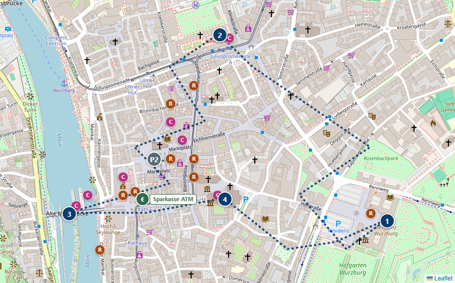
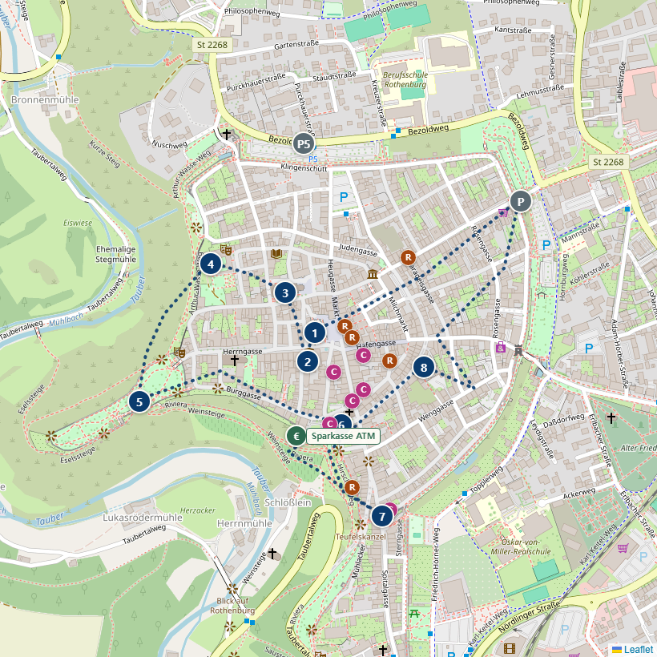
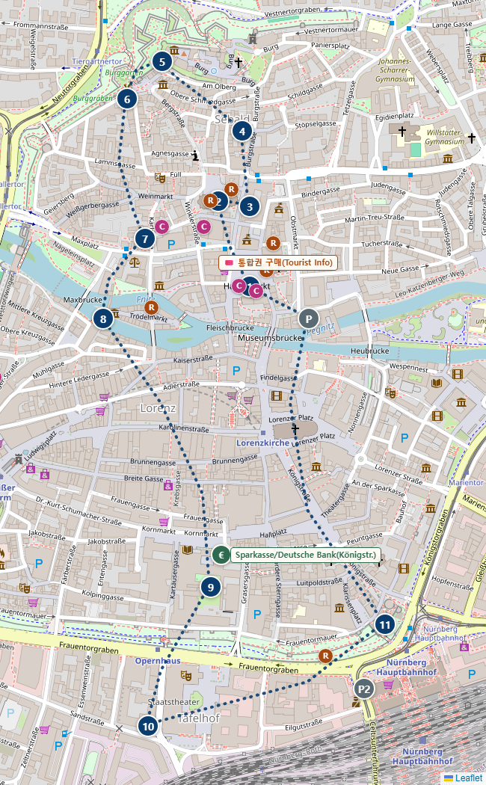
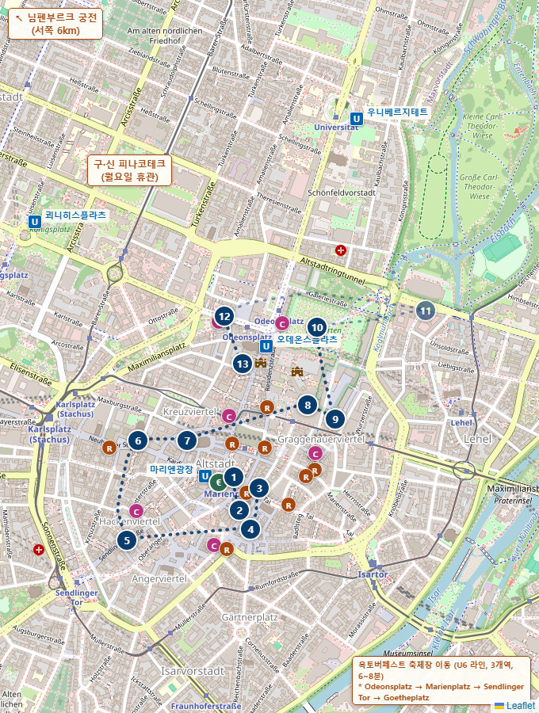
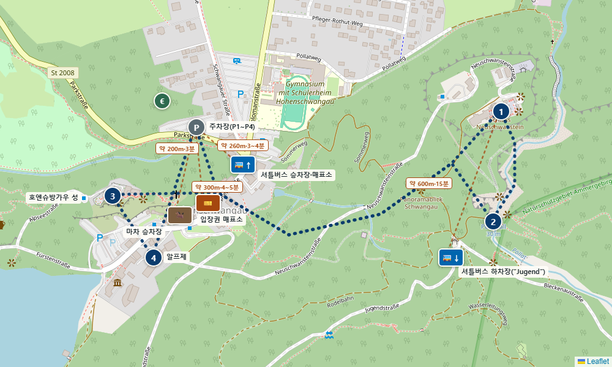
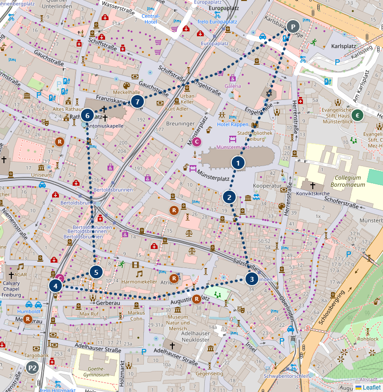
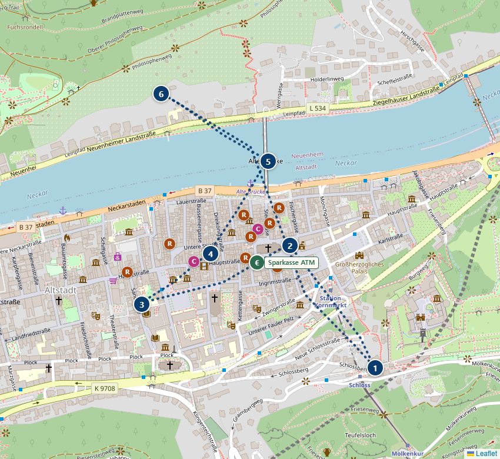
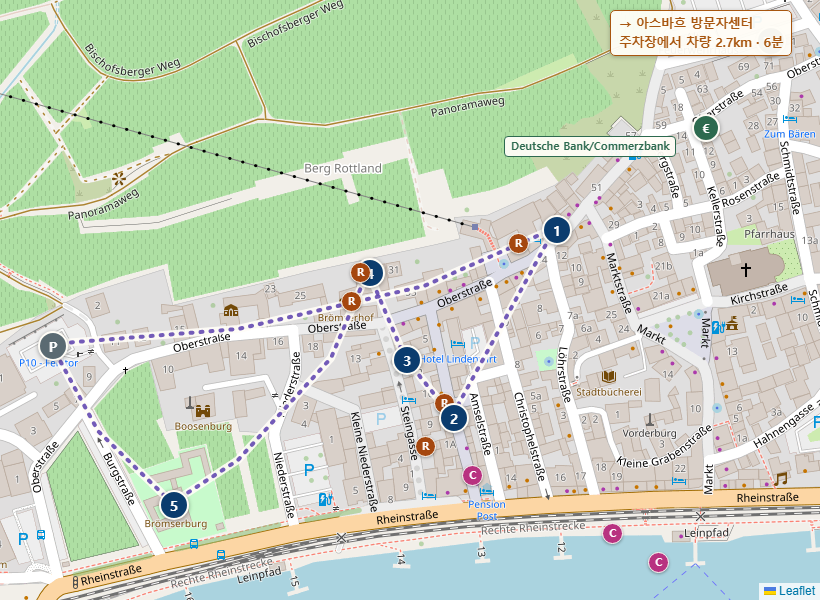
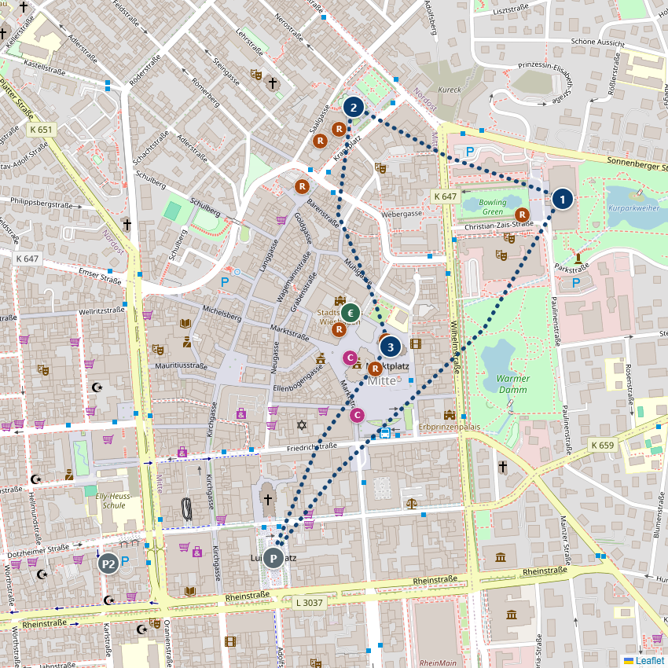
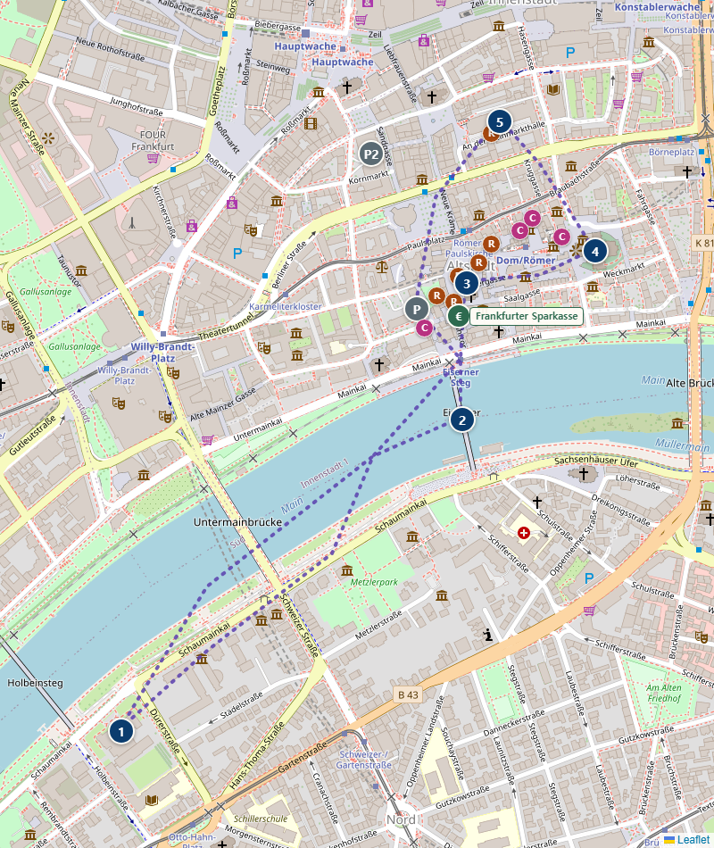

<title>여행 계획</title>
<meta name="viewport" content="width=device-width, initial-scale=1">
<meta name="description" content="2026년 9월 19일~26일, 프랑크푸르트 출발 로맨틱가도–바이에른–블랙 포레스트를 도는 독일 렌터카 로드트립 플래너">
<style>
  @font-face{
    font-family: 'Paperozi';
    src: url('https://cdn.jsdelivr.net/gh/projectnoonnu/2408-3@1.0/Paperlogy-1Thin.woff2') format('woff2');
    font-weight: 100;
    font-display: swap;
  }
  @font-face{
    font-family: 'Paperozi';
    src: url('https://cdn.jsdelivr.net/gh/projectnoonnu/2408-3@1.0/Paperlogy-2ExtraLight.woff2') format('woff2');
    font-weight: 200;
    font-display: swap;
  }
  @font-face{
    font-family: 'Paperozi';
    src: url('https://cdn.jsdelivr.net/gh/projectnoonnu/2408-3@1.0/Paperlogy-3Light.woff2') format('woff2');
    font-weight: 300;
    font-display: swap;
  }
  @font-face{
    font-family: 'Paperozi';
    src: url('https://cdn.jsdelivr.net/gh/projectnoonnu/2408-3@1.0/Paperlogy-4Regular.woff2') format('woff2');
    font-weight: 400;
    font-display: swap;
  }
  @font-face{
    font-family: 'Paperozi';
    src: url('https://cdn.jsdelivr.net/gh/projectnoonnu/2408-3@1.0/Paperlogy-5Medium.woff2') format('woff2');
    font-weight: 500;
    font-display: swap;
  }
  @font-face{
    font-family: 'Paperozi';
    src: url('https://cdn.jsdelivr.net/gh/projectnoonnu/2408-3@1.0/Paperlogy-6SemiBold.woff2') format('woff2');
    font-weight: 600;
    font-display: swap;
  }
  @font-face{
    font-family: 'Paperozi';
    src: url('https://cdn.jsdelivr.net/gh/projectnoonnu/2408-3@1.0/Paperlogy-7Bold.woff2') format('woff2');
    font-weight: 700;
    font-display: swap;
  }
  @font-face{
    font-family: 'Paperozi';
    src: url('https://cdn.jsdelivr.net/gh/projectnoonnu/2408-3@1.0/Paperlogy-8ExtraBold.woff2') format('woff2');
    font-weight: 800;
    font-display: swap;
  }
  @font-face{
    font-family: 'Paperozi';
    src: url('https://cdn.jsdelivr.net/gh/projectnoonnu/2408-3@1.0/Paperlogy-9Black.woff2') format('woff2');
    font-weight: 900;
    font-display: swap;
  }
  :root{
    --bg: #efece0;
    --bg-soft: #f7f5ec;
    --surface: #fffdf7;
    --ink: #1e2a2f;
    --ink-soft: #4c5a5f;
    --line: #d6d0ba;
    --route: #0b3c6e;
    --route-soft: #dfe8f0;
    --sign: #6e4429;
    --sign-soft: #ece1d5;
    --warn: #b96a12;
    --warn-soft: #f6e5cd;
    --shadow: 0 1px 2px rgba(30,20,10,0.06), 0 8px 24px -12px rgba(30,20,10,0.18);
    --radius: 3px;
  }
  @media (prefers-color-scheme: dark){
    :root{
      --bg: #14181a;
      --bg-soft: #1a1f21;
      --surface: #1e2426;
      --ink: #e9e4d6;
      --ink-soft: #a9b0ac;
      --line: #333a3c;
      --route: #6fa3d8;
      --route-soft: #223245;
      --sign: #c99b6e;
      --sign-soft: #302722;
      --warn: #e3a94a;
      --warn-soft: #3a2e19;
      --shadow: 0 1px 2px rgba(0,0,0,0.3), 0 8px 24px -12px rgba(0,0,0,0.5);
    }
  }
  :root[data-theme="dark"]{
    --bg: #14181a; --bg-soft: #1a1f21; --surface: #1e2426; --ink: #e9e4d6; --ink-soft: #a9b0ac;
    --line: #333a3c; --route: #6fa3d8; --route-soft: #223245; --sign: #c99b6e; --sign-soft: #302722;
    --warn: #e3a94a; --warn-soft: #3a2e19;
    --shadow: 0 1px 2px rgba(0,0,0,0.3), 0 8px 24px -12px rgba(0,0,0,0.5);
  }
  :root[data-theme="light"]{
    --bg: #efece0; --bg-soft: #f7f5ec; --surface: #fffdf7; --ink: #1e2a2f; --ink-soft: #4c5a5f;
    --line: #d6d0ba; --route: #0b3c6e; --route-soft: #dfe8f0; --sign: #6e4429; --sign-soft: #ece1d5;
    --warn: #b96a12; --warn-soft: #f6e5cd;
    --shadow: 0 1px 2px rgba(30,20,10,0.06), 0 8px 24px -12px rgba(30,20,10,0.18);
  }

  *{box-sizing:border-box;}
  html{scroll-behavior:smooth;}
  @media (prefers-reduced-motion: reduce){ html{scroll-behavior:auto;} }

  body{
    margin:0;
    background:var(--bg);
    color:var(--ink);
    font-family: 'Paperozi', Georgia, "Iowan Old Style", "Noto Serif KR", "Nanum Myeongjo", serif;
    line-height:1.65;
    font-size:16px;
  }

  h1,h2,h3, .label{
    font-family: 'Paperozi', -apple-system, "Segoe UI", "Pretendard", "Noto Sans KR", Roboto, Helvetica, Arial, sans-serif;
    font-stretch: condensed;
    font-weight:800;
    letter-spacing:-0.01em;
    text-wrap:balance;
  }

  .mono{ font-family: "SF Mono","Consolas","Roboto Mono", ui-monospace, monospace; font-variant-numeric: tabular-nums; }

  .eyebrow{
    font-family: 'Paperozi',-apple-system,"Segoe UI","Pretendard","Noto Sans KR",Roboto,sans-serif;
    text-transform:uppercase;
    letter-spacing:0.14em;
    font-size:0.72rem;
    font-weight:700;
    color:var(--route);
  }

  a{ color:var(--route); }
  a:focus-visible, button:focus-visible, input:focus-visible{
    outline:2px solid var(--route); outline-offset:2px;
  }

  /* ---------- Header ---------- */
  header.hero{
    background:
      linear-gradient(180deg, var(--bg-soft), var(--bg));
    border-bottom:1px solid var(--line);
    padding: 3.2rem 1.5rem 2.4rem;
  }
  .hero-inner{ max-width:920px; margin:0 auto; }
  .hero h1{ font-size: clamp(1.9rem, 4.6vw, 2.9rem); margin: 0.5rem 0 0.7rem; color:var(--ink); }
  .hero p.sub{ max-width:56ch; color:var(--ink-soft); font-size:1.05rem; margin:0 0 1.6rem; }

  .stat-row{ display:flex; flex-wrap:wrap; gap:0.6rem 1.8rem; }
  .stat{ display:flex; flex-direction:column; gap:0.15rem; }
  .stat .n{ font-family:"SF Mono","Consolas",ui-monospace,monospace; font-variant-numeric:tabular-nums; font-size:1.5rem; font-weight:700; color:var(--route); }
  .stat .l{ font-size:0.75rem; color:var(--ink-soft); text-transform:uppercase; letter-spacing:0.08em; }

  /* ---------- Sticky top cross-page bar ---------- */
  nav.topbar{
    position:fixed; top:0; left:0; right:0; z-index:1000;
    background:var(--surface); border-bottom:1px solid var(--line); box-shadow:var(--shadow);
    -webkit-transform:translateZ(0); transform:translateZ(0); will-change:transform;
    backface-visibility:hidden; -webkit-backface-visibility:hidden;
  }
  .topbar-scroll{
    max-width:960px; margin:0 auto; width:100%;
    display:flex; align-items:center; gap:0.3rem; overflow-x:auto;
    padding:0.4rem 1rem; scrollbar-width:thin;
  }
  .topbar-scroll.topbar-links{ border-top:1px solid var(--line); }
  @media (max-width:640px){
    .topbar-scroll.topbar-links{ justify-content:space-between; overflow-x:visible; }
    .topbar-scroll.topbar-links .topbar-item{ padding:0.3rem 0.4rem; font-size:0.72rem; gap:0; flex-direction:column; border-radius:8px; }
    .topbar-scroll.topbar-links .tb-icon{ display:none; }
  }
  .topbar-item{
    flex:none; display:inline-flex; align-items:center; gap:0.5rem;
    padding:0.3rem 0.8rem 0.3rem 0.3rem; border-radius:20px; text-decoration:none;
    color:var(--ink-soft); border:1px solid transparent; white-space:nowrap;
    font-family:'Paperozi',-apple-system,"Segoe UI","Pretendard","Noto Sans KR",sans-serif;
    font-size:0.82rem; font-weight:700;
  }
  .topbar-item .tb-icon{
    flex:none; width:1.7rem; height:1.7rem; border-radius:50%;
    background:var(--route-soft); color:var(--route);
    display:flex; align-items:center; justify-content:center;
  }
  a.topbar-item:hover{ border-color:var(--line); color:var(--ink); }
  .topbar-item.is-current{ color:var(--route); background:var(--route-soft); }
  .topbar-item.is-current .tb-icon{ background:var(--route); color:#fff; }
  button.topbar-item{ background:none; cursor:pointer; margin:0; }
  button.topbar-item:hover{ border-color:var(--line); color:var(--ink); }
  .topbar-action{ background:var(--route-soft); color:var(--route); border-color:var(--route-soft); }
  .topbar-action .tb-icon{ background:var(--route); color:#fff; }
  .topbar-action:hover{ border-color:var(--route); color:var(--route); }
  .tb-icon .icon-off{ display:none; }
  .topbar-action[aria-pressed="false"] .icon-on{ display:none; }
  .topbar-action[aria-pressed="false"] .icon-off{ display:block; }

  /* ---------- Sticky day nav (day-roadmap grid) ---------- */
  nav.daynav{
    position:fixed; top:105.125px; left:0; right:0; z-index:999;
    background:var(--surface);
    border-bottom:1px solid var(--line);
    box-shadow: var(--shadow);
    -webkit-transform:translateZ(0); transform:translateZ(0); will-change:transform;
    backface-visibility:hidden; -webkit-backface-visibility:hidden;
  }
  @media (max-width:640px){ nav.daynav{ top:96.9375px; } }
  nav.daynav .day-roadmap{
    max-width:960px; margin:0 auto;
    display:grid; grid-template-columns:repeat(4,1fr);
    gap:0.4rem; padding:0.5rem 0.8rem;
  }
  nav.daynav .day-chip{
    display:flex; flex-direction:column; align-items:center; gap:0.1rem; min-width:0;
    padding:0.35rem 0.3rem; text-align:center; text-decoration:none;
    background:var(--bg-soft); border:1px solid var(--line); border-radius:4px;
  }
  nav.daynav .day-chip:hover, nav.daynav .day-chip:focus-visible{ border-color:var(--route); }
  nav.daynav .day-chip.current{ border-color:var(--route); background:var(--route-soft); }
  nav.daynav .dc-label{
    font-family:'Paperozi',-apple-system,"Segoe UI","Pretendard","Noto Sans KR",sans-serif;
    font-size:0.74rem; font-weight:800; color:var(--route); white-space:nowrap;
  }
  nav.daynav .dc-date{ font-size:0.65rem; font-weight:600; color:var(--ink-soft); margin-left:0.25rem; font-family:"SF Mono","Consolas",monospace; }
  nav.daynav .dc-city{ font-size:0.72rem; font-weight:700; color:var(--ink); white-space:nowrap; overflow:hidden; text-overflow:ellipsis; max-width:100%; }
  @media (max-width:640px){
    nav.daynav .day-roadmap{ gap:0.3rem; padding:0.4rem 0.5rem; }
    nav.daynav .day-chip{ padding:0.3rem 0.15rem; }
    nav.daynav .dc-label{ font-size:0.62rem; }
    nav.daynav .dc-date{ font-size:0.56rem; margin-left:0.15rem; }
    nav.daynav .dc-city{ font-size:0.6rem; }
  }

  /* ---------- Sections ---------- */
  main{ max-width:920px; margin:0 auto; padding:14.8rem 1.5rem 0; }
  @media (max-width:640px){ main{ padding-top:13rem; } }
  section{ padding:3rem 0; border-bottom:1px solid var(--line); scroll-margin-top:14.8rem; }
  @media (max-width:640px){ section{ scroll-margin-top:13rem; } }
  section:last-of-type{ border-bottom:none; }
  section > .eyebrow{ display:block; margin-bottom:0.5rem; }
  section > h2{ font-size:1.6rem; margin:0 0 0.4rem; }
  section > p.lede{ color:var(--ink-soft); max-width:64ch; margin:0 0 1.8rem; }

  /* ---------- Route timeline ---------- */
  .route-timeline{ display:flex; flex-direction:column; padding:0.4rem 0; }
  .tl-row{ display:flex; gap:0.9rem; }
  .tl-node{
    flex:none; width:1.8rem; display:flex; flex-direction:column; align-items:center;
  }
  .tl-node .tl-line{ width:2px; flex:1 1 auto; background:var(--line); }
  .tl-row:first-child .tl-node .tl-line.up{ background:transparent; }
  .tl-row:last-child .tl-node .tl-line.down{ background:transparent; }
  .tl-badge{
    flex:none; width:1.8rem; height:1.8rem; border-radius:50%;
    background:var(--route); color:#fff;
    display:flex; align-items:center; justify-content:center;
    font-family:"SF Mono","Consolas",monospace; font-weight:700; font-size:0.72rem;
    box-shadow: var(--shadow);
  }
  .tl-badge.wide{ width:auto; min-width:1.8rem; padding:0 0.35rem; font-size:0.62rem; letter-spacing:-0.02em; }
  .tl-dot{
    flex:none; width:0.7rem; height:0.7rem; border-radius:50%;
    background:var(--sign); border:2px solid var(--surface); box-shadow:0 0 0 1px var(--line);
  }
  .tl-body{ flex:1 1 auto; min-width:0; }
  .tl-row.stop .tl-body{ padding:0.55rem 0; }
  .tl-row.waypoint .tl-body{ padding:0.5rem 0; }
  .tl-row.leg .tl-body{ padding:0.35rem 0; display:flex; align-items:center; }
  .tl-city{
    font-weight:700; font-family:'Paperozi',-apple-system,"Segoe UI","Pretendard","Noto Sans KR",sans-serif;
    font-size:0.96rem; color:var(--ink);
  }
  .tl-row.waypoint .tl-city{ font-size:0.9rem; color:var(--sign); }
  .tl-tag{ margin-top:0.15rem; font-size:0.78rem; color:var(--ink-soft); }
  .tl-leg-label{
    font-family:"SF Mono","Consolas",monospace; font-size:0.78rem; color:var(--ink-soft);
  }

  /* ---------- Germany map ---------- */
  #map{ height:640px; border-radius:var(--radius); border:1px solid var(--line); box-shadow:var(--shadow); background:var(--bg-soft); }
  @media (max-width:640px){ #map{ height:460px; } }
  .leaflet-popup-content-wrapper{ border-radius:3px; }
  .map-legend-note{ margin:0.8rem 0 0; font-size:0.78rem; color:var(--ink-soft); text-align:center; }
  .region-grid{ display:grid; grid-template-columns:repeat(4, 1fr); gap:0.7rem; margin-top:1.2rem; }
  @media (max-width:760px){ .region-grid{ grid-template-columns:repeat(2, 1fr); } }
  @media (max-width:460px){ .region-grid{ grid-template-columns:1fr; } }
  .region-card{
    background:var(--surface); border:1px solid var(--line); border-radius:var(--radius);
    padding:0.9rem 1rem; box-shadow:var(--shadow);
  }
  .region-card .dot{ display:inline-block; width:0.7rem; height:0.7rem; border-radius:50%; margin-right:0.5rem; vertical-align:middle; }
  .region-card h3{ display:inline; font-size:0.98rem; margin:0; vertical-align:middle; }
  .region-card .days{
    display:block; font-family:"SF Mono","Consolas",monospace; font-size:0.72rem; color:var(--ink-soft);
    margin:0.25rem 0 0.4rem 1.2rem;
  }
  .region-card p{ margin:0; font-size:0.86rem; color:var(--ink-soft); }
  .region-card .tagline{ margin:0.35rem 0 0.5rem; font-size:0.88rem; color:var(--ink); }
  .region-card .cities{ margin:0.3rem 0 0; font-size:0.76rem; color:var(--ink-soft); word-break:keep-all; overflow-wrap:break-word; }
    .map-wrap{
    background:var(--surface); border:1px solid var(--line); border-radius:var(--radius);
    box-shadow:var(--shadow); padding:1.4rem 1.2rem 1rem; max-width:640px; margin:0 auto;
  }
  .map-legend{
    display:flex; gap:1.3rem; flex-wrap:wrap; justify-content:center;
    margin-top:0.9rem; font-size:0.78rem; color:var(--ink-soft);
  }
  .map-legend i{
    display:inline-block; width:0.62rem; height:0.62rem; border-radius:50%;
    margin-right:0.4rem; vertical-align:middle;
  }
  .map-legend .lg-stay{ background:var(--ink-soft); width:0.95rem; height:0.95rem; }
  .map-legend .lg-way{ background:var(--ink-soft); }
  .map-legend .lg-optional{ background:none; border:1.5px dashed var(--ink-soft); }
  .map-legend .lg-ref{ background:var(--ink-soft); opacity:0.4; }
  .de-map{ width:100%; height:auto; display:block; }
  .de-land{ fill:var(--bg-soft); stroke:var(--line); stroke-width:2; stroke-linejoin:round; }
  .route-casing{ fill:none; stroke:var(--surface); stroke-width:7; stroke-linecap:round; stroke-linejoin:round; }
  .route-line{ fill:none; stroke:var(--route); stroke-width:2.6; stroke-linecap:round; stroke-linejoin:round; }
  .badge-circle{ fill:var(--route); stroke:var(--surface); stroke-width:2; }
  .nav-car-wrap{ background:none !important; border:none !important; }
  .nav-car{ width:20px; height:20px; transform-origin:50% 50%; filter:drop-shadow(0 1px 2.5px rgba(0,0,0,0.4)); pointer-events:none; }
  .leaflet-tooltip.rt-tip{ font-size:0.95rem; font-weight:600; line-height:1.65; padding:0.6rem 0.9rem; width:max-content; max-width:320px; white-space:normal; word-break:keep-all; border-radius:6px; border:none; box-shadow:0 4px 16px rgba(0,0,0,0.28); }
  .leaflet-tooltip.rt-tip b{ color:var(--sign); }
  .badge-circle.start{ fill:var(--sign); }
  .badge-text{ fill:#fff; font-family:"SF Mono","Consolas",monospace; font-weight:700; font-size:10px; text-anchor:middle; dominant-baseline:central; }
  .waypoint-circle{ fill:var(--sign); stroke:var(--surface); stroke-width:1.5; }
  .waypoint-circle.optional{ fill:none; stroke:var(--sign); stroke-width:1.5; stroke-dasharray:2 1.5; }
  .waypoint-label{ fill:var(--sign); font-family:'Paperozi',-apple-system,"Segoe UI","Pretendard","Noto Sans KR",sans-serif; font-weight:700; font-size:11px; }
  .city-label{ fill:var(--ink); font-family:'Paperozi',-apple-system,"Segoe UI","Pretendard","Noto Sans KR",sans-serif; font-weight:700; font-size:12.5px; }
  .city-sub{ fill:var(--ink-soft); font-family:"SF Mono","Consolas",monospace; font-size:8.5px; letter-spacing:0.02em; }
  .ref-circle{ fill:var(--ink-soft); opacity:0.5; }
  .ref-label{
    fill:var(--ink-soft); font-family:'Paperozi',-apple-system,"Segoe UI","Pretendard","Noto Sans KR",sans-serif;
    font-weight:600; font-style:italic; font-size:10.5px; opacity:0.8;
  }
  .map-caption{ text-align:center; margin:0.9rem 0 0; font-size:0.78rem; color:var(--ink-soft); }

  /* ---------- Per-day zoomed maps ---------- */
  .landmark-grid{ display:grid; grid-template-columns:repeat(6,1fr); gap:1.2rem; margin:0.9rem 0 1.3rem; }
  .landmark-card{
    grid-column: span 2;
    background:var(--surface); border:1px solid var(--line); border-radius:var(--radius);
    overflow:hidden; box-shadow:var(--shadow); display:flex; flex-direction:column;
  }
  .landmark-card img{ width:100%; height:170px; object-fit:cover; display:block; background:var(--bg-soft); }
  html.photos-off .landmark-card img{ display:none; }
  .landmark-card.wide{ grid-column:span 6; flex-direction:row; }
  .landmark-card.wide img{ width:280px; height:auto; min-height:100%; flex-shrink:0; }
  .landmark-card.wide .landmark-body{ flex:1; }
  .landmark-card.semi-wide{ grid-column:span 3; flex-direction:row; }
  .landmark-card.semi-wide img{ width:170px; height:auto; min-height:100%; flex-shrink:0; }
  .landmark-card.semi-wide .landmark-body{ flex:1; }
  @media (max-width:900px){
    .landmark-grid{ grid-template-columns:repeat(2,1fr); }
    .landmark-card{ grid-column:span 1; }
    .landmark-card.semi-wide{ grid-column:span 1; }
    .landmark-card.wide{ grid-column:span 2; }
  }
  @media (max-width:640px){
    .landmark-grid{ grid-template-columns:1fr; }
    .landmark-card, .landmark-card.wide, .landmark-card.semi-wide{ grid-column:1 / -1; flex-direction:column; }
    .landmark-card.wide img, .landmark-card.semi-wide img{ width:100%; height:170px; min-height:0; flex-shrink:1; }
  }
  .combo-group{
    grid-column: span 4;
    display:grid; grid-template-columns:repeat(2,1fr); gap:1.2rem;
    border:2px dashed var(--route); border-radius:var(--radius);
    padding:1.5rem 0.9rem 0.9rem; position:relative;
  }
  .combo-group-label{
    position:absolute; top:-0.75rem; left:0.9rem;
    background:var(--bg-soft); border:1px solid var(--route); border-radius:999px;
    padding:0.15rem 0.7rem; font-size:0.7rem; font-weight:800; color:var(--route);
    font-family:'Paperozi',-apple-system,"Segoe UI","Pretendard","Noto Sans KR",sans-serif;
  }
  .combo-group .landmark-card{ grid-column:span 1; }
  @media (max-width:900px){ .combo-group{ grid-column:span 2; } }
  @media (max-width:640px){
    .combo-group{ grid-column:1 / -1; grid-template-columns:1fr; }
    .combo-group .landmark-card{ grid-column:1 / -1; }
  }
  .booking-note{
    margin:0.6rem 0 1rem; padding:0.7rem 0.9rem; border-radius:var(--radius);
    background:var(--warn-soft); border:1px solid var(--warn);
    font-size:0.82rem; line-height:1.6; color:var(--ink);
  }
  .booking-note b{ color:var(--warn); }
  .booking-note ul{ margin:0.3rem 0 0; padding-left:1.1rem; }
  .booking-note li{ margin:0.15rem 0; }
  .booking-note .cash-note{ margin-top:0.5rem; padding-top:0.5rem; border-top:1px dashed var(--warn); }
  .landmark-body{ padding:1rem 1.1rem 1.2rem; display:flex; flex-direction:column; gap:0.6rem; }
  .landmark-body h3{ margin:0; font-size:1.02rem; }
  .landmark-desc{ margin:0; font-size:0.88rem; color:var(--ink-soft); }
  .landmark-meta{ font-size:0.8rem; color:var(--ink-soft); }
  .landmark-meta .landmark-price{ color:var(--route); font-weight:700; font-family:"SF Mono","Consolas",monospace; }
  .landmark-parking{ font-size:0.78rem; color:var(--ink-soft); }
    .stay-detail{ margin:-0.3rem 0 1rem; font-family:"SF Mono","Consolas",monospace; font-size:0.82rem; line-height:1.6; color:var(--ink-soft); }
  .stay-detail b{ color:var(--sign); }
  .stay-detail b{ color:var(--sign); }
    .day-leaflet-map{ height:420px; margin:0.9rem 0 1.3rem; border-radius:var(--radius); border:1px solid var(--line); box-shadow:var(--shadow); background:var(--bg-soft); }
  @media (max-width:640px){ .day-leaflet-map{ height:300px; } }
  .walk-map-note{ font-size:0.78rem; color:var(--ink-soft); margin:0 0 0.6rem; }
  .walk-map-note.tonight-note{
    margin:1.5rem 0 0.6rem; padding:0.9rem 1rem 0; border-top:2px dashed var(--route);
    font-size:0.85rem;
  }
  .city-label{
    grid-column:1 / -1;
    margin:1.1rem 0 0.5rem; padding-top:0.9rem; border-top:1px dashed var(--line);
    font-size:0.9rem; font-weight:800; letter-spacing:0.01em; color:var(--route);
  }
  h4 + .city-label{ margin-top:0; padding-top:0; border-top:none; }
  .landmark-grid > .city-label:first-child{ margin-top:0; padding-top:0; border-top:none; }
  .city-label .optional-tag{ font-size:0.72rem; font-weight:700; color:var(--warn); margin-left:0.3rem; }
  .walk-map-link{
    display:inline-flex; align-items:center; gap:0.4rem;
    margin:0 0 1.3rem; padding:0.6rem 1.1rem;
    background:var(--surface); border:1px solid var(--line); border-radius:999px;
    color:var(--route); font-weight:700; font-size:0.85rem; text-decoration:none;
    box-shadow:var(--shadow);
  }
  .walk-map-link:hover{ border-color:var(--route); background:var(--route-soft); }
  .route-snapshot{
    display:block; max-width:520px; margin:0.8rem 0 1.3rem;
    border:1px solid var(--line); border-radius:var(--radius); overflow:hidden; box-shadow:var(--shadow);
  }
  .route-snapshot img{ width:100%; height:auto; display:block; }
  .route-snapshot-caption{ margin:0; padding:0.45rem 0.7rem; font-size:0.72rem; color:var(--ink-soft); background:var(--bg-soft); }
  .landmark-grid > .walk-map-note,
  .landmark-grid > .walk-map-link,
  .landmark-grid > .route-snapshot,
  .landmark-grid > .booking-note,
  .landmark-grid > .sight-list{ grid-column: 1 / -1; }
  svg.day-map{ width:100%; height:auto; display:block; max-height:280px; }
  .route-casing.optional, .route-line.optional{ stroke-dasharray:5 4; }
  .leg-map-label{
    font-family:"SF Mono","Consolas",monospace; font-size:9.5px; font-weight:700; fill:var(--ink-soft);
    paint-order:stroke; stroke:var(--surface); stroke-width:3px; stroke-linejoin:round;
  }

  /* ---------- Cards / grids ---------- */
  .grid{ display:grid; gap:1rem; }
  .grid.cols-2{ grid-template-columns: repeat(auto-fit, minmax(260px,1fr)); }
  .grid.cols-3{ grid-template-columns: repeat(auto-fit, minmax(220px,1fr)); }

  .card{
    background:var(--surface); border:1px solid var(--line); border-radius:var(--radius);
    padding:1.1rem 1.2rem; box-shadow:var(--shadow);
  }
  .card h3{ margin:0 0 0.5rem; font-size:1.02rem; color:var(--ink); }
  .card ul{ margin:0; padding-left:1.1rem; color:var(--ink-soft); font-size:0.94rem; }
  .card li + li{ margin-top:0.35rem; }
  .card p{ margin:0; color:var(--ink-soft); font-size:0.94rem; }

  /* ---------- Day cards ---------- */
  .day{ padding:2.4rem 0; border-bottom:1px solid var(--line); scroll-margin-top:14.8rem; }
  @media (max-width:640px){ .day{ scroll-margin-top:13rem; } }
  .day:last-child{ border-bottom:none; }
  details.day > summary.day-head{ cursor:pointer; list-style:none; }
  details.day > summary.day-head::-webkit-details-marker{ display:none; }
  details.day > summary.day-head::marker{ content:""; }
  details.day > summary.day-head:hover .day-toggle{ color:var(--route); }
  .day-toggle{ margin-left:auto; color:var(--ink-soft); font-size:0.85rem; transition:transform 0.15s ease; }
  details.day[open] .day-toggle{ transform:rotate(180deg); }
  .day-content{ padding-top:0.3rem; }
  .day-head{ display:flex; align-items:baseline; gap:0.9rem; flex-wrap:wrap; margin-bottom:0.3rem; }
  .day-head .num{
    font-family:"SF Mono","Consolas",monospace; font-weight:700; font-size:1.6rem; color:var(--route);
  }
  .day-head .day-date{
    font-family:"SF Mono","Consolas",monospace; font-size:0.78rem; color:var(--ink-soft);
    background:var(--bg-soft); border:1px solid var(--line); border-radius:2px; padding:0.15rem 0.5rem;
  }
  .day-head h3{ margin:0; font-size:1.3rem; }
  details.optional-block > summary.optional-summary{ cursor:pointer; list-style:none; display:flex; align-items:center; }
  details.optional-block > summary.optional-summary::-webkit-details-marker{ display:none; }
  details.optional-block > summary.optional-summary::marker{ content:""; }
  .optional-toggle{ margin-left:auto; color:var(--ink-soft); font-size:0.8rem; transition:transform 0.15s ease; }
  details.optional-block[open] .optional-toggle{ transform:rotate(180deg); }
  details.optional-block > summary.optional-summary:hover .optional-toggle{ color:var(--route); }
  .day-meta{
    display:flex; gap:1.2rem; flex-wrap:wrap; margin: 0.4rem 0 1rem;
    font-family:"SF Mono","Consolas",monospace; font-size:0.82rem; color:var(--ink-soft);
  }
  .day-meta b{ color:var(--sign); }
  .day-body{ display:grid; grid-template-columns: 1.3fr 1fr; gap:1.4rem; }
  .sight-list + .day-body{ margin-top:1.6rem; }
  @media (max-width:640px){ .day-body{ grid-template-columns:1fr; } }
  .day-body h4{ margin:0 0 0.4rem; font-size:0.78rem; text-transform:uppercase; letter-spacing:0.08em; color:var(--sign); font-family:'Paperozi',-apple-system,"Segoe UI","Pretendard","Noto Sans KR",sans-serif;}
  .day-body ul{ margin:0 0 1rem; padding-left:1.1rem; color:var(--ink); font-size:0.95rem; }
  .day-body li + li{ margin-top:0.3rem; }
  .lodge{
    background:var(--sign-soft); border-radius:2px; padding:0.7rem 0.9rem; font-size:0.9rem; color:var(--ink);
  }
  .tip{
    border-left:3px solid var(--route); padding-left:0.8rem; font-size:0.9rem; color:var(--ink-soft); font-style:italic;
  }
  .sight-list{
    margin-top:1.2rem; padding-top:1rem; border-top:1px solid var(--line);
    display:flex; flex-direction:column; gap:0.5rem;
  }
  .sight-list h4{ margin:0 0 0.2rem; }
  .sight{
    display:flex; flex-wrap:wrap; align-items:baseline; gap:0.25rem 0.9rem;
    font-size:0.88rem;
  }
  .sight-name{ font-weight:700; color:var(--ink); flex:1 1 11rem; min-width:9rem; }
  .sight-hours{ font-family:"SF Mono","Consolas",monospace; font-size:0.78rem; color:var(--ink-soft); }
  .sight-price{ font-family:"SF Mono","Consolas",monospace; font-size:0.78rem; color:var(--route); font-weight:700; }
  .sight-meaning{ display:block; width:100%; margin-top:0.35rem; font-size:0.82rem; color:var(--ink); background:var(--warn-soft); padding:0.5rem 0.7rem; border-radius:2px; }
  .food-grid{
    display:grid; grid-template-columns:repeat(3,1fr); gap:0.9rem;
    margin-top:0.3rem;
  }
  @media (max-width:900px){ .food-grid{ grid-template-columns:repeat(2,1fr); } }
  @media (max-width:640px){ .food-grid{ grid-template-columns:1fr; } }
  .food-card{
    background:var(--surface); border:1px solid var(--line); border-radius:var(--radius);
    padding:0.85rem 0.95rem; box-shadow:var(--shadow);
    display:flex; flex-direction:column; gap:0.4rem;
  }
  .food-card h5{ margin:0; font-size:0.92rem; color:var(--ink); }
  .food-card .food-loc{ margin:0; font-size:0.78rem; line-height:1.55; color:var(--ink-soft); }
  .food-card .food-dish{ margin:0; font-size:0.8rem; line-height:1.5; color:var(--route); font-weight:700; }
  .food-card .food-park{ margin:0; font-size:0.76rem; line-height:1.5; color:var(--ink-soft); }
  .food-card .food-park a{ color:var(--route); font-weight:700; }
  .plan-step{ display:flex; gap:0.9rem; padding:0.55rem 0; border-bottom:1px dashed var(--line); }
  .plan-step:last-child{ border-bottom:none; }
  .plan-time{ flex:none; width:3.4rem; font-family:"SF Mono","Consolas",monospace; font-weight:800; color:var(--route); font-size:0.85rem; padding-top:0.05rem; }
  .plan-body{ flex:1; min-width:0; }
  .plan-event{ margin:0; font-weight:700; font-size:0.85rem; color:var(--ink); }
  .plan-detail{ margin:0.2rem 0 0; font-size:0.78rem; color:var(--ink-soft); line-height:1.5; }
  .plan-detail a{ color:var(--route); font-weight:700; }

  /* ---------- Checklist ---------- */
  .checklist{ list-style:none; margin:0; padding:0; display:flex; flex-direction:column; gap:0.5rem; }
  .checklist li{
    display:flex; align-items:flex-start; gap:0.6rem;
    background:var(--surface); border:1px solid var(--line); border-radius:2px;
    padding:0.55rem 0.8rem;
  }
  .checklist input[type="checkbox"]{
    width:1.05rem; height:1.05rem; margin-top:0.18rem; accent-color:var(--route); flex:none; cursor:pointer;
  }
  .checklist label{ font-size:0.94rem; cursor:pointer; }
  .checklist li.checked{ opacity:0.55; }
  .checklist li.checked label{ text-decoration:line-through; }

  /* ---------- Table ---------- */
  .table-wrap{ overflow-x:auto; }
  table{ width:100%; border-collapse:collapse; font-size:0.92rem; min-width:480px; }
  th,td{ text-align:left; padding:0.55rem 0.7rem; border-bottom:1px solid var(--line); }
  th{ font-family:'Paperozi',-apple-system,"Segoe UI","Pretendard","Noto Sans KR",sans-serif; text-transform:uppercase; letter-spacing:0.05em; font-size:0.72rem; color:var(--ink-soft); }
  td.mono{ color:var(--route); font-weight:700; }

  footer{ max-width:920px; margin:0 auto; padding:2.4rem 1.5rem 3.5rem; color:var(--ink-soft); font-size:0.85rem; }

  @media print{
    nav.daynav{ display:none; }
    section, .day{ break-inside:avoid; }
  }
</style>

<script>if(localStorage.getItem('photosOff')==='1')document.documentElement.classList.add('photos-off');</script>

<nav class="topbar" aria-label="전체 메뉴">
  <div class="topbar-scroll">
    <a class="topbar-item is-current" href="index.html" aria-label="여행 플래너 홈"><span class="tb-icon"><svg viewBox="0 0 24 24" width="16" height="16" fill="none" stroke="currentColor" stroke-width="1.8" stroke-linecap="round" stroke-linejoin="round"><path d="M3 11 12 3l9 8"/><path d="M5 10v10a1 1 0 0 0 1 1h4v-6h4v6h4a1 1 0 0 0 1-1V10"/></svg></span></a>
    <button type="button" class="topbar-item topbar-action" id="photoToggle" aria-pressed="true">
      <span class="tb-icon">
        <svg class="icon-on" viewBox="0 0 24 24" width="16" height="16" fill="none" stroke="currentColor" stroke-width="1.8" stroke-linecap="round" stroke-linejoin="round"><path d="M2 12s3.5-7 10-7 10 7 10 7-3.5 7-10 7-10-7-10-7z"/><circle cx="12" cy="12" r="3"/></svg>
        <svg class="icon-off" viewBox="0 0 24 24" width="16" height="16" fill="none" stroke="currentColor" stroke-width="1.8" stroke-linecap="round" stroke-linejoin="round"><path d="M9.88 9.88a3 3 0 1 0 4.24 4.24"/><path d="M10.73 5.08A10.43 10.43 0 0 1 12 5c6.5 0 10 7 10 7a13.16 13.16 0 0 1-1.67 2.68"/><path d="M6.61 6.61C3.35 8.5 2 12 2 12s3.5 7 10 7a9.74 9.74 0 0 0 5.39-1.61"/><path d="M2 2l20 20"/></svg>
      </span>이미지</button>
    <button type="button" class="topbar-item topbar-action" id="toggleAllDays"><span class="tb-icon"><svg viewBox="0 0 24 24" width="16" height="16" fill="none" stroke="currentColor" stroke-width="1.8" stroke-linecap="round" stroke-linejoin="round"><path d="M4 9V4h5"/><path d="M20 9V4h-5"/><path d="M4 15v5h5"/><path d="M20 15v5h-5"/></svg></span><span id="toggleAllDaysLabel">전체 펼치기</span></button>
    <button type="button" class="topbar-item topbar-action" id="toggleOptional"><span class="tb-icon"><svg viewBox="0 0 24 24" width="16" height="16" fill="none" stroke="currentColor" stroke-width="1.8" stroke-linecap="round" stroke-linejoin="round"><circle cx="12" cy="12" r="9"/><path d="M12 8v4l3 2"/></svg></span><span id="toggleOptionalLabel">선택 펼치기</span></button>
  </div>
  <div class="topbar-scroll topbar-links">
    <a class="topbar-item" href="german-weather.html"><span class="tb-icon"><svg viewBox="0 0 24 24" width="16" height="16" fill="none" stroke="currentColor" stroke-width="1.8" stroke-linecap="round" stroke-linejoin="round"><path d="M17.5 19a4.5 4.5 0 0 0 0-9 6 6 0 0 0-11.4-1.5A4.5 4.5 0 0 0 6.5 19h11z"/></svg></span>날씨</a>
    <a class="topbar-item" href="german-exchange.html"><span class="tb-icon"><svg viewBox="0 0 24 24" width="16" height="16" fill="none" stroke="currentColor" stroke-width="1.8" stroke-linecap="round" stroke-linejoin="round"><path d="M3 17l6-6 4 4 8-8"/><path d="M15 7h6v6"/></svg></span>환율</a>
    <a class="topbar-item" href="german-car-guide.html"><span class="tb-icon"><svg viewBox="0 0 24 24" width="16" height="16" fill="none" stroke="currentColor" stroke-width="1.8" stroke-linecap="round" stroke-linejoin="round"><path d="M4 16V9.5a1 1 0 0 1 .27-.68l1.8-2A1 1 0 0 1 6.8 6.4h10.4a1 1 0 0 1 .73.42l1.8 2a1 1 0 0 1 .27.68V16"/><rect x="3" y="13" width="18" height="5.5" rx="1.5"/><circle cx="7.5" cy="18.5" r="1.6"/><circle cx="16.5" cy="18.5" r="1.6"/></svg></span>렌터카</a>
    <a class="topbar-item" href="german-checklist.html"><span class="tb-icon"><svg viewBox="0 0 24 24" width="16" height="16" fill="none" stroke="currentColor" stroke-width="1.8" stroke-linecap="round" stroke-linejoin="round"><rect x="3" y="3" width="18" height="18" rx="2"/><path d="M8 12l2.5 2.5L16 9"/></svg></span>체크리스트</a>
    <a class="topbar-item" href="german-emergency.html"><span class="tb-icon"><svg viewBox="0 0 24 24" width="16" height="16" fill="none" stroke="currentColor" stroke-width="1.8" stroke-linecap="round" stroke-linejoin="round"><path d="M22 16.92v3a2 2 0 0 1-2.18 2 19.79 19.79 0 0 1-8.63-3.07 19.5 19.5 0 0 1-6-6 19.79 19.79 0 0 1-3.07-8.67A2 2 0 0 1 4.11 2h3a2 2 0 0 1 2 1.72c.13.96.36 1.9.7 2.81a2 2 0 0 1-.45 2.11L8.09 9.91a16 16 0 0 0 6 6l1.27-1.27a2 2 0 0 1 2.11-.45c.91.34 1.85.57 2.81.7A2 2 0 0 1 22 16.92z"/></svg></span>비상연락처</a>
  </div>
</nav>

<script>
(function(){
  var btn = document.getElementById('photoToggle');
  function render(){
    var off = document.documentElement.classList.contains('photos-off');
    btn.setAttribute('aria-pressed', String(!off));
  }
  btn.addEventListener('click', function(){
    var off = document.documentElement.classList.toggle('photos-off');
    localStorage.setItem('photosOff', off ? '1' : '0');
    render();
  });
  render();
})();
</script>

<script>
document.addEventListener('DOMContentLoaded', function(){
  var btn = document.getElementById('toggleAllDays');
  var label = document.getElementById('toggleAllDaysLabel');
  function allOpen(){
    var days = document.querySelectorAll('details.day');
    return days.length > 0 && Array.prototype.every.call(days, function(d){ return d.open; });
  }
  function render(){ label.textContent = allOpen() ? '전체 접기' : '전체 펼치기'; }
  btn.addEventListener('click', function(){
    var makeOpen = !allOpen();
    document.querySelectorAll('details.day').forEach(function(d){ d.open = makeOpen; });
    render();
  });
  render();
});
</script>

<script>
document.addEventListener('DOMContentLoaded', function(){
  var btn = document.getElementById('toggleOptional');
  var label = document.getElementById('toggleOptionalLabel');
  function allOpen(){
    var blocks = document.querySelectorAll('details.optional-block');
    return blocks.length > 0 && Array.prototype.every.call(blocks, function(d){ return d.open; });
  }
  function render(){ label.textContent = allOpen() ? '선택 접기' : '선택 펼치기'; }
  btn.addEventListener('click', function(){
    var makeOpen = !allOpen();
    document.querySelectorAll('details.optional-block').forEach(function(d){ d.open = makeOpen; });
    render();
  });
  render();
});
</script>

<nav class="daynav" aria-label="빠른 이동">
  <div class="day-roadmap">
    <a class="day-chip" href="#day1"><span class="dc-label">1일차<span class="dc-date">9/19(토)</span></span><span class="dc-city">뷔르츠부르크</span></a>
    <a class="day-chip" href="#day2"><span class="dc-label">2일차<span class="dc-date">9/20(일)</span></span><span class="dc-city">뉘른베르크</span></a>
    <a class="day-chip" href="#day3"><span class="dc-label">3일차<span class="dc-date">9/21(월)</span></span><span class="dc-city">퓌센</span></a>
    <a class="day-chip" href="#day4"><span class="dc-label">4일차<span class="dc-date">9/22(화)</span></span><span class="dc-city">퓌센</span></a>
    <a class="day-chip" href="#day5"><span class="dc-label">5일차<span class="dc-date">9/23(수)</span></span><span class="dc-city">티티제</span></a>
    <a class="day-chip" href="#day6"><span class="dc-label">6일차<span class="dc-date">9/24(목)</span></span><span class="dc-city">프라이부르크</span></a>
    <a class="day-chip" href="#day7"><span class="dc-label">7일차<span class="dc-date">9/25(금)</span></span><span class="dc-city">하이델베르크</span></a>
    <a class="day-chip" href="#day8"><span class="dc-label">8일차<span class="dc-date">9/26(토)</span></span><span class="dc-city">뤼데스하임</span></a>
  </div>
</nav>

<main>

  <section id="route">
    <h2>지도로 보는 전체 경로</h2>
    <p class="lede">프랑크푸르트 공항에서 출발해 반시계 방향으로 도는 순환 코스입니다. 뮌헨·베를린·함부르크·쾰른은 이번 여행에서 가지 않지만 위치 참고용으로 표시했습니다.</p>

    <div id="map"></div>
    <p class="map-legend-note">색상은 아래 권역 카드와 동일하며, 마커를 클릭하면 도시명과 방문 일차가 표시됩니다.</p>
    <div class="region-grid">
      <div class="region-card">
        <span class="dot" style="background:#e2725b;"></span><h3>프랑켄</h3>
        <p class="tagline">와인과 브랏부어스트, 중세 성벽 마을의 땅</p>
        <span class="days">1~2일차 · 9/19–20</span>
        <p class="cities">뷔르츠부르크·로텐부르크·밤베르크·뉘른베르크</p>
      </div>
      <div class="region-card">
        <span class="dot" style="background:#c2492f;"></span><h3>바이에른 알프스</h3>
        <p class="tagline">동화 속 성이 서 있는 알고이 산악 지역</p>
        <span class="days">3~4일차 · 9/21–22</span>
        <p class="cities">뮌헨(옥토버페스트 반나절)·퓌센·켐프텐</p>
      </div>
      <div class="region-card">
        <span class="dot" style="background:#2f6f4f;"></span><h3>블랙 포레스트 · 슈바벤</h3>
        <p class="tagline">울창한 숲과 독일 자동차 산업의 땅</p>
        <span class="days">5~6일차 · 9/23–24</span>
        <p class="cities">티티제·프라이부르크·메칭겐·슈투트가르트</p>
      </div>
      <div class="region-card">
        <span class="dot" style="background:#3a6ea5;"></span><h3>라인 · 모젤</h3>
        <p class="tagline">고성과 와인가도가 이어지는 강변</p>
        <span class="days">7~8일차 · 9/25–26</span>
        <p class="cities">하이델베르크·베른카슈텔쿠에스·뤼데스하임·비스바덴</p>
      </div>
    </div>
  </section>

  <div id="itinerary">

    <details class="day" id="day1">
      <summary class="day-head"><span class="num mono">01</span><span class="day-date mono">9/19(토)</span><h3>프랑크푸르트 공항 (픽업, 17:40 입국) → 뷔르츠부르크</h3><span class="day-toggle" aria-hidden="true">&#9662;</span></summary>
      <div class="day-content">
      <div class="day-meta"><span><b>주행</b> 101km · 약 1시간 5분 (논스톱)</span><span><b>테마</b> 17:40 입국 &amp; 이동만 하는 날</span></div>
      <div class="stay-detail"><b>숙박지</b> <a href="https://www.google.com/maps/search/?api=1&query=Wirtshaus+%26+Hotel+Zur+Alten+Brauerei+Zapf+Uettingen" target="_blank" rel="noopener">Wirtshaus & Hotel Zur Alten Brauerei Zapf</a> · Kirchplatz 2, 97292 위팅엔 · 체크인 14:00–21:00(9/19 토) · 트리플룸(전용 욕실) · 조식 €15/인(불포함) · ☎ +49 9369 8221</div>
      <div id="day1map" class="day-leaflet-map"></div>
      <div class="sight-list">
        <h4>렌터카 픽업 (Hertz)</h4>
        <div class="sight"><span class="sight-name">Hertz — Frankfurt Airport Terminal 1</span><span class="sight-hours">Terminal 1, Area A, Level 0 · Hugo-Eckener-Ring, 60549 Frankfurt am Main · 매일 06:00–23:00</span><span class="sight-price">☎ +49 69 695-93244 · <a href="https://www.google.com/maps/search/?api=1&query=Hertz+Frankfurt+Airport+Terminal+1" target="_blank" rel="noopener">지도</a></span></div>
        <p style="font-size:0.78rem;color:var(--ink-soft);margin:0.4rem 0 0;">주소·전화번호·영업시간은 검색 기준이며, 예약 확인서에 적힌 정보가 우선입니다. 출발 전 다시 확인하세요.</p>
        <p class="walk-map-note" style="margin-top:0.6rem;">🚗 렌터카 픽업(Hertz Terminal 1)→숙소(위팅엔) 약 101km·1시간 5분 · <a href="https://www.google.com/maps/dir/?api=1&travelmode=driving&origin=50.0505,8.5622&destination=49.7941,9.7296" target="_blank" rel="noopener">Google 지도로 길찾기</a><br>🅿️ 숙소 도착 후 별도 주차장 없이 숙소 앞 주차(무료)</p>
      </div>
      <div class="day-body">
        <div>
          <h4>오늘의 동선</h4>
          <ul>
            <li>17:40 프랑크푸르트 공항(FRA) 도착 예정. 입국심사·수하물 수취·렌터카 픽업까지 감안하면 실제 출발은 19:00~19:30경</li>
            <li>시간이 빠듯하니 장보기는 최소화 — 공항 터미널1 인근 REWE City(Am Flughafen)가 가장 가까운 대형마트지만 픽업 동선에서 벗어나 들르면 지체될 수 있음, 급하면 편의점/주유소 매점 정도로 필수품만, 또는 뷔르츠부르크 도착 후 숙소 근처에서 해결 (토요일 대형마트는 대부분 20~21시 마감이라 시간 맞추기 어려움)</li>
            <li>A3 아우토반으로 뷔르츠부르크·위팅엔까지 논스톱 직행 — 약 101km, 약 1시간 5분</li>
            <li>도착 예상 20:05~20:35. 오늘은 본격 관광 없이 체크인 후 휴식 — 컨디션 되면 숙소 근처 구시가 저녁 산책 정도만. 레지덴츠 궁전 관광은 내일 아침으로</li>
          </ul>
        </div>
        <div>
          <h4>팁</h4>
          <p class="tip">독일은 일요일에 대부분의 상점·마트가 문을 닫습니다(Ladenschlussgesetz). 오늘 장보기가 빠듯하면 내일(9/20 일요일)도 문 연 곳을 찾기 어려우니, 아우토반 휴게소(Tank &amp; Rast)에서라도 물·간식·상비약 정도는 챙기세요. 반대로 관광지(성·박물관·구시가)는 일요일에도 대부분 정상 운영이라 내일 일정엔 지장 없습니다 — 독일은 보통 월요일이 휴관일입니다.</p>
        </div>
      </div>
      <div class="sight-list">
        <h4>대형 슈퍼마켓 — 이동시간 안 늘고 영업시간 여유있는 순</h4>
        <p style="font-size:0.78rem;color:var(--ink-soft);margin:0 0 0.6rem;">20:05~20:35 도착 예상이라 매우 빠듯합니다(대부분 20시 마감). 1·2번은 경로에서 거의 벗어나지 않고, 3번은 24시간이라 늦어져도 확실한 대안입니다.</p>
        <div class="food-grid">
        <div class="food-card">
          <h5>① Netto Marken-Discount (Helmstadt)</h5>
          <p class="food-loc">Würzburger Straße 35a, 97264 Helmstadt · 월–토 07:00–20:00, 일요일 휴무</p>
          <p class="food-dish">🍽️ 위팅엔과 같은 생활권, 경로 이탈 거의 없음</p>
          <p class="food-park">🅿️ <a href="https://www.google.com/maps/search/?api=1&query=Netto+Marken-Discount+Wuerzburger+Strasse+35a+Helmstadt" target="_blank" rel="noopener">지도</a></p>
        </div>
        <div class="food-card">
          <h5>② E center Weidenhammer (Marktheidenfeld)</h5>
          <p class="food-loc">Äußerer Ring 51, 97828 Marktheidenfeld · 월–토 07:00–20:00, 일요일 휴무</p>
          <p class="food-dish">🍽️ A3에서 위팅엔 직전, 셋 중 가장 큰 매장</p>
          <p class="food-park">🅿️ <a href="https://www.google.com/maps/search/?api=1&query=E+center+Weidenhammer+Marktheidenfeld" target="_blank" rel="noopener">지도</a></p>
        </div>
        <div class="food-card">
          <h5>③ Aral Tankstelle (A3 Würzburg-Süd)</h5>
          <p class="food-loc">A3 Würzburg Süd, 97084 Würzburg · 24시간 연중무휴</p>
          <p class="food-dish">🍽️ 주유소 매점(소규모) · A3 경로 위, 20시 넘어도 확실</p>
          <p class="food-park">🅿️ <a href="https://www.google.com/maps/search/?api=1&query=Aral+Tankstelle+A3+Wuerzburg+Sued" target="_blank" rel="noopener">지도</a></p>
        </div>
        </div>
      </div>
      <div class="sight-list">
        <h4>식당(마트 인근) · 경로 이탈 거의 없음</h4>
        <div class="food-grid">
        <div class="food-card">
          <h5>Akzenthotel Gasthof Krone</h5>
          <p class="food-loc">Würzburger Str. 23, 97264 Helmstadt · 수–일 17:00부터(일요일은 11:00부터), 월·화 휴무</p>
          <p class="food-dish">🍽️ 프랑켄 향토식 + 인터내셔널 · ① Netto와 같은 길 · ☎ 09369 9064-0</p>
          <p class="food-park">🅿️ <a href="https://www.google.com/maps/search/?api=1&query=Akzenthotel+Gasthof+Krone+Helmstadt" target="_blank" rel="noopener">지도</a></p>
        </div>
        <div class="food-card">
          <h5>Bräustüble</h5>
          <p class="food-loc">Mitteltorstraße 1, 97828 Marktheidenfeld · 매일 11:00–14:00 &amp; 17:00부터(목요일 휴무)</p>
          <p class="food-dish">🍽️ 향토 가스트하우스 · ② E center 도보권(구시가) · ☎ 09391 1224</p>
          <p class="food-park">🅿️ <a href="https://www.google.com/maps/search/?api=1&query=Braeustueble+Marktheidenfeld" target="_blank" rel="noopener">지도</a></p>
        </div>
        <div class="food-card">
          <h5>Weinhaus Anker (Hotel &amp; Restaurant Anker)</h5>
          <p class="food-loc">Kolpingstraße 7, 97828 Marktheidenfeld · 금·토·일 17:30/18:00–22:00</p>
          <p class="food-dish">🍽️ 와인하우스 · ② E center 인근 · ☎ 09391 6004-801</p>
          <p class="food-park">🅿️ <a href="https://www.google.com/maps/search/?api=1&query=Weinhaus+Anker+Marktheidenfeld" target="_blank" rel="noopener">지도</a></p>
        </div>
        <div class="food-card">
          <h5>Café de mar</h5>
          <p class="food-loc">Mainkai 10, 97828 Marktheidenfeld · 토 주방 11:00–21:00(매장 23:00까지)</p>
          <p class="food-dish">🍽️ 마인강변 카페·레스토랑 · ② E center 인근 · ☎ 09391 5035010</p>
          <p class="food-park">🅿️ <a href="https://www.google.com/maps/search/?api=1&query=Cafe+de+mar+Marktheidenfeld" target="_blank" rel="noopener">지도</a></p>
        </div>
        <div class="food-card">
          <h5>Baumhof-Tenne</h5>
          <p class="food-loc">Baumhofstr. 147, 97828 Marktheidenfeld · 금·토 17:00부터(마감 시간 미확인, 현장 확인 권장)</p>
          <p class="food-dish">🍽️ 숲 근처 조용한 향토 가스트호프 · ② E center에서 차량 소요 · ☎ 09391 3549</p>
          <p class="food-park">🅿️ <a href="https://www.google.com/maps/search/?api=1&query=Baumhof-Tenne+Marktheidenfeld" target="_blank" rel="noopener">지도</a></p>
        </div>
        <div class="food-card">
          <h5>Gasthof zum Stern (Rettersheim)</h5>
          <p class="food-loc">Lengfurter Str. 5, 97855 Triefenstein-Rettersheim · A3 마르크트하이덴펠트 출구에서 약 500m · 토 17:00부터(정확한 마감 시간 미확인, 현장 확인 권장)</p>
          <p class="food-dish">🍽️ 오펜프리셰 슈바인스셰우펠레(€19.00), 룸프스테이크(€28.00) · 1826년부터 6대째 가족 운영 · ☎ 09395 212</p>
          <p class="food-park">🅿️ 자체 주차장 · <a href="https://www.google.com/maps/search/?api=1&query=Gasthof+zum+Stern+Rettersheim" target="_blank" rel="noopener">지도</a></p>
        </div>
        </div>
        <p style="font-size:0.78rem;color:var(--ink-soft);margin:0.4rem 0 0;">전부 A3 경로에서 거의 벗어나지 않는 헬름슈타트·마르크트하이덴펠트·레터스하임 소재입니다. 20:05~20:35 도착 예정이라 목요일 휴무인 Bräustüble 외엔 대부분 영업 중일 가능성이 높지만, 당일 다시 확인하세요.</p>
      </div>
      <div class="sight-list">
        <h4>식당(숙소 인근)</h4>
        <div class="food-grid">
        <div class="food-card">
          <h5>Zur Alten Brauerei Zapf</h5>
          <p class="food-loc">Kirchplatz 2, 97292 Uettingen · 토 17:00–21:30</p>
          <p class="food-dish">🍽️ 숙소 겸 자체 양조장 식당(도보 0분) · ☎ 09369-8221</p>
          <p class="food-park">🅿️ <a href="https://www.google.com/maps/search/?api=1&query=Zur+Alten+Brauerei+Zapf+Uettingen" target="_blank" rel="noopener">지도</a></p>
        </div>
        <div class="food-card">
          <h5>Meau's Thai Restaurant</h5>
          <p class="food-loc">Am Graben 1, 97292 Uettingen · 토 17:00–22:00</p>
          <p class="food-dish">🍽️ 태국 음식 · 도보권 · ☎ 09369 982 4370</p>
          <p class="food-park">🅿️ <a href="https://www.google.com/maps/search/?api=1&query=Meaus+Thai+Restaurant+Uettingen" target="_blank" rel="noopener">지도</a></p>
        </div>
        <div class="food-card">
          <h5>Gasthaus Goldener Stern</h5>
          <p class="food-loc">Würzburger Str. 1, 97264 Helmstadt · 토 17:00–21:00(주방 마감)</p>
          <p class="food-dish">🍽️ 프랑켄 향토 요리 · 차량 약 10분 · ☎ 09369 2358</p>
          <p class="food-park">🅿️ <a href="https://www.google.com/maps/search/?api=1&query=Gasthaus+Goldener+Stern+Helmstadt" target="_blank" rel="noopener">지도</a></p>
        </div>
        <div class="food-card">
          <h5>Gasthof Horn</h5>
          <p class="food-loc">Posthäuser 7, 97297 Waldbüttelbrunn(Roßbrunn) · 토 17:00–22:00로 추정(공식 영업시간 확인 안됨, ☎ 사전 확인 권장)</p>
          <p class="food-dish">🍽️ 향토 요리 · 차량 약 12분 · ☎ 09369 425</p>
          <p class="food-park">🅿️ <a href="https://www.google.com/maps/search/?api=1&query=Gasthof+Horn+Waldbuettelbrunn" target="_blank" rel="noopener">지도</a></p>
        </div>
        <div class="food-card">
          <h5>Il Gusto</h5>
          <p class="food-loc">August-Bebel-Str. 8, 97297 Waldbüttelbrunn · 토 17:00–22:00</p>
          <p class="food-dish">🍽️ 이탈리안(피자·파스타) · 차량 약 12분 · ☎ 0931 4040295</p>
          <p class="food-park">🅿️ <a href="https://www.google.com/maps/search/?api=1&query=Il+Gusto+Waldbuettelbrunn" target="_blank" rel="noopener">지도</a></p>
        </div>
        <div class="food-card">
          <h5>Ristorante &amp; Pizzeria Da Pippo</h5>
          <p class="food-loc">Hauptstraße 4, 97292 Uettingen(도보권) · 토 17:00–22:00 · ⚠️ 이전에 영업 상태 불확실로 목록에서 제외했던 곳 — 재확인 결과 영업 중으로 보이나 가격 정보는 오래된 출처라 현장 확인 권장</p>
          <p class="food-dish">🍽️ 이탈리안(피자·파스타)</p>
          <p class="food-park">🅿️ <a href="https://www.google.com/maps/search/?api=1&query=Ristorante+Da+Pippo+Uettingen" target="_blank" rel="noopener">지도</a></p>
        </div>
        </div>
        <p style="font-size:0.78rem;color:var(--ink-soft);margin:0.4rem 0 0;">Zur Alten Brauerei Zapf·Meau's Thai·Da Pippo는 도보권, 나머지 2곳은 인근 마을이라 차량 이동이 필요합니다(운전 시간은 추정치). 예전 Fränkischer Landgasthof는 현재 상황이 불명확해 목록에서 제외했습니다 — 이 6곳도 도착이 늦어질 수 있으니 당일 영업 여부를 다시 확인하세요.</p>
      </div>
    </div>
    </details>

    <details class="day" id="day2">
      <summary class="day-head"><span class="num mono">02</span><span class="day-date mono">9/20(일)</span><h3>뷔르츠부르크 → 로텐부르크 → 뉘른베르크 (밤베르크 선택)</h3><span class="day-toggle" aria-hidden="true">&#9662;</span></summary>
      <div class="day-content">
      <div class="day-meta"><span><b>주행</b> 173km · 약 2시간(선택 스톱 밤베르크 제외 시)</span><span><b>테마</b> 로맨틱 가도 &amp; UNESCO 구시가</span></div>
      <div class="stay-detail"><b>숙박지</b> <a href="https://www.google.com/maps/search/?api=1&query=Sophienstrasse+9+90478+Nuernberg" target="_blank" rel="noopener">Design Wohnung auf 2 Ebenen - Nähe Messe</a> · Sophienstraße 9 (뒤채 2층), 90478 뉘른베르크 · 체크인 15:00–23:00(9/20 일, 셀프 체크인·키박스 02번) · 무료주차(인근 공영주차장) · 2베드룸 아파트 · 전자레인지 · 냉장고 · 전기주전자 · ☎ +49 175 1175713</div>
      <div id="day2map" class="day-leaflet-map"></div>
      <div class="day-body">
        <div>
          <h4>오늘의 동선</h4>
          <ul>
            <li>오전 뷔르츠부르크 레지덴츠 궁전 &amp; 구시가 관광 (09:00 개장에 맞춰 일찍 시작하면 여유, 약 1.5~2시간)</li>
            <li>로맨틱 가도(Romantische Straße)를 타고 로텐부르크로 이동 (70km, 약 48분), 성곽길 도보 한 바퀴(약 2.5km) &amp; 구시가 산책</li>
            <li>로텐부르크에서 뉘른베르크로 직행 (103km, 약 1시간 12분) — 밤베르크는 시간 되면 들르는 선택 스톱(경유 시 131km·1시간30분 + 65km·52분, 구시가·구시청사·레그니츠강 뷰포인트 도보 관광 약 1.5~2시간)</li>
            <li>뉘른베르크 성 &amp; 구시가, 카이저부르크 성, 중앙 광장 소시지 맛집(뉘른베르거 브랏부어스트)</li>
          </ul>
        </div>
        <div>
          <h4>팁</h4>
          <p class="tip">기본 경로는 뷔르츠부르크·로텐부르크·뉘른베르크 3개 도시로, 173km·약 2시간입니다. 밤베르크는 선택 스톱이니 시간이 되면 들르세요(들르면 총 266km·약 3시간 10분). 일요일이라 상점은 대부분 휴무지만 성·박물관·구시가 관람엔 지장 없습니다. 구시가 대부분이 환경구역이므로 환경 스티커 부착 여부도 확인하세요.</p>
        </div>
      </div>
      <div class="sight-list">
        <h4>가볼 만한 곳</h4>
      <p class="city-label">뷔르츠부르크</p>
      <p class="walk-map-note">🚗 숙소(위팅엔)→레지덴츠 약 18km·22분 · <a href="https://www.google.com/maps/dir/?api=1&travelmode=driving&origin=49.7941,9.7296&destination=49.7928,9.9392" target="_blank" rel="noopener">Google 지도로 길찾기</a><br>🅿️ 레지덴츠 정문 앞 거리 주차(시간당 €1.70→€1.20, 1일 최대 €11) · 주차 후 도보 약 1분</p>
      <p class="walk-map-note">지도별 추천 코스 — 뷔르츠부르크: 레지덴츠 궁전 → 알테 마인교</p>
      <a class="walk-map-link" href="https://www.google.com/maps/dir/?api=1&travelmode=walking&origin=49.7928,9.9392&destination=49.7928,9.9392&waypoints=49.7979,9.9321%7C49.7930,9.9257" target="_blank" rel="noopener">📍 Google 지도로 도보 코스 보기 · 총 약 3.6km · 도보 약 50분</a>
      <div class="route-snapshot">
        
        <p class="route-snapshot-caption">📷 현장 네트워크가 안 좋을 때 참고용 캡처 · 최신 경로는 위 링크에서 확인</p>
      </div>
      <div class="landmark-grid">
      <div class="landmark-card">
        
        <div class="landmark-body">
        <h3>뷔르츠부르크 레지덴츠 궁전</h3>
        <p class="landmark-desc">화려한 바로크 궁전 내부의 계단홀 천장 전체를 뒤덮은 거대한 프레스코화가 압권입니다.</p>
        <div class="landmark-meta">09:00–18:00 (4–10월, 마지막 입장 17:15) · <span class="landmark-price">성인 €9 · 학생 €8</span> · <a href="https://www.residenz-wuerzburg.de" target="_blank" rel="noopener">홈페이지</a> · <a href="https://www.google.com/maps/search/?api=1&query=Residenz+Wuerzburg" target="_blank" rel="noopener">지도</a></div>
        <div class="landmark-parking">🅿️ 레지덴츠 정문 도보 1분 · 유료(시간당 €1.70→€1.20, 1일 최대 €11)</div>
        <div class="meaning-box"><span class="mb-label">💡 이곳이 갖는 의미</span>티에폴로가 그린 세계 최대 규모 프레스코 천장화로 유명한 유네스코 세계유산. 밤베르크 주교의 권력을 과시하려 지어져 &ldquo;독일의 베르사유&rdquo;로 불립니다.</div>
        </div>
      </div>
      <div class="landmark-card">
        
        <div class="landmark-body">
        <h3>율리우스슈피탈(Juliusspital)</h3>
        <p class="landmark-desc">1576년 창설된 자선병원 겸 재단. 독일에서 가장 오래되고 큰 와이너리 중 하나를 자체 운영하며, 바로크 안뜰과 옛 약국·해부학 극장도 볼거리입니다. 부속 와인주점 Juliusspital Weinstuben에서 직접 재배한 와인을 맛볼 수 있습니다.</p>
        <div class="landmark-meta">안뜰 상시 개방 · <span class="landmark-price">안뜰 무료, 와인숍·시음은 유료</span> · <a href="https://www.juliusspital.de" target="_blank" rel="noopener">홈페이지</a> · <a href="https://www.google.com/maps/search/?api=1&query=Juliusspital+Wuerzburg" target="_blank" rel="noopener">지도</a></div>
        <div class="landmark-parking">🅿️ 레지덴츠에서 도보 5분 내외</div>
        </div>
      </div>
      <div class="landmark-card">
        
        <div class="landmark-body">
        <h3>알테 마인교(Alte Mainbrücke)</h3>
        <p class="landmark-desc">성인 조각상들이 늘어선 보행자 다리로, 다리 위에서 보는 마리엔베르크 요새 전망이 특히 유명합니다.</p>
        <div class="landmark-meta">상시 개방 · <span class="landmark-price">무료</span> · <a href="https://www.google.com/maps/search/?api=1&query=Alte+Mainbruecke+Wuerzburg" target="_blank" rel="noopener">지도</a></div>
        </div>
      </div>
      <p class="walk-map-note">🚗 레지덴츠 궁전→마리엔베르크 요새 약 4.8km·10분(Zeller Straße 경유) · <a href="https://www.google.com/maps/dir/?api=1&travelmode=driving&origin=49.7928,9.9392&destination=49.7898,9.9192" target="_blank" rel="noopener">Google 지도로 길찾기</a><br>🅿️ 요새 현장 주차장(대수 제한적, 주말 혼잡 시 도보가 오히려 빠를 수 있음) · <a href="https://www.google.com/maps/search/?api=1&query=Parkplatz+Festung+Marienberg+Wuerzburg" target="_blank" rel="noopener">주차장 위치 보기</a></p>
      <div class="landmark-card wide">
        
        <div class="landmark-body">
        <h3>마리엔베르크 요새(Festung Marienberg)</h3>
        <p class="landmark-desc">마인강 건너 언덕 위에서 뷔르츠부르크 구시가 전체를 내려다보는 요새. 궁정과 정원은 무료로 둘러볼 수 있습니다. <b>레지덴츠(189m)보다 약 65m 높아</b> 다리를 건너 걸어 올라가면 꽤 힘든 오르막이라, 레지덴츠·알테 마인교는 그대로 걷고 요새만 위 안내대로 차로 따로 이동합니다(Zeller Straße 경유).</p>
        <div class="landmark-meta">요새 부지 4–10월 09:00–18:00 · 11–3월 10:00–16:30 (월요일 휴관) · <span class="landmark-price">부지 무료, 내부 박물관(Museum für Franken)은 별도 유료</span> · <a href="https://www.schloesser.bayern.de/deutsch/schloss/objekte/wu_fest.htm" target="_blank" rel="noopener">홈페이지</a> · <a href="https://www.google.com/maps/search/?api=1&query=Festung+Marienberg+Wuerzburg" target="_blank" rel="noopener">지도</a></div>
        <div class="landmark-parking">🅿️ 요새 인근 현장 주차 가능(대수 제한적, 주말 혼잡 시 도보가 오히려 빠를 수 있음) · <a href="https://www.google.com/maps/search/?api=1&query=Parkplatz+Festung+Marienberg+Wuerzburg" target="_blank" rel="noopener">지도</a></div>
        </div>
      </div>
      </div>
      
      <div class="sight-list">
      <h4>맛집 (뷔르츠부르크)</h4>
      <div class="food-grid">
        <div class="food-card">
          <h5>Bürgerspital Weinstuben</h5>
          <p class="food-loc">구시가·마르크트 인근 · 1319년 설립 자선 와이너리 부속 식당 · 매일 11:00–24:00, 연중무휴</p>
          <p class="food-dish">🍽️ 꼭 시켜야 할 메뉴: 크로스피 슈바이네셰우펠레(€27.50)</p>
          <p class="food-park">🅿️ 도보권(레지덴츠 정문) · <a href="https://www.google.com/maps/search/?api=1&query=Buergerspital+Weinstuben+Wuerzburg" target="_blank" rel="noopener">지도</a></p>
        </div>
        <div class="food-card">
          <h5>Backöfele</h5>
          <p class="food-loc">구시가 골목(Ursulinergasse) · 1571년 건물, 47년 전통 향토 식당 · 월–목 17:00–23:00, 금 17:00–24:00, 토 12:00–24:00, 일·공휴일 12:00–23:00</p>
          <p class="food-dish">🍽️ 꼭 시켜야 할 메뉴: 자우어브라텐 "Backöfele"+감자경단(€31.00)</p>
          <p class="food-park">🅿️ 도보권(레지덴츠 정문) · <a href="https://www.google.com/maps/search/?api=1&query=Backoefele+Wuerzburg" target="_blank" rel="noopener">지도</a></p>
        </div>
        <div class="food-card">
          <h5>Locanda Würzburg</h5>
          <p class="food-loc">마인강변(Kranenkai) · 이탈리안, 대형 피자로 유명 · 일–목 11:30–23:00, 금·토 11:30–24:00</p>
          <p class="food-dish">🍽️ 검색 상위 노출</p>
          <p class="food-park">🅿️ 도보권(레지덴츠 정문) · <a href="https://www.google.com/maps/search/?api=1&query=Locanda+Wuerzburg" target="_blank" rel="noopener">지도</a></p>
        </div>
        <div class="food-card">
          <h5>Trattoria Lugana</h5>
          <p class="food-loc">Juliuspromenade · 이탈리안 트라토리아 · 화·목·금 17:30–22:00, 수 17:30–24:00, 토 12:00–14:30·17:30–22:00, 일 12:00–14:30·17:30–24:00 · 월요일 휴무</p>
          <p class="food-dish">🍽️ 검색 상위 노출</p>
          <p class="food-park">🅿️ 도보권(레지덴츠 정문) · <a href="https://www.google.com/maps/search/?api=1&query=Trattoria+Lugana+Wuerzburg" target="_blank" rel="noopener">지도</a></p>
        </div>
        <div class="food-card">
          <h5>Chay Viet Tadilen</h5>
          <p class="food-loc">Juliuspromenade · 동남아식(베트남 비건·베지테리언) · 매일 11:00–22:00</p>
          <p class="food-dish">🍽️ 검색 상위 노출</p>
          <p class="food-park">🅿️ 도보권(레지덴츠 정문) · <a href="https://www.google.com/maps/search/?api=1&query=Chay+Viet+Tadilen+Wuerzburg" target="_blank" rel="noopener">지도</a></p>
        </div>
        <div class="food-card">
          <h5>Wirtshaus am Dom</h5>
          <p class="food-loc">Paradeplatz 4, 레지덴츠광장 도보 2분 · 프랑켄 전통 비어하우스 · 월–목 12:00–22:00, 금·토 12:00–23:00, 일 11:00–22:00</p>
          <p class="food-dish">🍽️ 츠비벨로스트브라텐, 잔더 필레(창꼬치농어)</p>
          <p class="food-park">🅿️ 도보권(레지덴츠 정문) · <a href="https://www.google.com/maps/search/?api=1&query=Wirtshaus+am+Dom+Wuerzburg" target="_blank" rel="noopener">지도</a></p>
        </div>
      </div>
      </div>
      <p class="city-label">로텐부르크</p>
      <p class="walk-map-note">🚗 뷔르츠부르크→로텐부르크 약 70km·48분 · <a href="https://www.google.com/maps/dir/?api=1&travelmode=driving&origin=49.7898,9.9192&destination=49.3795,10.1840" target="_blank" rel="noopener">Google 지도로 길찾기</a><br>🅿️ P4 Galgentor · 유료(시간당 €1.30, 1일권 €6~8) · 주차 후 도보 약 5분 · <a href="https://www.google.com/maps/search/?api=1&query=Parkplatz+Galgentor+Rothenburg" target="_blank" rel="noopener">주차장 위치 보기</a></p>
      <p class="walk-map-note">지도별 추천 코스 — 로텐부르크: 성벽 구시가 → 성 야코프 교회 → 중세범죄박물관 → 플뢴라인 → 시청 탑 → 성곽 정원 → 제국 도시 박물관 → 수공업자의 집 → 크리스마스박물관 (아래 카드 순서와 동일)</p>
      <a class="walk-map-link" href="https://www.google.com/maps/dir/?api=1&travelmode=walking&origin=49.3795,10.1840&destination=49.3795,10.1840&waypoints=49.3772%2C10.1785%7C49.3767%2C10.1783%7C49.3779%2C10.1777%7C49.3784%2C10.1757%7C49.376%2C10.1738%7C49.3756%2C10.1792%7C49.374%2C10.1803%7C49.3766,10.1814" target="_blank" rel="noopener">📍 Google 지도로 도보 코스 보기(출발·도착: P4 Galgentor 주차장) · 총 약 3.1km · 도보 약 44분</a>
      <div class="route-snapshot">
        
        <p class="route-snapshot-caption">📷 현장 네트워크가 안 좋을 때 참고용 캡처 · 최신 경로는 위 링크에서 확인</p>
      </div>
      <div class="landmark-grid">
      <div class="landmark-card">
        
        <div class="landmark-body">
        <h3>로텐부르크 성벽 구시가</h3>
        <p class="landmark-desc">동화책 삽화 같은 목조 가옥과 붉은 지붕이 성벽 안에 고스란히 남아있는 마을입니다.</p>
        <div class="landmark-meta">성벽 도보 한바퀴 약 2.5km, 상시 개방 · <span class="landmark-price">무료</span> · <a href="https://www.google.com/maps/search/?api=1&query=Rothenburg+ob+der+Tauber+Stadtmauer" target="_blank" rel="noopener">지도</a></div>
        <div class="landmark-parking">🅿️ 구시가 도보 5분(P4 Galgentor) · 유료(시간당 €1.30, 1일권 €6~8)</div>
        <div class="meaning-box"><span class="mb-label">💡 이곳이 갖는 의미</span>2차대전 폭격 위기에서 기적적으로 살아남은 몇 안 되는 독일 중세 도시. 종전 직전 미군 사령관이 파괴 명령을 거부하며 지켜낸 역사가 전해집니다.</div>
        </div>
      </div>
      <div class="landmark-card">
        
        <div class="landmark-body">
        <h3>성 야코프 교회(St. Jakobskirche)</h3>
        <p class="landmark-desc">틸만 리멘슈나이더가 조각한 &ldquo;성혈제단(Heilig-Blut-Altar)&rdquo;으로 유명한 고딕 양식 교회입니다.</p>
        <div class="landmark-meta">4–9월 10:00–18:00 · 10–12월 10:00–17:00 · 1–3월·11월 11:00–14:00 · <span class="landmark-price">성인 €5 · 학생 €3.50</span> · <a href="https://www.google.com/maps/search/?api=1&query=St+Jakobskirche+Rothenburg+ob+der+Tauber" target="_blank" rel="noopener">지도</a></div>
        <div class="landmark-parking">🅿️ 구시가 도보 5분(P4 Galgentor) · 유료(시간당 €1.30, 1일권 €6~8)</div>
        </div>
      </div>
      <div class="landmark-card">
        
        <div class="landmark-body">
        <h3>로텐부르크 중세범죄박물관</h3>
        <p class="landmark-desc">중세 사법제도와 고문·처벌 도구를 전시하는 유럽 최대 규모의 법률사 박물관입니다.</p>
        <div class="landmark-meta">10:00–18:00 연중무휴 · <span class="landmark-price">성인 €10.50 · 학생 €7.50</span> · <a href="https://www.kriminalmuseum.eu" target="_blank" rel="noopener">홈페이지</a> · <a href="https://www.google.com/maps/search/?api=1&query=Mittelalterliches+Kriminalmuseum+Rothenburg+ob+der+Tauber" target="_blank" rel="noopener">지도</a></div>
        <div class="landmark-parking">🅿️ 구시가 도보 5분(P4 Galgentor) · 유료(시간당 €1.30, 1일권 €6~8)</div>
        </div>
      </div>
      <div class="landmark-card">
        
        <div class="landmark-body">
        <h3>플뢴라인(Plönlein)</h3>
        <p class="landmark-desc">두 갈래 골목 사이에 작은 분수와 목조가옥이 서 있는 삼각지대로, 로텐부르크에서 가장 많이 촬영되는 포토스팟입니다.</p>
        <div class="landmark-meta">상시 개방 · <span class="landmark-price">무료</span> · <a href="https://www.google.com/maps/search/?api=1&query=Ploenlein+Rothenburg+ob+der+Tauber" target="_blank" rel="noopener">지도</a></div>
        <div class="landmark-parking">🅿️ 구시가 도보 5분(P4 Galgentor) · 유료(시간당 €1.30, 1일권 €6~8)</div>
        </div>
      </div>
      <div class="landmark-card">
        
        <div class="landmark-body">
        <h3>시청 탑(Rathausturm)</h3>
        <p class="landmark-desc">220개 계단을 오르면 로텐부르크 구시가와 타우버 계곡을 한눈에 담을 수 있는 전망대입니다.</p>
        <div class="landmark-meta">4–10월 매일 09:30–12:30 · 13:00–17:00 · 11–3월 토·일·공휴일만 12:00–15:00 · <span class="landmark-price">성인 €4</span> · <a href="https://www.google.com/maps/search/?api=1&query=Rathaus+Rothenburg+ob+der+Tauber" target="_blank" rel="noopener">지도</a></div>
        <div class="landmark-parking">🅿️ 구시가 도보 5분(P4 Galgentor) · 유료(시간당 €1.30, 1일권 €6~8)</div>
        </div>
      </div>
      <div class="landmark-card">
        
        <div class="landmark-body">
        <h3>성곽 정원(Burggarten)</h3>
        <p class="landmark-desc">1142년 슈타우퍼 왕가가 지은 성이 1356년 지진으로 무너진 뒤, 그 터에 조성된 정원. 타우버 계곡을 내려다보는 전망이 좋습니다.</p>
        <div class="landmark-meta">상시 개방 · <span class="landmark-price">무료</span> · <a href="https://www.google.com/maps/search/?api=1&query=Burggarten+Rothenburg+ob+der+Tauber" target="_blank" rel="noopener">지도</a></div>
        <div class="landmark-parking">🅿️ 구시가 도보 5분(P4 Galgentor) · 유료(시간당 €1.30, 1일권 €6~8)</div>
        </div>
      </div>
      <div class="landmark-card">
        
        <div class="landmark-body">
        <h3>제국 도시 박물관(Reichsstadtmuseum · 현 RothenburgMuseum)</h3>
        <p class="landmark-desc">1258~1554년 도미니크회 수녀원이었던 건물에 1936년부터 자리한 향토사 박물관. 로텐부르크의 역사 전반을 다룹니다.</p>
        <div class="landmark-meta">4월~ 매일 10:00–17:00 · 3월 매일 11:00–16:00 · 2월 주말만 11:00–16:00 · 1월 휴관 · <span class="landmark-price">유료(현장 확인 권장)</span> · <a href="https://www.google.com/maps/search/?api=1&query=RothenburgMuseum" target="_blank" rel="noopener">지도</a></div>
        <div class="landmark-parking">🅿️ 구시가 도보 5분(P4 Galgentor) · 유료(시간당 €1.30, 1일권 €6~8)</div>
        </div>
      </div>
      <div class="landmark-card">
        <div class="landmark-body">
        <h3>구 로텐부르크 수공업자의 집(Alt-Rothenburger Handwerkerhaus)</h3>
        <p class="landmark-desc">뒤틀리고 삐뚤어진 목조 골조가 그대로 남은 중세 장인의 집. 당시 수공업자의 생활상을 재현해 전시합니다.</p>
        <div class="landmark-meta">13:00 이후 개방(요일별 상이, 현장 확인 권장) · <span class="landmark-price">성인 €3(+안내책자 €0.50)</span> · <a href="https://www.google.com/maps/search/?api=1&query=Alt-Rothenburger+Handwerkerhaus" target="_blank" rel="noopener">지도</a></div>
        <div class="landmark-parking">🅿️ 구시가 도보 5분(P4 Galgentor) · 유료(시간당 €1.30, 1일권 €6~8)</div>
        </div>
      </div>
      <div class="landmark-card">
        
        <div class="landmark-body">
        <h3>크리스마스박물관(Deutsches Weihnachtsmuseum)</h3>
        <p class="landmark-desc">1년 내내 크리스마스인 케테 볼파르트 매장 위층에 있는 독일 크리스마스 전통·장식 박물관입니다.</p>
        <div class="landmark-meta">매일 10:00–17:00(1월 중순~3월 단축 운영) · <span class="landmark-price">유료(현장 확인 권장)</span> · <a href="https://www.weihnachtsmuseum.de" target="_blank" rel="noopener">홈페이지</a> · <a href="https://www.google.com/maps/search/?api=1&query=Deutsches+Weihnachtsmuseum+Rothenburg" target="_blank" rel="noopener">지도</a></div>
        <div class="landmark-parking">🅿️ 구시가 도보 5분(P4 Galgentor) · 유료(시간당 €1.30, 1일권 €6~8)</div>
        </div>
      </div>
      </div>
      <div class="sight-list">
      <h4>맛집 (로텐부르크)</h4>
      <div class="food-grid">
        <div class="food-card">
          <h5>Alter Keller</h5>
          <p class="food-loc">구시가 중심 · 가성비 좋은 프랑켄 가정식, 예약 권장 · 수–금 17:30~, 토·일 11:30–13:30+17:30~(주방 20:00 마감) · 월·화 휴무</p>
          <p class="food-dish">🍽️ 꼭 시켜야 할 메뉴: 프렌키셰 자우어브라텐, 후식 슈네발</p>
          <p class="food-park">🅿️ 도보권(P4 Galgentor) · <a href="https://www.google.com/maps/search/?api=1&query=Alter+Keller+Rothenburg+ob+der+Tauber" target="_blank" rel="noopener">지도</a></p>
        </div>
        <div class="food-card">
          <h5>Baumeisterhaus</h5>
          <p class="food-loc">오베레 슈미트가세 · 구시가 중심 랜드마크 건물 내 식당 · 매일 10:00–21:00</p>
          <p class="food-dish">🍽️ 꼭 시켜야 할 메뉴: 룸프슈테이크+허브버터(€19.50)</p>
          <p class="food-park">🅿️ 도보권(P4 Galgentor) · <a href="https://www.google.com/maps/search/?api=1&query=Baumeisterhaus+Rothenburg+ob+der+Tauber" target="_blank" rel="noopener">지도</a></p>
        </div>
        <div class="food-card">
          <h5>Gasthof Goldener Greifen</h5>
          <p class="food-loc">구시가 중심 · 1348년부터 160년째 한 가문이 운영하는 여관 · 매일 12:00–20:00(주방 기준, 2026년 변경 확인)</p>
          <p class="food-dish">🍽️ 꼭 시켜야 할 메뉴: 프랑켄 가정식 계절 메뉴</p>
          <p class="food-park">🅿️ 도보권(P4 Galgentor) · <a href="https://www.google.com/maps/search/?api=1&query=Gasthof+Goldener+Greifen+Rothenburg+ob+der+Tauber" target="_blank" rel="noopener">지도</a></p>
        </div>
      </div>
      </div>
      <p class="city-label">뉘른베르크</p>
      <p class="walk-map-note">🚗 로텐부르크→뉘른베르크 약 103km·1시간 12분 · <a href="https://www.google.com/maps/dir/?api=1&travelmode=driving&origin=49.3766,10.1814&destination=49.4468,11.0826" target="_blank" rel="noopener">Google 지도로 길찾기</a><br>🅿️ Parkhaus Am Hauptbahnhof · 유료(시간당 €2.00) · 중앙역 인근, 구시가까지 도보 이동 · <a href="https://www.google.com/maps/search/?api=1&query=Parkhaus+Am+Hauptbahnhof+Nuernberg" target="_blank" rel="noopener">주차장 위치 보기</a></p>
      <p class="walk-map-note">지도별 추천 코스 — 뉘른베르크: 카이저부르크 → 구 시청 → 중앙시장 → 성 제발두스 교회 → 게르만 국립박물관 → 펨보하우스 → 철도박물관 → 진벨투름 → 뒤러 하우스 → 헹커슈텍 → 장난감박물관 → 수공예마을(모두 도보권, 아래 카드 순서와 동일)<br>전범재판 기념관·성 요한 묘지·나치전당대회장은 도심에서 각각 다른 방향으로 떨어져 있어 별도 차량 이동 필요</p>
      <a class="walk-map-link" href="https://www.google.com/maps/dir/?api=1&travelmode=walking&origin=49.4468,11.0826&destination=49.4468,11.0826&waypoints=49.4579%2C11.0748%7C49.4572%2C11.0738%7C49.4546%2C11.0743%7C49.4531%2C11.0731%7C49.4553%2C11.0764%7C49.4552%2C11.0773%7C49.4566%2C11.0771%7C49.4537%2C11.0773%7C49.4481%2C11.0762%7C49.4455%2C11.0744%7C49.4474,11.0812" target="_blank" rel="noopener">📍 Google 지도로 도보 코스 보기(출발·도착: Parkhaus Am Hauptbahnhof) · 총 약 5.3km · 도보 약 1시간 15분</a>
      <div class="route-snapshot">
        
        <p class="route-snapshot-caption">📷 현장 네트워크가 안 좋을 때 참고용 캡처 · 최신 경로는 위 링크에서 확인</p>
      </div>
      <div class="booking-note">
        <p><b>통합권 추천</b> 뉘른베르크 카드+퓌르트(Nürnberg Card + Fürth) — 48시간 유효 · <b>성인 €38</b>(학생 할인 없음, 성인 단일가).</p>
        <p>카이저부르크(개별 €10)·게르만 국립박물관(€10)·철도박물관(€10)·뒤러 하우스(€6)·장난감박물관(€7.50) 등 도시 소속 박물관 25곳 이상 무료 입장</p>
        <p>+ 뉘른베르크·퓌르트·슈타인 지역(Zone A) 대중교통 무료.</p>
        <p>오늘 코스처럼 카이저부르크+게르만박물관+철도박물관 3곳만 개별 구매해도 €30, 뒤러 하우스나 장난감박물관까지 들르면 개별 합산이 카드 가격(€38)을 넘어서므로 위 목록 중 3곳 이상을 볼 계획이면 카드 쪽이 유리</p>
        <p>— 숙소에서 도보 관광 시작 전 <a href="https://tourismus.nuernberg.de/en/booking/nuernberg-card-city-card/" target="_blank" rel="noopener">공식 사이트</a>나 관광안내소에서 구매.</p>
      </div>
      <div class="landmark-grid">
      <div class="landmark-card">
        
        <div class="landmark-body">
        <h3>카이저부르크 뉘른베르크</h3>
        <p class="landmark-desc">구시가 언덕 위에서 붉은 지붕들을 내려다보는 신성로마제국의 상징적 요새입니다.</p>
        <div class="landmark-meta">09:00–18:00 (4–9월) · <span class="landmark-price">통합권 €10 · 학생 €9(2026년 인상가)</span> · <a href="https://www.kaiserburg-nuernberg.de" target="_blank" rel="noopener">홈페이지</a> · <a href="https://www.google.com/maps/search/?api=1&query=Kaiserburg+Nuernberg" target="_blank" rel="noopener">지도</a></div>
        <div class="landmark-parking">🅿️ 중앙역 인근(Parkhaus Am Hauptbahnhof) · 유료(시간당 €2.00)</div>
        <div class="meaning-box"><span class="mb-label">💡 이곳이 갖는 의미</span>중세 황제들이 제국의회를 열던 권력의 중심지였다가, 20세기엔 나치 전당대회 도시로 악용되고 종전 후 전범재판이 열린 곳이라는 이중적 무게를 지닙니다.</div>
        </div>
      </div>
      <div class="landmark-card">
        
        <div class="landmark-body">
        <h3>구 시청(Altes Rathaus) · 중세 지하감옥(Lochgefängnisse)</h3>
        <p class="landmark-desc">하우프트마르크트 옆 옛 시청사. 지하엔 원형 감방과 고문실이 그대로 남은 &ldquo;뉘른베르크 지하감옥&rdquo;이 있어 별도 투어로 둘러볼 수 있습니다.</p>
        <div class="landmark-meta">지하감옥 화–일 10:00–16:30(투어는 매시 정각, 11:00–18:00) · <span class="landmark-price">지하감옥 성인 €3.50 · 학생 €1.50</span> · <a href="https://www.google.com/maps/search/?api=1&query=Altes+Rathaus+Nuernberg" target="_blank" rel="noopener">지도</a></div>
        <div class="landmark-parking">🅿️ 중앙역 인근(Parkhaus Am Hauptbahnhof) · 유료(시간당 €2.00)</div>
        </div>
      </div>
      <div class="landmark-card">
        
        <div class="landmark-body">
        <h3>중앙시장(Hauptmarkt) · 아름다운 분수(Schöner Brunnen)</h3>
        <p class="landmark-desc">구시가 중심 광장. 1385~1396년 지어진 19m 높이의 첨탑형 분수가 상징이며, 황금 고리를 돌리면 소원이 이루어진다는 전설이 있습니다.</p>
        <div class="landmark-meta">상시 개방(시장은 월–토 오전~오후) · <span class="landmark-price">무료</span> · <a href="https://www.google.com/maps/search/?api=1&query=Hauptmarkt+Nuernberg" target="_blank" rel="noopener">지도</a></div>
        <div class="landmark-parking">🅿️ 중앙역 인근(Parkhaus Am Hauptbahnhof) · 유료(시간당 €2.00)</div>
        </div>
      </div>
      <div class="landmark-card">
        
        <div class="landmark-body">
        <h3>성 제발두스 교회(St. Sebaldus)</h3>
        <p class="landmark-desc">뉘른베르크에서 가장 오래된 교구 교회(13세기). 제발두스 성인의 유해를 모신 청동 성물함이 유명합니다.</p>
        <div class="landmark-meta">3–12월 09:30–18:00, 1–2월 09:30–16:00 · <span class="landmark-price">관광 입장 €5 · 학생 €2.50(예배·기도는 무료)</span> · <a href="https://www.google.com/maps/search/?api=1&query=Sebalduskirche+Nuernberg" target="_blank" rel="noopener">지도</a></div>
        <div class="landmark-parking">🅿️ 중앙역 인근(Parkhaus Am Hauptbahnhof) · 유료(시간당 €2.00)</div>
        </div>
      </div>
      <div class="landmark-card">
        
        <div class="landmark-body">
        <h3>게르만 국립박물관(Germanisches Nationalmuseum)</h3>
        <p class="landmark-desc">1852년 설립된 독일 최대 문화사 박물관. 선사시대부터 현대까지 독일어권 문화 전반을 아우르는 방대한 소장품을 자랑합니다.</p>
        <div class="landmark-meta">화–일 10:00–18:00(수 ~20:30), 월요일 휴관 · <span class="landmark-price">성인 €10 · 학생 €6</span> · <a href="https://www.gnm.de" target="_blank" rel="noopener">홈페이지</a> · <a href="https://www.google.com/maps/search/?api=1&query=Germanisches+Nationalmuseum" target="_blank" rel="noopener">지도</a></div>
        <div class="landmark-parking">🅿️ 중앙역 인근(Parkhaus Am Hauptbahnhof) · 유료(시간당 €2.00)</div>
        </div>
      </div>
      <div class="landmark-card">
        
        <div class="landmark-body">
        <h3>펨보하우스 시립박물관(Stadtmuseum im Fembo-Haus)</h3>
        <p class="landmark-desc">뉘른베르크에 남은 유일한 완전한 상인 저택(16세기 후기 르네상스 양식). 도시 역사 전반을 오디오가이드와 함께 둘러볼 수 있습니다.</p>
        <div class="landmark-meta">화–금 10:00–17:00 · 토·일 10:00–18:00(월요일 휴관) · <span class="landmark-price">성인 €7.50 · 학생 €2.50</span> · <a href="https://museen.nuernberg.de/fembohaus" target="_blank" rel="noopener">홈페이지</a> · <a href="https://www.google.com/maps/search/?api=1&query=Fembohaus+Nuernberg" target="_blank" rel="noopener">지도</a></div>
        <div class="landmark-parking">🅿️ 중앙역 인근(Parkhaus Am Hauptbahnhof) · 유료(시간당 €2.00)</div>
        </div>
      </div>
      <div class="landmark-card">
        
        <div class="landmark-body">
        <h3>독일 철도 박물관(DB Museum)</h3>
        <p class="landmark-desc">1899년 개관한 세계에서 가장 오래된 철도 박물관. 독일 최초 증기기관차 &ldquo;아들러(Adler)&rdquo; 복제품 등 역사적 차량을 전시합니다.</p>
        <div class="landmark-meta">수–금 09:00–17:00 · 토·일·공휴일 10:00–18:00(월·화 휴관) · <span class="landmark-price">성인 €10 · 학생 €8</span> · <a href="https://dbmuseum.de" target="_blank" rel="noopener">홈페이지</a> · <a href="https://www.google.com/maps/search/?api=1&query=DB+Museum+Nuernberg" target="_blank" rel="noopener">지도</a></div>
        <div class="landmark-parking">🅿️ 중앙역 인근(Parkhaus Am Hauptbahnhof) · 유료(시간당 €2.00)</div>
        </div>
      </div>
      <div class="landmark-card">
        
        <div class="landmark-body">
        <h3>진벨투름(Sinwellturm)</h3>
        <p class="landmark-desc">카이저부르크 안의 원형 탑. 나선 계단을 올라가면 뉘른베르크 구시가 전체가 내려다보입니다.</p>
        <div class="landmark-meta">카이저부르크 관람시간과 동일(09:00–18:00, 4–9월) · <span class="landmark-price">카이저부르크 통합권에 포함</span> · <a href="https://www.google.com/maps/search/?api=1&query=Sinwellturm+Nuernberg" target="_blank" rel="noopener">지도</a></div>
        </div>
      </div>
      <div class="landmark-card">
        
        <div class="landmark-body">
        <h3>알브레히트 뒤러 하우스(Albrecht-Dürer-Haus)</h3>
        <p class="landmark-desc">독일 르네상스 화가 알브레히트 뒤러가 실제로 살고 작업했던 목조 가옥. 판화 인쇄 시연도 볼 수 있습니다.</p>
        <div class="landmark-meta">화–금 10:00–17:00(목 ~20:00) · 토·일 10:00–18:00 (월요일 휴관) · <span class="landmark-price">유료(현장 확인 권장)</span> · <a href="https://museen.nuernberg.de/duererhaus" target="_blank" rel="noopener">홈페이지</a> · <a href="https://www.google.com/maps/search/?api=1&query=Albrecht+Duerer+Haus+Nuernberg" target="_blank" rel="noopener">지도</a></div>
        </div>
      </div>
      <div class="landmark-card">
        
        <div class="landmark-body">
        <h3>헹커슈텍(Henkersteg)</h3>
        <p class="landmark-desc">페그니츠강 위에 놓인 목조 지붕 다리로, 중세 사형집행인이 살던 탑과 이어져 이런 이름이 붙었습니다. 사진 명소입니다.</p>
        <div class="landmark-meta">상시 개방 · <span class="landmark-price">무료</span> · <a href="https://www.google.com/maps/search/?api=1&query=Henkersteg+Nuernberg" target="_blank" rel="noopener">지도</a></div>
        </div>
      </div>
      <div class="landmark-card">
        
        <div class="landmark-body">
        <h3>장난감박물관(Spielzeugmuseum)</h3>
        <p class="landmark-desc">수백 년 역사의 독일 장난감 산업 수도 뉘른베르크의 장난감·인형·모형 컬렉션을 모은 박물관입니다.</p>
        <div class="landmark-meta">화–금 10:00–17:00 · 토·일 10:00–18:00 (월요일 휴관) · <span class="landmark-price">유료(현장 확인 권장)</span> · <a href="https://www.google.com/maps/search/?api=1&query=Spielzeugmuseum+Nuernberg" target="_blank" rel="noopener">지도</a></div>
        </div>
      </div>
      <div class="landmark-card">
        
        <div class="landmark-body">
        <h3>수공예마을(Handwerkerhof)</h3>
        <p class="landmark-desc">중앙역 바로 옆 성벽 안에 재현한 중세 장인 마을. 유리공예·금속공예 등 공방과 기념품점, 소시지집이 모여 있습니다.</p>
        <div class="landmark-meta">매장별 상이(대략 10:00–18:00, 겨울철 단축 운영) · <span class="landmark-price">입장 무료</span> · <a href="https://www.google.com/maps/search/?api=1&query=Handwerkerhof+Nuernberg" target="_blank" rel="noopener">지도</a></div>
        </div>
      </div>
      <p class="walk-map-note">여기까지 12곳은 모두 카이저부르크~중앙역 사이 도보권(위 카드 순서와 동일). 아래 3곳은 도심에서 서로 다른 방향으로 떨어져 있어 도보로 묶어 갈 수 없고 각각 차량으로 별도 이동해야 합니다 — 뷔르츠부르크 마리엔베르크 요새처럼 도보 코스와 분리해 다녀오세요.</p>
      <div class="landmark-card">
        
        <div class="landmark-body">
        <h3>전범재판 기념관(Courtroom 600)</h3>
        <p class="landmark-desc">뉘른베르크 전범재판이 실제로 열렸던 법정 600호를 그대로 보존한 기념관입니다.</p>
        <div class="landmark-meta">10:00–18:00 (화요일 휴관) · <span class="landmark-price">€7.50</span> · <a href="https://museen.nuernberg.de/memorium-nuernberger-prozesse" target="_blank" rel="noopener">홈페이지</a> · <a href="https://www.google.com/maps/search/?api=1&query=Memorium+Nuernberger+Prozesse" target="_blank" rel="noopener">지도</a></div>
        <div class="landmark-parking">🅿️ 카이저부르크에서 약 4.1km·9분(북서 방향) · <a href="https://www.google.com/maps/dir/?api=1&travelmode=driving&origin=49.4576,11.0766&destination=49.4544,11.0483" target="_blank" rel="noopener">길찾기</a> · 현장 노상 유료주차 위주</div>
        </div>
      </div>
      <div class="landmark-card">
        
        <div class="landmark-body">
        <h3>성 요한 묘지(St. Johannisfriedhof)</h3>
        <p class="landmark-desc">알브레히트 뒤러를 비롯한 뉘른베르크 명사들이 묻힌 역사적인 묘지. 평평하게 눕힌 청동 묘비들이 독특합니다.</p>
        <div class="landmark-meta">대략 07:30–19:00(계절별 상이) · <span class="landmark-price">무료</span> · <a href="https://www.google.com/maps/search/?api=1&query=St+Johannisfriedhof+Nuernberg" target="_blank" rel="noopener">지도</a></div>
        <div class="landmark-parking">🅿️ 카이저부르크에서 약 2.3km·5분(서쪽) · <a href="https://www.google.com/maps/dir/?api=1&travelmode=driving&origin=49.4576,11.0766&destination=49.4596,11.0608" target="_blank" rel="noopener">길찾기</a> · 인근 노상 유료주차</div>
        </div>
      </div>
      <div class="landmark-card">
        
        <div class="landmark-body">
        <h3>나치전당대회장 다큐멘테이션센터(Dokumentationszentrum Reichsparteitagsgelände)</h3>
        <p class="landmark-desc">알베르트 슈페어가 설계한 미완성 회의장(Kongresshalle) 안에 있는 나치 전당대회 역사 전시관. 상설전은 리노베이션으로 임시전시 &ldquo;Nuremberg – Place of the Nazi Party Rallies&rdquo;로 대체 운영 중입니다.</p>
        <div class="landmark-meta">09:00–18:00 · <span class="landmark-price">성인 €7.50 · 학생 €2.50</span> · <a href="https://museen.nuernberg.de/dokuzentrum" target="_blank" rel="noopener">홈페이지</a> · <a href="https://www.google.com/maps/search/?api=1&query=Dokumentationszentrum+Reichsparteitagsgelaende" target="_blank" rel="noopener">지도</a></div>
        <div class="landmark-parking">🅿️ 카이저부르크에서 약 4.7km·10분(남동 방향, 두첸다이히 호수 인근) · <a href="https://www.google.com/maps/dir/?api=1&travelmode=driving&origin=49.4576,11.0766&destination=49.4338,11.1125" target="_blank" rel="noopener">길찾기</a> · 현장 전용 주차장</div>
        </div>
      </div>
      </div>
      <div class="sight-list">
      <h4>맛집 (뉘른베르크)</h4>
      <div class="food-grid">
        <div class="food-card">
          <h5>Bratwursthäusle</h5>
          <p class="food-loc">구시가, 성 자발트 교회 옆 · 1312년부터 이어진 정통 브랏하우스, 자체 정육점 운영 · 월–토 11:00–22:00, 일 11:00–20:00(공식 사이트 확인, 일요일도 영업)</p>
          <p class="food-dish">🍽️ 꼭 시켜야 할 메뉴: 오펜프리셰 셰우펠레(€21.00)</p>
          <p class="food-park">🅿️ 도보권(Parkhaus Am Hauptbahnhof) · <a href="https://www.google.com/maps/search/?api=1&query=Bratwursthaeusle+Nuernberg" target="_blank" rel="noopener">지도</a></p>
        </div>
        <div class="food-card">
          <h5>Cucina Italiana</h5>
          <p class="food-loc">하우프트마르크트(Obstmarkt 모퉁이) · 가족 운영 이탈리안 · 월요일 휴무, 화·수 17:00–22:30, 목–토 12:00–15:00+17:00–22:30, 일 17:00–22:30(점심 없음) · ⚠️ 방문일(9/20 일)엔 점심 불가, 저녁만 가능</p>
          <p class="food-dish">🍽️ 피자·파스타 평균 단가 약 €17대</p>
          <p class="food-park">🅿️ 도보권(Parkhaus Am Hauptbahnhof) · <a href="https://www.google.com/maps/search/?api=1&query=Cucina+Italiana+Nuernberg" target="_blank" rel="noopener">지도</a></p>
        </div>
        <div class="food-card">
          <h5>L'Osteria Nürnberg Tullnaupark</h5>
          <p class="food-loc">툴나우파크 · 대형 피자 체인 · 월–목 11:30–23:00, 금·토 11:30–24:00, 일 12:00–23:00</p>
          <p class="food-dish">🍽️ 꼭 시켜야 할 메뉴: 피자(€13~15대)</p>
          <p class="food-park">🅿️ 도보권(Parkhaus Am Hauptbahnhof) · <a href="https://www.google.com/maps/search/?api=1&query=LOsteria+Nuernberg+Tullnaupark" target="_blank" rel="noopener">지도</a></p>
        </div>
        <div class="food-card">
          <h5>PHANtastic -asian cuisine-</h5>
          <p class="food-loc">퓌르터 슈트라세 234 · 베트남·중식 · 월–금 11:00–14:30·17:00–22:00, 토·일 12:00–14:30·17:00–22:00</p>
          <p class="food-dish">🍽️ 동남아식(베트남 쌀국수·태국 커리)</p>
          <p class="food-park">🅿️ 도보권(Parkhaus Am Hauptbahnhof) · <a href="https://www.google.com/maps/search/?api=1&query=PHANtastic+asian+cuisine+Nuernberg" target="_blank" rel="noopener">지도</a></p>
        </div>
        <div class="food-card">
          <h5>Goldenes Posthorn</h5>
          <p class="food-loc">Glöckleinsgasse 2, 성 제발두스 교회 바로 옆(도보 코스상) · 1498년부터 이어진 독일에서 가장 오래된 와인선술집 · 화–일 11:00–23:00(주방 ~22:00), 월요일 휴무 · 방문일(9/20 일) 영업</p>
          <p class="food-dish">🍽️ 꼭 시켜야 할 메뉴: 오펜프리셰 슈바인스셰우펠레(€19.50), 뉘른베르거 브랏부어스트 6개(€10.50)</p>
          <p class="food-park">🅿️ 도보권(Parkhaus Hauptmarkt/Rathausplatz) · <a href="https://www.google.com/maps/search/?api=1&query=Goldenes+Posthorn+Nuernberg" target="_blank" rel="noopener">지도</a></p>
        </div>
        <div class="food-card">
          <h5>Heilig-Geist-Spital</h5>
          <p class="food-loc">Spitalgasse 16, 페그니츠강 위(헹커슈텍 인근, 도보 코스상) · 14세기 병원 건물을 개조한 전통 프랑켄 레스토랑 · 매일 11:30–23:00(주방 ~22:00)</p>
          <p class="food-dish">🍽️ 프랑켄 대표 메뉴: 슈바인스셰우펠레·학세·뉘른베르거 브랏부어스트(현재 정확한 가격은 현지 확인 권장)</p>
          <p class="food-park">🅿️ 도보권(Parkhaus Am Hauptbahnhof) · <a href="https://www.google.com/maps/search/?api=1&query=Heilig-Geist-Spital+Nuernberg" target="_blank" rel="noopener">지도</a></p>
        </div>
      </div>
      </div>
      <details class="optional-block" open>
      <summary class="city-label optional-summary">밤베르크 <span class="optional-tag">(선택)</span><span class="optional-toggle" aria-hidden="true">&#9662;</span></summary>
      <div class="landmark-grid">
      <div class="landmark-card wide">
        
        <div class="landmark-body">
        <h3>밤베르크 구시청사(Altes Rathaus)</h3>
        <p class="landmark-desc">레그니츠강 한가운데 인공섬 위에 세워진 독특한 시청사. 강 양쪽 다리에서 보는 모습이 밤베르크의 상징입니다.</p>
        <div class="landmark-meta">다리 위 외관은 상시 관람 무료 · 내부 도자기 박물관은 화–일 09:30–16:30 · <span class="landmark-price">외관 무료</span> · <a href="https://www.google.com/maps/search/?api=1&query=Altes+Rathaus+Bamberg" target="_blank" rel="noopener">지도</a></div>
        <div class="landmark-parking">🅿️ 구시청사 도보 5분(Parkhaus Geyerswörth) · 유료(30분당 €1, 1일 최대 €18)</div>
        <div class="meaning-box"><span class="mb-label">💡 이곳이 갖는 의미</span>밤베르크 구시가 전체가 유네스코 세계유산으로 지정된 드문 도시. 시청사가 강 한가운데 인공섬 위에 지어진 독특한 구조는 주교와 시민 사이 권력 다툼이 낳은 타협의 결과라는 이야기가 전해집니다.</div>
        </div>
      </div>
      </div>
      <div class="sight-list">
      <h4>맛집 (밤베르크)</h4>
      <div class="food-grid">
        <div class="food-card">
          <h5>Schlenkerla</h5>
          <p class="food-loc">Dominikanerstraße · 15세기부터 이어진 훈제맥주(Rauchbier) 명소 · 매일 09:30–23:30(주방 11:00–22:00)</p>
          <p class="food-dish">🍽️ 꼭 시켜야 할 메뉴: 오펜프리셰 슈바이네셰우펠라</p>
          <p class="food-park">🅿️ 도보권(Parkhaus Geyerswörth) · <a href="https://www.google.com/maps/search/?api=1&query=Schlenkerla+Bamberg" target="_blank" rel="noopener">지도</a></p>
        </div>
        <div class="food-card">
          <h5>Brauerei Spezial</h5>
          <p class="food-loc">Obere Königstraße · 1536년부터 직접 맥아 제조하는 전통 양조장 겸 식당 · 월–금 09:00–22:30, 토 09:00–14:00, 일 09:00–21:00</p>
          <p class="food-dish">🍽️ 꼭 시켜야 할 메뉴: 하우스메이드 슈바인스크뇌힐라(€6~15대)</p>
          <p class="food-park">🅿️ 도보권(Parkhaus Geyerswörth) · <a href="https://www.google.com/maps/search/?api=1&query=Brauerei+Spezial+Bamberg" target="_blank" rel="noopener">지도</a></p>
        </div>
        <div class="food-card">
          <h5>Ambräusianum</h5>
          <p class="food-loc">Dominikanerstraße 10 · 브루하우스 겸 식당 · 화–금 16:00–23:00(2026년 변경 확인), 토 11:00–23:00, 일 11:00–21:00 · 월요일 휴무</p>
          <p class="food-dish">🍽️ 꼭 시켜야 할 메뉴: 자가제 견과류 코팅 슈니첼(€10~16대)</p>
          <p class="food-park">🅿️ 도보권(Parkhaus Geyerswörth) · <a href="https://www.google.com/maps/search/?api=1&query=Ambraeusianum+Bamberg" target="_blank" rel="noopener">지도</a></p>
        </div>
        <div class="food-card">
          <h5>Brauhaus zum Sternla</h5>
          <p class="food-loc">Lange Straße 46 · 1380년부터 이어진 밤베르크에서 가장 오래된 여관 · 화–일 11:00–23:00 · 월요일 휴무만(공식 사이트 확인, 일요일도 정상 영업)</p>
          <p class="food-dish">🍽️ 꼭 시켜야 할 메뉴: 셰우펠레+감자·크뇌델</p>
          <p class="food-park">🅿️ 도보권(Parkhaus Geyerswörth) · <a href="https://www.google.com/maps/search/?api=1&query=Brauhaus+zum+Sternla+Bamberg" target="_blank" rel="noopener">지도</a></p>
        </div>
        <div class="food-card">
          <h5>Little Italy</h5>
          <p class="food-loc">Pfahlplätzchen · 오벌 피자·수제 생면파스타 · 9월(성수기 시즌) 기준 월–금 11:30–14:30·17:00–24:00, 토·일 11:30–24:00</p>
          <p class="food-dish">🍽️ 꼭 시켜야 할 메뉴: 오벌 피자</p>
          <p class="food-park">🅿️ 도보권(Parkhaus Geyerswörth) · <a href="https://www.google.com/maps/search/?api=1&query=Little+Italy+Bamberg" target="_blank" rel="noopener">지도</a></p>
        </div>
        <div class="food-card">
          <h5>Klosterbräu</h5>
          <p class="food-loc">Obere Mühlbrücke 1-3 · 1533년부터 이어진 역사적 양조장 레스토랑 · 토·일 11:00–23:00(주방 11:30–14:00·17:00–21:00, 14:00–17:00엔 간단 스낵만) · 월·화 휴무</p>
          <p class="food-dish">🍽️ 오펜프리셰 셰우펠라(맥주소스+사우어크라우트+크뇌델, €9~13대)</p>
          <p class="food-park">🅿️ 도보권(Parkhaus Geyerswörth) · <a href="https://www.google.com/maps/search/?api=1&query=Klosterbraeu+Bamberg" target="_blank" rel="noopener">지도</a></p>
        </div>
      </div>
      </div>
      </details>
      <p class="walk-map-note tonight-note"><b>🚗 오늘 밤 숙소로</b> 나치전당대회장 다큐멘테이션센터→숙소(뉘른베르크) 약 3.7km·7분 · <a href="https://www.google.com/maps/dir/?api=1&travelmode=driving&origin=49.4338,11.1125&destination=49.45,11.08" target="_blank" rel="noopener">Google 지도로 길찾기</a></p>
      </div>


    </div>
    </details>

    <details class="day" id="day3">
      <summary class="day-head"><span class="num mono">03</span><span class="day-date mono">9/21(월)</span><h3>뉘른베르크 → 뮌헨 → 퓌센</h3><span class="day-toggle" aria-hidden="true">&#9662;</span></summary>
      <div class="day-content">
      <div class="day-meta"><span><b>주행</b> 305km · 약 3시간 39분</span><span><b>테마</b> 뮌헨 반나절 관광 &amp; 알프스 관문 마을로</span></div>
      <div class="stay-detail"><b>숙박지</b> <a href="https://www.google.com/maps/search/?api=1&query=TREFF+APARTMENTS+Fuessen+Hintere+Gasse+19" target="_blank" rel="noopener">TREFF APARTMENTS Füssen</a> (2박 중 1일차) · Hintere Gasse 19, 87629 퓌센 · 체크인 15:00–23:00(9/21 월) · 무료주차 또는 유료주차(€15/1일, 숙소 인근) · 1베드룸 아파트 · ☎ +49 152 06198298</div>
      <div id="day3map" class="day-leaflet-map"></div>
      <div class="day-body">
        <div>
          <h4>오늘의 동선</h4>
          <ul>
            <li>A9 아우토반으로 뮌헨 방면 이동 중 알리안츠 아레나(FC 바이에른 홈구장)에 들러 외관 구경 &amp; 뮤지엄 관람 (뉘른베르크→아레나 161km·1시간 36분 — 뮌헨 시내 직행 대비 약 +15~20분·+4km만 추가되는 정도라 경로 이탈 부담 적음)</li>
            <li>아레나에서 뮌헨 시내로 이동 (13km, 약 19분)</li>
            <li>테레지엔비제(옥토버페스트 축제장) 도보 산책 — 텐트 좌석 예약 없이도 놀이기구·인파·축제 분위기는 무료로 체감 가능 (숙박 없음)</li>
            <li>마리엔 광장·노이에스 라트하우스 글로켄슈필·프라우엔교회·빅투알리엔마르크트 등 구시가 반나절 관광 — 구 시청·아잠 교회·성 페터 교회·성 미하엘 교회·테아티너 교회·호프가르텐도 모두 도보권이라 여유 있으면 묶어서 둘러볼 수 있습니다</li>
            <li>오후 늦게 퓌센으로 이동 (131km, 약 1시간 44분), 숙소 체크인</li>
          </ul>
        </div>
        <div>
          <h4>팁</h4>
          <p class="tip">대형 텐트 좌석은 몇 달 전 예약 마감이라 워크인은 사실상 불가하니 이번엔 축제장 산책과 시내 관광 위주로 즐기세요. 레지덴츠·님펜부르크 궁전·구/신 피나코테크 같은 미술관·궁전은 각각 1.5~2시간 이상 필요해 반나절 코스엔 다 담기 어렵습니다 — 뮌헨을 별도 일정으로 다시 올 계획이 있다면 그때로 남겨두는 걸 추천합니다. 알리안츠 아레나는 A9 경로에서 살짝만 벗어나면 되니 외관만 보고 사진 찍는 정도는 5~10분이면 충분하지만, 뮤지엄까지 제대로 둘러보려면 1시간 이상 걸려 반나절 일정엔 부담이 될 수 있습니다.</p>
        </div>
      </div>
      <div class="sight-list">
        <h4>가볼 만한 곳</h4>
      <p class="city-label">알리안츠 아레나</p>
      <p class="walk-map-note">🚗 숙소(뉘른베르크)→아레나 약 161km·1시간 36분 · <a href="https://www.google.com/maps/dir/?api=1&travelmode=driving&origin=49.45,11.08&destination=48.2188,11.6236" target="_blank" rel="noopener">Google 지도로 길찾기</a><br>🅿️ 비스파크플라츠 노르드(북쪽 방문객 주차장) · 주차 후 도보 약 3~5분(회전문→램프→뮤지엄 표지판)</p>
      <div class="landmark-grid">
      <div class="landmark-card wide">
        
        <div class="landmark-body">
        <h3>알리안츠 아레나(Allianz Arena)</h3>
        <p class="landmark-desc">FC 바이에른 뮌헨의 홈구장. 외벽 전체가 색이 바뀌는 ETFE 패널로 덮여 있어 밤에 특히 인상적입니다. 뉘른베르크→뮌헨 이동 경로인 A9 아우토반 바로 옆(프뢰트마닝)이라 뮌헨 시내로 들어가기 전에 먼저 지나치는 곳입니다.</p>
        <div class="landmark-meta">✅ 방문일(9/21 월) 홈경기 없음 — 9월 유일한 홈경기는 9/18(금) 20:30 vs 우니온 베를린(트립 시작 전) · FC 바이에른 뮤지엄 경기 없는 날 매일 10:00–18:00 · <span class="landmark-price">뮤지엄 성인 €12 · 학생 €10, 뮤지엄+아레나 투어 통합권 €25</span> · <a href="https://allianz-arena.com" target="_blank" rel="noopener">홈페이지</a> · <a href="https://www.google.com/maps/search/?api=1&query=Allianz+Arena+Muenchen" target="_blank" rel="noopener">지도</a></div>
        <div class="landmark-parking">🅿️ 비스파크플라츠 노르드(북쪽 방문객 주차장) · 경기 없는 날 45분 무료, 이후 승용차 €5(1일 정액) · 참고로 경기일엔 €15(자동 번호인식)~€20(현금) — 오늘은 해당 없음</div>
        <div style="font-size:0.8rem;color:var(--ink-soft);margin-top:0.3rem;">🚶 <b>티켓 없이 외관만 구경</b>도 자유롭게 가능(무료) — 북쪽 주차장에서 회전문 통과 후 왼쪽 램프로 2층까지 오르면 뮤지엄 방향 표지판이 보입니다. 뮤지엄 매표소는 3층(입구는 계단 H, 아레나 투어는 계단 M).</div>
        </div>
      </div>
      <p class="city-label">뮌헨</p>
      <p class="walk-map-note">🚗 알리안츠 아레나→뮌헨 시내 약 13km·19분(P+R Heimeranplatz까지는 15.7km·25분) · <a href="https://www.google.com/maps/dir/?api=1&travelmode=driving&origin=48.2188,11.6236&destination=48.1312,11.5320" target="_blank" rel="noopener">Google 지도로 길찾기</a> · <a href="https://www.google.com/maps/search/?api=1&query=P%2BR+Heimeranplatz+Muenchen" target="_blank" rel="noopener">주차장 위치 보기</a><br>🅿️ 뮌헨 시내: 옥토버페스트 기간엔 구시가 직접 주차가 매우 어려워 시 외곽 P+R 후 지하철(U4/U5) 이용 권장(P+R 연계 할인 요금 있음)<br>정확한 금액은 현장 자판기·MVV 앱에서 확인<br>🎫 티켓은 역 구내 자판기(현금·카드 모두 가능) 또는 MVV go 앱에서 구매<br>🚇 P+R에서 U-Bahn Heimeranplatz역까지 도보 1분 → Heimeranplatz→마리엔광장 U4/U5로 5정거장·약 10분<br>🔙 돌아올 땐 호프브로이하우스(마지막 코스)에서 마리엔광장역까지 도보 약 5분 → 마리엔광장→Heimeranplatz U4/U5로 5정거장·약 10분</p>
      <p class="walk-map-note">지도별 추천 코스 — 뮌헨 구시가: 마리엔 광장 → 프라우엔교회 → 빅투알리엔마르크트 → 구 시청 → 아잠 교회 → 성 페터 교회 → 성 미하엘 교회 → 테아티너 교회 → 호프가르텐(모두 도보권, 아래 카드 순서와 동일)</p>
      <a class="walk-map-link" href="https://www.google.com/maps/dir/?api=1&travelmode=walking&origin=48.1371,11.5754&destination=48.1371,11.5754&waypoints=48.1365%2C11.576%7C48.1368%2C11.5771%7C48.1386%2C11.5736%7C48.1389%2C11.5704%7C48.1352%2C11.5695%7C48.1343%2C11.5723%7C48.1352%2C11.5726%7C48.1351%2C11.5755%7C48.1408%2C11.5776%7C48.142%2C11.5766%7C48.1427,11.5805" target="_blank" rel="noopener">📍 Google 지도로 도보 코스 보기(마리엔광장역 출발·도착) · 총 약 3.7km · 도보 약 50분</a>
      <div class="route-snapshot">
        
        <p class="route-snapshot-caption">📷 현장 네트워크가 안 좋을 때 참고용 캡처 · 최신 경로는 위 링크에서 확인</p>
      </div>
      <div class="landmark-card">
        
        <div class="landmark-body">
        <h3>마리엔 광장 & 노이에스 라트하우스 글로켄슈필</h3>
        <p class="landmark-desc">뮌헨 구시가 중심 광장. 신 시청사 탑에서 매일 정오 열리는 글로켄슈필 인형극이 명물입니다.</p>
        <div class="landmark-meta">글로켄슈필 공연 매일 11:00·12:00 (3–10월엔 17:00 추가) · <span class="landmark-price">광장 관람 무료</span> · <a href="https://www.muenchen.de/en/sights/munich-glockenspiel" target="_blank" rel="noopener">홈페이지</a> · <a href="https://www.google.com/maps/search/?api=1&query=Neues+Rathaus+Muenchen" target="_blank" rel="noopener">지도</a></div>
        <div class="landmark-parking">🅿️ U4/U5 테레지엔비제역 P+R 후 지하철 권장 · 유료(1일권 €2, P+R Heimeranplatz)</div>
        </div>
      </div>
      <div class="landmark-card">
        
        <div class="landmark-body">
        <h3>프라우엔교회(Frauenkirche)</h3>
        <p class="landmark-desc">뮌헨의 상징인 두 개의 양파 지붕 탑이 특징인 후기 고딕 성당입니다.</p>
        <div class="landmark-meta">일반적으로 07:30–20:00 (미사 시간 제외, 방문 전 확인 권장) · <span class="landmark-price">본당 무료</span> · <a href="https://www.muenchner-dom.de" target="_blank" rel="noopener">홈페이지</a> · <a href="https://www.google.com/maps/search/?api=1&query=Frauenkirche+Muenchen" target="_blank" rel="noopener">지도</a></div>
        <div class="landmark-parking">🅿️ U4/U5 테레지엔비제역 P+R 후 지하철 권장 · 유료(1일권 €2, P+R Heimeranplatz)</div>
        </div>
      </div>
      <div class="landmark-card">
        
        <div class="landmark-body">
        <h3>빅투알리엔마르크트(Viktualienmarkt)</h3>
        <p class="landmark-desc">1807년부터 이어진 뮌헨 최대 상설 식료품 시장. 노천 비어가든에서 맥주 한 잔 즐기기 좋습니다.</p>
        <div class="landmark-meta">월–토 08:00–20:00(매장별 상이) · 일요일 휴무 · <span class="landmark-price">구경 무료, 간식·맥주는 유료</span> · <a href="https://www.google.com/maps/search/?api=1&query=Viktualienmarkt+Muenchen" target="_blank" rel="noopener">지도</a></div>
        <div class="landmark-parking">🅿️ U4/U5 테레지엔비제역 P+R 후 지하철 권장 · 유료(1일권 €2, P+R Heimeranplatz)</div>
        </div>
      </div>
      <div class="landmark-card">
        
        <div class="landmark-body">
        <h3>구 시청(Altes Rathaus)</h3>
        <p class="landmark-desc">마리엔광장 동쪽에 있는 고딕 양식 옛 시청사. 지금은 탑 안에 장난감박물관이 들어서 있습니다.</p>
        <div class="landmark-meta">외관 상시 관람 · <span class="landmark-price">무료</span> · <a href="https://www.google.com/maps/search/?api=1&query=Altes+Rathaus+Muenchen" target="_blank" rel="noopener">지도</a></div>
        <div class="landmark-parking">🅿️ 시내 P+R 후 대중교통 권장 · 유료(1일권 €2, P+R Heimeranplatz)</div>
        </div>
      </div>
      <div class="landmark-card">
        
        <div class="landmark-body">
        <h3>아잠 교회(Asamkirche)</h3>
        <p class="landmark-desc">아잠 형제가 사비로 지은 초호화 로코코 성당. 좁은 골목 안에 있어 놓치기 쉬운 숨은 명소입니다.</p>
        <div class="landmark-meta">토–목 09:00–18:00 · 금 13:00–18:00 · <span class="landmark-price">무료(기부 권장)</span> · <a href="https://www.google.com/maps/search/?api=1&query=Asamkirche+Muenchen" target="_blank" rel="noopener">지도</a></div>
        <div class="landmark-parking">🅿️ 시내 P+R 후 대중교통 권장 · 유료(1일권 €2, P+R Heimeranplatz)</div>
        </div>
      </div>
      <div class="landmark-card">
        
        <div class="landmark-body">
        <h3>성 페터 교회(St. Peterskirche · Alter Peter)</h3>
        <p class="landmark-desc">뮌헨에서 가장 오래된 교회. 306개 계단을 오르면 마리엔광장과 맑은 날엔 알프스까지 보이는 전망대가 나옵니다.</p>
        <div class="landmark-meta">교회 07:30–19:30 · <span class="landmark-price">본당 무료, 탑 전망대 €5</span> · <a href="https://www.google.com/maps/search/?api=1&query=St+Peterskirche+Muenchen" target="_blank" rel="noopener">지도</a></div>
        <div class="landmark-parking">🅿️ 시내 P+R 후 대중교통 권장 · 유료(1일권 €2, P+R Heimeranplatz)</div>
        </div>
      </div>
      <div class="landmark-card">
        
        <div class="landmark-body">
        <h3>성 미하엘 교회(St. Michael)</h3>
        <p class="landmark-desc">알프스 이북에서 가장 큰 르네상스 양식 교회. 지하 납골당엔 루트비히 2세도 안장돼 있습니다.</p>
        <div class="landmark-meta">상시 개방(미사 시간 제외) · <span class="landmark-price">무료</span> · <a href="https://www.google.com/maps/search/?api=1&query=St+Michael+Kirche+Muenchen" target="_blank" rel="noopener">지도</a></div>
        <div class="landmark-parking">🅿️ 시내 P+R 후 대중교통 권장 · 유료(1일권 €2, P+R Heimeranplatz)</div>
        </div>
      </div>
      <div class="landmark-card">
        
        <div class="landmark-body">
        <h3>테아티너 교회(Theatinerkirche)</h3>
        <p class="landmark-desc">노란 파사드가 인상적인 이탈리아 바로크 양식 성당. 오데온스플라츠 광장에 접해 있습니다.</p>
        <div class="landmark-meta">상시 개방(미사 시간 제외) · <span class="landmark-price">무료</span> · <a href="https://www.google.com/maps/search/?api=1&query=Theatinerkirche+Muenchen" target="_blank" rel="noopener">지도</a></div>
        <div class="landmark-parking">🅿️ 시내 P+R 후 대중교통 권장 · 유료(1일권 €2, P+R Heimeranplatz)</div>
        </div>
      </div>
      <div class="landmark-card">
        
        <div class="landmark-body">
        <h3>호프가르텐(Hofgarten)</h3>
        <p class="landmark-desc">레지덴츠 바로 옆 이탈리아식 궁정 정원. 중앙의 디아나 신전(Dianatempel)이 포토스팟입니다.</p>
        <div class="landmark-meta">상시 개방 · <span class="landmark-price">무료</span> · <a href="https://www.google.com/maps/search/?api=1&query=Hofgarten+Muenchen" target="_blank" rel="noopener">지도</a></div>
        <div class="landmark-parking">🅿️ 시내 P+R 후 대중교통 권장 · 유료(1일권 €2, P+R Heimeranplatz)</div>
        </div>
      </div>
      <div class="landmark-card wide">
        
        <div class="landmark-body">
        <h3>테레지엔비제 (옥토버페스트 축제장)</h3>
        <p class="landmark-desc">9월 19일부터 열리는 세계 최대 맥주 축제 현장. 방문일(9/21 월)은 개막 사흘째 평일이라 주말보다는 한산한 편. 이번 여행은 숙박 없이 반나절만 들러 분위기를 느낍니다.</p>
        <div class="landmark-meta">9/19(개막)–10/4, 월–목 10:00–23:30 · 금 10:00–24:00 · 토 09:00–24:00 · 일 09:00–23:30 · <span class="landmark-price">부지 산책 무료(Oide Wiesn 구역만 €4) · 놀이기구는 개별 유료</span> · <a href="https://www.oktoberfest.de" target="_blank" rel="noopener">홈페이지</a> · <a href="https://www.google.com/maps/search/?api=1&query=Theresienwiese+Muenchen" target="_blank" rel="noopener">지도</a></div>
        <div class="landmark-parking">🅿️ P+R Heimeranplatz → U4/U5 연결(테레지엔비제역 하차) · 유료(1일권 €2, 직접 주차보다 저렴) · 구시가 관광 후 이동 시에도 같은 방식 권장</div>
        <div style="font-size:0.8rem;color:var(--ink-soft);margin-top:0.3rem;">🍺 <b>텐트 좌석 예약 없이도 즐기는 법</b> — 대형 텐트(Löwenbräu, Hofbräu 등) 내부 좌석은 몇 달 전 예약 마감이라 워크인이 사실상 불가하지만, 평일 오전~이른 오후엔 텐트 앞쪽 스탠딩 구역이나 야외 비어가든 좌석은 선착순으로 남는 경우가 있습니다. 텐트 밖 놀이기구·게임 부스·길거리 간식(브레첼, 슈바인스학세)은 예약 없이 자유 이용 가능 — 이번 반나절 일정은 이 방식으로 축제 분위기만 체감하는 걸 목표로 합니다.</div>
        <div class="meaning-box"><span class="mb-label">💡 이곳이 갖는 의미</span>1810년 바이에른 왕세자의 결혼을 축하하는 경마 대회에서 시작된 축제입니다.</div>
        </div>
      </div>
      </div>
      <p style="font-size:0.78rem;color:var(--ink-soft);margin:1rem 0 0.6rem;">아래는 시간이 더 있을 때(반나절 코스엔 다소 빠듯) 참고할 뮌헨 명소입니다 — 궁전·미술관은 각각 1.5~2시간 이상 필요합니다.</p>
      <div class="landmark-grid">
      <div class="combo-group">
        <span class="combo-group-label">🎟️ 통합권 가능</span>
        <div class="landmark-card">
        
        <div class="landmark-body">
        <h3>뮌헨 레지덴츠 & 보물관(Residenz & Schatzkammer)</h3>
        <p class="landmark-desc">비텔스바흐 왕가가 5세기에 걸쳐 증축한 독일 최대 규모의 도심 궁전. 보물관엔 왕가의 보석·금공예품이 전시됩니다.</p>
        <div class="landmark-meta">4–10/18 09:00–18:00(마지막 입장 17:00) · 10/19–3월 10:00–17:00(마지막 입장 16:00) · <span class="landmark-price">레지덴츠 박물관만 €10·학생 €9 · 박물관+보물관 통합 €15·학생 €13 · 박물관+보물관+퀴비예 극장 통합 €20·학생 €16</span> · <a href="https://www.residenz-muenchen.de" target="_blank" rel="noopener">홈페이지</a> · <a href="https://www.google.com/maps/search/?api=1&query=Residenz+Muenchen" target="_blank" rel="noopener">지도</a></div>
        <div class="landmark-parking">🅿️ 오데온스플라츠 인근(Parkhaus am Marstall) · 유료</div>
        </div>
        </div>
        <div class="landmark-card">
        
        <div class="landmark-body">
        <h3>퀴비예 극장(Cuvilliés-Theater)</h3>
        <p class="landmark-desc">레지덴츠 안에 있는 화려한 로코코 궁정극장. 독일에서 가장 아름다운 로코코 극장으로 꼽힙니다.</p>
        <div class="landmark-meta">9/15–10/19 월–토 14:00–18:00, 일·공휴일 09:00–18:00(마지막 입장 1시간 전) · <span class="landmark-price">성인 €5 · 학생 €4 · 레지덴츠 통합권 €20</span> · <a href="https://www.schloesser.bayern.de/englisch/palace/objects/mu_cuv.htm" target="_blank" rel="noopener">홈페이지</a> · <a href="https://www.google.com/maps/search/?api=1&query=Cuvillies+Theater+Muenchen" target="_blank" rel="noopener">지도</a></div>
        <div class="landmark-parking">🅿️ 오데온스플라츠 인근(Parkhaus am Marstall) · 유료</div>
        </div>
        </div>
      </div>
      <div class="landmark-card">
        
        <div class="landmark-body">
        <h3>님펜부르크 궁전(Schloss Nymphenburg)</h3>
        <p class="landmark-desc">비텔스바흐 왕가의 여름 별궁. 광활한 정원과 파빌리온이 딸려 있어 궁전 하나만 봐도 반나절이 훌쩍 갑니다. 시내 중심(마리엔광장)에서 서쪽으로 약 6km 떨어져 있어 별도 이동이 필요합니다. <b>현장 구매 불가</b> — 시간 되어 들를 경우 미리 온라인으로 타임슬롯을 예약해야 합니다.</p>
        <div class="landmark-meta">4–10/15 매일 09:00–18:00 · 10/16–3월 매일 10:00–16:00 · <span class="landmark-price">궁전 €10 · 학생 €9, 파빌리온 포함 통합권 €20(비수기 €16)</span> · ⚠️ 타임슬롯 사전예약 필수 · <a href="https://www.schloss-nymphenburg.de" target="_blank" rel="noopener">홈페이지</a> · <a href="https://www.google.com/maps/search/?api=1&query=Schloss+Nymphenburg" target="_blank" rel="noopener">지도</a></div>
        <div class="landmark-parking">🅿️ 궁전 앞(Schlossrondell) · 유료</div>
        </div>
      </div>
      <div class="landmark-card semi-wide">
        
        <div class="landmark-body">
        <h3>구 피나코테크(Alte Pinakothek)</h3>
        <p class="landmark-desc">중세부터 18세기 중반까지 유럽 거장들의 회화를 소장한 미술관. 신 피나코테크가 리모델링 휴관 중이라 19세기 명작 일부도 이곳에서 함께 전시됩니다.</p>
        <div class="landmark-meta">매일 10:00–18:00(화·수 ~20:00), 월요일 휴관 · <span class="landmark-price">성인 €7 · 학생 €5(일요일 전관 €1)</span> · <a href="https://www.pinakothek.de/en/alte-pinakothek" target="_blank" rel="noopener">홈페이지</a> · <a href="https://www.google.com/maps/search/?api=1&query=Alte+Pinakothek+Muenchen" target="_blank" rel="noopener">지도</a></div>
        <div class="landmark-parking">🅿️ 쾨니히스플라츠 인근(Parkhaus Königsplatz) · 유료</div>
        </div>
      </div>
      <div class="landmark-card semi-wide">
        
        <div class="landmark-body">
        <h3>영국정원(Englischer Garten)</h3>
        <p class="landmark-desc">뉴욕 센트럴파크보다 넓은 유럽 최대급 도심 공원. 모노프테로스 신전과 서퍼들이 파도를 타는 아이스바흐 급류가 명물입니다.</p>
        <div class="landmark-meta">상시 개방 · <span class="landmark-price">무료</span> · <a href="https://www.google.com/maps/search/?api=1&query=Englischer+Garten+Muenchen" target="_blank" rel="noopener">지도</a></div>
        <div class="landmark-parking">🅿️ 인근 노상 유료주차 위주 · 대중교통 권장(U3/U6 Giselastr.)</div>
        </div>
      </div>
      </div>
      </div>
      <div class="sight-list">
      <h4>맛집 (뮌헨)</h4>
      <div class="food-grid">
        <div class="food-card">
          <h5>Hofbräuhaus München</h5>
          <p class="food-loc">시내 중심(플라츨) · 1589년 창업, 세계에서 가장 유명한 맥주홀 · 매일 11:00–24:00(주방 22:00까지, 라스트오더 23:30)</p>
          <p class="food-dish">🍽️ 꼭 시켜야 할 메뉴: 마스(1L) 생맥주 + 학세</p>
          <p class="food-park">🅿️ 대중교통 권장(U-Bahn) · <a href="https://www.google.com/maps/search/?api=1&query=Hofbraeuhaus+Muenchen" target="_blank" rel="noopener">지도</a></p>
        </div>
        <div class="food-card">
          <h5>Weisses Bräuhaus im Tal</h5>
          <p class="food-loc">Tal 거리 · 1872년 창업, 슈나이더 바이세 양조장 직영 바이스부어스트 명가 · 매일 08:00–24:00(바이스부어스트는 09:00–12:00까지만 판매)</p>
          <p class="food-dish">🍽️ 꼭 시켜야 할 메뉴: 바이스부어스트(정오 전) + 오밧츠다</p>
          <p class="food-park">🅿️ 대중교통 권장(U-Bahn) · <a href="https://www.google.com/maps/search/?api=1&query=Weisses+Braeuhaus+Muenchen" target="_blank" rel="noopener">지도</a></p>
        </div>
        <div class="food-card">
          <h5>Augustiner Stammhaus</h5>
          <p class="food-loc">Neuhauser Straße(마리엔광장~카를스토어) · 1829년부터 이어진 아우구스티너 브루어리 본점 · 레스토랑 월–토 11:00–24:00, 일·공휴일 11:00–22:00</p>
          <p class="food-dish">🍽️ 꼭 시켜야 할 메뉴: 수르학세(아이스바인, €21.00)</p>
          <p class="food-park">🅿️ 대중교통 권장(U-Bahn) · <a href="https://www.google.com/maps/search/?api=1&query=Augustiner+Stammhaus+Muenchen" target="_blank" rel="noopener">지도</a></p>
        </div>
        <div class="food-card">
          <h5>Andechser am Dom</h5>
          <p class="food-loc">프라우엔 대성당 바로 옆 · 안덱스 수도원 맥주를 취급하는 전통 선술집 · 월–목 11:00–24:00, 금 11:00–익01:00, 토 10:00–익01:00, 일 10:00–24:00(방문일 9/21 월요일 기준 ~24:00)</p>
          <p class="food-dish">🍽️ 꼭 시켜야 할 메뉴: 슈바인스학세</p>
          <p class="food-park">🅿️ 대중교통 권장(U-Bahn) · <a href="https://www.google.com/maps/search/?api=1&query=Andechser+am+Dom+Muenchen" target="_blank" rel="noopener">지도</a></p>
        </div>
        <div class="food-card">
          <h5>Der Pschorr</h5>
          <p class="food-loc">빅투알리엔 시장 내 · 대형 바이에른 비어할레, 슈바인스학세 명물 · 일–금 11:00–23:00, 토·공휴일 10:00–23:00</p>
          <p class="food-dish">🍽️ 꼭 시켜야 할 메뉴: 슈바인스학세</p>
          <p class="food-park">🅿️ 대중교통 권장(U-Bahn) · <a href="https://www.google.com/maps/search/?api=1&query=Der+Pschorr+Muenchen" target="_blank" rel="noopener">지도</a></p>
        </div>
        <div class="food-card">
          <h5>Shoya Imbiss</h5>
          <p class="food-loc">호프브로이하우스 바로 옆(Orlandostraße) · 현지인도 줄 서는 작은 일식 스시·라멘집 · ⚠️ 뮌헨에 같은 이름의 매장이 3곳 있어(프라우엔 거리·오를란도 거리·플라츨) 출처마다 영업시간이 뒤섞여 나옴 — 방문 전 전화 확인 권장(오를란도점 ☎ 089 24223828)</p>
          <p class="food-dish">🍽️ 꼭 시켜야 할 메뉴: 라멘+교자 세트(€18.00)</p>
          <p class="food-park">🅿️ 대중교통 권장(U-Bahn) · <a href="https://www.google.com/maps/search/?api=1&query=Shoya+Imbiss+Muenchen" target="_blank" rel="noopener">지도</a></p>
        </div>
      </div>
      </div>
      <div class="sight-list">
        <h4>대형 슈퍼마켓 — 뮌헨→퓌센 경로 · 이동시간 안 늘고 영업시간 여유있는 순</h4>
        <p style="font-size:0.78rem;color:var(--ink-soft);margin:0 0 0.6rem;">오후 늦게 출발해 18:00~20:00경 도착 예상 — 이 구간 대형마트는 모두 월요일 20:00 마감이라 빠듯할 수 있습니다(퓌센·할블레히 인근엔 21~22시까지 여는 곳이 없음을 확인했습니다). ①은 B2 경로상 크게 벗어나지 않고, ②·③은 퓌센 시내 도착 후 바로 들를 수 있습니다.</p>
        <div class="food-grid">
        <div class="food-card">
          <h5>① EDEKA Dallmann (Halblech/Buching)</h5>
          <p class="food-loc">Mühlfeld 10, 87642 Halblech · 월–토 07:00–20:00, 일요일 휴무</p>
          <p class="food-dish">🍽️ B2 경로상 Buching 지역, 경로 이탈 거의 없음</p>
          <p class="food-park">🅿️ <a href="https://www.google.com/maps/search/?api=1&query=EDEKA+Dallmann+Muehlfeld+10+Halblech" target="_blank" rel="noopener">지도</a></p>
        </div>
        <div class="food-card">
          <h5>② EDEKA Schmidt (퓌센)</h5>
          <p class="food-loc">Hopfener Straße 15, 87629 퓌센 · 월–토 07:00–20:00, 일요일 휴무</p>
          <p class="food-dish">🍽️ 퓌센 시내, 숙소와 가까움</p>
          <p class="food-park">🅿️ <a href="https://www.google.com/maps/search/?api=1&query=EDEKA+Schmidt+Hopfener+Strasse+15+Fuessen" target="_blank" rel="noopener">지도</a></p>
        </div>
        <div class="food-card">
          <h5>③ Lidl 퓌센-바트 파울렌바흐</h5>
          <p class="food-loc">Kemptener Straße 87b, 87629 퓌센 · 월–토 07:00–20:00, 일요일 휴무</p>
          <p class="food-dish">🍽️ 퓌센 시내 남쪽, ② EDEKA 대안</p>
          <p class="food-park">🅿️ <a href="https://www.google.com/maps/search/?api=1&query=Lidl+Kemptener+Strasse+87b+Fuessen" target="_blank" rel="noopener">지도</a></p>
        </div>
        </div>
      </div>
      <p class="walk-map-note tonight-note"><b>🚗 오늘 밤 숙소로</b> 영국정원(Giselastr. 인근)→숙소(퓌센) 약 132.6km·1시간 47분 · <a href="https://www.google.com/maps/dir/?api=1&travelmode=driving&origin=48.159,11.591&destination=47.57,10.70" target="_blank" rel="noopener">Google 지도로 길찾기</a></p>
    </div>
    </details>

    <details class="day" id="day4">
      <summary class="day-head"><span class="num mono">04</span><span class="day-date mono">9/22(화)</span><h3>퓌센 → 오버아머가우 → 에탈 → 가르미슈 → 퓌센</h3><span class="day-toggle" aria-hidden="true">&#9662;</span></summary>
      <div class="day-content">
      <div class="day-meta"><span><b>주행</b> 약 130km · 약 2시간 31분</span><span><b>테마</b> 동화 속 성 완주 + 알프스 소도시 루프 (빡빡한 하루)</span></div>
      <div class="stay-detail"><b>숙박지</b> TREFF APARTMENTS Füssen (2박 중 2일차, 전날과 동일 숙소) · Hintere Gasse 19, 87629 퓌센 · 체크아웃 10:00–12:00(9/23 수) · 무료주차 또는 유료주차(€15/1일, 숙소 인근) · 1베드룸 아파트</div>
      <div id="day4map" class="day-leaflet-map"></div>
      <div class="day-body">
        <div>
          <h4>오늘의 동선</h4>
          <ul>
            <li>노이슈반슈타인 성 09:10 입장 예약 — 08:00 숙소 출발 기준</li>
            <li>아침엔 시간이 빠듯해 곧장 노이슈반슈타인 성으로 직행(호엔슈방가우 성은 아침에 들르지 않음) → 노이슈반슈타인 성 투어(09:10~) → 투어 후 주차장으로 내려가지 않고 성에서 더 위로 올라가 마리엔 다리(Marienbrücke) 조망 → 하산길에 호엔슈방가우 성(다른 낮은 언덕, 외관만) 들러 사진 → 주차장까지 하산</li>
            <li>오후 차로 오버아머가우 이동 (48km, 약 49분) — 목조공예 마을 산책, 수난극 극장 외관 구경</li>
            <li>에탈로 이동 (6km, 약 17분) — 에탈 수도원 바실리카 무료 관람. 화요일 15:00엔 양조장(Klosterbrauerei) 투어(€12, 시음 포함)도 시간이 맞으면 참여 가능 — 타이밍 맞춰 오후 일정을 조절해보세요</li>
            <li>가르미슈파르텐키르헨으로 이동 (약 16km, 약 28분) — 파르트나흐클람 협곡 트레킹 (왕복 약 1.5~2시간)</li>
            <li>퓌센으로 복귀 (59km, 약 57분)</li>
          </ul>
        </div>
        <div>
          <h4>팁</h4>
          <p class="tip">성 투어 + 3개 소도시 루프까지 하루에 다 몰아넣는 꽉 찬 날입니다. 시간이 부족하면 파르트나흐클람을 짧게 걷다 돌아 나오거나 생략하는 것도 방법(협곡은 온라인 예매가 8월 말까지만 열려있었다는 안내가 있어 9월엔 현장 매표소 구매가 될 수 있음). 증류소 투어는 월·목요일 16시만 운영이라 화요일인 오늘은 해당 없습니다.</p>
        </div>
      </div>
      <div class="sight-list">
        <h4>가볼 만한 곳</h4>
      <p class="city-label">호엔슈방가우</p>
      <p class="walk-map-note">🚗 숙소(퓌센)→호엔슈방가우 약 4.4km·7분 · <a href="https://www.google.com/maps/dir/?api=1&travelmode=driving&origin=47.57,10.70&destination=47.5572,10.7390" target="_blank" rel="noopener">Google 지도로 길찾기</a><br>🅿️ 주차장(P1~P4) · 유료(승용차 6시간 €12, 이후 시간당 €1) · <a href="https://www.google.com/maps/search/?api=1&query=Parkplatz+Koenigsschloesser+P1+Hohenschwangau" target="_blank" rel="noopener">주차장 위치 보기</a></p>
      <p class="walk-map-note">📍 도보 순서: 주차장(P1~P4) → 노이슈반슈타인 성(약 40분, 아침엔 시간 없어 호엔슈방가우 성은 패스) → [투어 후 하산 없이 더 위로] → 마리엔 다리(편도 10~15분) → <b>왔던 길 그대로 되짚어 하산</b>(하산길에 호엔슈방가우 성 외관 들러 사진) → 주차장. 아래 링크는 편도(주차장→마리엔 다리) 기준이며, 돌아올 땐 같은 길을 반대로 걸으면 됩니다 — Google이 "왕복" 경로를 억지로 만들면 알프제 호수를 크게 도는 잘못된 길을 제시해서 편도로 안내합니다.</p>
      <a class="walk-map-link" href="https://www.google.com/maps/dir/?api=1&travelmode=walking&origin=47.5572,10.7390&destination=47.5550,10.7494&waypoints=47.5576,10.7497" target="_blank" rel="noopener">📍 Google 지도로 도보 코스 보기(편도: 주차장→성→마리엔 다리) · 편도 약 2.2km · 도보 약 42분(왕복 시 동일 경로 되짚어 약 1시간 24분)</a>
      <div class="route-snapshot">
        
        <p class="route-snapshot-caption">📷 현장 네트워크가 안 좋을 때 참고용 캡처 · 최신 경로는 위 링크에서 확인</p>
      </div>
      <div class="landmark-grid">
      <div class="landmark-card wide">
        
        <div class="landmark-body">
        <h3>노이슈반슈타인 성</h3>
        <p class="landmark-desc">독일 여행 사진의 대표 이미지. 알프스 자락 절벽 위에 세워진 순백의 성입니다. <b>09:10 입장 예약 완료</b> — 온라인 티켓은 성 앞뜰 회전문에서 바로 사용, 티켓센터 방문·교환 불필요.</p>
        <div class="landmark-meta">09:00–18:00 (3/28–10/15) · 티켓센터 08:00–16:00 · <span class="landmark-price">성인 €21 · 학생 €20 · 18세 미만 무료</span> · <a href="https://www.hohenschwangau.de" target="_blank" rel="noopener">홈페이지</a> · <a href="https://www.google.com/maps/search/?api=1&query=Schloss+Neuschwanstein" target="_blank" rel="noopener">지도</a></div>
        <div class="landmark-parking">🅿️ 티켓센터 도보권(P1~P4) · 유료(승용차 6시간 €12, 이후 시간당 €1 추가)</div>
        <div style="font-size:0.8rem;color:var(--ink-soft);margin-top:0.3rem;">⚠️ <b>관람 시 유의사항</b>(공식 Site Regulations 기준) — 🎫 티켓 인쇄 권장(흑백 OK), 휴대폰 QR도 가능하나 충전 상태·무손상·무광 보호필름 없어야 스캔 인식됨. 회전문에서 스캔, 가방 검사 있을 수 있음(거부 시 입장 취소). 🎒 유모차·아기캐리어 백팩·수하물은 성 내부 반입 불가(보관 장소 없음, 동반 인원이 밖에서 대기). ☎️ 티켓센터: Alpseestraße 12, 87645 Hohenschwangau · +49 8362 930830 · info@ticket-center-hohenschwangau.de</div>
        <div class="meaning-box"><span class="mb-label">💡 이곳이 갖는 의미</span>바이에른 왕 루트비히 2세가 현실 정치에서 도피해 지은 개인적 낭만의 공간. 완공 전 왕이 의문사하며 미완성으로 남았고, 훗날 디즈니 성의 실제 모티브가 되었습니다.</div>
        </div>
      </div>
      <div class="sight-list" id="day4-castle-plan">
        <h4>🏰 이동 계획</h4>
        <p style="font-size:0.78rem;color:var(--ink-soft);margin:0 0 0.6rem;">티켓은 시간제입니다 — 늦으면 그 자리에서 티켓이 소멸되고 환불·재발급이 안 됩니다. 공식 안내 원문 기준: "성에는 투어 10~15분 전, 앞뜰(Schlosshof)에는 투어 5분 전까지 도착"이 목표입니다. 아래는 그 기준에 맞춘 일정(도보 40분 기준, 09:10 입장 확정)입니다.</p>
        <div class="plan-step">
          <div class="plan-time">07:45</div>
          <div class="plan-body"><p class="plan-event">기상 · 아침 준비</p><p class="plan-detail">전날 짐·티켓(인쇄본 또는 충전된 휴대폰 QR) 미리 챙겨두기</p></div>
        </div>
        <div class="plan-step">
          <div class="plan-time">08:00</div>
          <div class="plan-body"><p class="plan-event">TREFF APARTMENTS 출발 (차량)</p><p class="plan-detail">Hintere Gasse 19 → 호엔슈방가우 · 4.4km·약 7분</p></div>
        </div>
        <div class="plan-step">
          <div class="plan-time">08:08</div>
          <div class="plan-body"><p class="plan-event">호엔슈방가우 주차장(P1~P4) 도착 · 주차</p><p class="plan-detail">티켓센터(Alpseestraße 12) 도보권 · 유료(승용차 6시간 €12, 이후 시간당 €1)</p></div>
        </div>
        <div class="plan-step">
          <div class="plan-time">08:15</div>
          <div class="plan-body"><p class="plan-event">도보로 성 방면 출발</p><p class="plan-detail">약 1.5km · 고도 약 155m 상승(평균 경사 약 10%, 급경사 구간 최대 15%↑) · 편한 신발 필수 — <a href="https://www.google.com/maps/dir/?api=1&travelmode=walking&origin=47.5572,10.7390&destination=47.5576,10.7497" target="_blank" rel="noopener">Google 지도로 경로 보기</a></p></div>
        </div>
        <div class="plan-step">
          <div class="plan-time">08:55</div>
          <div class="plan-body"><p class="plan-event">성 도착</p><p class="plan-detail">도보 40분 완료 · 입장 15분 전(공식 안내: "at the castle at least 10-15 minutes prior")</p></div>
        </div>
        <div class="plan-step">
          <div class="plan-time">09:05</div>
          <div class="plan-body"><p class="plan-event">성 앞뜰(Schlosshof) 집결</p><p class="plan-detail">입장 5분 전(공식 안내: "in the castle courtyard at least 5 minutes prior") · 회전문에서 티켓 QR 스캔</p></div>
        </div>
        <div class="plan-step">
          <div class="plan-time">09:10</div>
          <div class="plan-body"><p class="plan-event">입장</p><p class="plan-detail">늦으면 재입장 불가</p></div>
        </div>
        <p style="font-size:0.78rem;color:var(--ink-soft);margin:1rem 0 0.5rem;"><b>주차장→성 이동수단 비교</b> (편도 기준)</p>
        <div class="food-grid">
          <div class="food-card">
            <h5>🚶 도보 (권장)</h5>
            <p class="food-loc">약 40분 · 급경사</p>
            <p class="food-dish">무료</p>
            <p class="food-park">버스·마차 대기시간 변수가 없어 09:10 확정 입장엔 가장 안전한 선택</p>
          </div>
          <div class="food-card">
            <h5>🚌 셔틀버스</h5>
            <p class="food-loc">티켓센터→"Jugend"/마리엔다리 정류장, 배차 간격 약 20분(성수기 첫차 08:00) + 정류장에서 성 입구까지 도보 15분(급경사 하산)</p>
            <p class="food-dish">현금만 가능(카드 불가)</p>
            <p class="food-park">배차 시간이 고정이 아니라 대기 변수 있음</p>
          </div>
          <div class="food-card">
            <h5>🐎 마차</h5>
            <p class="food-loc">계곡 정류장(Hotel Müller 맞은편)→성 아래 정류장 약 20분 + 정류장에서 입구까지 도보 15분</p>
            <p class="food-dish">올라갈 때 €8, 내려올 때 €4 — 방향별 요금 다름</p>
            <p class="food-park">현금만, 수요에 따라 배차라 대기 변수 있음</p>
          </div>
        </div>
      </div>
      <div class="landmark-card semi-wide">
        
        <div class="landmark-body">
        <h3>호엔슈방가우 성</h3>
        <p class="landmark-desc">루트비히 2세가 유년기를 보낸 노란 성 — 노이슈반슈타인과는 다른 낮은 언덕에 있고, 주차장에서 도보 약 5~10분으로 가깝습니다. <b>이번 일정엔 외관만 관람(입장 X)</b> — 아침엔 09:10 입장 시간에 맞추느라 여유가 없어 들르지 않고, 노이슈반슈타인 투어·마리엔 다리를 다 보고 주차장으로 내려오는 길에 잠깐 들러 사진만 남깁니다.</p>
        <div class="landmark-meta">08:00–16:30 (3/28–10/15, 참고용 — 이번엔 입장하지 않음) · <span class="landmark-price">성인 €21 · 학생 €18</span> · <a href="https://www.hohenschwangau.de" target="_blank" rel="noopener">홈페이지</a> · <a href="https://www.google.com/maps/search/?api=1&query=Schloss+Hohenschwangau" target="_blank" rel="noopener">지도</a></div>
        <div class="landmark-parking">🅿️ 티켓센터 도보권(P1~P4) · 유료(승용차 6시간 €12, 이후 시간당 €1 추가)</div>
        </div>
      </div>
      <div class="landmark-card semi-wide">
        <div class="landmark-body">
        <h3>마리엔 다리(Marienbrücke)</h3>
        <p class="landmark-desc">사진은 위 노이슈반슈타인 성 카드와 같은 성을 담게 되어 따로 싣지 않았지만, 노이슈반슈타인 성의 대표 전망 포토스팟입니다 — 성을 정면으로 바라보는 각도가 나오는 곳이 바로 이 다리 위입니다. 주차장에서 바로 갈 수 없고, 성보다 더 위(남쪽) 협곡을 가로지르는 다리로 <b>반드시 성을 거쳐야</b> 갈 수 있습니다.</p>
        <p class="landmark-desc">순서: 성 투어가 끝나도 주차장으로 내려가지 말고, 앞뜰에서 이어지는 샛길로 계속 더 올라가서(편도 10~15분) 다리를 본 뒤, 왔던 길을 되짚어 하산 — 이때 호엔슈방가우 성 앞을 지나니 아침엔 못 본 외관 사진을 여기서 남기고 주차장까지 이동(왕복 약 20~30분 추가).</p>
        <p class="landmark-desc">다리 위에서 성 전체와 뒤편 알프스 능선이 한 프레임에 들어오는 각도가 나와 엽서 사진의 대부분이 이 자리에서 찍힙니다.</p>
        <div class="landmark-meta">상시 개방(혼잡 시 안전상 일시 폐쇄될 수 있음) · <span class="landmark-price">무료</span> · <a href="https://www.google.com/maps/search/?api=1&query=Marienbruecke+Hohenschwangau" target="_blank" rel="noopener">지도</a></div>
        <div class="landmark-parking">🅿️ 별도 주차 없음 — 주차장에서 직접 갈 수 없고 반드시 노이슈반슈타인 성 앞뜰을 거쳐야 함</div>
        </div>
      </div>
      </div>
      <div class="sight-list">
      <h4>맛집 (호엔슈방가우)</h4>
      <div class="food-grid">
        <div class="food-card">
          <h5>Restaurant Café Kainz</h5>
          <p class="food-loc">Alpseestraße 5, 티켓센터 도보권 · 성 조망 좌석을 갖춘 대형 레스토랑 · 매일 10:00–17:00(온음식 10:30–16:00)</p>
          <p class="food-dish">🍽️ 향토·인터내셔널 요리</p>
          <p class="food-park">🅿️ 도보권(P1~P4) · <a href="https://www.google.com/maps/search/?api=1&query=Restaurant+Cafe+Kainz+Hohenschwangau" target="_blank" rel="noopener">지도</a></p>
        </div>
        <div class="food-card">
          <h5>Restaurant Dorfwirt</h5>
          <p class="food-loc">Alpseestraße 15, 두 성 사이 · 아늑한 알파인 스타일 여관 · 레스토랑 11:00–20:00(주방 11:30–19:00)</p>
          <p class="food-dish">🍽️ 향토 요리</p>
          <p class="food-park">🅿️ 도보권(P1~P4) · <a href="https://www.google.com/maps/search/?api=1&query=Restaurant+Dorfwirt+Hohenschwangau" target="_blank" rel="noopener">지도</a></p>
        </div>
        <div class="food-card">
          <h5>Schloss Bräustüberl Hohenschwangau</h5>
          <p class="food-loc">Alpseestraße 21, 노이슈반슈타인 성 바로 아래 · 지역 정육점·치즈 농가 식자재를 쓰는 여관 겸 비어가든 · 3/27–12/23 매일 11:30–21:00</p>
          <p class="food-dish">🍽️ 꼭 시켜야 할 메뉴: 비너 슈니첼, 케제슈페츨레</p>
          <p class="food-park">🅿️ 도보권(P1~P4) · <a href="https://www.google.com/maps/search/?api=1&query=Schloss+Braeustueberl+Hohenschwangau" target="_blank" rel="noopener">지도</a></p>
        </div>
        <div class="food-card">
          <h5>Restaurant Alpenstuben</h5>
          <p class="food-loc">Alpseestraße 8(호텔 알펜슈투벤 부속) · 바이에른 전통 다이닝룸 · 매일 12:00–21:00(17:00 이후는 예약 권장)</p>
          <p class="food-dish">🍽️ 바이에른 전통 요리</p>
          <p class="food-park">🅿️ 도보권(P1~P4) · <a href="https://www.google.com/maps/search/?api=1&query=Alpenstuben+Hohenschwangau" target="_blank" rel="noopener">지도</a></p>
        </div>
        <div class="food-card">
          <h5>Restaurant Acht-Eck (Hotel Müller)</h5>
          <p class="food-loc">Alpseestraße 16, 성 조망 가능 · 1910년부터 이어진 가족 운영 호텔 레스토랑 · 매일 영업(화요일 기준 약 11:00–21:00, 공식 사이트엔 요일별 세부시간 없음)</p>
          <p class="food-dish">🍽️ 비너 슈니첼, 알고이어 케제슈페츨레</p>
          <p class="food-park">🅿️ 도보권(P1~P4) · <a href="https://www.google.com/maps/search/?api=1&query=Hotel+Mueller+Restaurant+Acht-Eck+Hohenschwangau" target="_blank" rel="noopener">지도</a></p>
        </div>
        <div class="food-card">
          <h5>Imbiss Königshütte</h5>
          <p class="food-loc">Alpseestraße 1, 성 매표소 인근 · 캐주얼 임비스(간이 매점) · 화요일 기준 약 11:00–20:00(공식 홈페이지 없어 2차 출처 기준)</p>
          <p class="food-dish">🍽️ 커리부어스트, 슈니첼</p>
          <p class="food-park">🅿️ 도보권(P1~P4) · <a href="https://www.google.com/maps/search/?api=1&query=Imbiss+Koenigshuette+Hohenschwangau" target="_blank" rel="noopener">지도</a></p>
        </div>
      </div>
      </div>
      <p class="city-label">오버아머가우</p>
      <p class="walk-map-note">🚗 노이슈반슈타인 성→오버아머가우 약 48km·49분 · <a href="https://www.google.com/maps/dir/?api=1&travelmode=driving&origin=47.5576,10.7497&destination=47.60,11.07" target="_blank" rel="noopener">Google 지도로 길찾기</a><br>🅿️ Parkplatz Süd/Festplatz · 유료(30분당 최대 €0.50~1.30) · 주차 후 마을 중심 도보권 · <a href="https://www.google.com/maps/search/?api=1&query=Parkplatz+Sued+Festplatz+Oberammergau" target="_blank" rel="noopener">주차장 위치 보기</a></p>
      <div class="landmark-grid">
      <div class="landmark-card semi-wide">
        
        <div class="landmark-body">
        <h3>오버아머가우 벽화 마을(Lüftlmalerei)</h3>
        <p class="landmark-desc">집집마다 성서·동화 속 장면을 그린 &ldquo;뤼프틀말러라이&rdquo; 프레스코 벽화로 뒤덮인 목조공예 마을. 특히 필라투스하우스(Pilatushaus)의 트롱프뢰유(눈속임) 벽화가 유명합니다.</p>
        <div class="landmark-meta">거리 상시 관람 · <span class="landmark-price">무료(외관)</span> · <a href="https://www.google.com/maps/search/?api=1&query=Pilatushaus+Oberammergau" target="_blank" rel="noopener">지도</a></div>
        <div class="landmark-parking">🅿️ Parkplatz Süd/Festplatz · 마을 중심 도보권 · 유료(30분당 최대 €0.50~1.30)</div>
        <div class="meaning-box"><span class="mb-label">💡 이곳이 갖는 의미</span>18세기부터 이어진 바이에른 전통 프레스코 기법으로, 실제 건축 요소(기둥·창틀)를 그림으로 눈속임하는 것이 특징입니다. 오버아머가우는 10년마다 열리는 수난극(Passionsspiele)으로도 유명합니다.</div>
        </div>
      </div>
      <div class="landmark-card semi-wide">
        
        <div class="landmark-body">
        <h3>성 페터 운트 파울 교회(Pfarrkirche St. Peter und Paul)</h3>
        <p class="landmark-desc">마을 중심에 있는 로코코 양식 교구 교회. 내부 천장·제단 프레스코가 화려합니다. 수난극 극장(Passionstheater)도 도보권이라 외관만 잠깐 보고 지나가기 좋습니다(다음 공연은 2030년).</p>
        <div class="landmark-meta">일반적으로 매일 08:00–18:00(미사 시간 제외, 방문 전 확인 권장) · <span class="landmark-price">무료</span> · <a href="https://www.google.com/maps/search/?api=1&query=Pfarrkirche+St+Peter+und+Paul+Oberammergau" target="_blank" rel="noopener">지도</a></div>
        <div class="landmark-parking">🅿️ Parkplatz Süd/Festplatz · 마을 중심 도보권 · 유료(30분당 최대 €0.50~1.30)</div>
        </div>
      </div>
      <div class="sight-list">
      <h4>맛집 (오버아머가우)</h4>
      <div class="food-grid">
        <div class="food-card">
          <h5>Gasthaus zum Stern</h5>
          <p class="food-loc">Dorfstraße 33, 오버아머가우 · ⚠️ 이름이 비슷한 "Gasthof Stern - Zum Ratscherwirt"는 이웃마을 운터아머가우 소재의 다른 식당(화요일 휴무)이니 혼동 주의 · 매일 10:00–23:00</p>
          <p class="food-dish">🍽️ 향토 요리</p>
          <p class="food-park">🅿️ 도보권(Parkplatz Süd/Festplatz) · <a href="https://www.google.com/maps/search/?api=1&query=Gasthaus+zum+Stern+Oberammergau" target="_blank" rel="noopener">지도</a></p>
        </div>
        <div class="food-card">
          <h5>Hafner Stuben</h5>
          <p class="food-loc">Dorfstraße 1(호텔 볼프 부속) · 현지 식재료로 만드는 정통 바이에른 요리 · 월–금 12:00–22:00(주말 확인 안됨)</p>
          <p class="food-dish">🍽️ 향토 요리(€20~30대)</p>
          <p class="food-park">🅿️ 도보권(Parkplatz Süd/Festplatz) · <a href="https://www.google.com/maps/search/?api=1&query=Hafner+Stuben+Oberammergau" target="_blank" rel="noopener">지도</a></p>
        </div>
        <div class="food-card">
          <h5>La Montanara</h5>
          <p class="food-loc">Schnitzlergasse 10 · 나폴리 출신 셰프의 정통 나폴리 피자 · 화–일 11:30–14:30, 17:30–22:30 · 월요일 휴무</p>
          <p class="food-dish">🍽️ 나폴리 피자</p>
          <p class="food-park">🅿️ 도보권(Parkplatz Süd/Festplatz) · <a href="https://www.google.com/maps/search/?api=1&query=La+Montanara+Oberammergau" target="_blank" rel="noopener">지도</a></p>
        </div>
      </div>
      </div>
      <p class="city-label">에탈</p>
      <p class="walk-map-note">🚗 오버아머가우→에탈 약 6km·17분 · <a href="https://www.google.com/maps/dir/?api=1&travelmode=driving&origin=47.60,11.07&destination=47.58,11.10" target="_blank" rel="noopener">Google 지도로 길찾기</a><br>🅿️ Großer Parkplatz Klosterhof · 유료(1일 약 €3) · 수도원 바로 앞, 도보 이동 거의 없음 · <a href="https://www.google.com/maps/search/?api=1&query=Grosser+Parkplatz+Klosterhof+Ettal" target="_blank" rel="noopener">주차장 위치 보기</a></p>
      <div class="booking-note">
        <div><b>예약 권장</b> 에탈 수도원 양조장 투어는 이메일 예약 확인을 받아야 자리가 보장됩니다(현장 구매만으로는 자리가 없을 수 있음).</div>
      </div>
      <div class="landmark-card semi-wide">
        
        <div class="landmark-body">
        <h3>에탈 수도원 바실리카(Klosterkirche Ettal)</h3>
        <p class="landmark-desc">1330년 창건된 베네딕트회 수도원의 바로크 성당. 거대한 돔 프레스코 천장화가 볼거리입니다.</p>
        <div class="landmark-meta">매일 08:00–18:00 · <span class="landmark-price">무료</span> · <a href="https://www.kloster-ettal.de" target="_blank" rel="noopener">홈페이지</a> · <a href="https://www.google.com/maps/search/?api=1&query=Kloster+Ettal" target="_blank" rel="noopener">지도</a></div>
        <div class="landmark-parking">🅿️ 수도원 바로 앞(Großer Parkplatz Klosterhof) · 유료(1일 약 €3)</div>
        </div>
      </div>
      <div class="landmark-card semi-wide">
        <div class="landmark-body">
        <h3>에탈 수도원 양조장·증류소(Klosterbrauerei · Klosterdestillerie)</h3>
        <p class="landmark-desc">위 바실리카 카드와 같은 수도원 건물이라 사진은 따로 싣지 않았습니다. 수도원 부속 양조장·증류소 투어로, 자체 생산 맥주·리큐어 시음이 포함됩니다.</p>
        <div class="landmark-meta">양조장 투어 화·금 15:00 · 증류소 투어 월·목 16:00 · <span class="landmark-price">양조장 €12 · 증류소 €9</span> · <a href="https://www.kloster-ettal.de" target="_blank" rel="noopener">홈페이지</a> · <a href="https://www.google.com/maps/search/?api=1&query=Kloster+Ettal" target="_blank" rel="noopener">지도</a></div>
        <div class="landmark-parking">🅿️ 수도원 바로 앞(Großer Parkplatz Klosterhof) · 유료(1일 약 €3)</div>
        </div>
      </div>
      <div class="sight-list">
      <h4>맛집 (에탈)</h4>
      <p style="font-size:0.78rem;color:var(--ink-soft);margin:0 0 0.3rem;">작은 수도원 마을이라 실제로 확인되는 식당은 아래 3곳입니다(억지로 채우지 않았습니다).</p>
      <div class="food-grid">
        <div class="food-card">
          <h5>Klosterhotel Ettal "Ludwig der Bayer" (Bräustüberl)</h5>
          <p class="food-loc">Kaiser-Ludwig-Platz 10, 수도원 바로 앞 · 수도원 직영 브로이슈튜벨 · 매일 10:00–22:00(주방 11:30–20:30, 14:30–17:30은 제한 메뉴)</p>
          <p class="food-dish">🍽️ 향토 요리</p>
          <p class="food-park">🅿️ 도보권(Großer Parkplatz Klosterhof) · <a href="https://www.google.com/maps/search/?api=1&query=Ludwig+der+Bayer+Ettal" target="_blank" rel="noopener">지도</a></p>
        </div>
        <div class="food-card">
          <h5>Hotel Restaurant Blaue Gams</h5>
          <p class="food-loc">Vogelherdweg 12, 마을 외곽 · 럼 플랑베 애플팬케이크가 명물 · 월–금 15:00–21:30(평일 점심 없음), 토·일·공휴일 12:00–21:30</p>
          <p class="food-dish">🍽️ 애플팬케이크(플랑베)</p>
          <p class="food-park">🅿️ 자체 주차장 · <a href="https://www.google.com/maps/search/?api=1&query=Hotel+Blaue+Gams+Ettal" target="_blank" rel="noopener">지도</a></p>
        </div>
        <div class="food-card">
          <h5>Gasthaus Zum Fischerwirt</h5>
          <p class="food-loc">Linderhofer Str. 15, 에탈 행정구역이지만 마을 중심이 아닌 그라스방(Graswang) 마을(린더호프 성 방향, 별도 이동 필요) · ⚠️ 공식 홈페이지 도메인이 매물로 나와 있어 폐업 가능성 있음 — 방문 전 전화 확인 필수</p>
          <p class="food-dish">🍽️ 지역산 소고기·사냥고기 요리+에탈 수도원 맥주</p>
          <p class="food-park">🅿️ 자체 주차장 · <a href="https://www.google.com/maps/search/?api=1&query=Gasthaus+Zum+Fischerwirt+Ettal" target="_blank" rel="noopener">지도</a></p>
        </div>
      </div>
      </div>
      <p class="city-label">가르미슈파르텐키르헨</p>
      <p class="walk-map-note">🚗 에탈→가르미슈파르텐키르헨 약 16km·28분 · <a href="https://www.google.com/maps/dir/?api=1&travelmode=driving&origin=47.58,11.10&destination=47.4815,11.1176" target="_blank" rel="noopener">Google 지도로 길찾기</a><br>🅿️ P21 Olympia-Skistadion · 유료(1일권 €5) · 주차 후 협곡 입구까지 도보 25~30분 · <a href="https://www.google.com/maps/search/?api=1&query=P21+Olympia-Skistadion+Garmisch-Partenkirchen" target="_blank" rel="noopener">주차장 위치 보기</a></p>
      <div class="landmark-card wide">
        
        <div class="landmark-body">
        <h3>파르트나흐클람(Partnachklamm)</h3>
        <p class="landmark-desc">파르트나흐 강이 깎아낸 길이 약 700m, 최대 높이 80m의 협곡. 암벽에 뚫은 터널·갤러리 형태의 산책로가 협곡 벽을 따라 이어져 물살을 눈높이에서 봅니다.</p>
        <div class="landmark-meta">6–9월 08:00–20:00 (매표 마감 30분 전, 계절별 단축 운영) · <span class="landmark-price">성인 €10 · 6~17세 €5</span> · <a href="https://www.partnachklamm.de" target="_blank" rel="noopener">홈페이지</a> · <a href="https://www.google.com/maps/search/?api=1&query=Partnachklamm" target="_blank" rel="noopener">지도</a></div>
        <div class="landmark-parking">🅿️ 입구까지 도보 25~30분(P21 Olympia-Skistadion) · 유료(1일권 €5)</div>
        <div style="font-size:0.8rem;color:var(--ink-soft);margin-top:0.3rem;">🥾 <b>협곡 안내</b> — 산책로는 포장·난간이 잘 갖춰져 있어 기술적으로 어렵지 않지만, 터널 구간은 물이 튀고 축축할 수 있어 방수·미끄럼방지 신발 권장. 입구에서 협곡 끝(왕복)까지 여유 있게 걸으면 약 1~1.5시간. 협곡을 지나 더 올라가면 라이늘탈(Reintal) 계곡으로 이어지는 장거리 트레일과 연결되지만, 오늘 일정에선 협곡 구간만 왕복하는 걸 기준으로 합니다. 겨울엔 협곡 안 고드름·얼음 폭포로도 유명하지만 이번 방문(9월)엔 해당 없음.</div>
        </div>
      </div>
      <div class="landmark-card wide">
        
        <div class="landmark-body">
        <h3>[선택] 루드비히슈트라세(Ludwigstraße, 파르텐키르헨 구시가)</h3>
        <p class="landmark-desc">오버아머가우처럼 뤼프틀말러라이 벽화로 뒤덮인 목조가옥이 늘어선 거리. 협곡 트레킹으로 이미 시간이 빠듯하면 생략해도 되는 짧은 산책 코스입니다.</p>
        <div class="landmark-meta">거리 상시 관람 · <span class="landmark-price">무료</span> · <a href="https://www.google.com/maps/search/?api=1&query=Ludwigstrasse+Garmisch-Partenkirchen" target="_blank" rel="noopener">지도</a></div>
        <div class="landmark-parking">🅿️ P21 Olympia-Skistadion에서 차량 이동 필요(협곡과 반대 방향)</div>
        </div>
      </div>
      </div>
      </div>
      <div class="sight-list">
      <h4>맛집 (가르미슈파르텐키르헨)</h4>
      <div class="food-grid">
        <div class="food-card">
          <h5>Hofbräustüberl Garmisch</h5>
          <p class="food-loc">Chamonixstraße 2 · 바삭한 슈바인스브라텐으로 유명한 전통 비어슈튜벨 · 매일 11:30–15:00, 17:00–23:00</p>
          <p class="food-dish">🍽️ 꼭 시켜야 할 메뉴: 슈바인스브라텐(€20~30대)</p>
          <p class="food-park">🅿️ 도보권(P21 Olympia-Skistadion) · <a href="https://www.google.com/maps/search/?api=1&query=Hofbraeustueberl+Garmisch" target="_blank" rel="noopener">지도</a></p>
        </div>
        <div class="food-card">
          <h5>Klammhaus an der Partnach (舊 Gasthof Partnachklamm)</h5>
          <p class="food-loc">Wildenau 3a/5, 파르트나흐클람 협곡 입구 도보권 · 새 주인으로 바뀌며 개명 · 매일 11:30–17:00(저녁 영업 없음, 트레킹 후 늦은 저녁은 다른 곳 이용)</p>
          <p class="food-dish">🍽️ 향토 요리</p>
          <p class="food-park">🅿️ 도보권(협곡 입구) · <a href="https://www.google.com/maps/search/?api=1&query=Klammhaus+an+der+Partnach+Garmisch" target="_blank" rel="noopener">지도</a></p>
        </div>
        <div class="food-card">
          <h5>Thang Long</h5>
          <p class="food-loc">Bahnhofstraße 26 · 베트남·중식 · 월–금 11:30–14:30·17:00–22:30, 토 17:00–22:30, 일 11:30–14:30·17:00–22:30</p>
          <p class="food-dish">🍽️ 꼭 시켜야 할 메뉴: 베트남 쌀국수</p>
          <p class="food-park">🅿️ 도보권(P21 Olympia-Skistadion) · <a href="https://www.google.com/maps/search/?api=1&query=Thang+Long+Garmisch-Partenkirchen" target="_blank" rel="noopener">지도</a></p>
        </div>
      </div>
      </div>
      <div class="sight-list">
      <h4>맛집 (퓌센 — 오늘 밤 숙소 인근)</h4>
      <div class="food-grid">
        <div class="food-card">
          <h5>Restaurant Hirsch</h5>
          <p class="food-loc">Kaiser-Maximilian-Platz(호텔 히르쉬 부속) · 알고이 스타일 로스트포크로 정평난 호텔 레스토랑 · 11:30–14:00, 17:00–23:00(온음식 18:00–21:30)</p>
          <p class="food-dish">🍽️ 꼭 시켜야 할 메뉴: 슈바이네브라텐(로스트 포크) + 바이스비어</p>
          <p class="food-park">🅿️ 숙소 인근 도보권 · <a href="https://www.google.com/maps/search/?api=1&query=Restaurant+Hirsch+Fuessen" target="_blank" rel="noopener">지도</a></p>
        </div>
        <div class="food-card">
          <h5>Gasthaus Zum Schwanen</h5>
          <p class="food-loc">Brotmarkt 4(구시가) · 부부가 운영하는 슈바벤·바이에른 가정식당 · 화–토 12:00–22:00 · 일·월 휴무</p>
          <p class="food-dish">🍽️ 꼭 시켜야 할 메뉴: 케제슈페츨레, 슈바이네브라텐</p>
          <p class="food-park">🅿️ 숙소 인근 도보권 · <a href="https://www.google.com/maps/search/?api=1&query=Gasthaus+Zum+Schwanen+Fuessen" target="_blank" rel="noopener">지도</a></p>
        </div>
        <div class="food-card">
          <h5>Zum Franziskaner</h5>
          <p class="food-loc">구시가 입구(메드헨브루넨 앞) · 가족이 운영하는 아담한 바이에른 전통 식당 · 매일 11:30–22:00 · 수요일 휴무</p>
          <p class="food-dish">🍽️ 꼭 시켜야 할 메뉴: 통 슈바인스학세(€16.90) 또는 알고이 케제슈페츨레(€12.90)</p>
          <p class="food-park">🅿️ 숙소 인근 도보권 · <a href="https://www.google.com/maps/search/?api=1&query=Zum+Franziskaner+Fuessen" target="_blank" rel="noopener">지도</a></p>
        </div>
        <div class="food-card">
          <h5>Gasthof Krone</h5>
          <p class="food-loc">Schrannengasse 17(구시가) · 향토 로스트포크·크뇌델 전문 여관 · 영업시간 출처마다 편차, 방문 전 전화 확인 권장(+49 8362 7824)</p>
          <p class="food-dish">🍽️ 꼭 시켜야 할 메뉴: 슈바이네브라텐</p>
          <p class="food-park">🅿️ 숙소 인근 도보권 · <a href="https://www.google.com/maps/search/?api=1&query=Gasthof+Krone+Fuessen" target="_blank" rel="noopener">지도</a></p>
        </div>
        <div class="food-card">
          <h5>Sushi & Nem</h5>
          <p class="food-loc">Abt-Hafner-Straße 7b · 일식·동남아식(스시·베트남) · 월–금 11:00–15:00·16:30–22:00, 토 11:00–22:30, 일 12:00–22:00</p>
          <p class="food-dish">🍽️ 스시 세트</p>
          <p class="food-park">🅿️ 숙소 인근 도보권 · <a href="https://www.google.com/maps/search/?api=1&query=Sushi+und+Nem+Fuessen" target="_blank" rel="noopener">지도</a></p>
        </div>
        <div class="food-card">
          <h5>Asia Food Palace</h5>
          <p class="food-loc">Füssener Straße 9, 슈방가우 소재 · 중식·태국식 · 매일 11:00–15:00·17:00–21:00</p>
          <p class="food-dish">🍽️ 태국식 볶음면</p>
          <p class="food-park">🅿️ 슈방가우 소재, 차량 이동 필요 · <a href="https://www.google.com/maps/search/?api=1&query=Asia+Food+Palace+Schwangau" target="_blank" rel="noopener">지도</a></p>
        </div>
      </div>
      </div>
      <p class="walk-map-note tonight-note"><b>🚗 오늘 밤 숙소로</b> 파르트나흐클람(P21 주차장)→숙소(퓌센) 약 62.3km·1시간 2분 · <a href="https://www.google.com/maps/dir/?api=1&travelmode=driving&origin=47.4815,11.1176&destination=47.57,10.70" target="_blank" rel="noopener">Google 지도로 길찾기</a></p>
    </div>
    </details>

    <details class="day" id="day5">
      <summary class="day-head"><span class="num mono">05</span><span class="day-date mono">9/23(수)</span><h3>퓌센 → 켐프텐 → 보덴제(선택) → 티티제 → 프라이부르크</h3><span class="day-toggle" aria-hidden="true">&#9662;</span></summary>
      <div class="day-content">
      <div class="day-meta"><span><b>주행</b> 293km · 약 4시간 3분 (초장거리 이동일)</span><span><b>테마</b> 알고이에서 블랙 포레스트 거쳐 프라이부르크까지</span></div>
      <div class="booking-note"><b>⚠️ 긴급 확인 필요</b> Hotel Kühler Krug 공식 홈페이지(kuehlerkrug.de)에 "리노베이션 중이며 2027년 초 재개장 예정"이라고 명시되어 있습니다 — 즉 2026년 9월엔 영업하지 않을 가능성이 높습니다. 이미 예약이 확정되어 있다면 예약처(부킹닷컴 등)에 반드시 재확인하고, 안 되면 프라이부르크 시내 다른 숙소로 급히 변경하세요.</div>
      <div class="stay-detail"><b>숙박지</b> <a href="https://www.google.com/maps/search/?api=1&query=Hotel+Kuehler+Krug+Torplatz+1+Freiburg" target="_blank" rel="noopener">Hotel Kühler Krug</a> · Torplatz 1, 79100 프라이부르크 임 브라이스가우 · 체크인 14:00–18:00(9/23 수) · 무료주차(인근 공영주차장) · 트리플룸 · 조식 포함 · ☎ +49 761 29103</div>
      <div id="day5map" class="day-leaflet-map"></div>
      <div class="day-body">
        <div>
          <h4>오늘의 동선</h4>
          <ul>
            <li>퓌센에서 켐프텐(알고이 지역 관문 도시)으로 이동(43km·31분), 구시가·레지덴츠 도보 관광 (약 1시간)</li>
            <li>켐프텐에서 티티제까지 이동 — 오늘 구간 중 가장 긴 구간(216km·2시간 51분). 중간 휴게소(Raststätte)에서 1~2회 휴식 권장</li>
            <li>보덴 호수(Bodensee)를 지나는 루트를 선택하면 호수 조망 가능(경유 시 124km·1시간 43분 + 95km·1시간 14분로 늘어남)</li>
            <li>티티제 호수 산책, 뻐꾸기시계 공방 방문 (약 1~1.5시간)</li>
            <li>티티제에서 프라이부르크로 이동(34km·41분), 저녁 도착 후 체크인</li>
          </ul>
        </div>
        <div>
          <h4>팁</h4>
          <p class="tip">장거리 구간이라 연료를 60% 이하로 소모하기 전에 미리 주유해두세요. 도착이 늦어질 수 있으니 숙소에 미리 연락해 늦은 체크인 가능 여부를 확인해두면 좋습니다.</p>
        </div>
      </div>
      
      <div class="sight-list">
        <h4>가볼 만한 곳</h4>
      <p class="city-label">켐프텐</p>
      <p class="walk-map-note">🚗 숙소(퓌센)→레지덴츠 약 43km·31분 · <a href="https://www.google.com/maps/dir/?api=1&travelmode=driving&origin=47.57,10.70&destination=47.7263,10.3182" target="_blank" rel="noopener">Google 지도로 길찾기</a><br>🅿️ Parkhaus Am Rathaus · 주차 후 도보 약 3~5분 · <a href="https://www.google.com/maps/search/?api=1&query=Parkhaus+Am+Rathaus+Kempten" target="_blank" rel="noopener">주차장 위치 보기</a></p>
      <div class="landmark-grid">
      <div class="landmark-card semi-wide">
        
        <div class="landmark-body">
        <h3>켐프텐 레지덴츠(Fürstäbtliche Residenz)</h3>
        <p class="landmark-desc">옛 제후수도원장(Fürstabt)의 바로크 궁전. 화려한 응접실·홀을 가이드 투어로 둘러봅니다. 구시가·레지덴츠광장(Residenzplatz)도 도보권입니다.</p>
        <div class="landmark-meta">4–10월 매일 10:00–16:00(월요일 휴관, 부활절·성령강림절 월요일 제외) · 11–3월 토·일 10:00–16:00 · 가이드 투어 45분 간격 · <span class="landmark-price">성인 €4 · 할인 €3 · 18세 미만 무료</span> · <a href="https://www.schloesser.bayern.de/deutsch/schloss/objekte/kempten.htm" target="_blank" rel="noopener">홈페이지</a> · <a href="https://www.google.com/maps/search/?api=1&query=Residenz+Kempten" target="_blank" rel="noopener">지도</a></div>
        <div class="landmark-parking">🅿️ Parkhaus Am Rathaus 도보권 · 유료(20분당 €0.50, 1일 최대 €15)</div>
        </div>
      </div>
      <div class="landmark-card semi-wide">
        
        <div class="landmark-body">
        <h3>성 로렌츠 바실리카(Basilika St. Lorenz)</h3>
        <p class="landmark-desc">레지덴츠 바로 옆에 붙어 있는 옛 제국수도원 성당. 독일 최초의 바로크 대형 돔 성당 중 하나로 꼽힙니다.</p>
        <div class="landmark-meta">일반적으로 매일 08:00–18:00(미사 시간 제외, 방문 전 확인 권장) · <span class="landmark-price">무료</span> · <a href="https://www.google.com/maps/search/?api=1&query=Basilika+St+Lorenz+Kempten" target="_blank" rel="noopener">지도</a></div>
        <div class="landmark-parking">🅿️ Parkhaus Am Rathaus 도보권(레지덴츠와 같은 위치)</div>
        </div>
      </div>
      </div>
      <div class="sight-list">
      <h4>맛집 (켐프텐)</h4>
      <div class="food-grid">
        <div class="food-card">
          <h5>Zum Stift (Brauereigaststätte Zum Stift)</h5>
          <p class="food-loc">Stiftsplatz 1, 레지덴츠 광장 바로 옆 · 1888년 네오바로크 양조장 레스토랑 · 월–토 10:00–23:00, 일·공휴일 10:00–22:30</p>
          <p class="food-dish">🍽️ 꼭 시켜야 할 메뉴: 슈티프츠-커리부어스트(€12.50), 알고이어 케제람주페(치즈크림수프, €6.90)</p>
          <p class="food-park">🅿️ 도보권(Parkhaus Am Rathaus) · <a href="https://www.google.com/maps/search/?api=1&query=Zum+Stift+Kempten" target="_blank" rel="noopener">지도</a></p>
        </div>
        <div class="food-card">
          <h5>Schalander</h5>
          <p class="food-loc">Fischersteige 9, 구시가 인근 · 슈바벤·알고이 가정식 · 화–토 11:00–22:00(주방 11:30–20:30, 14:00–17:00은 축소 메뉴) · 일·월 휴무</p>
          <p class="food-dish">🍽️ 꼭 시켜야 할 메뉴: 알고이어 크라우트크라펜(양배추만두) 또는 케제슈페츨레</p>
          <p class="food-park">🅿️ 도보권(Parkhaus Am Rathaus) · <a href="https://www.google.com/maps/search/?api=1&query=Schalander+Kempten" target="_blank" rel="noopener">지도</a></p>
        </div>
        <div class="food-card">
          <h5>Wirtshaus Korbinian</h5>
          <p class="food-loc">Wiesstraße 29, 구시가 도보권 · 클래식 알고이 가정식+오리·농어 등 이색 메뉴 · 화–일 11:30–23:30 · 월요일 휴무</p>
          <p class="food-dish">🍽️ 꼭 시켜야 할 메뉴: 츠비벨로스트브라텐(양파소스 로스트비프, €21), 코르비니안 버거(€16)</p>
          <p class="food-park">🅿️ 도보권(Parkhaus Am Rathaus) · <a href="https://www.google.com/maps/search/?api=1&query=Wirtshaus+Korbinian+Kempten" target="_blank" rel="noopener">지도</a></p>
        </div>
        <div class="food-card">
          <h5>s'Fillebänkle (Landhotel Hirsch)</h5>
          <p class="food-loc">Lenzfrieder Straße 55, 렌츠프리트 지구 · 계절따라 바뀌는 향토+창작 요리 · 화–토 16:00–23:00(주방 ~21:00) · 일·월 휴무</p>
          <p class="food-dish">🍽️ 꼭 시켜야 할 메뉴: 계절 코스요리(1인 약 €40–60대)</p>
          <p class="food-park">🅿️ 자체 주차장(무료) · <a href="https://www.google.com/maps/search/?api=1&query=s+Fillebaenkle+Kempten" target="_blank" rel="noopener">지도</a></p>
        </div>
        <div class="food-card">
          <h5>La Piazza Italiana</h5>
          <p class="food-loc">Rathausplatz 14, 구시가 보행자거리 · 이탈리안 트라토리아, 야외 테라스 · 하절기 매일 11:30–23:30(동절기는 월–목 11:30–14:00·17:30–22:00) · 방문일(수) 점심시간대 영업</p>
          <p class="food-dish">🍽️ 파스타(연어·주키니 로제소스, €10.50), 피자 이탈리아(€10.00)</p>
          <p class="food-park">🅿️ 도보권(Parkhaus Rathausplatz) · <a href="https://www.google.com/maps/search/?api=1&query=La+Piazza+Italiana+Kempten" target="_blank" rel="noopener">지도</a></p>
        </div>
        <div class="food-card">
          <h5>NOVA Essen &amp; Trinken</h5>
          <p class="food-loc">Rathausplatz 21, 구시가 · 모던 인터내셔널(베지테리언·비건 옵션) · 월–토 09:00–23:30(주방 11:45–14:00·18:00–21:30) · 일요일 휴무 · 방문일(수) 점심시간대 영업</p>
          <p class="food-dish">🍽️ 평일 런치 메뉴(비건 수프+메인 택1, €11.90)</p>
          <p class="food-park">🅿️ 도보권(Parkhaus Rathausplatz) · <a href="https://www.google.com/maps/search/?api=1&query=NOVA+Essen+Trinken+Kempten" target="_blank" rel="noopener">지도</a></p>
        </div>
      </div>
      </div>
      <p class="city-label">티티제</p>
      <p class="walk-map-note">🚗 켐프텐→티티제 약 216km·2시간 51분(보덴제 미경유 직행) · <a href="https://www.google.com/maps/dir/?api=1&travelmode=driving&origin=47.73,10.32&destination=47.92,8.15" target="_blank" rel="noopener">Google 지도로 길찾기</a><br>🅿️ Parkplatz am See · 유료(4시간 €8, 이후 최대 €9) · 호숫가 바로 앞, 도보 이동 거의 없음 · <a href="https://www.google.com/maps/search/?api=1&query=Parkplatz+am+See+Titisee" target="_blank" rel="noopener">주차장 위치 보기</a></p>
      <div class="landmark-grid">
      <div class="landmark-card semi-wide">
        
        <div class="landmark-body">
        <h3>티티제 호수</h3>
        <p class="landmark-desc">블랙 포레스트 한가운데 자리한 빙하호. 호숫가 산책과 보트 대여를 즐길 수 있습니다. 호숫가를 따라 뻐꾸기시계·기념품 상점이 줄지어 있어 구경하며 걷기 좋습니다.</p>
        <div class="landmark-meta">상시 개방 · <span class="landmark-price">호숫가 산책 무료(보트는 유료)</span> · <a href="https://www.google.com/maps/search/?api=1&query=Titisee" target="_blank" rel="noopener">지도</a></div>
        <div class="landmark-parking">🅿️ 호숫가 바로 앞(Parkplatz am See) · 유료(4시간 €8, 이후 최대 €9)</div>
        </div>
      </div>
      <div class="landmark-card semi-wide">
        <div class="landmark-body">
        <h3>[선택] 액션 포레스트 클레터발트(Action Forest Kletterwald)</h3>
        <p class="landmark-desc">호수 인근 숲속 트리톱 어드벤처 코스(집라인·로프코스). 아이 동반 가족이라면 1~2시간 추가로 즐길 만하지만, 오늘 일정이 이미 빠듯하면 생략해도 됩니다.</p>
        <div class="landmark-meta">계절별 운영시간 상이(공식 홈페이지 확인 권장) · <span class="landmark-price">코스별 상이(현장·홈페이지 확인)</span> · <a href="https://www.google.com/maps/search/?api=1&query=Action+Forest+Kletterwald+Titisee" target="_blank" rel="noopener">지도</a></div>
        <div class="landmark-parking">🅿️ 자체 주차장 있음(호숫가 Parkplatz am See에서 도보 10분 내외)</div>
        </div>
      </div>
      </div>
      <div class="sight-list">
      <h4>맛집 (티티제)</h4>
      <div class="food-grid">
        <div class="food-card">
          <h5>Schwarzwaldgasthof-Hotel Zum Löwen</h5>
          <p class="food-loc">Langenordnach 4, 티티제노이슈타트 외곽 · 전통 블랙 포레스트 스타일 여관 · 화·목·금 11:30–14:00·17:00–22:00, 수 17:00–22:00, 토·일 11:30–22:00 · 월요일 휴무</p>
          <p class="food-dish">🍽️ 꼭 시켜야 할 메뉴: 슈바인스학세, 훈제 브랏부어스트</p>
          <p class="food-park">🅿️ 자체 주차장(무료) · <a href="https://www.google.com/maps/search/?api=1&query=Schwarzwaldgasthof+Zum+Loewen+Titisee-Neustadt" target="_blank" rel="noopener">지도</a></p>
        </div>
        <div class="food-card">
          <h5>Kuckucksstube (Hotel Coucou)</h5>
          <p class="food-loc">Parkstr. 11, 옛 기차역 건물을 개조한 레스토랑 · 바덴 향토식+플람쿠헨·수제버거 · 월–금 08:00–10:00·18:00–22:00(주방 ~21:00), 토·일 12:00–22:00</p>
          <p class="food-dish">🍽️ 꼭 시켜야 할 메뉴: 플람쿠헨 또는 샤우펠레</p>
          <p class="food-park">🅿️ 도보권(Parkplatz am See) · <a href="https://www.google.com/maps/search/?api=1&query=Kuckucksstube+Titisee-Neustadt" target="_blank" rel="noopener">지도</a></p>
        </div>
        <div class="food-card">
          <h5>Restaurant Bergsee</h5>
          <p class="food-loc">Seestraße 33, 호숫가 · 향토식+인터내셔널 메뉴 · 매일 주방 11:30–20:00, 홀 11:30–21:00</p>
          <p class="food-dish">🍽️ 꼭 시켜야 할 메뉴: 피어탈러 쉰켄플라테(햄플래터, €18.90), 베르크제 룸프스테이크(€24.90)</p>
          <p class="food-park">🅿️ 도보권(Parkplatz am See) · <a href="https://www.google.com/maps/search/?api=1&query=Restaurant+Bergsee+Titisee" target="_blank" rel="noopener">지도</a></p>
        </div>
        <div class="food-card">
          <h5>Restaurant Sonnenmatte</h5>
          <p class="food-loc">Spriegelsbachstr. 5, 호수에서 약 2km 떨어진 시내 쪽 · 상시 온메뉴 · 매일 10:00–24:00 · 월요일 휴무</p>
          <p class="food-dish">🍽️ 향토 요리</p>
          <p class="food-park">🅿️ 자체 주차장 · <a href="https://www.google.com/maps/search/?api=1&query=Restaurant+Sonnenmatte+Titisee-Neustadt" target="_blank" rel="noopener">지도</a></p>
        </div>
        <div class="food-card">
          <h5>Trescher's Schwarzwaldhotel am See</h5>
          <p class="food-loc">Seestraße 10, 호숫가 바로 앞 · 고급 계절 향토 요리, 호텔 부속 레스토랑 · 주방 매일 12:00–13:45·18:30–20:45(휴무일 명시 없음)</p>
          <p class="food-dish">🍽️ 저녁 세트 메뉴 약 €45/인, 리슬링 소스 송어 등</p>
          <p class="food-park">🅿️ 호텔 부속 주차장 · <a href="https://www.google.com/maps/search/?api=1&query=Trescher%27s+Schwarzwaldhotel+am+See+Titisee" target="_blank" rel="noopener">지도</a></p>
        </div>
        <div class="food-card">
          <h5>Spritzenhäusle</h5>
          <p class="food-loc">Scheuerlenstraße 22, 티티제노이슈타트 시내(역에서 도보 약 10분) · 1900년대 그대로의 전통 블랙포레스트 여관 · 화–금 11:30–13:30·17:00~, 토 17:00~ · 일·월 휴무 · 방문일(수) 저녁 영업</p>
          <p class="food-dish">🍽️ 브랏부어스트+감자튀김, 홈메이드 슈페츨레 슈니첼</p>
          <p class="food-park">🅿️ 도보권(시내 일반 주차장) · <a href="https://www.google.com/maps/search/?api=1&query=Spritzenhaeusle+Titisee-Neustadt" target="_blank" rel="noopener">지도</a></p>
        </div>
      </div>
      </div>
      <div class="sight-list">
      <h4>맛집 (프라이부르크 — 오늘 밤 숙소 인근)</h4>
      <p style="font-size:0.78rem;color:var(--ink-soft);margin:0 0 0.3rem;">숙소(Hotel Kühler Krug)는 뮌스터·구시가에서 4.6km 떨어진 귄터슈탈(Günterstal) 조용한 주택가에 있어(도보권 아님), 구시가 맛집과는 별도로 이 근처 식당을 정리했습니다.</p>
      <div class="food-grid">
        <div class="food-card">
          <h5>Kühler Krug</h5>
          <p class="food-loc">Torplatz 1, 숙소 건물 자체(1904년 건립) · 계절 재료의 향토·창작 요리 · ⚠️ 공식 홈페이지에 리노베이션으로 휴업 중, 2027년 초 재개장 예정이라고 명시 — 숙소 자체가 운영하지 않을 가능성 높음</p>
          <p class="food-dish">🍽️ 꼭 시켜야 할 메뉴: 프랑스식 생선 수프</p>
          <p class="food-park">🅿️ 숙소 도보 0분 · <a href="https://www.google.com/maps/search/?api=1&query=Kuehler+Krug+Torplatz+1+Freiburg" target="_blank" rel="noopener">지도</a></p>
        </div>
        <div class="food-card">
          <h5>Gasthaus Kybfelsen</h5>
          <p class="food-loc">Schauinslandstraße 49, 숙소에서 도보 10분 내외 · 밤나무 그늘 비어가든이 있는 향토 식당(채식·비건 옵션 있음) · 수–금 17:00–23:00, 토 15:00–23:00, 일·공휴일 12:00–23:00 · 월·화 휴무</p>
          <p class="food-dish">🍽️ 계절 향토 요리</p>
          <p class="food-park">🅿️ 숙소에서 도보 · <a href="https://www.google.com/maps/search/?api=1&query=Gasthaus+Kybfelsen+Freiburg" target="_blank" rel="noopener">지도</a></p>
        </div>
        <div class="food-card">
          <h5>Hotel Waldheim</h5>
          <p class="food-loc">Schauinslandstraße 20, 숙소에서 도보 10분 내외 · 전통 여관 식당 · 수·목 17:30–22:00, 금 18:00–22:00, 토 17:30–22:00, 일 11:30–21:00 · 월·화 휴무</p>
          <p class="food-dish">🍽️ 향토 요리</p>
          <p class="food-park">🅿️ 숙소에서 도보 · <a href="https://www.google.com/maps/search/?api=1&query=Hotel+Waldheim+Freiburg+Guenterstal" target="_blank" rel="noopener">지도</a></p>
        </div>
        <div class="food-card">
          <h5>Waldrestaurant Sankt Valentin</h5>
          <p class="food-loc">Valentinstraße 100, 숙소에서 약 1.3km(도보 15~20분 또는 차량 3분) · 숲속 전원풍 레스토랑 · 수–일 12:00–23:00(주방 ~21:30) · 월·화 휴무</p>
          <p class="food-dish">🍽️ 향토 요리</p>
          <p class="food-park">🅿️ 자체 주차장 · <a href="https://www.google.com/maps/search/?api=1&query=Waldrestaurant+Sankt+Valentin+Freiburg" target="_blank" rel="noopener">지도</a></p>
        </div>
        <div class="food-card">
          <h5>Gaststätte Pizzeria Wonnhalde</h5>
          <p class="food-loc">Wonnhaldestraße 2, 귄터슈탈-비레 경계(도보권인지 미확인, 차량 이동 권장) · 독일식+이탈리안, 놀이터 딸린 비어가든 · 월–수 12:00–22:00, 목–일 11:30–22:00</p>
          <p class="food-dish">🍽️ 피자 본할데(€13.50), 케제슈페츨레(€15.80), 엘사스풍 플람쿠헨(€10.80)</p>
          <p class="food-park">🅿️ 인근 노상 주차 · <a href="https://www.google.com/maps/search/?api=1&query=Gaststaette+Pizzeria+Wonnhalde+Freiburg" target="_blank" rel="noopener">지도</a></p>
        </div>
        <div class="food-card">
          <h5>Waldsee-Gaststätten</h5>
          <p class="food-loc">Waldseestraße 84, 숙소에서 약 2.3km(차량 이동, 도보권 아님) · 호숫가 테라스, 독일식+플람쿠헨·버거 · 월–목 11:00–익02:00, 금·토 11:00–익03:00</p>
          <p class="food-dish">🍽️ 플람쿠헨(베이컨·양파, €6.60부터), 하우스메이드 연어 플람쿠헨(€8.30)</p>
          <p class="food-park">🅿️ Möslepark 주차장(도보 1분) 또는 무료 노상 주차 · <a href="https://www.google.com/maps/search/?api=1&query=Waldsee-Gaststaetten+Freiburg" target="_blank" rel="noopener">지도</a></p>
        </div>
      </div>
      </div>
      <p class="walk-map-note tonight-note"><b>🚗 오늘 밤 숙소로</b> 티티제→숙소(Hotel Kühler Krug, 프라이부르크) 약 35.2km·44분 · <a href="https://www.google.com/maps/dir/?api=1&travelmode=driving&origin=47.92,8.15&destination=47.9662,7.8550" target="_blank" rel="noopener">Google 지도로 길찾기</a></p>
      </div>
    </div>
    </details>

    <details class="day" id="day6">
      <summary class="day-head"><span class="num mono">06</span><span class="day-date mono">9/24(목)</span><h3>프라이부르크 → 트리베르크 → 블랙 포레스트 → 메칭겐(아울렛)</h3><span class="day-toggle" aria-hidden="true">&#9662;</span></summary>
      <div class="day-content">
      <div class="day-meta"><span><b>주행</b> 198km · 약 3시간(블랙 포레스트 트리베르크 경유, 쇼핑 약 4시간 별도)</span><span><b>테마</b> 프라이부르크 아침 산책 &amp; 뻐꾸기시계 마을 &amp; 아울렛 쇼핑</span></div>
      <div class="stay-detail"><b>숙박지</b> <a href="https://www.google.com/maps/search/?api=1&query=Schuetzenstrasse+41+72555+Metzingen" target="_blank" rel="noopener">아파트 메칭겐 시티</a> · Schützenstr. 41, 72555 메칭겐 · 체크인 15:00–23:30(9/24 목, 도착 1시간 전 전화 필수) · 무료주차(숙소 전용) · 아파트 · 냉장고 · 전기주전자 · 쿡탑 등 간이주방 · ☎ +49 172 4951197</div>
      <div id="day6map" class="day-leaflet-map"></div>
      <div class="day-body">
        <div>
          <h4>오늘의 동선</h4>
          <ul>
            <li>체크아웃 전 오전 프라이부르크 뮌스터 대성당 &amp; 구시가 산책 (약 1~1.5시간)</li>
            <li>B31로 뻐꾸기시계 원조마을 트리베르크까지 이동(59km·1시간 1분) — 하우스 데어 1000 우렌 등 시계 공방 구경</li>
            <li>트리베르크에서 필링겐슈베닝겐(블랙 포레스트 관통) 거쳐 A81로 메칭겐 이동(29km·34분 + 110km·1시간 25분) — 오늘 총 198km·약 3시간</li>
            <li>아울렛시티 메칭겐에서 약 4시간 쇼핑, 메칭겐 숙박</li>
          </ul>
        </div>
        <div>
          <h4>팁</h4>
          <p class="tip">블랙 포레스트를 지나는 김에 뻐꾸기시계 원조마을 트리베르크를 기본 경유지로 넣었습니다 — 프라이부르크→필링겐슈베닝겐 직행(66km·1시간13분) 대비 약 22km·22분만 더 걸려 부담이 적습니다. 5일차 티티제에서도 뻐꾸기시계 공방을 보긴 하지만, 트리베르크가 원조 마을이라 함께 들르면 좋습니다. 벤츠·포르쉐 박물관은 다음날(7일차) 오전으로 이어집니다.</p>
        </div>
      </div>
      <div class="sight-list">
        <h4>가볼 만한 곳</h4>
      <p class="city-label">프라이부르크</p>
      <p class="walk-map-note">🚗 숙소(Hotel Kühler Krug)→뮌스터 약 4.6km·11분(Günterstal 소재라 도보권 아님) · <a href="https://www.google.com/maps/dir/?api=1&travelmode=driving&origin=47.9662,7.8550&destination=47.9937,7.8489" target="_blank" rel="noopener">Google 지도로 길찾기</a><br>🅿️ Parkhaus Am Martinstor · 주차 후 도보 5~10분 · <a href="https://www.google.com/maps/search/?api=1&query=Parkhaus+Am+Martinstor+Freiburg" target="_blank" rel="noopener">주차장 위치 보기</a></p>
      <p class="walk-map-note">지도별 추천 코스 — 프라이부르크: 뮌스터 → 시청광장 → 옛 상인회관 → 아우구스티너박물관 → 도시성문 → Haus zum Walfisch (아래 카드 순서와 동일)</p>
      <a class="walk-map-link" href="https://www.google.com/maps/dir/?api=1&travelmode=walking&origin=47.9937,7.8489&destination=47.9937,7.8489&waypoints=47.9962%2C7.8496%7C47.9964%2C7.8507%7C47.9938%2C7.8532%7C47.995%2C7.8527%7C47.9955,7.8529" target="_blank" rel="noopener">📍 Google 지도로 도보 코스 보기(출발·도착: Parkhaus Am Martinstor) · 총 약 1.6km · 도보 약 21분</a>
      <div class="route-snapshot">
        
        <p class="route-snapshot-caption">📷 현장 네트워크가 안 좋을 때 참고용 캡처 · 최신 경로는 위 링크에서 확인</p>
      </div>
      <div class="landmark-grid">
      <div class="landmark-card">
        
        <div class="landmark-body">
        <h3>프라이부르크 뮌스터 전망대</h3>
        <p class="landmark-desc">구시가 어디서나 보이는 116m 첨탑. 정교한 레이스 세공 같은 첨탑 장식이 특징입니다.</p>
        <div class="landmark-meta">월–토 11:00–16:00, 일·공휴일 13:00–17:00 · 본당 무료 · <span class="landmark-price">전망대 €2 · 학생 €1.50</span> · <a href="https://www.freiburgermuenster.info" target="_blank" rel="noopener">홈페이지</a> · <a href="https://www.google.com/maps/search/?api=1&query=Freiburger+Muenster" target="_blank" rel="noopener">지도</a></div>
        <div class="landmark-parking">🅿️ 뮌스터 도보 5~10분(Parkhaus Am Martinstor) · 유료(시간당 €3, 24시간 최대 €22)</div>
        <div class="meaning-box"><span class="mb-label">💡 이곳이 갖는 의미</span>약 600년에 걸쳐 완공된 첨탑은 &ldquo;세계에서 가장 아름다운 첨탑&rdquo;이라는 평가를 받습니다. 2차대전 폭격에서 거의 유일하게 살아남아 프라이부르크 재건의 상징이 되었습니다.</div>
        </div>
      </div>
      <div class="landmark-card">
        
        <div class="landmark-body">
        <h3>시청광장(Rathausplatz)</h3>
        <p class="landmark-desc">신 시청사와 구 시청사가 마주 보는 광장. 신 시청사 탑에선 매일 정오 카리용이 울립니다.</p>
        <div class="landmark-meta">상시 개방 · <span class="landmark-price">무료</span> · <a href="https://www.google.com/maps/search/?api=1&query=Rathausplatz+Freiburg" target="_blank" rel="noopener">지도</a></div>
        <div class="landmark-parking">🅿️ 뮌스터 도보 5~10분(Parkhaus Am Martinstor) · 유료(시간당 €3, 24시간 최대 €22)</div>
        </div>
      </div>
      <div class="landmark-card">
        
        <div class="landmark-body">
        <h3>옛 상인회관(Historisches Kaufhaus)</h3>
        <p class="landmark-desc">뮌스터 광장 남쪽을 압도하는 붉은 파사드의 1520년대 건물. 합스부르크 황제들의 문장이 벽면을 장식합니다.</p>
        <div class="landmark-meta">외관 상시 관람(내부는 행사장으로 비공개인 경우 많음) · <span class="landmark-price">외관 무료</span> · <a href="https://www.google.com/maps/search/?api=1&query=Historisches+Kaufhaus+Freiburg" target="_blank" rel="noopener">지도</a></div>
        <div class="landmark-parking">🅿️ 뮌스터 도보 5~10분(Parkhaus Am Martinstor) · 유료(시간당 €3, 24시간 최대 €22)</div>
        </div>
      </div>
      <div class="landmark-card">
        
        <div class="landmark-body">
        <h3>아우구스티너박물관(Augustinermuseum)</h3>
        <p class="landmark-desc">옛 아우구스티노 수도원 건물을 개조한 미술관. 뮌스터 원본 스테인드글라스·조각상 등 중세~근대 미술품을 소장합니다.</p>
        <div class="landmark-meta">화–일 10:00–17:00(금 ~19:00), 월요일 휴관 · <span class="landmark-price">성인 €12 · 27세 미만 무료(현장 확인 권장)</span> · <a href="https://museen.freiburg.de/museen/am" target="_blank" rel="noopener">홈페이지</a> · <a href="https://www.google.com/maps/search/?api=1&query=Augustinermuseum+Freiburg" target="_blank" rel="noopener">지도</a></div>
        <div class="landmark-parking">🅿️ 뮌스터 도보 5~10분(Parkhaus Am Martinstor) · 유료(시간당 €3, 24시간 최대 €22)</div>
        </div>
      </div>
      <div class="landmark-card">
        
        <div class="landmark-body">
        <h3>도시성문(Martinstor · Schwabentor)</h3>
        <p class="landmark-desc">한때 5개였던 프라이부르크 성문 중 지금까지 남은 두 곳. 13세기 마르틴문과 1250년경 슈바벤문이 구시가 양쪽 입구를 지킵니다.</p>
        <div class="landmark-meta">외관 상시 관람 · <span class="landmark-price">무료</span> · <a href="https://www.google.com/maps/search/?api=1&query=Martinstor+Freiburg" target="_blank" rel="noopener">지도</a></div>
        <div class="landmark-parking">🅿️ 뮌스터 도보 5~10분(Parkhaus Am Martinstor) · 유료(시간당 €3, 24시간 최대 €22)</div>
        </div>
      </div>
      <div class="landmark-card">
        
        <div class="landmark-body">
        <h3>Haus zum Walfisch(고래의 집)</h3>
        <p class="landmark-desc">1516년 지어진 후기 고딕 건물. 1529~1535년 인문학자 에라스뮈스가 이곳에 머물렀던 것으로 유명합니다.</p>
        <div class="landmark-meta">외관 상시 관람(내부 비공개) · <span class="landmark-price">무료</span> · <a href="https://www.google.com/maps/search/?api=1&query=Haus+zum+Walfisch+Freiburg" target="_blank" rel="noopener">지도</a></div>
        <div class="landmark-parking">🅿️ 뮌스터 도보 5~10분(Parkhaus Am Martinstor) · 유료(시간당 €3, 24시간 최대 €22)</div>
        </div>
      </div>
      <div class="sight-list">
      <h4>맛집 (프라이부르크)</h4>
      <div class="food-grid">
        <div class="food-card">
          <h5>Markthalle</h5>
          <p class="food-loc">뮌스터 광장 인근 · 1800년대 건물의 실내 푸드홀, 세계 각국 음식 · 월–목 08:00–20:00, 금·토 08:00–24:00 · 일·공휴일 휴무</p>
          <p class="food-dish">🍽️ 원하는 스탠드에서 골라 먹는 스트리트푸드 + 로컬 와인</p>
          <p class="food-park">🅿️ 도보권(Parkhaus Am Martinstor) · <a href="https://www.google.com/maps/search/?api=1&query=Markthalle+Freiburg+im+Breisgau" target="_blank" rel="noopener">지도</a></p>
        </div>
        <div class="food-card">
          <h5>Tacheles</h5>
          <p class="food-loc">900년 된 지하 와인셀러 · 슈니첼 메뉴만 24가지 · 정기휴무 없음(연중무휴) · 월–목·일 12:00–24:00, 금 12:00–익03:00, 토 12:00–익05:00</p>
          <p class="food-dish">🍽️ 꼭 시켜야 할 메뉴: 슈니첼 "비너 아트"(€11.90), 슈니첼 "디아블로"(€11.90)</p>
          <p class="food-park">🅿️ 도보권(Parkhaus Am Martinstor) · <a href="https://www.google.com/maps/search/?api=1&query=Tacheles+Freiburg+im+Breisgau" target="_blank" rel="noopener">지도</a></p>
        </div>
        <div class="food-card">
          <h5>Unkai City</h5>
          <p class="food-loc">일식(스시·퓨전) · 월–목 17:00–23:00(주방 ~22:30), 금 16:00–23:00, 토·일·공휴일 12:00–23:00</p>
          <p class="food-dish">🍽️ 꼭 시켜야 할 메뉴: 드림 클래식 연어롤</p>
          <p class="food-park">🅿️ 도보권(Parkhaus Am Martinstor) · <a href="https://www.google.com/maps/search/?api=1&query=Unkai+City+Freiburg" target="_blank" rel="noopener">지도</a></p>
        </div>
        <div class="food-card">
          <h5>Basho-An</h5>
          <p class="food-loc">일식 · 화–토 12:00–14:00·18:00–22:00, 일·공휴일 18:00–22:00(공휴일 ~23:00) · 월요일 휴무</p>
          <p class="food-dish">🍽️ 꼭 시켜야 할 메뉴: 미야비(사시미+스시 모둠, €52)</p>
          <p class="food-park">🅿️ 도보권(Parkhaus Am Martinstor) · <a href="https://www.google.com/maps/search/?api=1&query=Basho-An+Freiburg" target="_blank" rel="noopener">지도</a></p>
        </div>
        <div class="food-card">
          <h5>Jeju Korean Bistro</h5>
          <p class="food-loc">한식 · 월–금 11:30–15:30·17:00–22:00, 토 11:30–22:30, 일 12:30–21:00</p>
          <p class="food-dish">🍽️ 꼭 시켜야 할 메뉴: 떡볶이·비빔밥·김치찌개</p>
          <p class="food-park">🅿️ 도보권(Parkhaus Am Martinstor) · <a href="https://www.google.com/maps/search/?api=1&query=Jeju+Korean+Bistro+Freiburg" target="_blank" rel="noopener">지도</a></p>
        </div>
        <div class="food-card">
          <h5>Wongs China Restaurant</h5>
          <p class="food-loc">Lehener Str. 134(베첸하우젠) · 중식 · 매일 11:30–14:30·17:30–22:30</p>
          <p class="food-dish">🍽️ 검색 상위 노출</p>
          <p class="food-park">🅿️ 인근 노상 유료주차 · <a href="https://www.google.com/maps/search/?api=1&query=Wongs+China+Restaurant+Freiburg" target="_blank" rel="noopener">지도</a></p>
        </div>
      </div>
      </div>
      <p class="city-label">트리베르크</p>
      <p class="walk-map-note">🚗 프라이부르크→트리베르크 약 59km·1시간 1분 · <a href="https://www.google.com/maps/dir/?api=1&travelmode=driving&origin=47.9955,7.8529&destination=48.1263,8.2313" target="_blank" rel="noopener">Google 지도로 길찾기</a><br>🅿️ 시내 곳곳 소규모 주차장 · 유료(시간당 약 €1~2, 현장 확인 권장)</p>
      <div class="landmark-card">
        
        <div class="landmark-body">
        <h3>트리베르크 뻐꾸기시계 원조마을(Haus der 1000 Uhren)</h3>
        <p class="landmark-desc">뻐꾸기시계 발상지로 알려진 블랙 포레스트 마을. 하우스 데어 1000 우렌 등 원조 공방·상점이 모여 있고, 인근 쇼나흐(Schonach)엔 한때 세계 최대로 불렸던 대형 뻐꾸기시계도 있습니다.</p>
        <div class="landmark-meta">상점가는 대체로 09:00–18:00(매장별 상이) · <span class="landmark-price">거리 관람 무료 · 매장 관람 무료</span> · <a href="https://www.google.com/maps/search/?api=1&query=Haus+der+1000+Uhren+Triberg" target="_blank" rel="noopener">지도</a></div>
        <div class="landmark-parking">🅿️ 시내 곳곳 소규모 주차장 · 유료(시간당 약 €1~2) · 현장 확인 권장</div>
        <div class="meaning-box"><span class="mb-label">💡 이곳이 갖는 의미</span>18세기부터 뻐꾸기시계 산업이 시작된 블랙 포레스트의 중심지 중 하나로, &ldquo;원조&rdquo; 타이틀을 두고 인근 마을들과 함께 거론되는 대표 관광지입니다.</div>
        </div>
      </div>
      <div class="landmark-card">
        
        <div class="landmark-body">
        <h3>트리베르크 폭포(Triberger Wasserfälle)</h3>
        <p class="landmark-desc">독일에서 가장 높은 폭포(163m, 여러 단으로 낙차). 시내에서 도보로 바로 이어지는 산책로가 있어 뻐꾸기시계 마을 관람과 묶어 짧게 들르기 좋습니다.</p>
        <div class="landmark-meta">계절별 상이(대체로 09:00 전후~일몰) · <span class="landmark-price">입장료 있음(유지·관리되는 산책로) — 정확한 금액은 현장 매표소·공식 홈페이지 확인 권장</span> · <a href="https://www.google.com/maps/search/?api=1&query=Triberger+Wasserfaelle" target="_blank" rel="noopener">지도</a></div>
        <div class="landmark-parking">🅿️ 시내 곳곳 소규모 주차장 · 유료(시간당 약 €1~2) · 폭포 입구까지 도보권</div>
        </div>
      </div>
      <div class="landmark-card">
        
        <div class="landmark-body">
        <h3>[선택] 에블레 우렌파크(Eble Uhren-Park) — 세계 최대 뻐꾸기시계</h3>
        <p class="landmark-desc">트리베르크 인근 쇼나흐(Schonach)에 있는 대형 시계 판매점 겸 명물. 건물 자체가 거대한 뻐꾸기시계 모양으로, 한때 "세계에서 가장 큰 뻐꾸기시계" 타이틀을 두고 인근 마을과 경쟁했습니다. 시내에서 차량으로 조금 벗어나 있어 시간 여유가 있을 때 들르는 선택 코스입니다.</p>
        <div class="landmark-meta">매장 영업시간 기준(현장 확인 권장) · <span class="landmark-price">외관 관람 무료</span> · <a href="https://www.google.com/maps/search/?api=1&query=Eble+Uhren-Park+Schonach" target="_blank" rel="noopener">지도</a></div>
        <div class="landmark-parking">🅿️ 자체 주차장(무료)</div>
        </div>
      </div>
      <div class="landmark-card wide">
        <div class="landmark-body">
        <h3>[선택] 트리베르크란트(Triberg-Land)</h3>
        <p class="landmark-desc">트리베르크 시내 중심가에 있는 소규모 테마 명소. 정확한 전시 구성은 현장에서 확인을 권장하며, 폭포·시계마을 관람 사이 짧게 들르기 좋은 위치입니다.</p>
        <div class="landmark-meta">영업시간 현장 확인 권장 · <span class="landmark-price">현장 확인 권장</span> · <a href="https://www.google.com/maps/search/?api=1&query=Triberg-Land+Triberg" target="_blank" rel="noopener">지도</a></div>
        <div class="landmark-parking">🅿️ 시내 곳곳 소규모 주차장</div>
        </div>
      </div>
      <div class="sight-list">
      <h4>맛집 (트리베르크)</h4>
      <div class="food-grid">
        <div class="food-card">
          <h5>Gasthaus Staude</h5>
          <p class="food-loc">Obertal 20, 그레멜스바흐 지구(트리베르크시 소속이나 시내에서 다소 떨어짐) · 셰프 롤프 플라이크의 향토·수렵육 요리 · 수–일 08:00–23:00(주방 11:45–14:00·17:45–21:00) · 월·화 휴무</p>
          <p class="food-dish">🍽️ 꼭 시켜야 할 메뉴: 생송어 요리 또는 수렵육 요리(메인 €15~34, 코스 €36~42)</p>
          <p class="food-park">🅿️ 자체 주차장 · <a href="https://www.google.com/maps/search/?api=1&query=Gasthaus+Staude+Triberg" target="_blank" rel="noopener">지도</a></p>
        </div>
        <div class="food-card">
          <h5>Parkhotel Wehrle</h5>
          <p class="food-loc">Gartenstraße 24, 1608년부터 이어진 역사적 호텔 레스토랑 · 매일 12:00–14:00·18:00–22:00</p>
          <p class="food-dish">🍽️ 꼭 시켜야 할 메뉴: 포렐레 헤밍웨이(송어 요리, €22), 바디셰스 필레파넬(€16.50)</p>
          <p class="food-park">🅿️ 시내 곳곳 소규모 주차장 · <a href="https://www.google.com/maps/search/?api=1&query=Parkhotel+Wehrle+Triberg" target="_blank" rel="noopener">지도</a></p>
        </div>
        <div class="food-card">
          <h5>Café Schäfer</h5>
          <p class="food-loc">Hauptstraße 33, 시내 중심가 · 요제프 켈러 원조 레시피의 슈바르츠발더 키르쉬토르테 원조 카페 · 목–화 09:00–18:00(토 08:00–18:00, 일 11:00–18:00) · 수요일 휴무</p>
          <p class="food-dish">🍽️ 꼭 시켜야 할 메뉴: 슈바르츠발더 키르쉬토르테 원조 레시피</p>
          <p class="food-park">🅿️ 시내 곳곳 소규모 주차장 · <a href="https://www.google.com/maps/search/?api=1&query=Cafe+Schaefer+Triberg" target="_blank" rel="noopener">지도</a></p>
        </div>
        <div class="food-card">
          <h5>Landgasthof zur Lilie</h5>
          <p class="food-loc">Wallfahrtstr. 3, 트리베르크 폭포 입구 바로 앞 · 자체 수렵육+블랙 포레스트 향토 요리 · 매일 11:00–22:00</p>
          <p class="food-dish">🍽️ 꼭 시켜야 할 메뉴: 수렵육 요리 또는 슈바르츠발더 키르쉬토르테</p>
          <p class="food-park">🅿️ 폭포 입구 도보권 · <a href="https://www.google.com/maps/search/?api=1&query=Landgasthof+zur+Lilie+Triberg" target="_blank" rel="noopener">지도</a></p>
        </div>
        <div class="food-card">
          <h5>Hotel Restaurant Pfaff</h5>
          <p class="food-loc">Hauptstr. 85, 폭포 맞은편 · 프랑스+독일식 요리 · 대략 11:00–21:00 · 수요일 휴무</p>
          <p class="food-dish">🍽️ 꼭 시켜야 할 메뉴: 송어 요리 또는 코르동블루</p>
          <p class="food-park">🅿️ 시내 곳곳 소규모 주차장 · <a href="https://www.google.com/maps/search/?api=1&query=Hotel+Restaurant+Pfaff+Triberg" target="_blank" rel="noopener">지도</a></p>
        </div>
        <div class="food-card">
          <h5>Wirtshaus Alt-Tryberg</h5>
          <p class="food-loc">Hauptstraße 53, 마르크트광장 · 전통 블랙 포레스트 향토 식당 · 수–일 12:00–16:00·17:30–22:00 · 월·화 휴무</p>
          <p class="food-dish">🍽️ 슈바르츠발더 슁켄, 케제슈페츨레, 슈니첼</p>
          <p class="food-park">🅿️ 시내 곳곳 소규모 주차장 · <a href="https://www.google.com/maps/search/?api=1&query=Wirtshaus+Alt-Tryberg+Triberg" target="_blank" rel="noopener">지도</a></p>
        </div>
      </div>
      </div>
      <p class="city-label">블랙 포레스트</p>
      <div class="landmark-card wide">
        
        <div class="landmark-body">
        <h3>블랙 포레스트(Schwarzwald) 관통 구간</h3>
        <p class="landmark-desc">트리베르크 이후 필링겐슈베닝겐까지 이어지는 B31→A81 구간이 블랙 포레스트 한복판을 실제로 관통합니다. 별도 입장·티켓 없이 드라이브 자체가 오늘의 블랙 포레스트 경험입니다 — 창밖으로 울창한 침엽수림과 완만한 구릉이 계속 이어집니다.</p>
        <div class="landmark-meta"><span class="landmark-price">무료(드라이브 경관)</span> · <a href="https://www.google.com/maps/search/?api=1&query=Schwarzwald" target="_blank" rel="noopener">지도</a></div>
        <div style="font-size:0.8rem;color:var(--ink-soft);margin-top:0.3rem;">🚗 <b>더 둘러보고 싶다면(참고용 관광도로)</b> — 도이체 우렌슈트라세(필링겐슈베닝겐→티티제노이슈타트→장크트메르겐→푸르트방겐→로트바일 순환, 오늘 경로와 가장 가까움) · 슈바르츠발트-텔러슈트라세(계곡길) · 슈바르츠발트-호흐슈트라세(프로이덴슈타트↔바덴바덴, 오늘 경로 북쪽) · 바디셰 바인슈트라세(바덴바덴↔스위스 국경, 와인가도) — 오늘은 직행이라 다 들르진 않고, 블랙 포레스트만 따로 여행할 때 참고하세요.</div>
        <div style="font-size:0.8rem;color:var(--ink-soft);margin-top:0.3rem;">🥾 <b>하이킹 코스(이번 일정엔 시간 없음, 참고용)</b> — 귀텐바흐-지몬스빌더 계곡(프라이부르크에서 가장 가까움) · 성 마르틴 예배당(완만, 가족 단위 무난) · 펠트베르크 길(최고봉 1,493m, 펠트제 경유) · 부타흐 협곡(원시 협곡) · 서쪽의 길(남북 종단 285km) · 파노라마의 길(전망 위주) — 다음 블랙 포레스트 여행 때 참고하세요.</div>
        </div>
      </div>
      <p class="city-label">메칭겐</p>
      <p class="walk-map-note">🚗 트리베르크→필링겐슈베닝겐(29km·34분)→메칭겐(110km·1시간 25분) · <a href="https://www.google.com/maps/dir/?api=1&travelmode=driving&origin=48.1263,8.2313&destination=48.54,9.28" target="_blank" rel="noopener">Google 지도로 길찾기</a><br>🅿️ 아울렛 P4 · 무료 · 주차 후 도보 8~12분 · <a href="https://www.google.com/maps/search/?api=1&query=Outletcity+Metzingen+Parkhaus+P4" target="_blank" rel="noopener">주차장 위치 보기</a></p>
      <div class="landmark-card wide">
        
        <div class="landmark-body">
        <h3>아울렛시티 메칭겐</h3>
        <p class="landmark-desc">유럽 최대급 명품 아울렛 타운. 100여 개 브랜드 아울렛 매장이 모여 있습니다.</p>
        <div class="landmark-meta">월–금 10:00–20:00 · 토 09:00–20:00 · 일요일 휴무 · <span class="landmark-price">매장별 상이</span> · <a href="https://www.outletcity.com" target="_blank" rel="noopener">홈페이지</a> · <a href="https://www.google.com/maps/search/?api=1&query=Outletcity+Metzingen" target="_blank" rel="noopener">지도</a></div>
        <div class="landmark-parking">🅿️ 아울렛 도보 8~12분(P4) · 무료</div>
        </div>
      </div>
      </div>
      </div>
      <div class="sight-list">
      <h4>맛집 (메칭겐 아울렛 내)</h4>
      <p style="font-size:0.78rem;color:var(--ink-soft);margin:0 0 0.6rem;">쇼핑 매장은 일요일 휴무지만, 아울렛 내 식당 상당수는 일요일에도 영업합니다(공식 홈페이지 기준, 개별 운영시간은 현장·구글 링크에서 확인 권장).</p>
      <div class="food-grid">
        <div class="food-card">
          <h5>Almresi</h5>
          <p class="food-loc">모던 알파인 퀴진 · 풀 다이닝 · 목 12:00–21:00(일부 출처는 11:00 오픈으로도 표기)</p>
          <p class="food-dish">🍽️ 꼭 시켜야 할 메뉴: 블랙 앵거스 버거(€19.80)</p>
          <p class="food-park">🅿️ 아울렛 통합 주차장 · <a href="https://www.google.com/maps/search/?api=1&query=Almresi+Outletcity+Metzingen" target="_blank" rel="noopener">지도</a></p>
        </div>
        <div class="food-card">
          <h5>Bollicine&amp;Co.</h5>
          <p class="food-loc">샴페인 바 · 파인 다이닝 · 목 10:00–21:00</p>
          <p class="food-dish">🍽️ 샴페인 한 잔(니콜라 푀야트, €10 — 프로모션가일 수 있음), 비라 모레티 0.33L(€4.50)</p>
          <p class="food-park">🅿️ 아울렛 통합 주차장 · <a href="https://www.google.com/maps/search/?api=1&query=Bollicine+Outletcity+Metzingen" target="_blank" rel="noopener">지도</a></p>
        </div>
        <div class="food-card">
          <h5>L'Osteria</h5>
          <p class="food-loc">이탈리안(피자·파스타·샐러드) · 목 11:30–22:00, 아울렛 내 몇 안 되는 일요일 영업 매장</p>
          <p class="food-dish">🍽️ 꼭 시켜야 할 메뉴: 피자 갈리나치 크레모사(€16.95)</p>
          <p class="food-park">🅿️ 아울렛 통합 주차장 · <a href="https://www.google.com/maps/search/?api=1&query=LOsteria+Outletcity+Metzingen" target="_blank" rel="noopener">지도</a></p>
        </div>
        <div class="food-card">
          <h5>Keladam's Kebab</h5>
          <p class="food-loc">케밥(할랄, 블랙 앵거스 스테이크-되너) · 월–토 11:00–21:00 · 일요일 휴무 · 유명 틱톡커가 운영해 대기줄이 매우 긴 편(40~90분+)</p>
          <p class="food-dish">🍽️ 꼭 시켜야 할 메뉴: 켈라담스 추천 스테이크-되너(€13.50)</p>
          <p class="food-park">🅿️ 아울렛 통합 주차장 · <a href="https://www.google.com/maps/search/?api=1&query=Keladams+Kebab+Outletcity+Metzingen" target="_blank" rel="noopener">지도</a></p>
        </div>
        <div class="food-card">
          <h5>Frittenwerk</h5>
          <p class="food-loc">프렌치프라이·스트리트푸드(캐나다식 푸틴 전문) · 목 11:00–21:00(일요일 휴무 추정)</p>
          <p class="food-dish">🍽️ 클래식 푸틴(€8.90~9.70대, 체인 공통가·매장별 미확인)</p>
          <p class="food-park">🅿️ 아울렛 통합 주차장 · <a href="https://www.google.com/maps/search/?api=1&query=Frittenwerk+Outletcity+Metzingen" target="_blank" rel="noopener">지도</a></p>
        </div>
        <div class="food-card">
          <h5>Cinnamood</h5>
          <p class="food-loc">시나몬롤 전문(18종, 피스타치오·레드벨벳 등)+말차라떼 등 특색 음료 · 목 10:00–20:00</p>
          <p class="food-dish">🍽️ 클래식·비건 시나몬롤(€4.50부터, 체인 공통가)</p>
          <p class="food-park">🅿️ 아울렛 통합 주차장 · <a href="https://www.google.com/maps/search/?api=1&query=Cinnamood+Outletcity+Metzingen" target="_blank" rel="noopener">지도</a></p>
        </div>
        <div class="food-card">
          <h5>BOSS Café</h5>
          <p class="food-loc">BOSS 플래그십 매장 내 · 바리스타 커피+브런치+와인·칵테일까지 갖춘 다목적 카페 · 목 10:00–20:00</p>
          <p class="food-dish">🍽️ BOSS 아보카도 연어 랩+홈메이드 레모네이드(€16.90, 프로모션 세트일 수 있음)</p>
          <p class="food-park">🅿️ 아울렛 통합 주차장 · <a href="https://www.google.com/maps/search/?api=1&query=BOSS+Cafe+Outletcity+Metzingen" target="_blank" rel="noopener">지도</a></p>
        </div>
        <div class="food-card">
          <h5>McDonald's</h5>
          <p class="food-loc">패스트푸드 · 조식 메뉴 있음 · 목 08:00–익01:00(일부 출처는 07:00 오픈), 아울렛 내 가장 늦게까지 여는 곳</p>
          <p class="food-dish">🍽️ 표준 맥도날드 메뉴(매장별 가격 미확인)</p>
          <p class="food-park">🅿️ 아울렛 통합 주차장 · <a href="https://www.google.com/maps/search/?api=1&query=McDonalds+Outletcity+Metzingen" target="_blank" rel="noopener">지도</a></p>
        </div>
        <div class="food-card">
          <h5>Champa Sushi &amp; Bowl</h5>
          <p class="food-loc">Lindenplatz 5, 아울렛시티 메칭겐 내 · 모던 아시안(스시·포케볼), 야외 테라스 · 월–토 11:30–21:00 · 일요일 휴무</p>
          <p class="food-dish">🍽️ 스시 플래터·포케볼</p>
          <p class="food-park">🅿️ 아울렛 통합 주차장 · <a href="https://www.google.com/maps/search/?api=1&query=Champa+Sushi+Bowl+Outletcity+Metzingen" target="_blank" rel="noopener">지도</a></p>
        </div>
      </div>
      </div>
      <p class="walk-map-note tonight-note"><b>🚗 오늘 밤 숙소로</b> 아울렛시티 메칭겐→숙소(메칭겐) 약 1.0km·3분 · <a href="https://www.google.com/maps/dir/?api=1&travelmode=driving&origin=48.5368,9.2794&destination=48.5407,9.2714" target="_blank" rel="noopener">Google 지도로 길찾기</a></p>
      </div>
    </div>
    </details>

    <details class="day" id="day7">
      <summary class="day-head"><span class="num mono">07</span><span class="day-date mono">9/25(금)</span><h3>메칭겐 → 하이델베르크 → 뤼데스하임 (슈투트가르트·베른카슈텔쿠에스 선택)</h3><span class="day-toggle" aria-hidden="true">&#9662;</span></summary>
      <div class="day-content">
      <div class="day-meta"><span><b>주행</b> 264km · 약 3시간 20분(선택 스톱 슈투트가르트·베른카슈텔쿠에스 제외 시)</span><span><b>테마</b> 자동차 박물관에서 라인·모젤 와인가도로</span></div>
      <div class="stay-detail"><b>숙박지</b> <a href="https://www.google.com/maps/search/?api=1&query=Sonnenstrasse+8+55413+Trechtingshausen" target="_blank" rel="noopener">ChristRose</a> · Sonnenstraße 8 (1층), 55413 Trechtingshausen · 체크인 16:00–21:30(9/25 금) · 무료주차 · 아파트 · 냉장고 · 전기주전자 · 커피머신 등 간이주방</div>
      <div id="day7map" class="day-leaflet-map"></div>
      <div class="day-body">
        <div>
          <h4>오늘의 동선</h4>
          <ul>
            <li>메칭겐에서 하이델베르크로 직행 (148km·1시간 42분) — 시간 여유 있으면 도중에 슈투트가르트 들러 메르세데스-벤츠 또는 포르쉐 박물관 관람(둘 다 화–일 운영, 경유 시 35km·35분 + 121km·1시간28분 — 밤베르크처럼 선택 스톱). 두 박물관은 서로 다른 지구(바트칸슈타트·추펜하우젠)에 있어 도보 이동이 불가능하고 차로도 약 9km·16분 떨어져 있으니, 둘 다 보고 싶다면 별도 이동 시간까지 감안할 것</li>
            <li>하이델베르크 성 &amp; 철학자의 길·구시가 반나절 관광 (숙박 없음)</li>
            <li>하이델베르크에서 뤼데스하임으로 직행 (108km·1시간 18분) — 시간 여유 있으면 모젤 와인 마을 베른카슈텔쿠에스 들러 마르크트광장·란트스후트 성터 도보 관광(약 1시간, 경유 시 178km·2시간6분 + 89km·1시간16분 — 이 역시 선택 스톱)</li>
            <li>라인강변 뤼데스하임 도착, 저녁 드로셀가세(Drosselgasse) 산책</li>
          </ul>
        </div>
        <div>
          <h4>팁</h4>
          <p class="tip">기본 경로는 메칭겐·하이델베르크·뤼데스하임으로, 264km·약 3시간 20분입니다. 슈투트가르트(자동차 박물관)와 베른카슈텔쿠에스(모젤 와인마을)는 밤베르크처럼 선택 스톱이니 시간이 될 때만 들르세요(둘 다 들르면 총 431km·약 5시간 45분까지 늘어납니다). 참고로 분데스리가는 9/19~20이 이번 여행 기간 중 유일한 경기 주간이고(슈투트가르트 홈경기는 9/19 18:30, 도착일이라 관람 불가), 9/26 주말은 A매치 기간이라 경기 자체가 없어 이번 여행과 맞는 직관 기회는 없습니다.</p>
        </div>
      </div>
      <div class="sight-list">
        <h4>가볼 만한 곳</h4>
      <p class="city-label">하이델베르크</p>
      <p class="walk-map-note">🚗 숙소(메칭겐)→성 약 148km·1시간 42분 · <a href="https://www.google.com/maps/dir/?api=1&travelmode=driving&origin=48.54,9.28&destination=49.4093,8.7135" target="_blank" rel="noopener">Google 지도로 길찾기</a><br>🅿️ 성 등산철도 승강장 건물 내부(P12 Kornmarkt/Schloss) · 주차 후 등산철도로 바로 연결(도보 이동 없음)</p>
      <div class="booking-note"><b>예약 권장(대기 방지)</b> 학생감옥·대학교박물관은 예약 없이도 방문 가능하지만, 대기 없이 보려면 최대 1주 전 전화 예약을 권장합니다.</div>
      <p class="walk-map-note">지도별 추천 코스 — 하이델베르크: 성 → 마르크트광장 → 하일리히가이스트 교회 → 대학교박물관 → 학생감옥 → 구 다리</p>
      <a class="walk-map-link" href="https://www.google.com/maps/dir/?api=1&travelmode=walking&origin=49.4093,8.7135&destination=49.4093,8.7135&waypoints=49.4122%2C8.7104%7C49.4121%2C8.7097%7C49.4114%2C8.7062%7C49.4113%2C8.7064%7C49.4142,8.7096" target="_blank" rel="noopener">📍 Google 지도로 도보 코스 보기(성 등산철도역 출발·도착) · 총 약 3.3km · 도보 약 51분</a>
      <div class="route-snapshot">
        
        <p class="route-snapshot-caption">📷 현장 네트워크가 안 좋을 때 참고용 캡처 · 최신 경로는 위 링크에서 확인</p>
      </div>
      <div class="landmark-grid">
      <div class="landmark-card">
        
        <div class="landmark-body">
        <h3>하이델베르크 성 (Schlossticket)</h3>
        <p class="landmark-desc">네카어강과 구시가를 굽어보는 붉은 사암 성. 폐허가 된 모습 그대로가 매력입니다.</p>
        <div class="landmark-meta">대략 매일 09:00–18:00로 알려져 있으나 요일별 정확한 시간은 공식 사이트 미확인 — 방문 전 재확인 권장 · <span class="landmark-price">성인 €8 · 학생(28세 이하) €4(등산열차 포함)</span> · <a href="https://www.schloss-heidelberg.de" target="_blank" rel="noopener">홈페이지</a> · <a href="https://www.google.com/maps/search/?api=1&query=Schloss+Heidelberg" target="_blank" rel="noopener">지도</a></div>
        <div class="landmark-parking">🅿️ 성 등산철도 승강장 건물 내부(P12 Kornmarkt/Schloss) · 유료(1시간 €2.50, 5시간 €11.50)</div>
        <div class="meaning-box"><span class="mb-label">💡 이곳이 갖는 의미</span>독일 낭만주의를 상징하는 &ldquo;폐허의 미학&rdquo;. 전쟁으로 반쯤 무너진 뒤 완전히 복원하지 않고 그 모습 그대로 남겨, 오히려 낭만주의 시인들에게 영감을 준 독특한 사례입니다.</div>
        </div>
      </div>
      <div class="landmark-card">
        
        <div class="landmark-body">
        <h3>마르크트광장(Marktplatz)</h3>
        <p class="landmark-desc">구시가 중심 광장. 헤라클레스 분수와 옛 시청사가 있고, 성으로 오르는 등산철도 승강장과도 가깝습니다.</p>
        <div class="landmark-meta">상시 개방 · <span class="landmark-price">무료</span> · <a href="https://www.google.com/maps/search/?api=1&query=Marktplatz+Heidelberg" target="_blank" rel="noopener">지도</a></div>
        <div class="landmark-parking">🅿️ 성 등산철도 승강장 건물 내부(P12 Kornmarkt/Schloss) · 유료(1시간 €2.50, 5시간 €11.50)</div>
        </div>
      </div>
      <div class="landmark-card">
        
        <div class="landmark-body">
        <h3>하일리히가이스트 교회(Heiliggeistkirche)</h3>
        <p class="landmark-desc">마르크트광장 한가운데 있는 고딕 양식 교회. 탑에 오르면 구시가와 네카어강 전망을 볼 수 있습니다.</p>
        <div class="landmark-meta">월–토 11:00–17:00, 일·공휴일 12:30–17:00 · 탑 개방 3–10월 동일 시간대(겨울 단축) · <span class="landmark-price">본당 무료, 탑 €2</span> · <a href="https://heiliggeist-heidelberg.de" target="_blank" rel="noopener">홈페이지</a> · <a href="https://www.google.com/maps/search/?api=1&query=Heiliggeistkirche+Heidelberg" target="_blank" rel="noopener">지도</a></div>
        <div class="landmark-parking">🅿️ 성 등산철도 승강장 건물 내부(P12 Kornmarkt/Schloss) · 유료(1시간 €2.50, 5시간 €11.50)</div>
        </div>
      </div>
      <div class="combo-group">
        <span class="combo-group-label">🎟️ 통합권 가능</span>
        <div class="landmark-card">
        
        <div class="landmark-body">
        <h3>대학교박물관(Universitätsmuseum)</h3>
        <p class="landmark-desc">1712~1735년 지어진 옛 대학 본관(구 대학) 안에 있는 박물관. 하이델베르크 대학의 650년 역사를 보여줍니다.</p>
        <div class="landmark-meta">화–일 10:00–18:00(월요일 휴관) · <span class="landmark-price">박물관+아울라+학생감옥 통합권 성인 €7.50 · 학생 €5</span> · <a href="https://www.uni-heidelberg.de/en/institutions/museums-and-collections-0/university-museum" target="_blank" rel="noopener">홈페이지</a> · <a href="https://www.google.com/maps/search/?api=1&query=Universitaetsmuseum+Heidelberg" target="_blank" rel="noopener">지도</a></div>
        <div class="landmark-parking">🅿️ 성 등산철도 승강장 건물 내부(P12 Kornmarkt/Schloss) · 유료(1시간 €2.50, 5시간 €11.50)</div>
        </div>
        </div>
        <div class="landmark-card">
        
        <div class="landmark-body">
        <h3>학생감옥(Studentenkarzer)</h3>
        <p class="landmark-desc">19세기 학생들이 만취·결투 등 경범죄로 갇혔던 감옥. 벽마다 학생들이 남긴 낙서와 그림이 가득합니다.</p>
        <div class="landmark-meta">화–토 10:30–16:00(마지막 입장 15:15) · <span class="landmark-price">박물관 통합권 €7.50(학생 €5), 학생감옥만 €6·학생 €4 (박물관 휴관 시)</span> · <a href="https://www.uni-heidelberg.de/en/institutions/museums-and-collections/student-prison" target="_blank" rel="noopener">홈페이지</a> · <a href="https://www.google.com/maps/search/?api=1&query=Studentenkarzer+Heidelberg" target="_blank" rel="noopener">지도</a></div>
        <div class="landmark-parking">🅿️ 성 등산철도 승강장 건물 내부(P12 Kornmarkt/Schloss) · 유료(1시간 €2.50, 5시간 €11.50)</div>
        </div>
        </div>
      </div>
      <div class="landmark-card">
        
        <div class="landmark-body">
        <h3>구 다리(Alte Brücke · Karl-Theodor-Brücke)</h3>
        <p class="landmark-desc">1788년 붉은 사암으로 세운 네카어강 다리. 다리 건너 &ldquo;철학자의 길(Philosophenweg)&rdquo;에서 보는 구시가·성 전망이 하이델베르크 최고의 포토스팟입니다.</p>
        <div class="landmark-meta">상시 개방 · <span class="landmark-price">무료</span> · <a href="https://www.google.com/maps/search/?api=1&query=Alte+Bruecke+Heidelberg" target="_blank" rel="noopener">지도</a></div>
        <div class="landmark-parking">🅿️ 성 등산철도 승강장 건물 내부(P12 Kornmarkt/Schloss) · 유료(1시간 €2.50, 5시간 €11.50)</div>
        </div>
      </div>
      <div class="sight-list">
      <h4>맛집 (하이델베르크)</h4>
      <div class="food-grid">
        <div class="food-card">
          <h5>Zum Güldenen Schaf</h5>
          <p class="food-loc">Hauptstraße 115, 구시가 중심 · 1749년부터 이어온 오랜 사랑방 · 대략 매일 11:00–23:00(출처에 따라 화–목 12:00–23:00·금·토 ~24:00·일 12:00–17:00로도 나와 편차 있음, 현장 확인 권장)</p>
          <p class="food-dish">🍽️ 꼭 시켜야 할 메뉴: 슈바인스학세, 향토 소시지 플래터</p>
          <p class="food-park">🅿️ 도보권(P12 Kornmarkt/Schloss) · <a href="https://www.google.com/maps/search/?api=1&query=Zum+Gueldenen+Schaf+Heidelberg" target="_blank" rel="noopener">지도</a></p>
        </div>
        <div class="food-card">
          <h5>Weinstube Schnitzelbank</h5>
          <p class="food-loc">Bauamtsgasse 7, 구시가 골목 · 반목조 와인선술집, 프팔츠·바덴 가정식 · 월–금 17:00–22:00, 토·일 12:00–22:00(주방 ~21:00)</p>
          <p class="food-dish">🍽️ 꼭 시켜야 할 메뉴: 프팔처 자우마겐 또는 크눗슈퍼슈니첼</p>
          <p class="food-park">🅿️ 도보권(P12 Kornmarkt/Schloss) · <a href="https://www.google.com/maps/search/?api=1&query=Schnitzelbank+Heidelberg" target="_blank" rel="noopener">지도</a></p>
        </div>
        <div class="food-card">
          <h5>Weisser Bock</h5>
          <p class="food-loc">Große Mantelgasse 24, 구시가 · 역사적 건물의 호텔 레스토랑, 제철 슈베칭엔 화이트 아스파라거스로 유명 · 화–토 17:30~</p>
          <p class="food-dish">🍽️ 꼭 시켜야 할 메뉴: 칼프스코틀레트(송아지갈비, €42.00), 부야베스(€38.50)</p>
          <p class="food-park">🅿️ 도보권(P12 Kornmarkt/Schloss) · <a href="https://www.google.com/maps/search/?api=1&query=Weisser+Bock+Heidelberg" target="_blank" rel="noopener">지도</a></p>
        </div>
        <div class="food-card">
          <h5>Kulturbrauerei Heidelberg</h5>
          <p class="food-loc">Leyergasse 6, 하웁트슈트라세 동쪽·구 다리 인근 · 자체 양조 브루펍, 가정식 · 월–목 12:00–21:30, 금–일 12:00–22:30</p>
          <p class="food-dish">🍽️ 자체 양조 맥주(계절 마이복 등)+소시지·스테이크류</p>
          <p class="food-park">🅿️ 도보권(P12 Kornmarkt/Schloss) · <a href="https://www.google.com/maps/search/?api=1&query=Kulturbrauerei+Heidelberg" target="_blank" rel="noopener">지도</a></p>
        </div>
        <div class="food-card">
          <h5>Vetter's Alt Heidelberger Brauhaus</h5>
          <p class="food-loc">Steingasse 9, 구 다리 앞 · 세계에서 가장 도수 높은 맥주 "Vetter 33"(33%)로 유명한 브루펍 · 일–목 11:30–24:00, 금·토 11:30–익01:00(주방 ~23:00)</p>
          <p class="food-dish">🍽️ Vetter 33 맥주 + 바이에른식 소시지·슈니첼</p>
          <p class="food-park">🅿️ 도보권(P12 Kornmarkt/Schloss) · <a href="https://www.google.com/maps/search/?api=1&query=Vetters+Alt+Heidelberger+Brauhaus" target="_blank" rel="noopener">지도</a></p>
        </div>
        <div class="food-card">
          <h5>Schnookeloch</h5>
          <p class="food-loc">Haspelgasse 8, 구시가 · 1703년부터 이어진 학생회(Verbindung) 전통 술집, 담쟁이 덮인 비어가든 · 월–목 11:00–익01:00, 금 11:00–익03:00, 토·일 11:00–익04:00</p>
          <p class="food-dish">🍽️ 꼭 시켜야 할 메뉴: 슈니첼 비너 아트+감자샐러드(€19.90)</p>
          <p class="food-park">🅿️ 도보권(P12 Kornmarkt/Schloss) · <a href="https://www.google.com/maps/search/?api=1&query=Schnookeloch+Heidelberg" target="_blank" rel="noopener">지도</a></p>
        </div>
        <div class="food-card">
          <h5>Wirtshaus zum Nepomuk</h5>
          <p class="food-loc">Obere Neckarstraße 2, 구 다리 문루 안(Hotel zur Alten Brücke) · 소스·슈페츨레 등 모두 직접 만드는 향토식 · 매일 18:00–23:00(온메뉴 ~21:00)</p>
          <p class="food-dish">🍽️ 꼭 시켜야 할 메뉴: 하이델베르거 플라스터슈타인(스테이크) 또는 오덴발트 송어</p>
          <p class="food-park">🅿️ 도보권(P12 Kornmarkt/Schloss) · <a href="https://www.google.com/maps/search/?api=1&query=Wirtshaus+zum+Nepomuk+Heidelberg" target="_blank" rel="noopener">지도</a></p>
        </div>
        <div class="food-card">
          <h5>Palmbräu Gasse</h5>
          <p class="food-loc">Hauptstraße 185, 구시가 · 전통 독일·바이에른 브루어리 타번 · 금·토 11:30–익03:00, 일–목 11:30–익01:00</p>
          <p class="food-dish">🍽️ 슈바인스학세, 스테이크, 계절 버섯 요리</p>
          <p class="food-park">🅿️ 도보권(P12 Kornmarkt/Schloss, 약 263m) · <a href="https://www.google.com/maps/search/?api=1&query=Palmbraeu+Gasse+Heidelberg" target="_blank" rel="noopener">지도</a></p>
        </div>
        <div class="food-card">
          <h5>Wirtshaus am Markt</h5>
          <p class="food-loc">Hauptstraße 190, 마르크트광장 바로 앞 · 바이에른풍 향토 비어하우스, 아우구스티너 맥주 · 일–목 11:30–22:00, 금·토 11:30–23:00</p>
          <p class="food-dish">🍽️ 슈바인스학세, 린더룰라덴(감자경단 곁들임), 케제슈페츨레</p>
          <p class="food-park">🅿️ 도보권(P12 Kornmarkt/Schloss) · <a href="https://www.google.com/maps/search/?api=1&query=Wirtshaus+am+Markt+Heidelberg" target="_blank" rel="noopener">지도</a></p>
        </div>
      </div>
      </div>
      </div>
      <details class="optional-block" open>
      <summary class="city-label optional-summary">슈투트가르트 <span class="optional-tag">(선택)</span><span class="optional-toggle" aria-hidden="true">&#9662;</span></summary>
      <div class="landmark-grid">
      <div class="booking-note"><b>현장구매 가능, 온라인 예매 권장</b> 메르세데스-벤츠 박물관·포르쉐 박물관은 타임슬롯 티켓제입니다. 평일엔 현장 구매로도 충분하지만, 주말·성수기엔 대기줄을 건너뛰려면 온라인 예매가 낫습니다.</div>
      <div class="landmark-card">
        
        <div class="landmark-body">
        <h3>메르세데스-벤츠 박물관</h3>
        <p class="landmark-desc">자동차의 역사 그 자체를 보여주는 박물관. 나선형 전시 동선을 따라 시대순으로 관람합니다. 바트칸슈타트 지구에 있어 슐로스광장 시내 중심에서 약 5km 떨어져 있고, 포르쉐 박물관과도 약 9km(차량 약 16분) 떨어진 다른 방향이라 <b>도보로 오갈 수 없고 두 박물관 다 볼 경우 별도로 차를 이동</b>해야 합니다.</p>
        <div class="landmark-meta">화–일 09:00–18:00 (월 휴관) · <span class="landmark-price">성인 €16 · 학생 €8(16:30 이후 이브닝 티켓 €8·학생 €4)</span> · <a href="https://group.mercedes-benz.com/company/tradition/museums-historical-sites/mercedes-benz-museum.html" target="_blank" rel="noopener">홈페이지</a> · <a href="https://www.google.com/maps/search/?api=1&query=Mercedes-Benz+Museum+Stuttgart" target="_blank" rel="noopener">지도</a></div>
        <div class="landmark-parking">🅿️ 박물관 전용 방문객 주차장(현장) · 유료 · <a href="https://www.google.com/maps/search/?api=1&query=Mercedes-Benz+Museum+Parkhaus+Stuttgart" target="_blank" rel="noopener">지도</a></div>
        </div>
      </div>
      <div class="landmark-card">
        
        <div class="landmark-body">
        <h3>포르쉐 박물관</h3>
        <p class="landmark-desc">공중에 뜬 듯한 독특한 건축이 인상적인 박물관. 스포츠카 팬이라면 필수 코스입니다. 추펜하우젠 지구(포르쉐 공장 옆)에 있어 슐로스광장 시내 중심에서 약 7km, 메르세데스-벤츠 박물관에서는 약 9km(차량 약 16분) 떨어진 다른 방향입니다 — 도보 이동 불가.</p>
        <div class="landmark-meta">화–일 09:00–18:00 (월 휴관) · <span class="landmark-price">성인 €8 · 학생 €6(여러 소스 확인, 기존 €12는 오기로 추정 — 현장 재확인 권장)</span> · <a href="https://www.porsche.com/germany/aboutporsche/porschemuseum/" target="_blank" rel="noopener">홈페이지</a> · <a href="https://www.google.com/maps/search/?api=1&query=Porsche+Museum+Stuttgart" target="_blank" rel="noopener">지도</a></div>
        <div class="landmark-parking">🅿️ 박물관 전용 주차장(현장) · 유료 · <a href="https://www.google.com/maps/search/?api=1&query=Porsche+Museum+Parkhaus+Stuttgart" target="_blank" rel="noopener">지도</a></div>
        </div>
      </div>
      <div class="landmark-card">
        
        <div class="landmark-body">
        <h3>슈투트가르트 슐로스광장</h3>
        <p class="landmark-desc">노이에스 슐로스와 분수가 있는 시내 중심 광장. 슈투트가르트를 짧게 들를 때 가장 먼저 갈 만한 곳입니다.</p>
        <div class="landmark-meta">상시 개방 · <span class="landmark-price">무료</span> · <a href="https://www.google.com/maps/search/?api=1&query=Schlossplatz+Stuttgart" target="_blank" rel="noopener">지도</a></div>
        <div class="landmark-parking">🅿️ 중앙역·시내 중심(Parkhaus Hauptbahnhof) · 유료(시간당 €2.50)</div>
        </div>
      </div>
      <div class="sight-list">
      <h4>맛집 (슈투트가르트)</h4>
      <div class="food-grid">
        <div class="food-card">
          <h5>Zum Ackerbürger</h5>
          <p class="food-loc">Spreuergasse 38(바트칸슈타트), 목조 계단 위 반목조 가옥 · 슈바벤 최고 맛집으로 꼽힘 · 매일 17:00~(금·토 ~익01:00)</p>
          <p class="food-dish">🍽️ 꼭 시켜야 할 메뉴: 마울타셴, 츠비벨로스트브라텐</p>
          <p class="food-park">🅿️ Parkhaus Hauptbahnhof · <a href="https://www.google.com/maps/search/?api=1&query=Zum+Ackerbuerger+Stuttgart" target="_blank" rel="noopener">지도</a></p>
        </div>
        <div class="food-card">
          <h5>Alte Kanzlei</h5>
          <p class="food-loc">Schillerplatz 5A, 슐로스광장 바로 옆 · 월–금 11:00부터, 토 09:00–23:00, 일·공휴일 09:00–22:00(주방 마감 1시간 전, 평일 오픈시간 출처 편차 있어 현장 확인 권장)</p>
          <p class="food-dish">🍽️ 꼭 시켜야 할 메뉴: 츠비벨로스트브라텐(가격 미확인, 현장 확인 권장)</p>
          <p class="food-park">🅿️ Parkhaus Hauptbahnhof · <a href="https://www.google.com/maps/search/?api=1&query=Alte+Kanzlei+Stuttgart" target="_blank" rel="noopener">지도</a></p>
        </div>
        <div class="food-card">
          <h5>Carls Brauhaus</h5>
          <p class="food-loc">Stauffenbergstraße 1, 슐로스광장 내 쾨니긴-올가-바우 · 대형 브루하우스 · 월–금 11:00~, 토·일·공휴일 10:00~</p>
          <p class="food-dish">🍽️ 꼭 시켜야 할 메뉴: 츠비벨로스트브라텐(220g, €31.00)</p>
          <p class="food-park">🅿️ Parkhaus Hauptbahnhof · <a href="https://www.google.com/maps/search/?api=1&query=Carls+Brauhaus+Stuttgart" target="_blank" rel="noopener">지도</a></p>
        </div>
        <div class="food-card">
          <h5>Amadeus Restaurant & Bar</h5>
          <p class="food-loc">Charlottenplatz 17(옛 고아원 건물), 슐로스광장 인근 · 월–목 11:30–24:00, 금 11:30–익01:00, 토 09:00–익01:00, 일 10:00–익01:00</p>
          <p class="food-dish">🍽️ 꼭 시켜야 할 메뉴: 파니어테스 슈니첼(돼지안심 커틀릿)</p>
          <p class="food-park">🅿️ Parkhaus Hauptbahnhof · <a href="https://www.google.com/maps/search/?api=1&query=Amadeus+Restaurant+Bar+Stuttgart" target="_blank" rel="noopener">지도</a></p>
        </div>
        <div class="food-card">
          <h5>CUBE Restaurant (쿤스트무제움)</h5>
          <p class="food-loc">Kleiner Schlossplatz 1, 쿤스트무제움 유리큐브 안 · 인터내셔널(지중해·아시안 퓨전) · 평일 런치 11:45–14:00·디너 17:45–23:00, 주말 런치 11:45–15:00·디너 17:45–23:00</p>
          <p class="food-dish">🍽️ 전망 좋은 인터내셔널 옵션(대표 메뉴·가격 확인 안됨)</p>
          <p class="food-park">🅿️ Parkhaus Hauptbahnhof · <a href="https://www.google.com/maps/search/?api=1&query=CUBE+Restaurant+Stuttgart" target="_blank" rel="noopener">지도</a></p>
        </div>
        <div class="food-card">
          <h5>Stuttgarter Stäffele</h5>
          <p class="food-loc">Buschlestraße 2a, 시내 서쪽 계단길(Stäffele) 인근 · 1969년부터 이어진 슈바벤 전통 식당 · 매일 18:00~</p>
          <p class="food-dish">🍽️ 꼭 시켜야 할 메뉴: 하우스메이드 마울타셴(€9.80)</p>
          <p class="food-park">🅿️ 인근 노상 유료주차 · <a href="https://www.google.com/maps/search/?api=1&query=Stuttgarter+Staeffele+Stuttgart" target="_blank" rel="noopener">지도</a></p>
        </div>
        <div class="food-card">
          <h5>Weinstube Fröhlich</h5>
          <p class="food-loc">Leonhardstraße 5, 레온하르츠피어텔(구시가) · 화–목 17:30–23:30, 금·토 17:30–24:00 · 일·월 휴무</p>
          <p class="food-dish">🍽️ 꼭 시켜야 할 메뉴: 하우스메이드 마울타셴(가격 출처마다 편차, 현장 확인 권장)</p>
          <p class="food-park">🅿️ 인근 노상 유료주차 · <a href="https://www.google.com/maps/search/?api=1&query=Weinstube+Froehlich+Stuttgart" target="_blank" rel="noopener">지도</a></p>
        </div>
        <div class="food-card">
          <h5>Wielandshöhe (Vincent Klink)</h5>
          <p class="food-loc">Alte Weinsteige 71, 데거로흐 언덕(시내 중심에서 별도 이동 필요) · 미쉐린 스타 파인다이닝 · 수–토 12:00–15:30·18:00–23:30 · 일·월·화 휴무(2026년 화요일도 휴무로 변경)</p>
          <p class="food-dish">🍽️ 4코스 €135~6코스 €155 테이스팅 메뉴(단품 개념 아님)</p>
          <p class="food-park">🅿️ 현장 확인 권장 · <a href="https://www.google.com/maps/search/?api=1&query=Wielandshoehe+Vincent+Klink+Stuttgart" target="_blank" rel="noopener">지도</a></p>
        </div>
        <div class="food-card">
          <h5>Ochs'n Willi</h5>
          <p class="food-loc">Kleiner Schlossplatz 4, 슐로스광장 바로 옆 · 슈바벤·바이에른 가스트슈테테 · 월–목·일 11:30–22:00, 금·토 11:30–23:00</p>
          <p class="food-dish">🍽️ 꼭 시켜야 할 메뉴: 오흐스 폼 슈피스(꼬치구이 소고기, 약 200g, €31.50)</p>
          <p class="food-park">🅿️ Parkhaus Hauptbahnhof(도보 10~12분) · <a href="https://www.google.com/maps/search/?api=1&query=Ochsn+Willi+Stuttgart" target="_blank" rel="noopener">지도</a></p>
        </div>
      </div>
      </div>
      </div>
      </details>
      <details class="optional-block" open>
      <summary class="city-label optional-summary">베른카슈텔쿠에스 <span class="optional-tag">(선택)</span><span class="optional-toggle" aria-hidden="true">&#9662;</span></summary>
      <p class="walk-map-note">🚗 하이델베르크→베른카슈텔쿠에스 약 178km·2시간 6분 · <a href="https://www.google.com/maps/dir/?api=1&travelmode=driving&origin=49.4093,8.7135&destination=49.92,7.07" target="_blank" rel="noopener">Google 지도로 길찾기</a><br>🅿️ P3/P4 Moselufer · 유료(요금 미확인, 현장 정산기 확인) · 마르크트광장 도보 몇 분</p>
      <div class="landmark-grid">
      <div class="landmark-card wide">
        
        <div class="landmark-body">
        <h3>베른카슈텔쿠에스 마르크트광장 & 란트스후트 성터</h3>
        <p class="landmark-desc">모젤강을 따라 늘어선 포도밭과 목조가옥이 어우러진 와인마을입니다.</p>
        <div class="landmark-meta">광장 상시 개방 · 성터는 도보 약 30분 등반(전망 무료) · <span class="landmark-price">무료</span> · <a href="https://www.google.com/maps/search/?api=1&query=Marktplatz+Bernkastel-Kues" target="_blank" rel="noopener">지도</a></div>
        <div class="landmark-parking">🅿️ 마르크트광장 도보 몇 분(P3/P4 Moselufer) · 유료(요금 미확인, 현장 정산기 확인)</div>
        </div>
      </div>
      <div class="sight-list">
      <h4>맛집 (베른카슈텔쿠에스)</h4>
      <div class="food-grid">
        <div class="food-card">
          <h5>Restaurant Ratskeller</h5>
          <p class="food-loc">Markt 30, 마르크트광장의 옛 시청사 건물 · 화–일 12:00–14:30·18:00–21:30(점심·저녁 분리 영업) · 월요일 휴무</p>
          <p class="food-dish">🍽️ 향토·계절 요리(대표 메뉴·가격 확인 안됨)</p>
          <p class="food-park">🅿️ 도보권(P3/P4 Moselufer) · <a href="https://www.google.com/maps/search/?api=1&query=Ratskeller+Bernkastel-Kues" target="_blank" rel="noopener">지도</a></p>
        </div>
        <div class="food-card">
          <h5>Hotel-Restaurant Doctor-Weinstuben</h5>
          <p class="food-loc">Hebegasse 5, 마르크트광장에서 한 블록 · 1668년 건물, 향토·인터내셔널 요리 · ⚠️ 최신 정보는 "07:30·12:00·18:00 시작, 휴무일 없음"으로도 나와 기존 화–토·일월휴무 표기와 상충 — 호텔 투숙객 대상 식사일 수 있어 방문 전 확인 권장</p>
          <p class="food-dish">🍽️ 계절 와일드카르테(수렵육 메뉴, 대표 메뉴·가격 확인 안됨)</p>
          <p class="food-park">🅿️ 도보권(P3/P4 Moselufer) · <a href="https://www.google.com/maps/search/?api=1&query=Doctor-Weinstuben+Bernkastel-Kues" target="_blank" rel="noopener">지도</a></p>
        </div>
        <div class="food-card">
          <h5>Restaurant Alt Bernkastel</h5>
          <p class="food-loc">Burgstraße 81, 란트스후트 성터로 오르는 길목 · 향토 가정식 · 월 12:00–21:00, 화요일 휴무, 수·목 12:00–21:30, 금–일 12:00–21:00</p>
          <p class="food-dish">🍽️ 향토 가정식(대표 메뉴·가격 확인 안됨)</p>
          <p class="food-park">🅿️ 도보권(P3/P4 Moselufer) · <a href="https://www.google.com/maps/search/?api=1&query=Restaurant+Alt+Bernkastel" target="_blank" rel="noopener">지도</a></p>
        </div>
        <div class="food-card">
          <h5>Restaurant Graacher Tor</h5>
          <p class="food-loc">Graacher Str. 3, 구시가 성문 인근 · 월·화 휴무, 수–일 11:30–14:30·17:30–21:00</p>
          <p class="food-dish">🍽️ 향토 요리(대표 메뉴·가격 확인 안됨)</p>
          <p class="food-park">🅿️ 도보권(P3/P4 Moselufer) · <a href="https://www.google.com/maps/search/?api=1&query=Graacher+Tor+Bernkastel-Kues" target="_blank" rel="noopener">지도</a></p>
        </div>
        <div class="food-card">
          <h5>Alter Moselbahnhof</h5>
          <p class="food-loc">Gestade 19, 모젤강변 옛 기차역 건물(쿠에스 쪽, 다리 건너 도보) · 일–목 12:00–21:00, 금·토 12:00–21:30(3~12월 시즌 운영)</p>
          <p class="food-dish">🍽️ 슈니첼·파스타·향토 와인 셀렉션</p>
          <p class="food-park">🅿️ 도보권(P3/P4 Moselufer) · <a href="https://www.google.com/maps/search/?api=1&query=Alter+Moselbahnhof+Bernkastel-Kues" target="_blank" rel="noopener">지도</a></p>
        </div>
        <div class="food-card">
          <h5>Ristorante Pizzeria Da Salvatore (im Hotel Binz)</h5>
          <p class="food-loc">Markt 1, 마르크트광장 · 이탈리안(피자·파스타) · 목–일 11:30–14:30·17:30–22:00 · 월–수 휴무</p>
          <p class="food-dish">🍽️ 파스타·피자(€14.90~16.90대)</p>
          <p class="food-park">🅿️ 호텔 자체 주차(약 150m, €3.50/일) 또는 P3/P4 Moselufer · <a href="https://www.google.com/maps/search/?api=1&query=Ristorante+Pizzeria+Da+Salvatore+Hotel+Binz+Bernkastel-Kues" target="_blank" rel="noopener">지도</a></p>
        </div>
      </div>
      </div>
      </div>
      </details>
      <div class="sight-list">
      <h4>맛집 (트레히팅스하우젠 — 오늘 밤 숙소 인근)</h4>
      <p style="font-size:0.78rem;color:var(--ink-soft);margin:0 0 0.3rem;">숙소(ChristRose, Trechtingshausen)는 뤼데스하임 구시가에서 8.6km·22분 떨어져 있어, 마을 자체엔 식당이 사실상 1곳뿐입니다. 뤼데스하임 구시가 식당은 8일차 낮 관광 구간에 별도로 정리해뒀으니, 오늘 밤은 아래 인근 옵션이나 뤼데스하임까지 짧게 이동하는 것도 방법입니다.</p>
      <div class="food-grid">
        <div class="food-card">
          <h5>Gasthaus Weisses Ross (Rossi)</h5>
          <p class="food-loc">Mainzer Str. 30, 숙소에서 약 242m·도보 1분(트레히팅스하우젠 마을 안, 가장 가까움) · 이탈리안(피자·파스타) · 목–토 13:00–22:00, 일 11:00–22:00, 월·화 11:00–14:00·17:00–22:00 · 수요일 휴무</p>
          <p class="food-dish">🍽️ 피자·파스타·플람쿠헨</p>
          <p class="food-park">🅿️ 마을 내 노상 주차 · <a href="https://www.google.com/maps/search/?api=1&query=Gasthaus+Weisses+Ross+Trechtingshausen" target="_blank" rel="noopener">지도</a></p>
        </div>
        <div class="food-card">
          <h5>Restaurant Puricelli (Burg Reichenstein)</h5>
          <p class="food-loc">Burgweg 24, 숙소에서 약 0.9km·2분, 라이헨슈타인 성 안 · 향토·제철 요리(유기농 송아지고기·수렵육·송어 등) · 성수기(4/7–11/2) 매일 12:00–22:00(월·화 축소 메뉴)</p>
          <p class="food-dish">🍽️ 라인 계곡 전망 테라스</p>
          <p class="food-park">🅿️ 성 자체 주차장 · <a href="https://www.google.com/maps/search/?api=1&query=Restaurant+Puricelli+Burg+Reichenstein+Trechtingshausen" target="_blank" rel="noopener">지도</a></p>
        </div>
        <div class="food-card">
          <h5>Rheinterrasse Niederheimbach</h5>
          <p class="food-loc">Anleger, Rheinstraße, 숙소에서 약 4.2km·6분(라인강변 이웃 마을) · 라인강 생선 요리+향토식 · 매일 11:00–20:00</p>
          <p class="food-dish">🍽️ 라인강변 테라스석, 메뉴 €10~20대</p>
          <p class="food-park">🅿️ 현장 주차 · <a href="https://www.google.com/maps/search/?api=1&query=Rheinterrasse+Niederheimbach" target="_blank" rel="noopener">지도</a></p>
        </div>
      </div>
      </div>
      <p class="walk-map-note tonight-note"><b>🚗 오늘 밤 숙소로</b> 구 다리(하이델베르크)→숙소(Trechtingshausen) 약 108.8km·1시간 18분 · <a href="https://www.google.com/maps/dir/?api=1&travelmode=driving&origin=49.4093,8.7135&destination=49.97,7.86" target="_blank" rel="noopener">Google 지도로 길찾기</a> · 하이델베르크에서 저녁 식사 후 귀가 권장(숙소 인근은 식당이 적어 위 3곳 중 선택), 슈투트가르트·베른카슈텔쿠에스(선택) 경유 시 더 늦어질 수 있음</p>
    </div>
    </details>

    <details class="day" id="day8">
      <summary class="day-head"><span class="num mono">08</span><span class="day-date mono">9/26(토)</span><h3>뤼데스하임 → 비스바덴 → 프랑크푸르트 공항 (반납, 19:40 출국)</h3><span class="day-toggle" aria-hidden="true">&#9662;</span></summary>
      <div class="day-content">
      <div class="day-meta"><span><b>주행</b> 69km · 약 1시간 5분(비스바덴 경유)</span><span><b>테마</b> 여유로운 마무리 &amp; 비스바덴·프랑크푸르트 시내 산책 &amp; 출국</span></div>
      <div id="day8map" class="day-leaflet-map"></div>
      <div class="sight-list">
        <h4>렌터카 반납 (Hertz)</h4>
        <div class="sight"><span class="sight-name">Hertz — Frankfurt Airport Terminal 1</span><span class="sight-hours">Terminal 1, Area A, Level 0 · Hugo-Eckener-Ring, 60549 Frankfurt am Main · 매일 06:00–23:00</span><span class="sight-price">☎ +49 69 695-93244 · <a href="https://www.google.com/maps/search/?api=1&query=Hertz+Frankfurt+Airport+Terminal+1" target="_blank" rel="noopener">지도</a></span></div>
        <p style="font-size:0.78rem;color:var(--ink-soft);margin:0.4rem 0 0;">19:40 출국이면 늦어도 17:00~17:30 반납 도착을 목표로 하세요(체크인·보안검색 시간 감안). 픽업 때와 같은 카운터입니다.</p>
      </div>
      <div class="day-body">
        <div>
          <h4>오늘의 동선</h4>
          <ul>
            <li>이동 거리가 짧아 가장 여유로운 날 — 늦은 오전까지 뤼데스하임 케이블카(Seilbahn)나 라인강변 산책</li>
            <li>비스바덴으로 이동(30km·33분), 쿠어파크(Kurpark)·구시가 잠깐 산책 (약 1시간)</li>
            <li>프랑크푸르트 시내로 이동(39km·32분), 뢰머광장 일대(뢰머광장·대성당·아이제르너 슈텍 다리)를 도보로 둘러보기 (약 1~1.5시간)</li>
            <li>늦어도 오후 3~4시에는 공항으로 출발 (연료 만땅 채우기 + 반납 2~3시간 전 도착 기준, 19:40 출국 기준)</li>
            <li>프랑크푸르트 공항(FRA) 반납소에서 차량 반납, 외관 재확인 동석 → 19:40 출국편 탑승 수속</li>
          </ul>
        </div>
        <div>
          <h4>체크아웃 팁</h4>
          <p class="lodge">반납 전 마지막 주유소에서 Full 탱크 영수증을 꼭 챙기세요 (연료 정책 분쟁 방지)</p>
          <h4 style="margin-top:1rem">팁</h4>
          <p class="tip">거리가 짧고 저녁 출발편이라 가장 여유로운 날입니다. 프랑크푸르트 뢰머광장 일대는 도보권이 좁아 짧게 둘러보기 좋지만, 주말이라 도심 주차장이 붐빌 수 있으니 반납 시간에 쫓기지 않게 여유를 두세요. 반납 영수증/사진은 예치금 환불 분쟁 대비용으로 보관하고, 공항에서는 렌터카 반납 표지판(Rückgabe/Return) 안내를 따라 별도 진입로로 들어갑니다.</p>
        </div>
      </div>
      <div class="sight-list">
        <h4>가볼 만한 곳</h4>
      <p class="city-label">뤼데스하임</p>
      <p class="walk-map-note">🚗 숙소(Trechtingshausen)→케이블카 승강장 약 8.6km·22분 · <a href="https://www.google.com/maps/dir/?api=1&travelmode=driving&origin=49.97,7.86&destination=49.9796,7.9219" target="_blank" rel="noopener">Google 지도로 길찾기</a><br>🅿️ P10 Feldtor(드로셀가세·구시가 도보권) · 주차 후 도보 약 5분 · <a href="https://www.google.com/maps/search/?api=1&query=P10+Feldtor+Ruedesheim" target="_blank" rel="noopener">주차장 위치 보기</a></p>
      <p class="walk-map-note">지도별 추천 코스 — 뤼데스하임: 케이블카 승강장 → 드로셀가세 → 악기박물관(오버 거리)</p>
      <a class="walk-map-link" href="https://www.google.com/maps/dir/?api=1&travelmode=walking&origin=49.9788,7.9165&destination=49.9788,7.9165&waypoints=49.9796%2C7.9219%7C49.9783%2C7.9208%7C49.9793,7.9199" target="_blank" rel="noopener">📍 Google 지도로 도보 코스 보기(출발·도착: P10 Feldtor 주차장) · 총 약 1.1km · 도보 약 15분</a>
      <div class="route-snapshot">
        
        <p class="route-snapshot-caption">📷 현장 네트워크가 안 좋을 때 참고용 캡처 · 최신 경로는 위 링크에서 확인</p>
      </div>
      <div class="landmark-grid">
      <div class="landmark-card">
        
        <div class="landmark-body">
        <h3>뤼데스하임 케이블카(Seilbahn) · 니더발트 기념비</h3>
        <p class="landmark-desc">뤼데스하임 케이블카를 타고 오르면 만나는 거대한 게르마니아 여신상과 라인강 전망입니다.</p>
        <div class="landmark-meta">9월 월–금 09:30–18:00, 토·일 09:30–19:00 · <span class="landmark-price">왕복 €12 · 편도 €7.50</span> · <a href="https://www.seilbahn-ruedesheim.de" target="_blank" rel="noopener">홈페이지</a> · <a href="https://www.google.com/maps/search/?api=1&query=Seilbahn+Ruedesheim" target="_blank" rel="noopener">지도</a></div>
        <div class="landmark-parking">🅿️ 드로셀가세·구시가 도보권(P10 Feldtor) · 유료(시간당 €2, 1일 최대 €16)</div>
        <div class="meaning-box"><span class="mb-label">💡 이곳이 갖는 의미</span>1871년 독일 통일을 기념해 세운 상징물. 라인강을 내려다보는 언덕 위에서, 통일 독일제국이 품었던 자신감을 그대로 느낄 수 있습니다.</div>
        </div>
      </div>
      <div class="landmark-card">
        
        <div class="landmark-body">
        <h3>드로셀가세(Drosselgasse)</h3>
        <p class="landmark-desc">폭 3m 남짓, 길이 144m의 좁은 골목에 와인주점과 기념품점이 빼곡히 늘어선 뤼데스하임의 상징적인 거리입니다.</p>
        <p class="landmark-desc">골목과 바로 이어지는 <b>오버 거리(Oberstraße)</b>도 구시가 중심가로, 15세기 기사 저택 브뢰머호프(Brömserhof)를 비롯한 목조가옥이 늘어서 있어 함께 둘러보기 좋습니다.</p>
        <div class="landmark-meta">상시 개방(주점은 매장별 상이) · <span class="landmark-price">무료</span> · <a href="https://www.google.com/maps/search/?api=1&query=Drosselgasse+Ruedesheim" target="_blank" rel="noopener">지도</a></div>
        <div class="landmark-parking">🅿️ 드로셀가세·구시가 도보권(P10 Feldtor) · 유료(시간당 €2, 1일 최대 €16)</div>
        </div>
      </div>
      <div class="landmark-card">
        
        <div class="landmark-body">
        <h3>악기박물관(Siegfrieds Mechanisches Musikkabinett)</h3>
        <p class="landmark-desc">브뢰머호프 안에 있는 자동연주 악기 박물관. 400여 점의 오르골·자동피아노 등을 45분 가이드 투어로 직접 연주해 들려줍니다.</p>
        <div class="landmark-meta">3–10월 매일 10:00–17:00 · 11–12월 09:00–17:00 · <span class="landmark-price">성인 €11 · 학생 €5.50</span> · <a href="https://smmk.de" target="_blank" rel="noopener">홈페이지</a> · <a href="https://www.google.com/maps/search/?api=1&query=Siegfrieds+Mechanisches+Musikkabinett+Ruedesheim" target="_blank" rel="noopener">지도</a></div>
        <div class="landmark-parking">🅿️ 드로셀가세·구시가 도보권(P10 Feldtor) · 유료(시간당 €2, 1일 최대 €16)</div>
        </div>
      </div>
      </div>
      <div class="sight-list">
      <h4>맛집 (뤼데스하임)</h4>
      <div class="food-grid">
        <div class="food-card">
          <h5>Ratsstube</h5>
          <p class="food-loc">Marktstraße 26, 구시가·드로셀가세 인근 · 독일 가정식+지중해풍 · 화–일 12:00–21:00 · 월요일 휴무</p>
          <p class="food-dish">🍽️ 꼭 시켜야 할 메뉴: 아르헨티나식 룸프스테이크+수제 허브버터(€23.90)</p>
          <p class="food-park">🅿️ 도보권(P10 Feldtor) · <a href="https://www.google.com/maps/search/?api=1&query=Ratsstube+Ruedesheim+am+Rhein" target="_blank" rel="noopener">지도</a></p>
        </div>
        <div class="food-card">
          <h5>Ramen Wang</h5>
          <p class="food-loc">Löhrstraße 1 · 일식(라멘) — ⚠️ 2026년 초 매각·휴업 공지가 있어 현재 영업 여부 불확실, 방문 전 전화 확인 권장</p>
          <p class="food-dish">🍽️ 기존 대표 메뉴: 돈코츠 라멘(€14.90~)</p>
          <p class="food-park">🅿️ 도보권(P10 Feldtor) · <a href="https://www.google.com/maps/search/?api=1&query=Ramen+Wang+Ruedesheim" target="_blank" rel="noopener">지도</a></p>
        </div>
        <div class="food-card">
          <h5>Asia Wok</h5>
          <p class="food-loc">Rheinstraße 29 · 중식·동남아식(태국·베트남 쌀국수) · 월 17:00–21:30, 화–일 11:30–21:30</p>
          <p class="food-dish">🍽️ 쌀국수(포) 등 10여 종 국수 요리</p>
          <p class="food-park">🅿️ 도보권(P10 Feldtor) · <a href="https://www.google.com/maps/search/?api=1&query=Asia+Wok+Ruedesheim+am+Rhein" target="_blank" rel="noopener">지도</a></p>
        </div>
        <div class="food-card">
          <h5>Breuer's Rüdesheimer Schloss</h5>
          <p class="food-loc">Steingasse 10, 드로셀가세 한복판 · 호텔 부속 와인가스트하우스, 성 정원풍 안뜰 · 매일 11:00–22:00 · 목요일 휴무(방문일 9/26 토는 정상 영업)</p>
          <p class="food-dish">🍽️ 꼭 시켜야 할 메뉴: 슐로스-엔테(대추·무화과 스터핑 오리구이) 또는 리슬링 치즈수프</p>
          <p class="food-park">🅿️ 도보권(P10 Feldtor) · <a href="https://www.google.com/maps/search/?api=1&query=Breuers+Ruedesheimer+Schloss" target="_blank" rel="noopener">지도</a></p>
        </div>
        <div class="food-card">
          <h5>Drosselhof</h5>
          <p class="food-loc">Drosselgasse 5 · 1727년부터 이어진 드로셀가세에서 가장 오래된 여관, 250석 규모 · ⚠️ 출처마다 정상영업/임시휴업 정보가 엇갈려 현재 영업 여부 불확실 — 방문 전 전화 확인 권장</p>
          <p class="food-dish">🍽️ 꼭 시켜야 할 메뉴: 라인식 자우어브라텐(사과 적양배추+수제 감자경단)</p>
          <p class="food-park">🅿️ 도보권(P10 Feldtor) · <a href="https://www.google.com/maps/search/?api=1&query=Drosselhof+Ruedesheim+am+Rhein" target="_blank" rel="noopener">지도</a></p>
        </div>
        <div class="food-card">
          <h5>Gasthaus Winzerkeller</h5>
          <p class="food-loc">Oberstraße 33, 오버 거리 초입 · 향토 요리+라인가우 리슬링·슈페트부르군더 · 화–일 10:00–20:30(주방 화–목·일 11:30–20:00, 금·토 11:00–21:00) · 월요일 휴무</p>
          <p class="food-dish">🍽️ 꼭 시켜야 할 메뉴: 슈니첼(€12.90)</p>
          <p class="food-park">🅿️ 도보권(P10 Feldtor) · <a href="https://www.google.com/maps/search/?api=1&query=Gasthaus+Winzerkeller+Ruedesheim" target="_blank" rel="noopener">지도</a></p>
        </div>
      </div>
      </div>
      <p class="city-label">비스바덴</p>
      <p class="walk-map-note">🚗 뤼데스하임→비스바덴 약 30km·33분 · <a href="https://www.google.com/maps/dir/?api=1&travelmode=driving&origin=49.9788,7.9165&destination=50.0785,8.2397" target="_blank" rel="noopener">Google 지도로 길찾기</a><br>🅿️ Parkhaus Luisenplatz · 유료(시간당 약 €2, 1일 최대 €20) · <a href="https://www.google.com/maps/search/?api=1&query=Parkhaus+Luisenplatz+Wiesbaden" target="_blank" rel="noopener">주차장 위치 보기</a></p>
      <p class="walk-map-note">지도별 추천 코스 — 비스바덴: 쿠어하우스 & 쿠어파크 → 코흐브루넨 → 마르크트교회</p>
      <a class="walk-map-link" href="https://www.google.com/maps/dir/?api=1&travelmode=walking&origin=50.0785,8.2397&destination=50.0785,8.2397&waypoints=50.0848%2C8.2476%7C50.0864%2C8.2419%7C50.0822,8.2429" target="_blank" rel="noopener">📍 Google 지도로 도보 코스 보기(출발·도착: Parkhaus Luisenplatz) · 총 약 3.0km · 도보 약 41분</a>
      <div class="route-snapshot">
        
        <p class="route-snapshot-caption">📷 현장 네트워크가 안 좋을 때 참고용 캡처 · 최신 경로는 위 링크에서 확인</p>
      </div>
      <div class="landmark-grid">
      <div class="landmark-card">
        
        <div class="landmark-body">
        <h3>비스바덴 쿠어하우스 & 쿠어파크</h3>
        <p class="landmark-desc">1907년 지어진 신고전주의 온천 휴양시설. 카지노와 정원이 딸려있어 산책하기 좋습니다.</p>
        <div class="landmark-meta">공원 상시 개방 · 쿠어하우스 내부는 행사·카지노 일정에 따라 상이 · <span class="landmark-price">공원 산책 무료</span> · <a href="https://www.google.com/maps/search/?api=1&query=Kurhaus+Wiesbaden" target="_blank" rel="noopener">지도</a></div>
        <div class="landmark-parking">🅿️ 쿠어파크·구시가 도보권(Parkhaus Luisenplatz) · 유료(시간당 약 €2, 1일 최대 €20)</div>
        </div>
      </div>
      <div class="landmark-card">
        
        <div class="landmark-body">
        <h3>코흐브루넨(Kochbrunnen)</h3>
        <p class="landmark-desc">쿠어하우스에서 도보 약 7분(600m) 거리의 온천 분수. 비스바덴 온천수를 무료로 직접 맛볼 수 있는 정자형 음수대입니다.</p>
        <div class="landmark-meta">상시 개방 · <span class="landmark-price">무료</span> · <a href="https://www.google.com/maps/search/?api=1&query=Kochbrunnen+Wiesbaden" target="_blank" rel="noopener">지도</a></div>
        <div class="landmark-parking">🅿️ 쿠어파크·구시가 도보권(Parkhaus Luisenplatz) · 유료(시간당 약 €2, 1일 최대 €20)</div>
        </div>
      </div>
      <div class="landmark-card">
        
        <div class="landmark-body">
        <h3>마르크트교회(Marktkirche)</h3>
        <p class="landmark-desc">코흐브루넨에서 도보 약 8분(650m) 거리, 슐로스플라츠(Schlossplatz)에 자리한 붉은 벽돌의 네오고딕 교회. 비스바덴에서 가장 높은 건물입니다.</p>
        <div class="landmark-meta">화–토 10:00–18:00(예배 시간 제외, 요일별 상이) · <span class="landmark-price">무료</span> · <a href="https://www.google.com/maps/search/?api=1&query=Marktkirche+Wiesbaden" target="_blank" rel="noopener">지도</a></div>
        <div class="landmark-parking">🅿️ 쿠어파크·구시가 도보권(Parkhaus Luisenplatz) · 유료(시간당 약 €2, 1일 최대 €20)</div>
        </div>
      </div>
      </div>
      <div class="sight-list">
      <h4>맛집 (비스바덴)</h4>
      <div class="food-grid">
        <div class="food-card">
          <h5>Ratskeller Wiesbaden</h5>
          <p class="food-loc">Schlossplatz 6, 슐로스광장·마르크트교회 바로 옆 · 월–토 11:00–24:00, 일·공휴일 11:00–23:00</p>
          <p class="food-dish">🍽️ 꼭 시켜야 할 메뉴: 한트케제 미트 무지크(€10.90)</p>
          <p class="food-park">🅿️ 도보권(Parkhaus Luisenplatz) · <a href="https://www.google.com/maps/search/?api=1&query=Ratskeller+Wiesbaden" target="_blank" rel="noopener">지도</a></p>
        </div>
        <div class="food-card">
          <h5>Le Capricorne</h5>
          <p class="food-loc">Kranzplatz 12(라디슨 블루 호텔 슈바르처 복 내) · 쿠어하우스에서 도보 몇 분, 독일 최고(古) 호텔 중 하나 · 매일 12:00–22:00(여름철 안뜰 좌석은 ~23:00)</p>
          <p class="food-dish">🍽️ 한트케제 타르타르 + 라풍첼 샐러드(가격 확인 안됨)</p>
          <p class="food-park">🅿️ 도보권(Parkhaus Luisenplatz) · <a href="https://www.google.com/maps/search/?api=1&query=Radisson+Blu+Hotel+Schwarzer+Bock+Wiesbaden" target="_blank" rel="noopener">지도</a></p>
        </div>
        <div class="food-card">
          <h5>Restaurant Uhrturm</h5>
          <p class="food-loc">Marktstraße 15, 구시가·마르크트교회 인근 · 화–금 11:30–14:30·16:30–22:00, 토 11:30–22:00(연속 영업) · ⚠️ 일부 리뷰 사이트에 "폐업(2026년 8월 기준)"으로 표시되어 있어 영업 여부 불확실 — 방문 전 전화 확인 필수(☎ 0611-373030)</p>
          <p class="food-dish">🍽️ 슈니첼(독일 가정식)</p>
          <p class="food-park">🅿️ 도보권(Parkhaus Luisenplatz) · <a href="https://www.google.com/maps/search/?api=1&query=Restaurant+Uhrturm+Wiesbaden" target="_blank" rel="noopener">지도</a></p>
        </div>
        <div class="food-card">
          <h5>Trüffel Feinkost</h5>
          <p class="food-loc">⚠️ 수해로 Webergasse 6에서 Langgasse 42로 이전, "Trüffel Feinkost da Carolina"로 재개장(주소 변경) · 마르크트교회 도보권 · 델리·런치 카운터(이탈리안·지중해식) · 월–금 10:00–18:00(런치 11:00부터), 토 08:00–17:00 · 일요일 휴무</p>
          <p class="food-dish">🍽️ 주간 런치 메뉴(요일별 변경)</p>
          <p class="food-park">🅿️ 도보권(Parkhaus Luisenplatz) · <a href="https://www.google.com/maps/search/?api=1&query=Trueffel+Feinkost+da+Carolina+Langgasse+42+Wiesbaden" target="_blank" rel="noopener">지도</a></p>
        </div>
        <div class="food-card">
          <h5>[선택] Wagner im Opelbad</h5>
          <p class="food-loc">Neroberg 2, 시내에서 네로베르크 등산철도(Nerobergbahn)로 약 10분+도보 · 시내 전망 테라스로 유명한 인터내셔널 다이닝 · 매일 12:00~</p>
          <p class="food-dish">🍽️ 드라이에이지드 그릴 스테이크</p>
          <p class="food-park">🅿️ 등산철도 이용 권장(차량 접근 불편) · <a href="https://www.google.com/maps/search/?api=1&query=Wagner+im+Opelbad+Wiesbaden" target="_blank" rel="noopener">지도</a></p>
        </div>
        <div class="food-card">
          <h5>Ristorante Comeback</h5>
          <p class="food-loc">Goldgasse 13, 마르크트교회 인근 구시가 보행자거리 · 이탈리안 · 매일 11:00–24:00, 토 11:30–익01:00</p>
          <p class="food-dish">🍽️ 2코스 런치 메뉴(11:00–15:00, €16.90부터)</p>
          <p class="food-park">🅿️ Parkhaus Coulinstraße(약 200m) 또는 Parkhaus Luisenplatz · <a href="https://www.google.com/maps/search/?api=1&query=Ristorante+Comeback+Wiesbaden" target="_blank" rel="noopener">지도</a></p>
        </div>
      </div>
      </div>
      <p class="city-label">프랑크푸르트</p>
      <p class="walk-map-note">🚗 비스바덴→프랑크푸르트 약 39km·32분 · <a href="https://www.google.com/maps/dir/?api=1&travelmode=driving&origin=50.0822,8.2429&destination=50.1106,8.6822" target="_blank" rel="noopener">Google 지도로 길찾기</a><br>🅿️ Parkhaus Dom-Römer · 유료(시간당 약 €3~4) · <a href="https://www.google.com/maps/search/?api=1&query=Parkhaus+Dom-Roemer+Frankfurt" target="_blank" rel="noopener">주차장 위치 보기</a></p>
      <p class="walk-map-note">뢰머광장 일대(도보권, 아래 3곳 모두 서로 5분 이내) — 뢰머광장 → 대성당 → 아이제르너 슈텍</p>
      <a class="walk-map-link" href="https://www.google.com/maps/dir/?api=1&travelmode=walking&origin=50.1102,8.6822&destination=50.1102,8.6822&waypoints=50.1107%2C8.6853%7C50.1081,8.6821" target="_blank" rel="noopener">📍 Google 지도로 도보 코스 보기(Parkhaus Dom-Römer 출발·도착) · 총 약 1.4km · 도보 약 19분</a>
      <div class="route-snapshot">
        
        <p class="route-snapshot-caption">📷 현장 네트워크가 안 좋을 때 참고용 캡처 · 최신 경로는 위 링크에서 확인</p>
      </div>
      <div class="landmark-grid">
      <div class="landmark-card">
        
        <div class="landmark-body">
        <h3>뢰머광장(Römerberg)</h3>
        <p class="landmark-desc">프랑크푸르트 구시청사 뢰머와 목조 가옥들이 둘러싼 중세풍 광장. 정의의 여신 분수(Justitia-Brunnen)가 광장 중앙을 지킵니다.</p>
        <div class="landmark-meta">광장 상시 개방 · <span class="landmark-price">무료</span> · <a href="https://www.google.com/maps/search/?api=1&query=Roemerberg+Frankfurt" target="_blank" rel="noopener">지도</a></div>
        <div class="landmark-parking">🅿️ Parkhaus Dom-Römer · 유료(시간당 약 €3~4)</div>
        </div>
      </div>
      <div class="landmark-card">
        
        <div class="landmark-body">
        <h3>프랑크푸르트 대성당(카이저돔, Kaiserdom St. Bartholomäus)</h3>
        <p class="landmark-desc">뢰머광장 바로 옆 붉은 사암 성당. 신성로마제국 황제들의 선출·대관식이 열렸던 곳입니다.</p>
        <div class="landmark-meta">월–토 09:00–20:00, 일 13:00–20:00(미사 시간 제외) · <span class="landmark-price">본당 무료</span> · <a href="https://www.google.com/maps/search/?api=1&query=Kaiserdom+Frankfurt" target="_blank" rel="noopener">지도</a></div>
        <div class="landmark-parking">🅿️ Parkhaus Dom-Römer · 유료(시간당 약 €3~4)</div>
        </div>
      </div>
      <div class="landmark-card">
        
        <div class="landmark-body">
        <h3>아이제르너 슈텍(Eiserner Steg)</h3>
        <p class="landmark-desc">마인강을 가로지르는 1869년산 철제 보행교. 다리 위에서 스카이라인(&ldquo;마인해튼&rdquo;)과 강변을 한눈에 볼 수 있습니다.</p>
        <div class="landmark-meta">상시 개방 · <span class="landmark-price">무료</span> · <a href="https://www.google.com/maps/search/?api=1&query=Eiserner+Steg+Frankfurt" target="_blank" rel="noopener">지도</a></div>
        <div class="landmark-parking">🅿️ Parkhaus Dom-Römer · 유료(시간당 약 €3~4)</div>
        </div>
      </div>
      </div>
      <div class="sight-list">
      <h4>맛집 (프랑크푸르트)</h4>
      <p style="font-size:0.78rem;color:var(--ink-soft);margin:0 0 0.3rem;">비행기 시간상 1~1.5시간 여유가 기준입니다 — 뢰머광장 바로 옆 2곳은 이동 시간이 거의 없고, 나머지는 아이제르너 슈텍을 건너 자흐젠하우젠 사과와인 거리(도보 5~12분)에 있습니다.</p>
      <div class="food-grid">
        <div class="food-card">
          <h5>Wirtshaus am Hühnermarkt</h5>
          <p class="food-loc">Markt 18, 뢰머광장 바로 옆(휘너마르크트 광장) · 프랑크푸르트 전통 요리를 현대적으로 재해석 · 매일 11:00–22:30(주방 ~21:00)</p>
          <p class="food-dish">🍽️ 꼭 시켜야 할 메뉴: 프랑크푸르트 그뤼네 소세(그린소스, €22.95)</p>
          <p class="food-park">🅿️ 도보권(Parkhaus Dom-Römer) · <a href="https://www.google.com/maps/search/?api=1&query=Wirtshaus+am+Huehnermarkt+Frankfurt" target="_blank" rel="noopener">지도</a></p>
        </div>
        <div class="food-card">
          <h5>Haus Wertheym</h5>
          <p class="food-loc">Fahrtor 1, 뢰머 바로 서쪽 강변 방향 · 1479년 건물, 프랑크푸르트에서 가장 오래된 식당으로 꼽힘 · 매일 11:00–23:00</p>
          <p class="food-dish">🍽️ 꼭 시켜야 할 메뉴: 슈바이네슈니첼+그뤼네 소세</p>
          <p class="food-park">🅿️ 도보권(Parkhaus Dom-Römer) · <a href="https://www.google.com/maps/search/?api=1&query=Haus+Wertheym+Frankfurt" target="_blank" rel="noopener">지도</a></p>
        </div>
        <div class="food-card">
          <h5>Kleinmarkthalle</h5>
          <p class="food-loc">Hasengasse 5–7, 뢰머광장에서 도보 5~7분 · 1954년 개장한 실내 시장, 정육점 등에서 즉석 프랑크푸르터 소시지 구매 가능 · 월–금 08:00–18:00, 토 08:00–16:00 · 일·공휴일 휴무</p>
          <p class="food-dish">🍽️ 빠르게 한 끼 해결하기 좋은 옵션</p>
          <p class="food-park">🅿️ 도보권(Parkhaus Dom-Römer) · <a href="https://www.google.com/maps/search/?api=1&query=Kleinmarkthalle+Frankfurt" target="_blank" rel="noopener">지도</a></p>
        </div>
        <div class="food-card">
          <h5>Fichtekränzi</h5>
          <p class="food-loc">Wallstr. 5, 아이제르너 슈텍 건너 자흐젠하우젠(도보 5~8분) · 1849년부터 이어진 사과와인 선술집, 현금만 · 월–토 17:00–23:30, 일 16:00–23:30</p>
          <p class="food-dish">🍽️ 꼭 시켜야 할 메뉴: 프랑크푸르트 슈니첼+그뤼네 소세</p>
          <p class="food-park">🅿️ 도보권(Parkhaus Dom-Römer, 다리 건너) · <a href="https://www.google.com/maps/search/?api=1&query=Fichtekraenzi+Frankfurt+am+Main" target="_blank" rel="noopener">지도</a></p>
        </div>
        <div class="food-card">
          <h5>Atschel</h5>
          <p class="food-loc">Wallstr. 7, 피히테크렌치 바로 옆 · 긴 공용 테이블의 전통 사과와인 선술집 · 화–일 12:00–23:30(주방 ~22:00) · 월요일 휴무</p>
          <p class="food-dish">🍽️ 차가운 그뤼네 소세+사과와인</p>
          <p class="food-park">🅿️ 도보권(Parkhaus Dom-Römer, 다리 건너) · <a href="https://www.google.com/maps/search/?api=1&query=Atschel+Apfelweingaststaette+Frankfurt" target="_blank" rel="noopener">지도</a></p>
        </div>
        <div class="food-card">
          <h5>Adolf Wagner</h5>
          <p class="food-loc">Schweizer Str. 71, 자흐젠하우젠(도보 10~12분) · 1931년부터 3대째 운영, 관광객에게도 유명한 사과와인 선술집 · 매일 11:00–24:00</p>
          <p class="food-dish">🍽️ 향토 요리(한트케제 미트 무지크, 립첸 등)</p>
          <p class="food-park">🅿️ 도보권(다리 건너, 조금 더 거리 있음) · <a href="https://www.google.com/maps/search/?api=1&query=Apfelwein+Wagner+Frankfurt" target="_blank" rel="noopener">지도</a></p>
        </div>
      </div>
      </div>
      <p class="walk-map-note">🚗 프랑크푸르트 시내(뢰머광장)→Hertz 반납(프랑크푸르트 공항 터미널1) 약 14.3km·16분 · <a href="https://www.google.com/maps/dir/?api=1&travelmode=driving&origin=50.1102,8.6822&destination=50.0505,8.5622" target="_blank" rel="noopener">Google 지도로 길찾기</a> · 반납 2~3시간 전 도착 기준, 늦어도 오후 3~4시엔 출발</p>
      </div>
    </div>
    </details>

  </div>


</main>

<link rel="stylesheet" href="https://unpkg.com/leaflet@1.9.4/dist/leaflet.css" />
<script src="https://unpkg.com/leaflet@1.9.4/dist/leaflet.js"></script>
<script>
// 지도 위를 따라 움직이는 자동차 마커 — 여러 지도(전체 경로 + 일자별 경로)에서 재사용
window.createRouteCar = function(map, path, opts){
  opts = opts || {};
  if (typeof L === 'undefined' || !path || path.length < 2) return null;
  if (window.matchMedia && window.matchMedia('(prefers-reduced-motion: reduce)').matches) return null;

  var cum = [0];
  for (var i = 1; i < path.length; i++) cum.push(cum[i - 1] + map.distance(path[i - 1], path[i]));
  var totalDist = cum[cum.length - 1];
  if (!totalDist) return null;

  function bearing(a, b){
    var φ1 = a[0] * Math.PI / 180, φ2 = b[0] * Math.PI / 180;
    var Δλ = (b[1] - a[1]) * Math.PI / 180;
    var y = Math.sin(Δλ) * Math.cos(φ2);
    var x = Math.cos(φ1) * Math.sin(φ2) - Math.sin(φ1) * Math.cos(φ2) * Math.cos(Δλ);
    return (Math.atan2(y, x) * 180 / Math.PI + 360) % 360;
  }

  function posAt(distAlong){
    var lo = 0, hi = cum.length - 1;
    while (lo < hi) {
      var mid = (lo + hi) >> 1;
      if (cum[mid] < distAlong) lo = mid + 1; else hi = mid;
    }
    var idx = Math.max(1, lo);
    var segStart = cum[idx - 1], segEnd = cum[idx];
    var t = segEnd > segStart ? (distAlong - segStart) / (segEnd - segStart) : 0;
    var a = path[idx - 1], b = path[idx];
    return { lat: a[0] + (b[0] - a[0]) * t, lng: a[1] + (b[1] - a[1]) * t, brg: bearing(a, b) };
  }

  var carIcon = L.divIcon({
    className: 'nav-car-wrap',
    html: '<div class="nav-car"><svg width="20" height="20" viewBox="0 0 20 20" xmlns="http://www.w3.org/2000/svg"><path d="M10 1C13 1 14.5 4 14.5 8L14.5 16C14.5 17.5 13.5 18 10 18C6.5 18 5.5 17.5 5.5 16L5.5 8C5.5 4 7 1 10 1Z" fill="#0b3c6e" stroke="#fffdf7" stroke-width="1"/><rect x="7" y="6" width="6" height="4" rx="1.2" fill="#fffdf7" opacity="0.9"/></svg></div>',
    iconSize: [20, 20], iconAnchor: [10, 10]
  });
  var carMarker = L.marker(path[0], { icon: carIcon, interactive: false, zIndexOffset: 1000 }).addTo(map);

  var duration = opts.duration || Math.max(9000, Math.min(30000, totalDist / 1000 * 900));
  var startTs = null;
  var rafId;
  function tick(ts){
    if (!startTs) startTs = ts;
    var elapsed = (ts - startTs) % duration;
    var pos = posAt((elapsed / duration) * totalDist);
    carMarker.setLatLng([pos.lat, pos.lng]);
    var el = carMarker.getElement();
    var inner = el && el.querySelector('.nav-car');
    if (inner) inner.style.transform = 'rotate(' + pos.brg + 'deg)';
    rafId = requestAnimationFrame(tick);
  }
  rafId = requestAnimationFrame(tick);
  return carMarker;
};

// 마커에 마우스를 올리면(클릭 없이) 정보를 확대해서 보여주는 헬퍼 — 여러 지도에서 재사용
window.bindHoverInfo = function(layer, html, baseRadius){
  if (!layer || typeof L === 'undefined') return layer;
  layer.bindTooltip(html, { sticky: true, direction: 'top', className: 'rt-tip' });
  if (baseRadius && layer.setRadius) {
    layer.on('mouseover', function(){ layer.setRadius(baseRadius * 1.6); layer.bringToFront(); });
    layer.on('mouseout', function(){ layer.setRadius(baseRadius); });
  }
  return layer;
};
</script>
<script>
(function(){
  if (typeof L === 'undefined') return;
  var mapEl = document.getElementById('map');
  if (!mapEl) return;

  var franken = '#e2725b', alps = '#c2492f', schwarzwald = '#2f6f4f', rhein = '#3a6ea5', ref = '#9aa3a8';

  var stops = [
    [50.11, 8.68, '프랑크푸르트 공항', '1·8일차 · 픽업/반납', franken, false],
    [49.79, 9.93, '뷔르츠부르크', '1일차 · 방문', franken, false],
    [49.75, 9.75, '위팅엔(Uettingen)', '1일차 · 숙박 · Wirtshaus & Hotel Zur Alten Brauerei Zapf', franken, false],
    [49.38, 10.18, '로텐부르크', '2일차 · 방문', franken, false],
    [49.89, 10.89, '밤베르크', '2일차 · 선택 스톱', franken, true],
    [49.45, 11.08, '뉘른베르크', '2일차 · 숙박 · Design Wohnung auf 2 Ebenen', franken, false],
    [48.14, 11.58, '뮌헨', '3일차 · 반나절 방문(옥토버페스트)', alps, false],
    [47.57, 10.70, '퓌센', '3~4일차 · 숙박(2박) · TREFF APARTMENTS Füssen', alps, false],
    [47.60, 11.07, '오버아머가우', '4일차 · 방문', alps, false],
    [47.58, 11.10, '에탈', '4일차 · 방문', alps, false],
    [47.49, 11.09, '가르미슈(파르트나흐클람)', '4일차 · 방문', alps, false],
    [47.73, 10.32, '켐프텐', '5일차 · 방문', alps, false],
    [47.92, 8.15, '티티제(블랙 포레스트)', '5일차 · 방문', schwarzwald, false],
    [47.995, 7.85, '프라이부르크', '5일차 · 숙박 · Hotel Kühler Krug', schwarzwald, false],
    [48.13, 8.23, '트리베르크', '6일차 · 방문(뻐꾸기시계 원조마을)', schwarzwald, false],
    [48.54, 9.28, '메칭겐', '6일차 · 숙박(아울렛) · 아파트 메칭겐 시티', schwarzwald, false],
    [48.78, 9.18, '슈투트가르트', '7일차 · 선택 스톱', schwarzwald, true],
    [49.41, 8.71, '하이델베르크', '7일차 · 방문', rhein, false],
    [49.92, 7.07, '베른카슈텔쿠에스', '7일차 · 선택 스톱', rhein, true],
    [49.98, 7.91, '뤼데스하임', '7일차 · 방문', rhein, false],
    [49.97, 7.86, 'Trechtingshausen', '7일차 · 숙박 · ChristRose', rhein, false],
    [50.08, 8.24, '비스바덴', '8일차 · 방문', rhein, false]
  ];

  // 각 구간은 OSRM 실제 도로 경로 데이터(day1~day8 지도와 동일 출처)를 그대로 이어붙인 것
  var ROUTE_LEGS = [
    [[50.11,8.68],[50.1113,8.6796],[50.1126,8.6879],[50.1062,8.6871],[50.1052,8.6896],[50.1008,8.6914],[50.0862,8.6916],[50.0705,8.7276],[50.0679,8.7376],[50.063,8.7425],[50.067,8.7692],[50.0678,8.8211],[50.0618,8.8487],[50.0581,8.894],[50.0541,8.9131],[50.0445,8.9307],[50.0289,8.9399],[50.0232,8.9463],[49.9884,9.0287],[49.9875,9.0422],[49.9913,9.071],[49.9912,9.1015],[49.9956,9.1273],[49.9911,9.1713],[50.0029,9.2185],[49.9981,9.2446],[49.994,9.2513],[49.986,9.2581],[49.98,9.268],[49.9707,9.2937],[49.9635,9.3052],[49.9582,9.3215],[49.9394,9.3444],[49.9304,9.3524],[49.9193,9.3571],[49.905,9.3753],[49.8987,9.3914],[49.8925,9.4002],[49.8903,9.4104],[49.8826,9.4244],[49.8777,9.4405],[49.8683,9.4557],[49.8635,9.4793],[49.8527,9.4986],[49.8421,9.5075],[49.8376,9.5139],[49.8308,9.5315],[49.8213,9.5458],[49.8149,9.5676],[49.8072,9.5829],[49.8029,9.5868],[49.7982,9.5873],[49.794,9.584],[49.7878,9.5741],[49.7807,9.5714],[49.7748,9.5742],[49.7696,9.5838],[49.7642,9.6077],[49.7619,9.6387],[49.7672,9.6639],[49.7684,9.6907],[49.776,9.7287],[49.771,9.7496],[49.7685,9.7727],[49.7541,9.7885],[49.7478,9.803],[49.747,9.8129],[49.7493,9.8378],[49.7459,9.8747],[49.7547,9.9085],[49.7545,9.9195],[49.7511,9.9294],[49.7516,9.928],[49.7612,9.9287],[49.7725,9.9419],[49.7736,9.9367],[49.7786,9.9317],[49.7846,9.9281],[49.7901,9.9273],[49.7899,9.93]],
    [[49.7899,9.93],[49.7856,9.9321],[49.774,9.9427],[49.7652,9.9343],[49.7616,9.9289],[49.7541,9.9285],[49.7536,9.9249],[49.7551,9.9139],[49.7545,9.9062],[49.7526,9.8974],[49.7476,9.8835],[49.746,9.8734],[49.7461,9.8653],[49.7494,9.8378],[49.7491,9.8285],[49.7472,9.8137],[49.7475,9.806],[49.7507,9.7951],[49.7559,9.7864],[49.7685,9.7736],[49.7721,9.7754],[49.7687,9.7759],[49.7674,9.7748],[49.7676,9.7683],[49.766,9.7587],[49.76,9.756],[49.7587,9.752],[49.7588,9.7474],[49.7498,9.7486]],
    [[49.7498,9.7486],[49.7588,9.7474],[49.7688,9.7714],[49.7531,9.7901],[49.7473,9.8058],[49.7493,9.8378],[49.7459,9.8734],[49.7547,9.9085],[49.7518,9.9363],[49.7554,9.9557],[49.7528,9.963],[49.7404,9.9721],[49.7392,9.9976],[49.746,10.0305],[49.773,10.0768],[49.7775,10.0885],[49.7759,10.0945],[49.7534,10.107],[49.7179,10.1023],[49.6994,10.1081],[49.6562,10.1345],[49.6426,10.1668],[49.6329,10.1757],[49.5708,10.1724],[49.556,10.1639],[49.5466,10.1643],[49.5272,10.1914],[49.4936,10.2009],[49.4759,10.2273],[49.4338,10.2592],[49.3906,10.2362],[49.3763,10.2133],[49.3755,10.1894],[49.38,10.18]],
    [[49.38,10.18],[49.3753,10.1915],[49.3769,10.2149],[49.365,10.2132],[49.3456,10.2224],[49.3225,10.2058],[49.3092,10.2071],[49.2742,10.2354],[49.2599,10.2307],[49.2582,10.2446],[49.2496,10.2644],[49.226,10.2809],[49.2399,10.3371],[49.2446,10.3864],[49.255,10.4191],[49.2498,10.4736],[49.2643,10.5197],[49.2498,10.6319],[49.2669,10.6974],[49.2957,10.7422],[49.305,10.7675],[49.3056,10.8078],[49.3145,10.8446],[49.316,10.8679],[49.3143,10.8911],[49.304,10.9219],[49.3026,10.9423],[49.3098,10.9838],[49.3101,11.0174],[49.316,11.0353],[49.339,11.0703],[49.3513,11.1026],[49.3775,11.1399],[49.3909,11.1186],[49.4148,11.1125],[49.4205,11.1057],[49.4406,11.1028],[49.45,11.0802]],
    [[49.45,11.0802],[49.4498,11.0831],[49.4469,11.0814],[49.4469,11.0749],[49.4437,11.0759],[49.4403,11.0624],[49.4273,11.0633],[49.419,11.0677],[49.413,11.0647],[49.4087,11.0702],[49.398,11.0764],[49.3946,11.0854],[49.3941,11.1113],[49.3752,11.1414],[49.3681,11.173],[49.3662,11.1923],[49.3612,11.1997],[49.3528,11.2002],[49.3468,11.2036],[49.3142,11.2074],[49.2799,11.2091],[49.2425,11.2178],[49.2159,11.2273],[49.1754,11.2605],[49.1336,11.2702],[49.105,11.2831],[49.0797,11.2909],[49.0748,11.2964],[49.0617,11.322],[49.0513,11.3308],[49.0455,11.3385],[49.0388,11.3573],[49.0239,11.3675],[49.0199,11.3655],[49.0118,11.3547],[49.0034,11.3569],[48.9938,11.3805],[48.9697,11.4015],[48.9618,11.4209],[48.9489,11.4343],[48.9412,11.4485],[48.9306,11.4621],[48.9224,11.4678],[48.9045,11.4702],[48.8929,11.4667],[48.8824,11.466],[48.8735,11.468],[48.8522,11.4646],[48.8275,11.4728],[48.8142,11.4665],[48.8033,11.4654],[48.7873,11.46],[48.7716,11.4608],[48.7523,11.4573],[48.7203,11.4798],[48.6955,11.4911],[48.6693,11.5082],[48.6479,11.515],[48.6319,11.524],[48.6218,11.5268],[48.5866,11.5734],[48.5815,11.5877],[48.5775,11.5922],[48.5678,11.5921],[48.5572,11.5883],[48.5479,11.5933],[48.5364,11.5952],[48.5324,11.5935],[48.5235,11.5843],[48.5174,11.5827],[48.5111,11.584],[48.5007,11.5929],[48.496,11.5947],[48.4909,11.5938],[48.4792,11.5861],[48.4745,11.585],[48.4573,11.5908],[48.4425,11.5891],[48.4037,11.5897],[48.3872,11.5972],[48.3626,11.5951],[48.2851,11.6388],[48.2611,11.6471],[48.2545,11.6459],[48.1894,11.6133],[48.1854,11.6086],[48.182,11.5989],[48.1753,11.5926],[48.1756,11.5907],[48.172,11.5998],[48.1639,11.596],[48.1567,11.6032],[48.1409,11.5913],[48.1411,11.5888],[48.1377,11.5881],[48.1399,11.5805]],
    [[48.1399,11.5805],[48.1442,11.5843],[48.1457,11.5772],[48.1406,11.5676],[48.1421,11.5614],[48.1394,11.5608],[48.1402,11.5342],[48.1333,11.5333],[48.1241,11.5199],[48.1259,11.5012],[48.1239,11.49],[48.124,11.4645],[48.128,11.4437],[48.1272,11.4347],[48.1303,11.4236],[48.1301,11.415],[48.1276,11.406],[48.1192,11.395],[48.117,11.3714],[48.1102,11.3482],[48.1008,11.3348],[48.0969,11.3234],[48.093,11.2884],[48.0942,11.2747],[48.0919,11.2659],[48.0931,11.2443],[48.0872,11.2261],[48.0848,11.2019],[48.0828,11.1664],[48.0849,11.1528],[48.079,11.1343],[48.0712,11.0704],[48.0743,11.0419],[48.066,11.0195],[48.0657,10.9998],[48.0593,10.9759],[48.0554,10.9403],[48.0574,10.8944],[48.0653,10.8725],[48.0657,10.8602],[48.0624,10.8506],[48.051,10.8417],[48.0466,10.8332],[48.0461,10.8139],[48.0402,10.7843],[48.0366,10.7504],[48.0273,10.728],[48.0214,10.7233],[48.0094,10.7229],[48.0021,10.7195],[47.9805,10.6934],[47.957,10.6813],[47.9429,10.6673],[47.9333,10.6614],[47.9124,10.6579],[47.8979,10.6485],[47.8791,10.6446],[47.8748,10.6465],[47.8686,10.6536],[47.8599,10.658],[47.8414,10.675],[47.8344,10.6759],[47.8246,10.6718],[47.8174,10.6649],[47.8112,10.6541],[47.8095,10.6456],[47.8006,10.6533],[47.7927,10.6563],[47.7898,10.6522],[47.7803,10.6491],[47.7757,10.6422],[47.7723,10.6407],[47.7707,10.6328],[47.7638,10.6294],[47.7576,10.6415],[47.7524,10.645],[47.7486,10.6694],[47.7434,10.6812],[47.7399,10.6828],[47.7329,10.679],[47.7175,10.6854],[47.7014,10.7077],[47.6955,10.7126],[47.6805,10.7148],[47.6723,10.72],[47.6618,10.7189],[47.649,10.729],[47.6407,10.7293],[47.6356,10.7336],[47.6311,10.7245],[47.6245,10.7224],[47.6196,10.7152],[47.6119,10.7146],[47.6084,10.7104],[47.6029,10.7086],[47.5952,10.7101],[47.5883,10.707],[47.5821,10.7074],[47.57,10.6999]],
    [[47.57,10.6999],[47.5652,10.7152],[47.5783,10.739],[47.5856,10.7626],[47.5903,10.7687],[47.5936,10.7814],[47.5993,10.7899],[47.6159,10.8068],[47.6213,10.8099],[47.6272,10.8199],[47.6326,10.8211],[47.6407,10.8275],[47.6485,10.8304],[47.6531,10.8385],[47.6575,10.8403],[47.6685,10.8523],[47.6887,10.861],[47.701,10.8599],[47.704,10.8622],[47.7019,10.8772],[47.702,10.9044],[47.7044,10.9186],[47.7038,10.937],[47.7103,10.9538],[47.7079,10.9609],[47.711,10.9745],[47.7101,10.9785],[47.7067,10.9807],[47.7022,10.9795],[47.6945,10.9856],[47.6852,11.0086],[47.671,11.0299],[47.6484,11.0246],[47.6299,11.0327],[47.6182,11.0296],[47.6076,11.0312],[47.5998,11.0511],[47.5984,11.062],[47.6,11.07]],
    [[47.6,11.07],[47.5976,11.0662],[47.5949,11.0669],[47.5913,11.0693],[47.5885,11.0754],[47.5813,11.074],[47.5701,11.0814],[47.5692,11.092],[47.567,11.0964],[47.5698,11.0991],[47.5703,11.1038],[47.5723,11.1019]],
    [[47.5723,11.1019],[47.5703,11.1038],[47.5698,11.0991],[47.567,11.0964],[47.5649,11.1004],[47.5609,11.1023],[47.5625,11.104],[47.5604,11.1184],[47.5664,11.1313],[47.5608,11.1263],[47.5594,11.1344],[47.557,11.1376],[47.5532,11.1343],[47.5506,11.1275],[47.5398,11.1181],[47.5365,11.1181],[47.5293,11.1228],[47.5225,11.1216],[47.5189,11.1179],[47.5148,11.1083],[47.4989,11.1011],[47.4959,11.0966],[47.4928,11.0979],[47.4903,11.0898]],
    [[47.4903,11.0898],[47.4909,11.0913],[47.4834,11.0696],[47.4854,11.0676],[47.4806,11.0608],[47.4788,11.0513],[47.4835,11.0376],[47.4815,11.002],[47.4849,10.9785],[47.4807,10.9714],[47.4804,10.9502],[47.4776,10.9399],[47.4652,10.9231],[47.4615,10.921],[47.4587,10.9205],[47.451,10.9239],[47.4438,10.9211],[47.4369,10.9222],[47.4301,10.9181],[47.423,10.9196],[47.4075,10.9114],[47.4068,10.9039],[47.4008,10.8878],[47.4019,10.8809],[47.4148,10.8534],[47.4175,10.8431],[47.4172,10.7997],[47.4219,10.7909],[47.4243,10.7801],[47.4303,10.7761],[47.4346,10.7702],[47.4379,10.753],[47.4423,10.7416],[47.4485,10.7335],[47.4537,10.7314],[47.46,10.7177],[47.4623,10.7182],[47.4682,10.7254],[47.4723,10.7256],[47.4742,10.7283],[47.4773,10.7287],[47.4797,10.7344],[47.4902,10.7476],[47.4935,10.7472],[47.5006,10.7366],[47.5116,10.7321],[47.5174,10.7262],[47.5313,10.6836],[47.5403,10.6667],[47.5483,10.6603],[47.5582,10.6945],[47.5605,10.6966],[47.5628,10.6952],[47.5652,10.7003],[47.5655,10.7111],[47.57,10.6999]],
    [[47.57,10.6999],[47.5678,10.694],[47.5703,10.6656],[47.5944,10.6562],[47.6077,10.6557],[47.6155,10.661],[47.6198,10.6614],[47.626,10.655],[47.6272,10.6467],[47.6259,10.6187],[47.6297,10.6003],[47.6287,10.5804],[47.641,10.5501],[47.6408,10.5068],[47.6532,10.4678],[47.6563,10.4307],[47.6617,10.42],[47.6752,10.4071],[47.6769,10.397],[47.6747,10.3827],[47.6784,10.3743],[47.69,10.367],[47.7045,10.3669],[47.7209,10.3602],[47.7402,10.3416],[47.7411,10.3427],[47.7342,10.3242],[47.7266,10.3223],[47.7296,10.3198]],
    [[47.7296,10.3198],[47.7252,10.3231],[47.7238,10.3105],[47.7179,10.3002],[47.7105,10.2771],[47.7074,10.2737],[47.7087,10.2693],[47.7075,10.2559],[47.7167,10.2456],[47.7166,10.2289],[47.7265,10.1971],[47.7334,10.1895],[47.7423,10.1718],[47.7479,10.1484],[47.7478,10.1244],[47.7499,10.1187],[47.7537,10.1167],[47.7626,10.1037],[47.7713,10.071],[47.774,10.0488],[47.7898,10.0434],[47.7908,10.0283],[47.7938,10.0205],[47.8106,9.9997],[47.8183,9.9931],[47.8156,9.9882],[47.8134,9.9906],[47.8041,9.9864],[47.7941,9.9689],[47.7828,9.9594],[47.7752,9.9374],[47.7701,9.9281],[47.7584,9.9117],[47.739,9.8913],[47.7239,9.8689],[47.7202,9.8596],[47.7192,9.8474],[47.713,9.8296],[47.7096,9.8102],[47.704,9.7994],[47.6863,9.7865],[47.6731,9.7832],[47.6655,9.7784],[47.6565,9.7685],[47.6445,9.7485],[47.6356,9.7414],[47.6256,9.7398],[47.6038,9.7323],[47.5873,9.7362],[47.5789,9.734],[47.5742,9.7235],[47.5765,9.7052],[47.5753,9.6931],[47.5876,9.6522],[47.5964,9.6326],[47.6017,9.6274],[47.6039,9.6223],[47.6045,9.6061],[47.6084,9.5938],[47.608,9.5822],[47.6097,9.5753],[47.6238,9.5545],[47.6355,9.5227],[47.6418,9.5141],[47.6651,9.493],[47.6667,9.4879],[47.665,9.4792],[47.666,9.4713],[47.6708,9.4555],[47.6779,9.4469],[47.6808,9.4393],[47.6828,9.4212],[47.6673,9.3803],[47.6709,9.3678],[47.666,9.3596],[47.6651,9.3544],[47.6699,9.3331],[47.6776,9.3143],[47.6884,9.2991],[47.691,9.288],[47.6985,9.2818],[47.7054,9.2641],[47.7152,9.2539],[47.7219,9.2392],[47.7255,9.2371],[47.7389,9.2391],[47.7447,9.2304],[47.7452,9.2244],[47.7502,9.2154],[47.751,9.2074],[47.7591,9.1953],[47.7761,9.185],[47.7818,9.1786],[47.7919,9.1582],[47.7939,9.1444],[47.814,9.1112],[47.828,9.0676],[47.8417,9.0372],[47.8422,9.0273],[47.8394,9.0127],[47.8382,8.9904],[47.8283,8.9469],[47.8284,8.927],[47.8247,8.8989],[47.8089,8.8586],[47.8294,8.8267],[47.8487,8.8079],[47.8639,8.7847],[47.872,8.7775],[47.8849,8.7754],[47.8895,8.7711],[47.8924,8.7581],[47.8877,8.7384],[47.8918,8.7247],[47.8933,8.7103],[47.8969,8.7042],[47.9071,8.695],[47.9135,8.6817],[47.9222,8.6732],[47.9173,8.6631],[47.9169,8.632],[47.915,8.6189],[47.9194,8.6024],[47.9264,8.5897],[47.9258,8.5597],[47.9278,8.5437],[47.924,8.5144],[47.9191,8.5006],[47.9172,8.4835],[47.9022,8.4584],[47.8955,8.4409],[47.8965,8.4279],[47.89,8.4136],[47.8888,8.3765],[47.8856,8.3597],[47.8866,8.352],[47.8949,8.3358],[47.8987,8.322],[47.8997,8.2996],[47.8967,8.2783],[47.9035,8.2557],[47.9,8.2367],[47.909,8.2106],[47.9166,8.2018],[47.9203,8.1905],[47.9197,8.186],[47.9108,8.1745],[47.9081,8.1647],[47.9096,8.1605],[47.9156,8.1696],[47.9194,8.172],[47.9212,8.1501]],
    [[47.9212,8.1501],[47.9191,8.1721],[47.9094,8.16],[47.9052,8.1286],[47.9122,8.108],[47.9141,8.0806],[47.9186,8.0779],[47.9168,8.077],[47.9153,8.0792],[47.9147,8.0769],[47.9128,8.0808],[47.9124,8.0786],[47.9214,8.0555],[47.9255,8.0311],[47.9315,8.0319],[47.9343,8.0294],[47.9492,7.9931],[47.9629,7.9886],[47.9685,7.9805],[47.9721,7.9614],[47.974,7.9255],[47.9789,7.9133],[47.9893,7.8591],[47.9916,7.8544],[47.9967,7.858],[47.9973,7.8515]],
    [[47.9973,7.8515],[47.9984,7.8502],[47.9981,7.8529],[48.0049,7.8551],[48.0251,7.8567],[48.0336,7.8611],[48.0445,7.8568],[48.0514,7.8607],[48.0588,7.8742],[48.0612,7.898],[48.0776,7.9281],[48.0904,7.9702],[48.1075,7.9844],[48.1133,7.9946],[48.1261,7.9992],[48.1362,8.01],[48.1378,8.0207],[48.1448,8.0294],[48.1484,8.0299],[48.1589,8.0499],[48.1673,8.0598],[48.1717,8.0721],[48.1816,8.0807],[48.1894,8.096],[48.1965,8.1009],[48.2001,8.1147],[48.2057,8.1215],[48.2133,8.1416],[48.2258,8.1529],[48.2296,8.1658],[48.2278,8.1679],[48.2333,8.1702],[48.2379,8.1764],[48.2327,8.1805],[48.2363,8.1875],[48.2343,8.1874],[48.234,8.1897],[48.2375,8.1971],[48.2373,8.2012],[48.2318,8.2043],[48.2344,8.2147],[48.2249,8.2225],[48.2098,8.2255],[48.2047,8.2343],[48.1976,8.2346],[48.1914,8.2306],[48.1793,8.2306],[48.1687,8.2333],[48.1579,8.2402],[48.1491,8.239],[48.1466,8.241],[48.1438,8.2377],[48.1388,8.2399],[48.1288,8.2304],[48.1263,8.2333]],
    [[48.1263,8.2333],[48.1272,8.2336],[48.1288,8.2304],[48.1367,8.2366],[48.1388,8.24],[48.1385,8.2418],[48.1322,8.2503],[48.131,8.2585],[48.134,8.2744],[48.1354,8.2758],[48.1365,8.2745],[48.1378,8.2756],[48.1348,8.2786],[48.1345,8.2856],[48.132,8.2855],[48.1307,8.2904],[48.1292,8.2892],[48.1261,8.2907],[48.1283,8.3118],[48.1229,8.3185],[48.1215,8.3237],[48.1232,8.3364],[48.1298,8.352],[48.1314,8.364],[48.1301,8.377],[48.1216,8.3925],[48.1163,8.398],[48.1148,8.404],[48.1114,8.4109],[48.1075,8.4146],[48.1007,8.4178],[48.0954,8.4233],[48.0889,8.4325],[48.0848,8.4404],[48.0773,8.4475],[48.0727,8.4555],[48.0717,8.4608],[48.0668,8.467],[48.0624,8.47],[48.0591,8.47],[48.0602,8.4702],[48.0601,8.4747],[48.0633,8.4786],[48.0619,8.4823],[48.0623,8.4862],[48.0538,8.4876],[48.0539,8.4911],[48.06,8.4906]],
    [[48.06,8.4906],[48.0539,8.4911],[48.0538,8.4876],[48.0623,8.4867],[48.0623,8.5014],[48.0689,8.4993],[48.0729,8.5006],[48.0751,8.4988],[48.0846,8.5048],[48.0856,8.5307],[48.0815,8.5481],[48.081,8.5594],[48.0768,8.5737],[48.0776,8.5809],[48.0815,8.5892],[48.08,8.59],[48.0858,8.5897],[48.0902,8.5944],[48.1049,8.5847],[48.1347,8.5712],[48.1724,8.5729],[48.1824,8.5775],[48.1912,8.5864],[48.1977,8.5983],[48.2105,8.6334],[48.2191,8.6443],[48.2268,8.6496],[48.237,8.6501],[48.267,8.6386],[48.2835,8.6411],[48.2979,8.635],[48.307,8.6369],[48.3183,8.6468],[48.3311,8.6465],[48.3372,8.6485],[48.3441,8.656],[48.3556,8.678],[48.3731,8.697],[48.379,8.7155],[48.3845,8.7247],[48.3931,8.7294],[48.4076,8.7263],[48.4155,8.729],[48.4266,8.7433],[48.4403,8.7553],[48.4595,8.7793],[48.4726,8.7899],[48.4792,8.7986],[48.4879,8.8236],[48.5012,8.8408],[48.5021,8.8452],[48.4984,8.8676],[48.4991,8.8955],[48.4896,8.9178],[48.4877,8.9279],[48.4879,8.9479],[48.4857,8.9509],[48.4786,8.9514],[48.4747,8.9599],[48.4951,9.0254],[48.5029,9.0361],[48.5132,9.0469],[48.514,9.046],[48.5161,9.0611],[48.5044,9.1179],[48.497,9.1305],[48.4986,9.1574],[48.4933,9.1723],[48.4937,9.1804],[48.491,9.1913],[48.5009,9.2009],[48.5009,9.2145],[48.511,9.2407],[48.5235,9.2541],[48.5282,9.2625],[48.537,9.264],[48.543,9.2687],[48.54,9.28]],
    [[48.54,9.28],[48.5423,9.2745],[48.542,9.2695],[48.5555,9.2601],[48.5703,9.2618],[48.5782,9.2519],[48.5882,9.2476],[48.5913,9.2488],[48.5988,9.2576],[48.6023,9.2586],[48.6083,9.2546],[48.6133,9.2547],[48.6187,9.2483],[48.6249,9.2491],[48.628,9.2357],[48.6368,9.2294],[48.6515,9.233],[48.6578,9.2313],[48.6632,9.2236],[48.6664,9.2001],[48.671,9.1903],[48.6808,9.1813],[48.6925,9.177],[48.6991,9.1675],[48.7069,9.1673],[48.7099,9.1396],[48.7085,9.1198],[48.7157,9.0868],[48.725,9.0716],[48.7293,9.0547],[48.7378,9.0386],[48.7437,9.035],[48.7621,9.0329],[48.7693,9.0299],[48.7741,9.0264],[48.7789,9.018],[48.7833,9.0063],[48.7872,8.9836],[48.8014,8.94],[48.8187,8.9075],[48.8301,8.8657],[48.8378,8.8497],[48.8408,8.8261],[48.8477,8.8064],[48.8537,8.7992],[48.8654,8.7924],[48.8899,8.7869],[48.8973,8.7834],[48.9229,8.7542],[48.9242,8.7446],[48.9192,8.731],[48.9089,8.6871],[48.9078,8.6642],[48.9097,8.631],[48.913,8.6197],[48.9183,8.6135],[48.9241,8.6017],[48.9255,8.5913],[48.934,8.5708],[48.9338,8.552],[48.9377,8.5384],[48.9374,8.5216],[48.9449,8.4972],[48.9703,8.4596],[48.9725,8.4422],[48.975,8.4381],[48.99,8.4362],[48.9942,8.4378],[49.0081,8.4583],[49.0265,8.4777],[49.0719,8.5099],[49.0899,8.531],[49.1127,8.5492],[49.1183,8.5516],[49.1295,8.5509],[49.1364,8.553],[49.2156,8.6028],[49.2223,8.604],[49.2519,8.6005],[49.2568,8.6023],[49.2757,8.6176],[49.2866,8.6231],[49.3145,8.6295],[49.3685,8.6327],[49.3741,8.6443],[49.3961,8.6703],[49.4058,8.6854],[49.41,8.71]],
    [[49.41,8.71],[49.4115,8.712],[49.4137,8.7115],[49.4082,8.6674],[49.4143,8.6427],[49.4417,8.5923],[49.4608,8.5423],[49.4659,8.5399],[49.4798,8.5446],[49.4982,8.5589],[49.5035,8.5608],[49.552,8.5599],[49.5553,8.5569],[49.5531,8.4347],[49.5457,8.4029],[49.5551,8.376],[49.5532,8.3281],[49.5537,8.3173],[49.5559,8.3127],[49.5742,8.2984],[49.5939,8.2891],[49.6042,8.2885],[49.6239,8.2943],[49.6331,8.2949],[49.6442,8.2928],[49.655,8.2861],[49.6833,8.2482],[49.6954,8.2271],[49.6995,8.2142],[49.7021,8.195],[49.6989,8.1749],[49.6995,8.167],[49.714,8.14],[49.7218,8.1343],[49.7342,8.1387],[49.7434,8.1371],[49.75,8.1317],[49.7621,8.1157],[49.7773,8.1098],[49.7826,8.1053],[49.7901,8.0916],[49.7969,8.0662],[49.8023,8.0549],[49.8083,8.0507],[49.8207,8.0491],[49.8272,8.0423],[49.8337,8.0066],[49.8391,7.9951],[49.8493,7.9809],[49.8818,7.9497],[49.8885,7.9454],[49.8962,7.9447],[49.9136,7.9493],[49.9296,7.9414],[49.9476,7.9417],[49.9526,7.9444],[49.9543,7.9476],[49.9579,7.9427],[49.9678,7.9428],[49.97,7.9313],[49.97,7.9139],[49.9759,7.9112],[49.9771,7.9166],[49.9774,7.9133]],
    [[49.9774,7.9133],[49.9772,7.9137],[49.9771,7.9166],[49.9768,7.9162],[49.9768,7.9146],[49.9762,7.9116],[49.9759,7.9112],[49.9708,7.9127],[49.97,7.9141],[49.97,7.9189],[49.9695,7.9193],[49.9689,7.9058],[49.9694,7.9046],[49.9696,7.9016],[49.9695,7.9001],[49.9692,7.8995],[49.969,7.8978],[49.969,7.894],[49.9685,7.8887],[49.9669,7.8894],[49.9664,7.8885],[49.9654,7.8888],[49.9651,7.8884],[49.964,7.8896],[49.9637,7.8896],[49.9639,7.889],[49.9644,7.8849],[49.9642,7.8833],[49.9643,7.8827],[49.9661,7.8812],[49.9672,7.8795],[49.9688,7.8784],[49.9686,7.8738],[49.9698,7.8735],[49.9707,7.8679],[49.9714,7.8662],[49.9721,7.8629],[49.9727,7.8617],[49.9719,7.8613],[49.9714,7.8606],[49.9702,7.8567],[49.9705,7.8595]],
    [[49.9705,7.8595],[49.9714,7.8628],[49.9688,7.8783],[49.9643,7.8827],[49.9639,7.8891],[49.9506,7.8982],[49.9423,7.908],[49.9412,7.9136],[49.955,7.9413],[49.9541,7.9473],[49.9573,7.9513],[49.9788,8.0014],[49.9799,8.0289],[49.9959,8.094],[50.0027,8.1142],[49.9988,8.1349],[50.0018,8.1596],[49.9999,8.1787],[50.0078,8.1959],[50.0172,8.207],[50.028,8.2115],[50.0586,8.2129],[50.0774,8.2352],[50.0778,8.2425],[50.0805,8.242],[50.0804,8.24]],
    [[50.0804,8.24],[50.0804,8.246],[50.0685,8.2625],[50.0612,8.2821],[50.0494,8.2907],[50.0501,8.3005],[50.056,8.317],[50.055,8.4443],[50.0568,8.4499],[50.0811,8.4857],[50.0842,8.4866],[50.0944,8.4835],[50.0978,8.486],[50.1286,8.568],[50.128,8.5747],[50.1176,8.5871],[50.1141,8.5981],[50.1163,8.6264],[50.1133,8.6517],[50.1095,8.6604],[50.1131,8.6686],[50.1074,8.6732],[50.11,8.68]]
  ];

  var map = L.map('map', { scrollWheelZoom: false });
  L.tileLayer('https://{s}.tile.openstreetmap.org/{z}/{x}/{y}.png', {
    attribution: '&copy; OpenStreetMap contributors',
    maxZoom: 18
  }).addTo(map);
  map.fitBounds(L.latLngBounds(stops.map(function(s){ return [s[0], s[1]]; })), { padding: [24, 24] });

  var refPoints = [
    [52.52, 13.40, '베를린'],
    [53.55, 9.99, '함부르크'],
    [50.94, 6.96, '쾰른'],
    [49.0692, 10.3194, '딩켈스뷜'],
    [48.3985, 9.9912, '울름'],
    [48.7031, 9.6541, '괴핑겐 · 남독일 장난감가도'],
    [48.3690, 10.8980, '아우크스부르크'],
    [49.4908, 9.7732, '바트메르겐트하임']
  ];

  // 각 구간 거리·시간은 day1~day8 지도의 동일 구간 데이터를 그대로 사용
  var LEG_INFO = [
    { label: '119km · 1시간 18분', optional: false },
    { label: '22km · 29분 (숙소: 위팅엔)', optional: false },
    { label: '84km · 1시간 3분', optional: false },
    { label: '103km · 1시간 12분 (밤베르크 미경유 직행)', optional: false },
    { label: '170km · 1시간 47분', optional: false },
    { label: '131km · 1시간 44분', optional: false },
    { label: '48km · 49분 (4일차: 오버아머가우)', optional: false },
    { label: '6km · 17분 (4일차: 에탈)', optional: false },
    { label: '16km · 28분 (4일차: 가르미슈)', optional: false },
    { label: '59km · 57분 (4일차: 퓌센 복귀)', optional: false },
    { label: '43km · 31분', optional: false },
    { label: '216km · 2시간 51분', optional: false },
    { label: '34km · 41분', optional: false },
    { label: '59km · 1시간 1분 (6일차: 트리베르크)', optional: false },
    { label: '29km · 34분', optional: false },
    { label: '110km · 1시간 25분', optional: false },
    { label: '148km · 1시간 42분 (슈투트가르트 미경유 직행)', optional: false },
    { label: '108km · 1시간 18분 (베른카슈텔쿠에스 미경유 직행)', optional: false },
    { label: '8km · 20분 (숙소: Trechtingshausen)', optional: false },
    { label: '38km · 37분 (8일차: 비스바덴)', optional: false },
    { label: '39km · 32분', optional: false }
  ];

  ROUTE_LEGS.forEach(function(leg, i){
    var info = LEG_INFO[i] || {};
    var line = L.polyline(leg, info.optional
      ? { color: '#0b3c6e', weight: 3, opacity: 0.6, dashArray: '6 5' }
      : { color: '#0b3c6e', weight: 4.5, opacity: 0.92 }
    ).addTo(map);
    if (info.label) line.bindTooltip(info.label, { sticky: true, className: 'rt-tip' });
  });

  // 밤베르크는 선택 스톱 — 메인 경로(로텐부르크→뉘른베르크 직행)에서 벗어난 별도 점선으로 표시
  var BAMBERG_BRANCH = {
    legIn: [[49.38,10.18],[49.3802,10.1818],[49.377,10.1833],[49.3755,10.1893],[49.3767,10.2042],[49.3753,10.216],[49.3763,10.2149],[49.3823,10.2199],[49.3905,10.2363],[49.3948,10.2412],[49.4019,10.245],[49.4149,10.2476],[49.4264,10.2586],[49.4338,10.2594],[49.4445,10.2533],[49.4596,10.239],[49.4774,10.2261],[49.4876,10.2077],[49.4936,10.2011],[49.5012,10.1977],[49.5192,10.1959],[49.5283,10.1908],[49.5403,10.1698],[49.5466,10.1645],[49.5565,10.1642],[49.5707,10.1726],[49.5824,10.1717],[49.5985,10.1748],[49.614,10.1721],[49.6274,10.1764],[49.633,10.1759],[49.6428,10.1668],[49.6511,10.143],[49.6563,10.1346],[49.6604,10.1313],[49.68,10.1233],[49.7001,10.1079],[49.7179,10.1025],[49.753,10.1073],[49.7636,10.1038],[49.7756,10.0951],[49.7789,10.0962],[49.7844,10.1158],[49.7851,10.1481],[49.7887,10.1772],[49.7807,10.2208],[49.78,10.2469],[49.783,10.281],[49.774,10.3199],[49.7753,10.3465],[49.774,10.3764],[49.7764,10.3938],[49.7843,10.4168],[49.7855,10.431],[49.7832,10.4414],[49.773,10.4616],[49.7703,10.4709],[49.7641,10.5181],[49.7626,10.5466],[49.7589,10.5672],[49.7587,10.6002],[49.7439,10.6318],[49.7407,10.6492],[49.7311,10.6734],[49.7309,10.7197],[49.7374,10.7692],[49.7382,10.7898],[49.7377,10.7913],[49.7369,10.7903],[49.7425,10.7861],[49.7456,10.7776],[49.7489,10.7741],[49.7531,10.773],[49.7637,10.7962],[49.7731,10.8046],[49.7753,10.8183],[49.7791,10.8253],[49.7822,10.8253],[49.7849,10.8219],[49.7869,10.8248],[49.8027,10.8288],[49.8078,10.8368],[49.8215,10.8423],[49.8416,10.8375],[49.8586,10.8586],[49.8661,10.861],[49.8719,10.8831],[49.878,10.8964],[49.8835,10.9031],[49.8908,10.9],[49.8919,10.8926],[49.8903,10.8932],[49.89,10.89]],
    legOut: [[49.89,10.89],[49.8903,10.8932],[49.8919,10.8926],[49.8909,10.8995],[49.8835,10.903],[49.8835,10.9125],[49.8808,10.9168],[49.8803,10.924],[49.8724,10.9393],[49.8705,10.9492],[49.8449,10.9968],[49.8343,11.0055],[49.811,11.0126],[49.8034,11.0171],[49.7835,11.0385],[49.7684,11.0481],[49.7558,11.0592],[49.7495,11.0601],[49.7382,11.0541],[49.7274,11.054],[49.7188,11.0512],[49.7001,11.0615],[49.6944,11.0618],[49.654,11.0338],[49.6465,11.0215],[49.6362,11.0107],[49.6267,11.0078],[49.6193,11.002],[49.6107,10.9985],[49.5935,10.9978],[49.5859,10.9891],[49.578,10.9882],[49.5661,10.9912],[49.5593,10.9899],[49.5558,11.0049],[49.5414,11.0218],[49.5299,11.0591],[49.5141,11.0899],[49.5058,11.1197],[49.4995,11.1318],[49.4966,11.1332],[49.4932,11.131],[49.4835,11.1192],[49.4767,11.1047],[49.4724,11.1031],[49.4584,11.0893],[49.4522,11.0859],[49.45,11.0802]]
  };
  L.polyline(BAMBERG_BRANCH.legIn, { color: '#0b3c6e', weight: 3, opacity: 0.6, dashArray: '6 5' })
    .addTo(map).bindTooltip('131km · 1시간 30분 (선택: 밤베르크 경유)', { sticky: true, className: 'rt-tip' });
  L.polyline(BAMBERG_BRANCH.legOut, { color: '#0b3c6e', weight: 3, opacity: 0.6, dashArray: '6 5' })
    .addTo(map).bindTooltip('65km · 52분 (선택: 밤베르크 경유)', { sticky: true, className: 'rt-tip' });

  // 슈투트가르트·베른카슈텔쿠에스도 선택 스톱 — 메인 경로(메칭겐→하이델베르크→뤼데스하임 직행)에서 벗어난 별도 점선으로 표시
  var STUTTGART_BRANCH = {
    legIn: [[48.54,9.28],[48.5423,9.2745],[48.542,9.2695],[48.5555,9.2601],[48.5703,9.2618],[48.5782,9.2519],[48.5882,9.2476],[48.5913,9.2488],[48.5988,9.2576],[48.6023,9.2586],[48.6083,9.2546],[48.6133,9.2547],[48.6187,9.2483],[48.6249,9.2491],[48.628,9.2357],[48.6368,9.2294],[48.6515,9.233],[48.6578,9.2313],[48.6639,9.2214],[48.6662,9.2011],[48.6697,9.1922],[48.6808,9.1813],[48.6925,9.177],[48.7002,9.1669],[48.7066,9.1668],[48.7162,9.1632],[48.7319,9.1667],[48.7443,9.1605],[48.7496,9.1701],[48.7563,9.1755],[48.7587,9.1819],[48.762,9.1796],[48.7655,9.181],[48.7707,9.1873],[48.7731,9.1873],[48.7796,9.1749],[48.7813,9.1767],[48.7795,9.1766],[48.7798,9.1808]],
    legOut: [[48.7798,9.1808],[48.7803,9.1771],[48.7822,9.1773],[48.7862,9.1804],[48.8072,9.1854],[48.8222,9.1736],[48.823,9.1765],[48.8238,9.1724],[48.8316,9.1665],[48.8346,9.1663],[48.839,9.1704],[48.841,9.17],[48.8403,9.1404],[48.8489,9.1242],[48.8529,9.1223],[48.8851,9.1458],[48.9011,9.1541],[48.9156,9.155],[48.9213,9.1583],[48.9262,9.1655],[48.9344,9.188],[48.9483,9.201],[48.9588,9.2176],[48.9717,9.2286],[49,9.234],[49.0127,9.2456],[49.036,9.2553],[49.0477,9.2667],[49.0595,9.2698],[49.0806,9.2887],[49.0966,9.2936],[49.1068,9.3025],[49.1133,9.3033],[49.126,9.3005],[49.1413,9.3063],[49.1506,9.3021],[49.1575,9.2944],[49.1689,9.2554],[49.1824,9.2246],[49.1894,9.1772],[49.1865,9.1267],[49.1991,9.0924],[49.211,9.0739],[49.2147,9.0623],[49.2139,9.0258],[49.2217,8.977],[49.2232,8.9555],[49.2268,8.9406],[49.2277,8.9124],[49.2411,8.8888],[49.246,8.8651],[49.2563,8.8364],[49.2606,8.8097],[49.2758,8.7585],[49.2751,8.742],[49.2808,8.7166],[49.2765,8.6994],[49.2719,8.6585],[49.2743,8.6414],[49.2799,8.6243],[49.2838,8.6224],[49.3145,8.6295],[49.3685,8.6327],[49.3741,8.6443],[49.3961,8.6703],[49.4058,8.6854],[49.41,8.71]]
  };
  L.polyline(STUTTGART_BRANCH.legIn, { color: '#0b3c6e', weight: 3, opacity: 0.6, dashArray: '6 5' })
    .addTo(map).bindTooltip('35km · 35분 (선택: 슈투트가르트 경유)', { sticky: true, className: 'rt-tip' });
  L.polyline(STUTTGART_BRANCH.legOut, { color: '#0b3c6e', weight: 3, opacity: 0.6, dashArray: '6 5' })
    .addTo(map).bindTooltip('121km · 1시간 28분 (선택: 슈투트가르트 경유)', { sticky: true, className: 'rt-tip' });

  var BERNKASTEL_BRANCH = {
    legIn: [[49.41,8.71],[49.4115,8.712],[49.4137,8.7115],[49.4082,8.6674],[49.4143,8.6427],[49.4417,8.5923],[49.4608,8.5423],[49.4659,8.5399],[49.4798,8.5446],[49.4982,8.5589],[49.5035,8.5608],[49.552,8.5599],[49.5553,8.5569],[49.5531,8.4347],[49.5457,8.4029],[49.5551,8.376],[49.5532,8.3281],[49.5537,8.3173],[49.5559,8.3127],[49.5742,8.2984],[49.5939,8.2891],[49.6042,8.2885],[49.6239,8.2943],[49.6347,8.2948],[49.6469,8.2916],[49.6581,8.283],[49.6863,8.2438],[49.6954,8.2271],[49.6995,8.2142],[49.7021,8.195],[49.6989,8.1749],[49.6995,8.167],[49.7152,8.1383],[49.7218,8.1343],[49.7342,8.1387],[49.743,8.1373],[49.75,8.1317],[49.7626,8.1153],[49.7804,8.1076],[49.789,8.0944],[49.7969,8.0662],[49.8023,8.0549],[49.8083,8.0507],[49.8207,8.0491],[49.8272,8.0423],[49.8337,8.0066],[49.8391,7.9951],[49.8493,7.9809],[49.8859,7.9466],[49.8948,7.9445],[49.9107,7.9492],[49.9169,7.9487],[49.9248,7.9437],[49.9298,7.9349],[49.9331,7.8925],[49.9299,7.8804],[49.9294,7.8689],[49.9249,7.8545],[49.9242,7.8297],[49.9271,7.8234],[49.9372,7.8122],[49.942,7.7966],[49.9534,7.7875],[49.9596,7.7723],[49.9666,7.7633],[49.9718,7.7404],[49.9802,7.7241],[49.9814,7.7094],[49.998,7.688],[49.9991,7.6778],[49.998,7.6654],[49.9861,7.6272],[49.9786,7.6109],[49.9781,7.5925],[49.9685,7.5683],[49.969,7.5627],[49.9798,7.5469],[49.9812,7.5395],[49.9749,7.5239],[49.9742,7.5031],[49.9687,7.4919],[49.9592,7.4553],[49.9569,7.412],[49.9367,7.3639],[49.9369,7.2988],[49.9149,7.2386],[49.907,7.2224],[49.9024,7.2196],[49.8986,7.19],[49.8819,7.1778],[49.8918,7.1574],[49.8909,7.1507],[49.8887,7.1502],[49.888,7.1471],[49.8821,7.1475],[49.8853,7.142],[49.8842,7.1305],[49.8904,7.119],[49.8888,7.1153],[49.8913,7.1138],[49.8905,7.1091],[49.8933,7.1105],[49.8935,7.1078],[49.8968,7.1047],[49.8984,7.1053],[49.8964,7.1041],[49.8986,7.1045],[49.9034,7.0992],[49.903,7.0874],[49.9093,7.0791],[49.9119,7.079],[49.9105,7.0784],[49.9107,7.0699],[49.9154,7.0748],[49.9148,7.0702],[49.9161,7.0721],[49.9199,7.0697]],
    legOut: [[49.9199,7.0697],[49.9161,7.0721],[49.9148,7.0702],[49.9154,7.0748],[49.9107,7.0699],[49.9105,7.0784],[49.9119,7.079],[49.9093,7.0791],[49.903,7.0874],[49.9034,7.0992],[49.8986,7.1045],[49.8964,7.1041],[49.8984,7.1053],[49.8968,7.1047],[49.8936,7.1077],[49.893,7.1107],[49.8908,7.1089],[49.8901,7.1105],[49.8843,7.1107],[49.8775,7.1157],[49.8698,7.135],[49.8572,7.1468],[49.8537,7.1524],[49.853,7.1598],[49.8664,7.1932],[49.8791,7.2136],[49.8856,7.2194],[49.8936,7.2149],[49.907,7.2224],[49.9151,7.2391],[49.9196,7.2547],[49.9354,7.2938],[49.9379,7.3075],[49.9358,7.34],[49.9366,7.364],[49.9572,7.4135],[49.9592,7.4558],[49.9687,7.4923],[49.974,7.5027],[49.9748,7.524],[49.981,7.5387],[49.9803,7.5456],[49.9694,7.5617],[49.9683,7.5677],[49.9782,7.5932],[49.9785,7.611],[49.9858,7.6265],[49.9978,7.665],[49.9989,7.6791],[49.9938,7.6933],[49.9815,7.7088],[49.9799,7.7248],[49.9713,7.7418],[49.9666,7.763],[49.9595,7.7722],[49.9533,7.7874],[49.9414,7.7973],[49.938,7.8103],[49.926,7.8249],[49.9233,7.8342],[49.9249,7.8553],[49.9291,7.8681],[49.9298,7.8804],[49.9329,7.8911],[49.9315,7.9265],[49.9295,7.9345],[49.9309,7.9405],[49.9336,7.9423],[49.9486,7.942],[49.9543,7.9476],[49.9579,7.9427],[49.9678,7.9428],[49.97,7.9313],[49.97,7.9139],[49.9759,7.9112],[49.9771,7.9166],[49.9774,7.9133]]
  };
  L.polyline(BERNKASTEL_BRANCH.legIn, { color: '#0b3c6e', weight: 3, opacity: 0.6, dashArray: '6 5' })
    .addTo(map).bindTooltip('178km · 2시간 6분 (선택: 베른카슈텔쿠에스 경유)', { sticky: true, className: 'rt-tip' });
  L.polyline(BERNKASTEL_BRANCH.legOut, { color: '#0b3c6e', weight: 3, opacity: 0.6, dashArray: '6 5' })
    .addTo(map).bindTooltip('89km · 1시간 16분 (선택: 베른카슈텔쿠에스 경유)', { sticky: true, className: 'rt-tip' });

  stops.forEach(function(s){
    var isStay = s[3].indexOf('숙박') !== -1;
    var baseR = isStay ? 10 : 6;
    var m = L.circleMarker([s[0], s[1]], {
      radius: baseR, color: '#fffdf7', weight: 2, fillColor: s[4], fillOpacity: s[5] ? 0.5 : 0.95,
      dashArray: s[5] ? '3 2' : null
    }).addTo(map).bindPopup('<b>' + s[2] + '</b><br>' + s[3]);
    window.bindHoverInfo(m, '<b>' + s[2] + '</b><br>' + s[3], baseR);
  });

  refPoints.forEach(function(r){
    var m = L.circleMarker([r[0], r[1]], {
      radius: 5, color: '#fffdf7', weight: 1.5, fillColor: ref, fillOpacity: 0.85
    }).addTo(map).bindPopup('<b>' + r[2] + '</b><br>미방문 참고 위치');
    window.bindHoverInfo(m, '<b>' + r[2] + '</b><br>미방문 참고 위치', 5);
  });

  // 경로를 따라 움직이는 자동차 — 전체 여정의 진행 방향을 내비게이션처럼 보여줌
  var fullPath = [];
  ROUTE_LEGS.forEach(function(leg){ fullPath = fullPath.concat(leg); });
  window.createRouteCar(map, fullPath, { duration: 30000 });
})();
</script>

<script>
(function(){
  if (typeof L === 'undefined') return;

  var C = {
    fraStart: [50.11, 8.68, '프랑크푸르트 공항'],
    wuerzburg: [49.79, 9.93, '뷔르츠부르크'],
    uettingen: [49.75, 9.75, '위팅엔(Uettingen) · 숙박 · Zur Alten Brauerei Zapf'],
    rothenburg: [49.38, 10.18, '로텐부르크'],
    bamberg: [49.89, 10.89, '밤베르크 (선택)'],
    nuernberg: [49.45, 11.08, '뉘른베르크'],
    muenchen: [48.14, 11.58, '뮌헨'],
    allianzArena: [48.2188, 11.6236, '알리안츠 아레나'],
    fuessen: [47.57, 10.70, '퓌센'],
    oberammergau: [47.60, 11.07, '오버아머가우'],
    ettal: [47.58, 11.10, '에탈'],
    garmisch: [47.49, 11.09, '가르미슈(파르트나흐클람)'],
    kempten: [47.73, 10.32, '켐프텐'],
    bodensee: [47.77, 9.17, '보덴 호수 (선택 경로)'],
    titisee: [47.92, 8.15, '티티제'],
    freiburg: [47.995, 7.85, '프라이부르크'],
    villingen: [48.06, 8.49, '필링겐슈베닝겐(블랙 포레스트)'],
    triberg: [48.1263, 8.2313, '트리베르크 · 뻐꾸기시계 원조마을'],
    metzingen: [48.54, 9.28, '메칭겐'],
    stuttgart: [48.78, 9.18, '슈투트가르트 (선택)'],
    heidelberg: [49.41, 8.71, '하이델베르크'],
    bernkastel: [49.92, 7.07, '베른카슈텔쿠에스 (선택)'],
    ruedesheim: [49.98, 7.91, '뤼데스하임'],
    trechtingshausen: [49.97, 7.86, 'Trechtingshausen · 숙박 · ChristRose'],
    wiesbaden: [50.08, 8.24, '비스바덴'],
    fraEnd: [50.11, 8.68, '프랑크푸르트 공항']
  };

  var DAYS = {
    day1: { stops: [
      { c:'fraStart' }, { c:'wuerzburg', leg:'119km · 1시간 18분' }, { c:'uettingen', leg:'22km · 29분' }
    ]},
    day2: { stops: [
      { c:'wuerzburg' }, { c:'rothenburg', leg:'70km · 48분' }, { c:'nuernberg', leg:'103km · 1시간 12분(밤베르크 미경유 직행)' }
    ], branches: [
      { from:'rothenburg', via:'bamberg', to:'nuernberg', legIn:'131km · 1시간 30분', legOut:'65km · 52분' }
    ]},
    day3: { stops: [
      { c:'nuernberg' }, { c:'allianzArena', leg:'161km · 1시간 36분' }, { c:'muenchen', leg:'13km · 19분' }, { c:'fuessen', leg:'131km · 1시간 44분' }
    ]},
    day4: { stops: [
      { c:'fuessen' }, { c:'oberammergau', leg:'48km · 49분' }, { c:'ettal', leg:'6km · 17분' }, { c:'garmisch', leg:'16km · 28분' }, { c:'fuessen', leg:'59km · 57분' }
    ]},
    day5: { stops: [
      { c:'fuessen' }, { c:'kempten', leg:'43km · 31분' }, { c:'titisee', leg:'216km · 2시간 51분(보덴제 미경유 직행)' }, { c:'freiburg', leg:'34km · 41분' }
    ], branches: [
      { from:'kempten', via:'bodensee', to:'titisee', legIn:'124km · 1시간 43분', legOut:'95km · 1시간 14분' }
    ]},
    day6: { stops: [
      { c:'freiburg' }, { c:'triberg', leg:'59km · 1시간 1분' }, { c:'villingen', leg:'29km · 34분' }, { c:'metzingen', leg:'110km · 1시간 25분' }
    ]},
    day7: { stops: [
      { c:'metzingen' }, { c:'heidelberg', leg:'148km · 1시간 42분(슈투트가르트 미경유 직행)' }, { c:'ruedesheim', leg:'108km · 1시간 18분(베른카슈텔쿠에스 미경유 직행)' }, { c:'trechtingshausen', leg:'8km · 20분' }
    ], branches: [
      { from:'metzingen', via:'stuttgart', to:'heidelberg', legIn:'35km · 35분', legOut:'121km · 1시간 28분' },
      { from:'heidelberg', via:'bernkastel', to:'ruedesheim', legIn:'178km · 2시간 6분', legOut:'89km · 1시간 16분' }
    ]},
    day8: { stops: [
      { c:'ruedesheim' }, { c:'wiesbaden', leg:'30km · 33분' }, { c:'fraEnd', leg:'39km · 32분' }
    ]}
  };

  var ROUTES = {
    day1: {
      leg1: [[50.11,8.68],[50.1113,8.6796],[50.1126,8.6879],[50.1062,8.6871],[50.1052,8.6896],[50.1008,8.6914],[50.0862,8.6916],[50.0705,8.7276],[50.0679,8.7376],[50.063,8.7425],[50.067,8.7692],[50.0678,8.8211],[50.0618,8.8487],[50.0581,8.894],[50.0541,8.9131],[50.0445,8.9307],[50.0289,8.9399],[50.0232,8.9463],[49.9884,9.0287],[49.9875,9.0422],[49.9913,9.071],[49.9912,9.1015],[49.9956,9.1273],[49.9911,9.1713],[50.0029,9.2185],[49.9981,9.2446],[49.994,9.2513],[49.986,9.2581],[49.98,9.268],[49.9707,9.2937],[49.9635,9.3052],[49.9582,9.3215],[49.9394,9.3444],[49.9304,9.3524],[49.9193,9.3571],[49.905,9.3753],[49.8987,9.3914],[49.8925,9.4002],[49.8903,9.4104],[49.8826,9.4244],[49.8777,9.4405],[49.8683,9.4557],[49.8635,9.4793],[49.8527,9.4986],[49.8421,9.5075],[49.8376,9.5139],[49.8308,9.5315],[49.8213,9.5458],[49.8149,9.5676],[49.8072,9.5829],[49.8029,9.5868],[49.7982,9.5873],[49.794,9.584],[49.7878,9.5741],[49.7807,9.5714],[49.7748,9.5742],[49.7696,9.5838],[49.7642,9.6077],[49.7619,9.6387],[49.7672,9.6639],[49.7684,9.6907],[49.776,9.7287],[49.771,9.7496],[49.7685,9.7727],[49.7541,9.7885],[49.7478,9.803],[49.747,9.8129],[49.7493,9.8378],[49.7459,9.8747],[49.7547,9.9085],[49.7545,9.9195],[49.7511,9.9294],[49.7516,9.928],[49.7612,9.9287],[49.7725,9.9419],[49.7736,9.9367],[49.7786,9.9317],[49.7846,9.9281],[49.7901,9.9273],[49.7899,9.93]],
      leg2: [[49.7899,9.93],[49.774,9.9427],[49.7618,9.929],[49.754,9.9284],[49.7544,9.9051],[49.7459,9.8722],[49.7494,9.8389],[49.7473,9.8073],[49.7501,9.7963],[49.7551,9.7874],[49.7684,9.7736],[49.7721,9.775],[49.7673,9.7746],[49.7661,9.7588],[49.7601,9.7563],[49.7588,9.7474],[49.7498,9.7486]],
    },
    day2: {
      leg1: [[49.7899,9.93],[49.7724,9.9448],[49.7603,9.9772],[49.7498,9.9871],[49.7368,9.991],[49.7467,10.0322],[49.7543,10.0475],[49.7705,10.0718],[49.7772,10.0872],[49.7759,10.0945],[49.7642,10.1033],[49.7487,10.1074],[49.7179,10.1023],[49.7001,10.1077],[49.68,10.1232],[49.6571,10.1335],[49.6511,10.1427],[49.6426,10.1668],[49.6382,10.1725],[49.6315,10.1761],[49.614,10.1719],[49.5985,10.1746],[49.5823,10.1715],[49.5708,10.1724],[49.5555,10.1637],[49.5466,10.1643],[49.5402,10.1697],[49.5278,10.191],[49.5185,10.1959],[49.4998,10.1978],[49.4936,10.2009],[49.4877,10.2073],[49.4759,10.2273],[49.4614,10.2373],[49.4429,10.2543],[49.4331,10.2594],[49.4254,10.2578],[49.4149,10.2474],[49.3981,10.2432],[49.3906,10.2362],[49.3847,10.2233],[49.3763,10.2133],[49.3755,10.1893],[49.377,10.1833],[49.3802,10.1818],[49.38,10.18]],
      leg2: [[49.38,10.18],[49.3802,10.1818],[49.377,10.1833],[49.3753,10.1914],[49.3769,10.2149],[49.365,10.2132],[49.3528,10.2207],[49.3456,10.2224],[49.3365,10.2189],[49.3232,10.206],[49.3161,10.205],[49.3092,10.2071],[49.2943,10.2163],[49.2747,10.2352],[49.2673,10.2359],[49.26,10.2321],[49.26,10.2306],[49.2612,10.2312],[49.2581,10.2451],[49.2535,10.2501],[49.2498,10.2642],[49.2473,10.2665],[49.2387,10.2683],[49.2318,10.2777],[49.2267,10.2825],[49.2259,10.2811],[49.2303,10.3056],[49.2399,10.3371],[49.2446,10.3864],[49.255,10.4188],[49.2554,10.4311],[49.2497,10.4573],[49.2494,10.4706],[49.2518,10.4822],[49.2626,10.5097],[49.2645,10.5223],[49.2586,10.5527],[49.2578,10.5838],[49.2508,10.6131],[49.2498,10.6319],[49.2675,10.699],[49.2755,10.7143],[49.2947,10.7403],[49.3047,10.7654],[49.3058,10.8099],[49.3143,10.8434],[49.316,10.8679],[49.3143,10.8911],[49.304,10.9219],[49.3026,10.9423],[49.3097,10.9827],[49.3102,11.0181],[49.3164,11.0363],[49.339,11.0703],[49.3508,11.1018],[49.3721,11.1287],[49.3771,11.1398],[49.3795,11.1389],[49.3812,11.1317],[49.391,11.1185],[49.4149,11.1125],[49.4204,11.1057],[49.4356,11.1019],[49.4406,11.1029],[49.4458,11.0958],[49.4462,11.0893],[49.4479,11.0889],[49.45,11.0802]],
      branchIn: [[49.38,10.18],[49.3802,10.1818],[49.377,10.1833],[49.3755,10.1893],[49.3767,10.2042],[49.3753,10.216],[49.3763,10.2149],[49.3823,10.2199],[49.3905,10.2363],[49.3948,10.2412],[49.4019,10.245],[49.4149,10.2476],[49.4264,10.2586],[49.4338,10.2594],[49.4445,10.2533],[49.4596,10.239],[49.4774,10.2261],[49.4876,10.2077],[49.4936,10.2011],[49.5012,10.1977],[49.5192,10.1959],[49.5283,10.1908],[49.5403,10.1698],[49.5466,10.1645],[49.5565,10.1642],[49.5707,10.1726],[49.5824,10.1717],[49.5985,10.1748],[49.614,10.1721],[49.6274,10.1764],[49.633,10.1759],[49.6428,10.1668],[49.6511,10.143],[49.6563,10.1346],[49.6604,10.1313],[49.68,10.1233],[49.7001,10.1079],[49.7179,10.1025],[49.753,10.1073],[49.7636,10.1038],[49.7756,10.0951],[49.7789,10.0962],[49.7844,10.1158],[49.7851,10.1481],[49.7887,10.1772],[49.7807,10.2208],[49.78,10.2469],[49.783,10.281],[49.774,10.3199],[49.7753,10.3465],[49.774,10.3764],[49.7764,10.3938],[49.7843,10.4168],[49.7855,10.431],[49.7832,10.4414],[49.773,10.4616],[49.7703,10.4709],[49.7641,10.5181],[49.7626,10.5466],[49.7589,10.5672],[49.7587,10.6002],[49.7439,10.6318],[49.7407,10.6492],[49.7311,10.6734],[49.7309,10.7197],[49.7374,10.7692],[49.7382,10.7898],[49.7377,10.7913],[49.7369,10.7903],[49.7425,10.7861],[49.7456,10.7776],[49.7489,10.7741],[49.7531,10.773],[49.7637,10.7962],[49.7731,10.8046],[49.7753,10.8183],[49.7791,10.8253],[49.7822,10.8253],[49.7849,10.8219],[49.7869,10.8248],[49.8027,10.8288],[49.8078,10.8368],[49.8215,10.8423],[49.8416,10.8375],[49.8586,10.8586],[49.8661,10.861],[49.8719,10.8831],[49.878,10.8964],[49.8835,10.9031],[49.8908,10.9],[49.8919,10.8926],[49.8903,10.8932],[49.89,10.89]],
      branchOut: [[49.89,10.89],[49.8903,10.8932],[49.8919,10.8926],[49.8909,10.8995],[49.8835,10.903],[49.8835,10.9125],[49.8808,10.9168],[49.8803,10.924],[49.8724,10.9393],[49.8705,10.9492],[49.8449,10.9968],[49.8343,11.0055],[49.811,11.0126],[49.8034,11.0171],[49.7835,11.0385],[49.7684,11.0481],[49.7558,11.0592],[49.7495,11.0601],[49.7382,11.0541],[49.7274,11.054],[49.7188,11.0512],[49.7001,11.0615],[49.6944,11.0618],[49.654,11.0338],[49.6465,11.0215],[49.6362,11.0107],[49.6267,11.0078],[49.6193,11.002],[49.6107,10.9985],[49.5935,10.9978],[49.5859,10.9891],[49.578,10.9882],[49.5661,10.9912],[49.5593,10.9899],[49.5558,11.0049],[49.5414,11.0218],[49.5299,11.0591],[49.5141,11.0899],[49.5058,11.1197],[49.4995,11.1318],[49.4966,11.1332],[49.4932,11.131],[49.4835,11.1192],[49.4767,11.1047],[49.4724,11.1031],[49.4584,11.0893],[49.4522,11.0859],[49.45,11.0802]],
    },
    day3: {
      leg1: [[49.45,11.0802],[49.4498,11.0831],[49.4469,11.0814],[49.4469,11.0749],[49.4437,11.0759],[49.4403,11.0624],[49.4273,11.0633],[49.419,11.0677],[49.413,11.0647],[49.4087,11.0702],[49.398,11.0764],[49.3946,11.0854],[49.3941,11.1113],[49.3752,11.1414],[49.3681,11.173],[49.3662,11.1923],[49.3612,11.1997],[49.3528,11.2002],[49.3468,11.2036],[49.3142,11.2074],[49.2799,11.2091],[49.2425,11.2178],[49.2159,11.2273],[49.1754,11.2605],[49.1336,11.2702],[49.105,11.2831],[49.0797,11.2909],[49.0748,11.2964],[49.0617,11.322],[49.0513,11.3308],[49.0455,11.3385],[49.0388,11.3573],[49.0239,11.3675],[49.0199,11.3655],[49.0118,11.3547],[49.0078,11.3546],[49.0025,11.3579],[48.9938,11.3805],[48.9697,11.4015],[48.9625,11.4199],[48.9489,11.4343],[48.9412,11.4485],[48.9306,11.4621],[48.9238,11.4672],[48.9157,11.4698],[48.9045,11.4702],[48.8929,11.4667],[48.8824,11.466],[48.8735,11.468],[48.8522,11.4646],[48.8275,11.4728],[48.8142,11.4665],[48.8033,11.4654],[48.7873,11.46],[48.7733,11.4609],[48.7563,11.4573],[48.7503,11.4579],[48.7203,11.4798],[48.6955,11.4911],[48.6693,11.5082],[48.6479,11.515],[48.6319,11.524],[48.6218,11.5268],[48.5879,11.5715],[48.5813,11.5881],[48.5765,11.5925],[48.5678,11.5921],[48.5572,11.5883],[48.5479,11.5933],[48.5364,11.5952],[48.5324,11.5935],[48.5235,11.5843],[48.5174,11.5827],[48.5111,11.584],[48.5007,11.5929],[48.496,11.5947],[48.4909,11.5938],[48.4792,11.5861],[48.4745,11.585],[48.4573,11.5908],[48.4425,11.5891],[48.4037,11.5897],[48.3872,11.5972],[48.3626,11.5951],[48.2851,11.6388],[48.2611,11.6471],[48.2545,11.6459],[48.2072,11.6222],[48.2065,11.6204],[48.2082,11.619],[48.2104,11.6226],[48.2185,11.6271],[48.2188,11.6229]],
      leg2: [[48.2188,11.6229],[48.2201,11.6248],[48.2187,11.6268],[48.2108,11.6225],[48.2074,11.6185],[48.2042,11.6207],[48.1887,11.6128],[48.1826,11.5999],[48.1753,11.5926],[48.1756,11.5907],[48.172,11.5998],[48.1639,11.596],[48.1567,11.6032],[48.1409,11.5913],[48.1411,11.5888],[48.1377,11.5881],[48.1399,11.5805]],
      leg3: [[48.1399,11.5805],[48.1442,11.5843],[48.1457,11.5772],[48.1406,11.5676],[48.1421,11.5614],[48.1394,11.5608],[48.1402,11.5342],[48.1333,11.5333],[48.1241,11.5199],[48.1259,11.5012],[48.1239,11.49],[48.124,11.4645],[48.128,11.4437],[48.1272,11.4347],[48.1303,11.4236],[48.1301,11.415],[48.1276,11.406],[48.1192,11.395],[48.117,11.3714],[48.1102,11.3482],[48.1008,11.3348],[48.0969,11.3234],[48.093,11.2884],[48.0942,11.2747],[48.0919,11.2659],[48.0931,11.2443],[48.0872,11.2261],[48.0848,11.2019],[48.0828,11.1664],[48.0849,11.1528],[48.079,11.1343],[48.0712,11.0704],[48.0743,11.0419],[48.066,11.0195],[48.0657,10.9998],[48.0593,10.9759],[48.0554,10.9403],[48.0574,10.8944],[48.0653,10.8725],[48.0657,10.8602],[48.0624,10.8506],[48.051,10.8417],[48.0466,10.8332],[48.0461,10.8139],[48.0402,10.7843],[48.0366,10.7504],[48.0273,10.728],[48.0214,10.7233],[48.0094,10.7229],[48.0021,10.7195],[47.9805,10.6934],[47.957,10.6813],[47.9429,10.6673],[47.9333,10.6614],[47.9124,10.6579],[47.8979,10.6485],[47.8791,10.6446],[47.8748,10.6465],[47.8686,10.6536],[47.8599,10.658],[47.8414,10.675],[47.8344,10.6759],[47.8246,10.6718],[47.8174,10.6649],[47.8112,10.6541],[47.8095,10.6456],[47.8006,10.6533],[47.7927,10.6563],[47.7898,10.6522],[47.7803,10.6491],[47.7757,10.6422],[47.7723,10.6407],[47.7707,10.6328],[47.7638,10.6294],[47.7576,10.6415],[47.7524,10.645],[47.7486,10.6694],[47.7434,10.6812],[47.7399,10.6828],[47.7329,10.679],[47.7175,10.6854],[47.7014,10.7077],[47.6955,10.7126],[47.6805,10.7148],[47.6723,10.72],[47.6618,10.7189],[47.649,10.729],[47.6407,10.7293],[47.6356,10.7336],[47.6311,10.7245],[47.6245,10.7224],[47.6196,10.7152],[47.6119,10.7146],[47.6084,10.7104],[47.6029,10.7086],[47.5952,10.7101],[47.5883,10.707],[47.5821,10.7074],[47.57,10.6999]],
    },
    day4: {
      leg1: [[47.57,10.6999],[47.5652,10.7152],[47.5783,10.739],[47.5856,10.7626],[47.5903,10.7687],[47.5936,10.7814],[47.5993,10.7899],[47.6159,10.8068],[47.6213,10.8099],[47.6272,10.8199],[47.6326,10.8211],[47.6407,10.8275],[47.6485,10.8304],[47.6531,10.8385],[47.6575,10.8403],[47.6685,10.8523],[47.6887,10.861],[47.701,10.8599],[47.704,10.8622],[47.7019,10.8772],[47.702,10.9044],[47.7044,10.9186],[47.7038,10.937],[47.7103,10.9538],[47.7079,10.9609],[47.711,10.9745],[47.7101,10.9785],[47.7067,10.9807],[47.7022,10.9795],[47.6945,10.9856],[47.6852,11.0086],[47.671,11.0299],[47.6484,11.0246],[47.6299,11.0327],[47.6182,11.0296],[47.6076,11.0312],[47.5998,11.0511],[47.5984,11.062],[47.6,11.07]],
      leg2: [[47.6,11.07],[47.5976,11.0662],[47.5949,11.0669],[47.5913,11.0693],[47.5885,11.0754],[47.5813,11.074],[47.5701,11.0814],[47.5692,11.092],[47.567,11.0964],[47.5698,11.0991],[47.5703,11.1038],[47.5723,11.1019]],
      leg3: [[47.5723,11.1019],[47.5703,11.1038],[47.5698,11.0991],[47.567,11.0964],[47.5649,11.1004],[47.5609,11.1023],[47.5625,11.104],[47.5604,11.1184],[47.5664,11.1313],[47.5608,11.1263],[47.5594,11.1344],[47.557,11.1376],[47.5532,11.1343],[47.5506,11.1275],[47.5398,11.1181],[47.5365,11.1181],[47.5293,11.1228],[47.5225,11.1216],[47.5189,11.1179],[47.5148,11.1083],[47.4989,11.1011],[47.4959,11.0966],[47.4928,11.0979],[47.4903,11.0898]],
      leg4: [[47.4903,11.0898],[47.4909,11.0913],[47.4834,11.0696],[47.4854,11.0676],[47.4806,11.0608],[47.4788,11.0513],[47.4835,11.0376],[47.4815,11.002],[47.4849,10.9785],[47.4807,10.9714],[47.4804,10.9502],[47.4776,10.9399],[47.4652,10.9231],[47.4615,10.921],[47.4587,10.9205],[47.451,10.9239],[47.4438,10.9211],[47.4369,10.9222],[47.4301,10.9181],[47.423,10.9196],[47.4075,10.9114],[47.4068,10.9039],[47.4008,10.8878],[47.4019,10.8809],[47.4148,10.8534],[47.4175,10.8431],[47.4172,10.7997],[47.4219,10.7909],[47.4243,10.7801],[47.4303,10.7761],[47.4346,10.7702],[47.4379,10.753],[47.4423,10.7416],[47.4485,10.7335],[47.4537,10.7314],[47.46,10.7177],[47.4623,10.7182],[47.4682,10.7254],[47.4723,10.7256],[47.4742,10.7283],[47.4773,10.7287],[47.4797,10.7344],[47.4902,10.7476],[47.4935,10.7472],[47.5006,10.7366],[47.5116,10.7321],[47.5174,10.7262],[47.5313,10.6836],[47.5403,10.6667],[47.5483,10.6603],[47.5582,10.6945],[47.5605,10.6966],[47.5628,10.6952],[47.5652,10.7003],[47.5655,10.7111],[47.57,10.6999]],
    },
    day5: {
      leg1: [[47.57,10.6999],[47.5678,10.694],[47.5703,10.6656],[47.5944,10.6562],[47.6077,10.6557],[47.6155,10.661],[47.6198,10.6614],[47.626,10.655],[47.6272,10.6467],[47.6259,10.6187],[47.6297,10.6003],[47.6287,10.5804],[47.641,10.5501],[47.6408,10.5068],[47.6532,10.4678],[47.6563,10.4307],[47.6617,10.42],[47.6752,10.4071],[47.6769,10.397],[47.6747,10.3827],[47.6784,10.3743],[47.69,10.367],[47.7045,10.3669],[47.7209,10.3602],[47.7402,10.3416],[47.7411,10.3427],[47.7342,10.3242],[47.7266,10.3223],[47.7296,10.3198]],
      leg2: [[47.7296,10.3198],[47.7252,10.3231],[47.7238,10.3105],[47.7179,10.3002],[47.7105,10.2771],[47.7074,10.2737],[47.7087,10.2693],[47.7075,10.2559],[47.7167,10.2456],[47.7166,10.2289],[47.7265,10.1971],[47.7334,10.1895],[47.7423,10.1718],[47.7479,10.1484],[47.7478,10.1244],[47.7499,10.1187],[47.7537,10.1167],[47.7626,10.1037],[47.7713,10.071],[47.774,10.0488],[47.7898,10.0434],[47.7908,10.0283],[47.7938,10.0205],[47.8106,9.9997],[47.8183,9.9931],[47.8156,9.9882],[47.8134,9.9906],[47.8041,9.9864],[47.7941,9.9689],[47.7828,9.9594],[47.7752,9.9374],[47.7701,9.9281],[47.7584,9.9117],[47.739,9.8913],[47.7239,9.8689],[47.7202,9.8596],[47.7192,9.8474],[47.713,9.8296],[47.7096,9.8102],[47.704,9.7994],[47.6863,9.7865],[47.6731,9.7832],[47.6655,9.7784],[47.6565,9.7685],[47.6445,9.7485],[47.6356,9.7414],[47.6256,9.7398],[47.6038,9.7323],[47.5873,9.7362],[47.5789,9.734],[47.5742,9.7235],[47.5765,9.7052],[47.5753,9.6931],[47.5876,9.6522],[47.5964,9.6326],[47.6017,9.6274],[47.6039,9.6223],[47.6045,9.6061],[47.6084,9.5938],[47.608,9.5822],[47.6097,9.5753],[47.6238,9.5545],[47.6355,9.5227],[47.6418,9.5141],[47.6651,9.493],[47.6667,9.4879],[47.665,9.4792],[47.666,9.4713],[47.6708,9.4555],[47.6779,9.4469],[47.6808,9.4393],[47.6828,9.4212],[47.6673,9.3803],[47.6709,9.3678],[47.666,9.3596],[47.6651,9.3544],[47.6699,9.3331],[47.6776,9.3143],[47.6884,9.2991],[47.691,9.288],[47.6985,9.2818],[47.7054,9.2641],[47.7152,9.2539],[47.7219,9.2392],[47.7255,9.2371],[47.7389,9.2391],[47.7447,9.2304],[47.7452,9.2244],[47.7502,9.2154],[47.751,9.2074],[47.7591,9.1953],[47.7761,9.185],[47.7818,9.1786],[47.7919,9.1582],[47.7939,9.1444],[47.814,9.1112],[47.828,9.0676],[47.8417,9.0372],[47.8422,9.0273],[47.8394,9.0127],[47.8382,8.9904],[47.8283,8.9469],[47.8284,8.927],[47.8247,8.8989],[47.8089,8.8586],[47.8294,8.8267],[47.8487,8.8079],[47.8639,8.7847],[47.872,8.7775],[47.8849,8.7754],[47.8895,8.7711],[47.8924,8.7581],[47.8877,8.7384],[47.8918,8.7247],[47.8933,8.7103],[47.8969,8.7042],[47.9071,8.695],[47.9135,8.6817],[47.9222,8.6732],[47.9173,8.6631],[47.9169,8.632],[47.915,8.6189],[47.9194,8.6024],[47.9264,8.5897],[47.9258,8.5597],[47.9278,8.5437],[47.924,8.5144],[47.9191,8.5006],[47.9172,8.4835],[47.9022,8.4584],[47.8955,8.4409],[47.8965,8.4279],[47.89,8.4136],[47.8888,8.3765],[47.8856,8.3597],[47.8866,8.352],[47.8949,8.3358],[47.8987,8.322],[47.8997,8.2996],[47.8967,8.2783],[47.9035,8.2557],[47.9,8.2367],[47.909,8.2106],[47.9166,8.2018],[47.9203,8.1905],[47.9197,8.186],[47.9108,8.1745],[47.9081,8.1647],[47.9096,8.1605],[47.9156,8.1696],[47.9194,8.172],[47.9212,8.1501]],
      leg3: [[47.9212,8.1501],[47.9191,8.1721],[47.9094,8.16],[47.9052,8.1286],[47.9122,8.108],[47.9141,8.0806],[47.9186,8.0779],[47.9168,8.077],[47.9153,8.0792],[47.9147,8.0769],[47.9128,8.0808],[47.9124,8.0786],[47.9214,8.0555],[47.9255,8.0311],[47.9315,8.0319],[47.9343,8.0294],[47.9492,7.9931],[47.9629,7.9886],[47.9685,7.9805],[47.9721,7.9614],[47.974,7.9255],[47.9789,7.9133],[47.9893,7.8591],[47.9916,7.8544],[47.9967,7.858],[47.9973,7.8515]],
      branchIn: [[47.7296,10.3198],[47.7252,10.3231],[47.7238,10.3105],[47.7179,10.3002],[47.7105,10.2771],[47.7074,10.2737],[47.7087,10.2693],[47.7075,10.2559],[47.7167,10.2456],[47.7166,10.2289],[47.7265,10.1971],[47.7334,10.1895],[47.7423,10.1718],[47.7479,10.1484],[47.7478,10.1244],[47.7499,10.1187],[47.7537,10.1167],[47.7626,10.1037],[47.7713,10.071],[47.774,10.0488],[47.7898,10.0434],[47.7908,10.0283],[47.7938,10.0205],[47.8106,9.9997],[47.8183,9.9931],[47.8156,9.9882],[47.8134,9.9906],[47.8041,9.9864],[47.7941,9.9689],[47.7828,9.9594],[47.7752,9.9374],[47.7701,9.9281],[47.7584,9.9117],[47.739,9.8913],[47.7239,9.8689],[47.7202,9.8596],[47.7192,9.8474],[47.713,9.8296],[47.7096,9.8102],[47.7034,9.7987],[47.6863,9.7865],[47.6731,9.7832],[47.6655,9.7784],[47.6565,9.7685],[47.6445,9.7485],[47.6376,9.7425],[47.603,9.7322],[47.5881,9.7361],[47.5816,9.7356],[47.5753,9.7273],[47.5741,9.7209],[47.5764,9.7072],[47.5756,9.6911],[47.5839,9.6621],[47.5964,9.6326],[47.6017,9.6274],[47.6039,9.6223],[47.6046,9.6053],[47.6085,9.5932],[47.609,9.5771],[47.6238,9.5545],[47.6355,9.5227],[47.6418,9.5141],[47.6651,9.493],[47.6667,9.4879],[47.665,9.4792],[47.666,9.4713],[47.6708,9.4555],[47.6779,9.4469],[47.6815,9.4366],[47.6827,9.4208],[47.6674,9.3812],[47.6709,9.3678],[47.666,9.3596],[47.6651,9.3544],[47.6699,9.3331],[47.6776,9.3143],[47.6884,9.2991],[47.691,9.288],[47.6985,9.2818],[47.7054,9.2641],[47.7152,9.2539],[47.7219,9.2392],[47.7255,9.2371],[47.7385,9.2395],[47.7447,9.2304],[47.7452,9.2244],[47.7502,9.2154],[47.751,9.2074],[47.7591,9.1953],[47.7641,9.1932],[47.7702,9.1872],[47.7767,9.1856],[47.7754,9.186],[47.77,9.17]],
      branchOut: [[47.77,9.17],[47.7735,9.1725],[47.7752,9.1786],[47.7801,9.1766],[47.7821,9.1798],[47.7919,9.1582],[47.7939,9.1444],[47.814,9.1112],[47.828,9.0676],[47.8422,9.0345],[47.8382,8.9904],[47.8283,8.9469],[47.8284,8.927],[47.8247,8.8989],[47.8095,8.863],[47.8091,8.8577],[47.8312,8.8243],[47.8487,8.8079],[47.8639,8.7847],[47.872,8.7775],[47.8849,8.7754],[47.8895,8.7711],[47.8924,8.7581],[47.8877,8.7384],[47.8918,8.7247],[47.8933,8.7103],[47.8969,8.7042],[47.9071,8.695],[47.9135,8.6817],[47.9222,8.6732],[47.9173,8.6631],[47.9169,8.632],[47.915,8.6189],[47.9194,8.6024],[47.9264,8.5897],[47.9258,8.5597],[47.9278,8.5437],[47.924,8.5144],[47.9191,8.5006],[47.9172,8.4835],[47.9022,8.4584],[47.8955,8.4409],[47.8965,8.4279],[47.89,8.4136],[47.8888,8.3765],[47.8856,8.3597],[47.8866,8.352],[47.8949,8.3358],[47.8987,8.322],[47.8997,8.2996],[47.8967,8.2783],[47.9035,8.2557],[47.9,8.2367],[47.909,8.2106],[47.9166,8.2018],[47.9203,8.1905],[47.9197,8.186],[47.9108,8.1745],[47.9081,8.1647],[47.9096,8.1605],[47.9156,8.1696],[47.9194,8.172],[47.9212,8.1501]],
    },
    day6: {
      leg1: [[47.9973,7.8515],[47.9984,7.8502],[47.9981,7.8529],[48.0049,7.8551],[48.0251,7.8567],[48.0336,7.8611],[48.0445,7.8568],[48.0514,7.8607],[48.0588,7.8742],[48.0612,7.898],[48.0776,7.9281],[48.0904,7.9702],[48.1075,7.9844],[48.1133,7.9946],[48.1261,7.9992],[48.1362,8.01],[48.1378,8.0207],[48.1448,8.0294],[48.1484,8.0299],[48.1589,8.0499],[48.1673,8.0598],[48.1717,8.0721],[48.1816,8.0807],[48.1894,8.096],[48.1965,8.1009],[48.2001,8.1147],[48.2057,8.1215],[48.2133,8.1416],[48.2258,8.1529],[48.2296,8.1658],[48.2278,8.1679],[48.2333,8.1702],[48.2379,8.1764],[48.2327,8.1805],[48.2363,8.1875],[48.2343,8.1874],[48.234,8.1897],[48.2375,8.1971],[48.2373,8.2012],[48.2318,8.2043],[48.2344,8.2147],[48.2249,8.2225],[48.2098,8.2255],[48.2047,8.2343],[48.1976,8.2346],[48.1914,8.2306],[48.1793,8.2306],[48.1687,8.2333],[48.1579,8.2402],[48.1491,8.239],[48.1466,8.241],[48.1438,8.2377],[48.1388,8.2399],[48.1288,8.2304],[48.1263,8.2333]],
      leg2: [[48.1263,8.2333],[48.1272,8.2336],[48.1288,8.2304],[48.1367,8.2366],[48.1388,8.24],[48.1385,8.2418],[48.1322,8.2503],[48.131,8.2585],[48.134,8.2744],[48.1354,8.2758],[48.1365,8.2745],[48.1378,8.2756],[48.1348,8.2786],[48.1345,8.2856],[48.132,8.2855],[48.1307,8.2904],[48.1292,8.2892],[48.1261,8.2907],[48.1283,8.3118],[48.1229,8.3185],[48.1215,8.3237],[48.1232,8.3364],[48.1298,8.352],[48.1314,8.364],[48.1301,8.377],[48.1216,8.3925],[48.1163,8.398],[48.1148,8.404],[48.1114,8.4109],[48.1075,8.4146],[48.1007,8.4178],[48.0954,8.4233],[48.0889,8.4325],[48.0848,8.4404],[48.0773,8.4475],[48.0727,8.4555],[48.0717,8.4608],[48.0668,8.467],[48.0624,8.47],[48.0591,8.47],[48.0602,8.4702],[48.0601,8.4747],[48.0633,8.4786],[48.0619,8.4823],[48.0623,8.4862],[48.0538,8.4876],[48.0539,8.4911],[48.06,8.4906]],
      leg3: [[48.06,8.4906],[48.0539,8.4911],[48.0538,8.4876],[48.0623,8.4867],[48.0623,8.5014],[48.0689,8.4993],[48.0729,8.5006],[48.0751,8.4988],[48.0846,8.5048],[48.0856,8.5307],[48.0815,8.5481],[48.081,8.5594],[48.0768,8.5737],[48.0776,8.5809],[48.0815,8.5892],[48.08,8.59],[48.0858,8.5897],[48.0902,8.5944],[48.1049,8.5847],[48.1347,8.5712],[48.1724,8.5729],[48.1824,8.5775],[48.1912,8.5864],[48.1977,8.5983],[48.2105,8.6334],[48.2191,8.6443],[48.2268,8.6496],[48.237,8.6501],[48.267,8.6386],[48.2835,8.6411],[48.2979,8.635],[48.307,8.6369],[48.3183,8.6468],[48.3311,8.6465],[48.3372,8.6485],[48.3441,8.656],[48.3556,8.678],[48.3731,8.697],[48.379,8.7155],[48.3845,8.7247],[48.3931,8.7294],[48.4076,8.7263],[48.4155,8.729],[48.4266,8.7433],[48.4403,8.7553],[48.4595,8.7793],[48.4726,8.7899],[48.4792,8.7986],[48.4879,8.8236],[48.5012,8.8408],[48.5021,8.8452],[48.4984,8.8676],[48.4991,8.8955],[48.4896,8.9178],[48.4877,8.9279],[48.4879,8.9479],[48.4857,8.9509],[48.4786,8.9514],[48.4747,8.9599],[48.4951,9.0254],[48.5029,9.0361],[48.5132,9.0469],[48.514,9.046],[48.5161,9.0611],[48.5044,9.1179],[48.497,9.1305],[48.4986,9.1574],[48.4933,9.1723],[48.4937,9.1804],[48.491,9.1913],[48.5009,9.2009],[48.5009,9.2145],[48.511,9.2407],[48.5235,9.2541],[48.5282,9.2625],[48.537,9.264],[48.543,9.2687],[48.54,9.28]],
    },
    day7: {
      leg1: [[48.54,9.28],[48.5423,9.2745],[48.542,9.2695],[48.5555,9.2601],[48.5703,9.2618],[48.5782,9.2519],[48.5882,9.2476],[48.5913,9.2488],[48.5988,9.2576],[48.6023,9.2586],[48.6083,9.2546],[48.6133,9.2547],[48.6187,9.2483],[48.6249,9.2491],[48.628,9.2357],[48.6368,9.2294],[48.6515,9.233],[48.6578,9.2313],[48.6632,9.2236],[48.6664,9.2001],[48.671,9.1903],[48.6808,9.1813],[48.6925,9.177],[48.6991,9.1675],[48.7069,9.1673],[48.7099,9.1396],[48.7085,9.1198],[48.7157,9.0868],[48.725,9.0716],[48.7293,9.0547],[48.7378,9.0386],[48.7437,9.035],[48.7621,9.0329],[48.7693,9.0299],[48.7741,9.0264],[48.7789,9.018],[48.7833,9.0063],[48.7872,8.9836],[48.8014,8.94],[48.8187,8.9075],[48.8301,8.8657],[48.8378,8.8497],[48.8408,8.8261],[48.8477,8.8064],[48.8537,8.7992],[48.8654,8.7924],[48.8899,8.7869],[48.8973,8.7834],[48.9229,8.7542],[48.9242,8.7446],[48.9192,8.731],[48.9089,8.6871],[48.9078,8.6642],[48.9097,8.631],[48.913,8.6197],[48.9183,8.6135],[48.9241,8.6017],[48.9255,8.5913],[48.934,8.5708],[48.9338,8.552],[48.9377,8.5384],[48.9374,8.5216],[48.9449,8.4972],[48.9703,8.4596],[48.9725,8.4422],[48.975,8.4381],[48.99,8.4362],[48.9942,8.4378],[49.0081,8.4583],[49.0265,8.4777],[49.0719,8.5099],[49.0899,8.531],[49.1127,8.5492],[49.1183,8.5516],[49.1295,8.5509],[49.1364,8.553],[49.2156,8.6028],[49.2223,8.604],[49.2519,8.6005],[49.2568,8.6023],[49.2757,8.6176],[49.2866,8.6231],[49.3145,8.6295],[49.3685,8.6327],[49.3741,8.6443],[49.3961,8.6703],[49.4058,8.6854],[49.41,8.71]],
      leg2: [[49.41,8.71],[49.4115,8.712],[49.4137,8.7115],[49.4082,8.6674],[49.4143,8.6427],[49.4417,8.5923],[49.4608,8.5423],[49.4659,8.5399],[49.4798,8.5446],[49.4982,8.5589],[49.5035,8.5608],[49.552,8.5599],[49.5553,8.5569],[49.5531,8.4347],[49.5457,8.4029],[49.5551,8.376],[49.5532,8.3281],[49.5537,8.3173],[49.5559,8.3127],[49.5742,8.2984],[49.5939,8.2891],[49.6042,8.2885],[49.6239,8.2943],[49.6331,8.2949],[49.6442,8.2928],[49.655,8.2861],[49.6833,8.2482],[49.6954,8.2271],[49.6995,8.2142],[49.7021,8.195],[49.6989,8.1749],[49.6995,8.167],[49.714,8.14],[49.7218,8.1343],[49.7342,8.1387],[49.7434,8.1371],[49.75,8.1317],[49.7621,8.1157],[49.7773,8.1098],[49.7826,8.1053],[49.7901,8.0916],[49.7969,8.0662],[49.8023,8.0549],[49.8083,8.0507],[49.8207,8.0491],[49.8272,8.0423],[49.8337,8.0066],[49.8391,7.9951],[49.8493,7.9809],[49.8818,7.9497],[49.8885,7.9454],[49.8962,7.9447],[49.9136,7.9493],[49.9296,7.9414],[49.9476,7.9417],[49.9526,7.9444],[49.9543,7.9476],[49.9579,7.9427],[49.9678,7.9428],[49.97,7.9313],[49.97,7.9139],[49.9759,7.9112],[49.9771,7.9166],[49.9774,7.9133]],
      leg3: [[49.9774,7.9133],[49.9771,7.9166],[49.9761,7.9113],[49.9708,7.9127],[49.9695,7.9193],[49.9685,7.8887],[49.9637,7.8897],[49.9642,7.8829],[49.9688,7.8784],[49.9686,7.8737],[49.9727,7.8618],[49.9702,7.8567],[49.9705,7.8595]],
      branch1In: [[48.54,9.28],[48.5423,9.2745],[48.542,9.2695],[48.5555,9.2601],[48.5703,9.2618],[48.5782,9.2519],[48.5882,9.2476],[48.5913,9.2488],[48.5988,9.2576],[48.6023,9.2586],[48.6083,9.2546],[48.6133,9.2547],[48.6187,9.2483],[48.6249,9.2491],[48.628,9.2357],[48.6368,9.2294],[48.6515,9.233],[48.6578,9.2313],[48.6639,9.2214],[48.6662,9.2011],[48.6697,9.1922],[48.6808,9.1813],[48.6925,9.177],[48.7002,9.1669],[48.7066,9.1668],[48.7162,9.1632],[48.7319,9.1667],[48.7443,9.1605],[48.7496,9.1701],[48.7563,9.1755],[48.7587,9.1819],[48.762,9.1796],[48.7655,9.181],[48.7707,9.1873],[48.7731,9.1873],[48.7796,9.1749],[48.7813,9.1767],[48.7795,9.1766],[48.7798,9.1808]],
      branch1Out: [[48.7798,9.1808],[48.7803,9.1771],[48.7822,9.1773],[48.7862,9.1804],[48.8072,9.1854],[48.8222,9.1736],[48.823,9.1765],[48.8238,9.1724],[48.8316,9.1665],[48.8346,9.1663],[48.839,9.1704],[48.841,9.17],[48.8403,9.1404],[48.8489,9.1242],[48.8529,9.1223],[48.8851,9.1458],[48.9011,9.1541],[48.9156,9.155],[48.9213,9.1583],[48.9262,9.1655],[48.9344,9.188],[48.9483,9.201],[48.9588,9.2176],[48.9717,9.2286],[49,9.234],[49.0127,9.2456],[49.036,9.2553],[49.0477,9.2667],[49.0595,9.2698],[49.0806,9.2887],[49.0966,9.2936],[49.1068,9.3025],[49.1133,9.3033],[49.126,9.3005],[49.1413,9.3063],[49.1506,9.3021],[49.1575,9.2944],[49.1689,9.2554],[49.1824,9.2246],[49.1894,9.1772],[49.1865,9.1267],[49.1991,9.0924],[49.211,9.0739],[49.2147,9.0623],[49.2139,9.0258],[49.2217,8.977],[49.2232,8.9555],[49.2268,8.9406],[49.2277,8.9124],[49.2411,8.8888],[49.246,8.8651],[49.2563,8.8364],[49.2606,8.8097],[49.2758,8.7585],[49.2751,8.742],[49.2808,8.7166],[49.2765,8.6994],[49.2719,8.6585],[49.2743,8.6414],[49.2799,8.6243],[49.2838,8.6224],[49.3145,8.6295],[49.3685,8.6327],[49.3741,8.6443],[49.3961,8.6703],[49.4058,8.6854],[49.41,8.71]],
      branch2In: [[49.41,8.71],[49.4115,8.712],[49.4137,8.7115],[49.4082,8.6674],[49.4143,8.6427],[49.4417,8.5923],[49.4608,8.5423],[49.4659,8.5399],[49.4798,8.5446],[49.4982,8.5589],[49.5035,8.5608],[49.552,8.5599],[49.5553,8.5569],[49.5531,8.4347],[49.5457,8.4029],[49.5551,8.376],[49.5532,8.3281],[49.5537,8.3173],[49.5559,8.3127],[49.5742,8.2984],[49.5939,8.2891],[49.6042,8.2885],[49.6239,8.2943],[49.6347,8.2948],[49.6469,8.2916],[49.6581,8.283],[49.6863,8.2438],[49.6954,8.2271],[49.6995,8.2142],[49.7021,8.195],[49.6989,8.1749],[49.6995,8.167],[49.7152,8.1383],[49.7218,8.1343],[49.7342,8.1387],[49.743,8.1373],[49.75,8.1317],[49.7626,8.1153],[49.7804,8.1076],[49.789,8.0944],[49.7969,8.0662],[49.8023,8.0549],[49.8083,8.0507],[49.8207,8.0491],[49.8272,8.0423],[49.8337,8.0066],[49.8391,7.9951],[49.8493,7.9809],[49.8859,7.9466],[49.8948,7.9445],[49.9107,7.9492],[49.9169,7.9487],[49.9248,7.9437],[49.9298,7.9349],[49.9331,7.8925],[49.9299,7.8804],[49.9294,7.8689],[49.9249,7.8545],[49.9242,7.8297],[49.9271,7.8234],[49.9372,7.8122],[49.942,7.7966],[49.9534,7.7875],[49.9596,7.7723],[49.9666,7.7633],[49.9718,7.7404],[49.9802,7.7241],[49.9814,7.7094],[49.998,7.688],[49.9991,7.6778],[49.998,7.6654],[49.9861,7.6272],[49.9786,7.6109],[49.9781,7.5925],[49.9685,7.5683],[49.969,7.5627],[49.9798,7.5469],[49.9812,7.5395],[49.9749,7.5239],[49.9742,7.5031],[49.9687,7.4919],[49.9592,7.4553],[49.9569,7.412],[49.9367,7.3639],[49.9369,7.2988],[49.9149,7.2386],[49.907,7.2224],[49.9024,7.2196],[49.8986,7.19],[49.8819,7.1778],[49.8918,7.1574],[49.8909,7.1507],[49.8887,7.1502],[49.888,7.1471],[49.8821,7.1475],[49.8853,7.142],[49.8842,7.1305],[49.8904,7.119],[49.8888,7.1153],[49.8913,7.1138],[49.8905,7.1091],[49.8933,7.1105],[49.8935,7.1078],[49.8968,7.1047],[49.8984,7.1053],[49.8964,7.1041],[49.8986,7.1045],[49.9034,7.0992],[49.903,7.0874],[49.9093,7.0791],[49.9119,7.079],[49.9105,7.0784],[49.9107,7.0699],[49.9154,7.0748],[49.9148,7.0702],[49.9161,7.0721],[49.9199,7.0697]],
      branch2Out: [[49.9199,7.0697],[49.9161,7.0721],[49.9148,7.0702],[49.9154,7.0748],[49.9107,7.0699],[49.9105,7.0784],[49.9119,7.079],[49.9093,7.0791],[49.903,7.0874],[49.9034,7.0992],[49.8986,7.1045],[49.8964,7.1041],[49.8984,7.1053],[49.8968,7.1047],[49.8936,7.1077],[49.893,7.1107],[49.8908,7.1089],[49.8901,7.1105],[49.8843,7.1107],[49.8775,7.1157],[49.8698,7.135],[49.8572,7.1468],[49.8537,7.1524],[49.853,7.1598],[49.8664,7.1932],[49.8791,7.2136],[49.8856,7.2194],[49.8936,7.2149],[49.907,7.2224],[49.9151,7.2391],[49.9196,7.2547],[49.9354,7.2938],[49.9379,7.3075],[49.9358,7.34],[49.9366,7.364],[49.9572,7.4135],[49.9592,7.4558],[49.9687,7.4923],[49.974,7.5027],[49.9748,7.524],[49.981,7.5387],[49.9803,7.5456],[49.9694,7.5617],[49.9683,7.5677],[49.9782,7.5932],[49.9785,7.611],[49.9858,7.6265],[49.9978,7.665],[49.9989,7.6791],[49.9938,7.6933],[49.9815,7.7088],[49.9799,7.7248],[49.9713,7.7418],[49.9666,7.763],[49.9595,7.7722],[49.9533,7.7874],[49.9414,7.7973],[49.938,7.8103],[49.926,7.8249],[49.9233,7.8342],[49.9249,7.8553],[49.9291,7.8681],[49.9298,7.8804],[49.9329,7.8911],[49.9315,7.9265],[49.9295,7.9345],[49.9309,7.9405],[49.9336,7.9423],[49.9486,7.942],[49.9543,7.9476],[49.9579,7.9427],[49.9678,7.9428],[49.97,7.9313],[49.97,7.9139],[49.9759,7.9112],[49.9771,7.9166],[49.9774,7.9133]],
    },
    day8: {
      leg1: [[49.9774,7.9133],[49.9782,7.9287],[49.9818,7.9399],[49.9801,7.9447],[49.9802,7.9675],[49.9866,7.9797],[49.9906,7.9995],[49.9967,8.0077],[50.0029,8.0296],[50.0104,8.0457],[50.0126,8.0608],[50.0176,8.0747],[50.018,8.0921],[50.0205,8.1045],[50.0237,8.108],[50.0336,8.1072],[50.0452,8.121],[50.0443,8.1352],[50.0499,8.1732],[50.0493,8.187],[50.0527,8.2048],[50.0517,8.2139],[50.057,8.2124],[50.0601,8.214],[50.0774,8.2352],[50.0778,8.2425],[50.0804,8.2421],[50.0804,8.24]],
      leg2: [[50.0804,8.24],[50.0804,8.246],[50.0685,8.2625],[50.0612,8.2821],[50.0494,8.2907],[50.0501,8.3005],[50.056,8.317],[50.055,8.4443],[50.0568,8.4499],[50.0811,8.4857],[50.0842,8.4866],[50.0944,8.4835],[50.0978,8.486],[50.1286,8.568],[50.128,8.5747],[50.1176,8.5871],[50.1141,8.5981],[50.1163,8.6264],[50.1133,8.6517],[50.1095,8.6604],[50.1131,8.6686],[50.1074,8.6732],[50.11,8.68]],
    },
  };

  var initialized = {};

  function initDayMap(dayId){
    if (initialized[dayId]) return;
    var el = document.getElementById(dayId + 'map');
    if (!el) return;
    var day = DAYS[dayId];
    if (!day) return;
    initialized[dayId] = true;

    var map = L.map(dayId + 'map', { scrollWheelZoom: false });
    el.__leafletMap = map;
    L.tileLayer('https://{s}.tile.openstreetmap.org/{z}/{x}/{y}.png', {
      attribution: '&copy; OpenStreetMap contributors', maxZoom: 18
    }).addTo(map);

    var branches = day.branches || [];
    var dayRoutes = ROUTES[dayId] || {};

    var pts = day.stops.map(function(s){ return C[s.c]; });
    var bounds = L.latLngBounds(pts.map(function(p){ return [p[0], p[1]]; }));
    branches.forEach(function(b){ bounds.extend([C[b.via][0], C[b.via][1]]); });
    Object.keys(dayRoutes).forEach(function(k){ dayRoutes[k].forEach(function(p){ bounds.extend(p); }); });
    map.fitBounds(bounds, { padding: [28, 28] });

    var dayPath = [];
    for (var i = 1; i < day.stops.length; i++) {
      var a = C[day.stops[i-1].c], b = C[day.stops[i].c];
      var line = dayRoutes['leg' + i] || [[a[0],a[1]],[b[0],b[1]]];
      L.polyline(line, {
        color: '#0b3c6e', weight: 3, opacity: 0.85
      }).addTo(map).bindTooltip(day.stops[i].leg, { sticky: true, className: 'rt-tip' });
      dayPath = dayPath.concat(line);
    }
    window.createRouteCar(map, dayPath);

    branches.forEach(function(br, bi){
      var fr = C[br.from], via = C[br.via], to = C[br.to];
      var prefix = branches.length > 1 ? ('branch' + (bi+1)) : 'branch';
      var lineIn = dayRoutes[prefix + 'In'] || [[fr[0],fr[1]],[via[0],via[1]]];
      var lineOut = dayRoutes[prefix + 'Out'] || [[via[0],via[1]],[to[0],to[1]]];
      var seg1 = L.polyline(lineIn, {
        color: '#0b3c6e', weight: 2.5, opacity: 0.55, dashArray: '5 5'
      }).addTo(map);
      if (br.legIn) seg1.bindTooltip(br.legIn, { sticky: true, className: 'rt-tip' });
      var seg2 = L.polyline(lineOut, {
        color: '#0b3c6e', weight: 2.5, opacity: 0.55, dashArray: '5 5'
      }).addTo(map);
      if (br.legOut) seg2.bindTooltip(br.legOut, { sticky: true, className: 'rt-tip' });
      var viaM = L.circleMarker([via[0], via[1]], { radius: 6, color: '#fffdf7', weight: 2, fillColor: '#c2492f', fillOpacity: 0.5, dashArray: '2 2' })
        .addTo(map).bindPopup('<b>' + via[2] + '</b> (선택)');
      window.bindHoverInfo(viaM, '<b>' + via[2] + '</b> (선택)', 6);
    });

    day.stops.forEach(function(s, i){
      var p = C[s.c];
      var isEndpoint = (i === 0 || i === day.stops.length - 1);
      var baseR = isEndpoint ? 8 : 6;
      var stopM = L.circleMarker([p[0], p[1]], {
        radius: baseR, color: '#fffdf7', weight: 2,
        fillColor: '#0b3c6e', fillOpacity: 0.95
      }).addTo(map).bindPopup('<b>' + p[2] + '</b>' + (s.leg ? '<br>' + s.leg : ''));
      window.bindHoverInfo(stopM, '<b>' + p[2] + '</b>' + (s.leg ? '<br>' + s.leg : ''), baseR);
    });
  }

  document.querySelectorAll('details.day').forEach(function(det){
    det.addEventListener('toggle', function(){
      if (det.open) {
        var dayId = det.id;
        initDayMap(dayId);
        setTimeout(function(){
          var mapEl = document.getElementById(dayId + 'map');
          if (mapEl && mapEl.__leafletMap) mapEl.__leafletMap.invalidateSize();
        }, 60);
      }
    });
  });

  // if a day is already open on load (e.g. via #dayN hash), init it
  document.querySelectorAll('details.day[open]').forEach(function(det){ initDayMap(det.id); });
})();
</script>

<footer>
  이 페이지는 여행 준비를 돕기 위한 참고 자료로, 명소 운영시간·입장료는 2026년 검색 기준(요일별 휴관일이 있는 곳이 많으니 방문 직전 공식 홈페이지에서 재확인)이며, 속도제한·환경구역·통행료 등 실제 규정은 방문 시점 기준으로 렌터카사·공식 채널에서 다시 확인하세요.
</footer>

<script>
(function(){
  Array.prototype.slice.call(document.querySelectorAll('a[href^="#day"]')).forEach(function(a){
    a.addEventListener('click', function(){
      var target = document.querySelector(a.getAttribute('href'));
      if(!target) return;
      var det = target.tagName === 'DETAILS' ? target : target.closest('details.day');
      if(det){ det.open = true; }
    });
  });

  var links = Array.prototype.slice.call(document.querySelectorAll('.daynav a'));
  var targets = links.map(function(a){ return document.querySelector(a.getAttribute('href')); }).filter(Boolean);
  if('IntersectionObserver' in window){
    var obs = new IntersectionObserver(function(entries){
      entries.forEach(function(entry){
        if(entry.isIntersecting){
          var id = '#' + entry.target.id;
          links.forEach(function(a){ a.classList.toggle('current', a.getAttribute('href') === id); });
        }
      });
    }, { rootMargin: '-40% 0px -55% 0px', threshold: 0 });
    targets.forEach(function(t){ obs.observe(t); });
  }
})();
</script>
